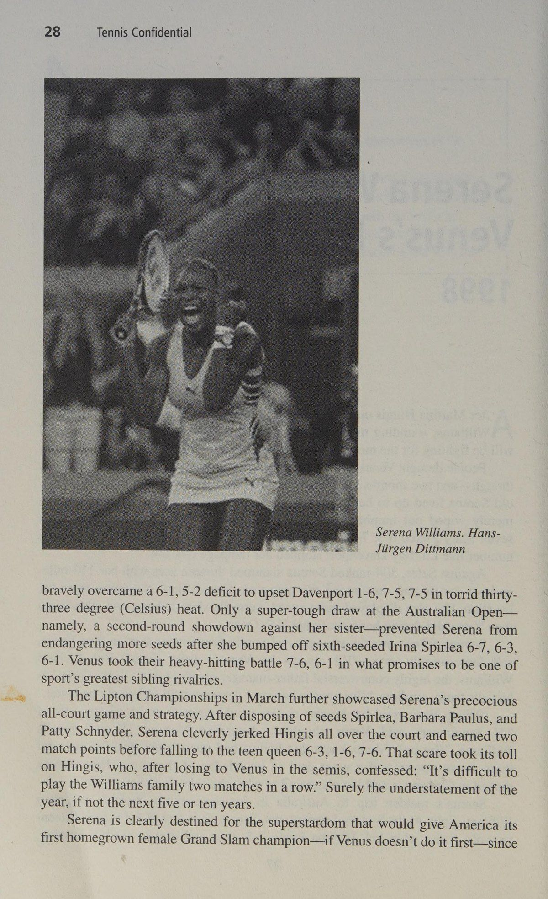
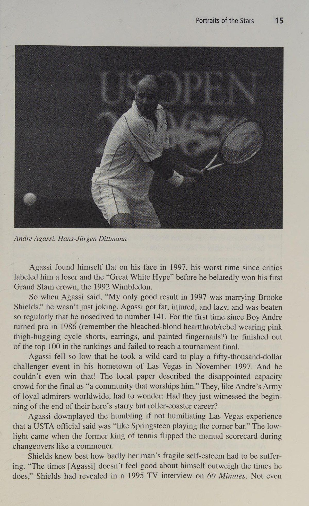
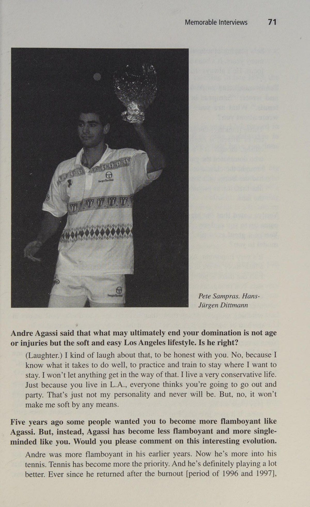
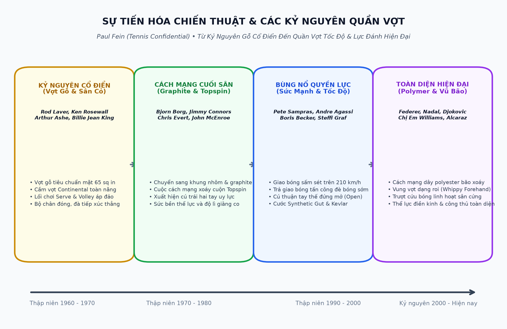
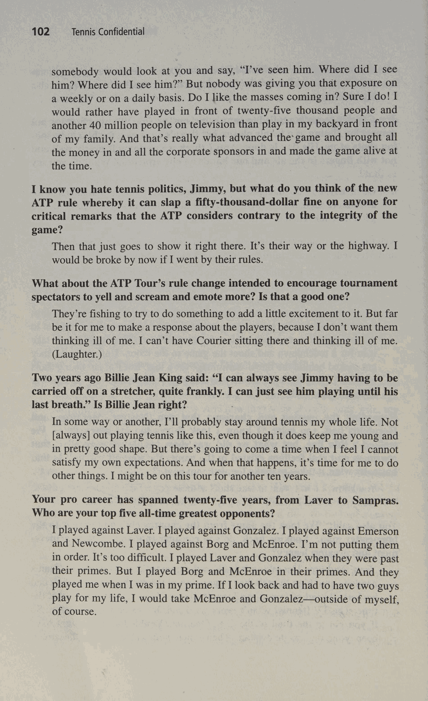
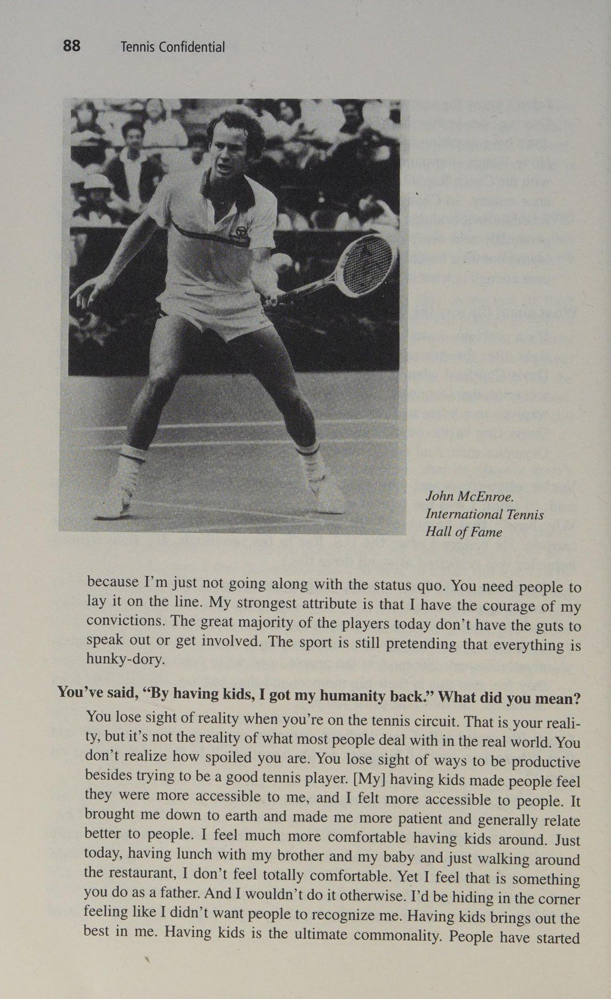
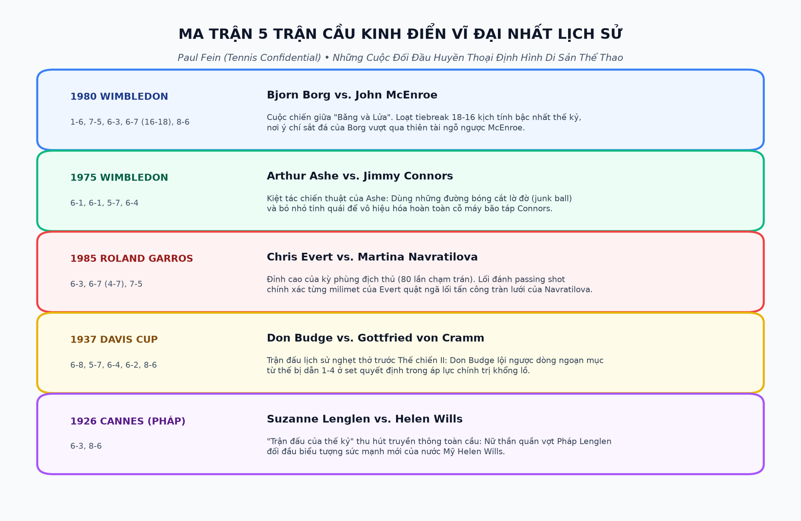
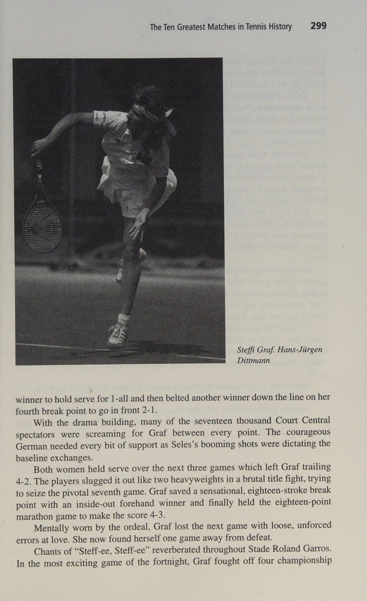

Hồ Sơ Tuyệt Mật Quần Vợt
Bản dịch Việt ngữ này chỉ dùng cho mục đích học tập cá nhân, phi thương mại. Bản quyền tác phẩm gốc thuộc về tác giả và nhà xuất bản.
Giới thiệu: Cận cảnh các huyền thoại quần vợt
- Giới thiệu chiếc mũ mà Venus và Serena Williams, Pete Sampras, Anna Kournikova và Andre Agassi thực sự thích? Và cảm giác như thế nào khi ở gần John McEnroe, Martina Navratilova và Jimmy Connors? Những người hâm mộ quần vợt thường hỏi tôi về những huyền thoại này khi họ không làm phiền tôi bằng những ý kiến thẳng thắn về vấn đề nóng bỏng mới nhất. Những người hâm mộ quần vợt rất cuồng nhiệt vì đây là môn thể thao cá nhân—mặc dù là đánh đôi—và những tay vợt hàng đầu của môn này là những người có chủ nghĩa cá nhân cao độ, luôn thu hút sự chú ý của chúng tôi.
Bên cạnh việc trình diễn ngoạn mục, họ còn thể hiện bản thân thông qua cuộc sống hấp dẫn, không quá riêng tư. Bạn trai mới nhất của Anna, biệt thự mới trị giá 23 triệu đô la của Andre, nơi anh và Steffi sẽ sống, nhiều hoạt động kinh doanh, giải trí và giáo dục của vợ chồng Williams, và tất cả những lời nói của họ cũng quan trọng như những cú vô lê trên sân của họ. Những người theo dõi quần vợt, trái ngược với những người chơi một số môn thể thao khác, hầu như luôn chơi hoặc đã tự mình chơi trò chơi này, và điều đó khiến họ khá am hiểu.
Họ cũng quan tâm sâu sắc đến một môn thể thao mà họ cảm thấy không nhận được sự chú ý từ các phương tiện truyền thông chính thống. Cuốn sách này là tập hợp những bài viết hay nhất của tôi đã xuất hiện trên các tạp chí và báo chí khắp thế giới. Nó là đỉnh cao của nỗ lực lâu năm của tôi nhằm mang đến cho những người yêu thích quần vợt những gì họ thích: những hiểu biết sâu sắc về những tay vợt hàng đầu, cơ hội hồi tưởng lại những trận đấu vĩ đại nhất trong lịch sử, những phân tích chuyên sâu về những tranh cãi quan trọng và những xu hướng hấp dẫn cũng như những trích dẫn thú vị và thông tin thú vị giúp tăng thêm hương vị cho môn thể thao hấp dẫn của chúng tôi.
Tôi quyết định đưa vào các cuộc phỏng vấn Hỏi & Đáp, hầu như không bao giờ xuất hiện trong sách thể thao, bởi vì chúng cho phép các vận động viên thể hiện tâm trí và tiếng nói từ trái tim của họ một cách tốt nhất. Tôi hy vọng những cuộc phỏng vấn tôi đã chọn sẽ khai sáng và giúp bạn giải trí. Một số có thể làm bạn tức giận. Nhưng những người chơi quần vợt, ơn trời, đừng để vợt của họ nói lên tất cả. Trước khi chia sẻ cuộc phiêu lưu 25 năm của mình với tư cách là một nhà văn quần vợt tự do với bạn, tôi muốn đảm bảo với bạn rằng tôi chưa bao giờ chịu ơn một nhà xuất bản tạp chí cũng như bất kỳ tổ chức chuyên nghiệp và nghiệp dư nào quản lý quần vợt.
Tôi đã cố gắng viết mà không sợ hãi hay thiên vị để cung cấp thông tin cho độc giả và cải thiện môn thể thao đã mang lại cho tôi và hàng triệu người khác niềm vui lớn như vậy. Tôi hy vọng bạn thích đọc cuốn Bí mật quần vợt một cách kỹ lưỡng như tôi thích viết nó. Vui lòng gửi email cho tôi theo địa chỉ lincjeff1 @cs.com kèm theo nhận xét của bạn. XV
Chương 1: Chị em nhà Williams: Cô bé lọ lem Ghetto
Venus Williams: Cô gái Lọ Lem Ghetto phải luôn bận rộn," Venus Williams nói ở giữa trận ra mắt giải Úc mở rộng. Đặc biệt nếu cô ấy đang có một cuộc phiêu lưu xuất sắc ở một vùng đất xa xôi. Vì vậy, Venus và em gái Serena, người em gái nóng bỏng nhất trong thể thao, bắt đầu nói chuyện rác rưởi, tuyên bố rằng họ có thể đánh bại bất kỳ kẻ nào xếp hạng từ hai trăm trở xuống. Karsten Braasch, người Đức đeo kính cận, hút thuốc, đã thực hiện thử thách với tư cách là người bảo vệ giới tính chống lại những đứa trẻ thần đồng từ đó. các bang.

“Tôi vừa quyết định muốn tham gia giải ATP,” Serena nói đùa. “Tuần này, tôi có thể tham gia hai chuyến du lịch.” Câu chuyện kỳ lạ và đáng kinh ngạc của Venus, “Kẻ phá hoại bữa tiệc”—như Sports Illustrated đã đặt tiêu đề đầy khiêu khích cho trận ra mắt giải Mỹ mở rộng năm 1997 của cô với tư cách là một tay vợt vào chung kết không được xếp hạt giống — và Serena đã xác nhận phần lớn những gì mà Arthur Ashe quá cố đã dự đoán vào năm 1988. “Với cơ hội giống như những người khác đã có, người da đen có thể thống trị quần vợt chỉ trong vòng mười đến mười lăm năm giống như họ đã thống trị các môn thể thao khác,” anh nói.
Thậm chí còn gây tranh cãi hơn, Ashe cũng cảnh báo trước rằng nếu người da đen tiếp quản, "điều đó sẽ tạo ra vấn đề vì hành vi, lời nói và cách ăn mặc của họ chỉ là một nền văn hóa hoàn toàn khác. Quần vợt là một môn thể thao rất bảo thủ có nguồn gốc sâu xa từ các quy tắc đạo đức và truyền thống của Anh thời Victoria. Các nhóm thiểu số—đặc biệt là các nhóm thiểu số nội thành—có các chuẩn mực văn hóa hoàn toàn trái ngược với các tiêu chuẩn của người Mỹ da trắng thuộc tầng lớp trung lưu và thượng lưu." Các vận động viên da đen to lớn hơn ngoài đời từ lâu đã khơi dậy những cảm xúc mạnh mẽ ở nước Mỹ nhạy cảm về chủng tộc.
Khi Jack Johnson hào hoa, người yêu phụ nữ da trắng, trở thành nhà vô địch quyền anh hạng nặng da đen đầu tiên, người da trắng đã bạo loạn ở một số thành phố lớn. Muhammad Ali bị phỉ báng vì phản đối chiến tranh Việt Nam và
4 Bí mật quần vợt và Venus Williams. Hans- Jiirgen Diitmann từ chối được giới thiệu vào Quân đội Hoa Kỳ, nhưng “Người vĩ đại nhất”, khi anh ta tự quảng bá bản thân một cách khoa trương, đã nổi lên như một anh hùng bất kính đối với cả người da đen và người da trắng và là nhân vật thể thao nổi tiếng nhất thế kỷ. Althea Gibson dũng cảm tâm sự rằng cô ấy đã trở thành nhà vô địch da đen đầu tiên trong môn quần vợt một phần “vì tôi đã sẵn sàng nhận một số hình phạt tàn ác trong suốt chặng đường”. Cơ quan quần vợt Mỹ cuối cùng đã miễn cưỡng cho phép tay vợt 23 tuổi đến từ Harlem phá bỏ “rào cản màu sắc” và gia nhập Hoa Kỳ năm 1950.
Chức vô địch tại Forest Hills, nhưng chỉ sau khi họ yêu cầu cô phải kiểm tra để xác nhận cô là phụ nữ. Khi Gibson tham gia chuyến lưu diễn nghiệp dư lúc bấy giờ, gần như tất cả các cô gái da trắng đều xa lánh cô ấy; Tệ hơn nữa, báo chí người da đen không ngừng chỉ trích cô vì cô “không đủ chiến binh” với tư cách là một nhà thập tự chinh vì dân quyền. Truyền thuyết về việc Venus thời trẻ trốn thoát khỏi khu rừng bê tông của Compton, California đầy rẫy tội phạm, để đến với những bãi cỏ trang nghiêm của Wimbledon đã được dàn dựng một cách khéo léo bởi người cha có phong cách riêng của cô, Richard.
Giống như Ali
Chân dung của Stars 5 có khả năng hút giới truyền thông vào bẫy ruồi Venus của mình, Williams kể lại một cách hấp dẫn cách Venus và Serena né đạn trong các buổi luyện tập của họ bằng cách chạm đất và lăn về phía cổng. Williams cho biết: “Có nhiều AK-47 hơn sách học,” ông nói trong bản tin rằng ông đã bị các thành viên băng đảng đánh đập nhiều lần trước khi được họ tôn trọng. May mắn thay, những tên trùm đầu địa phương ở khu Nam Trung tâm Los Angeles khét tiếng của chúng thường tự hào về những thần đồng quần vợt và bảo vệ họ.
Sinh ra không cha và nghèo ở Shreveport, Louisiana, Richard Williams làm nghề trồng bông khi còn là một thiếu niên trước khi chuyển đến Chicago và sau đó là Los Angeles, nơi ông thành lập một công ty bảo mật nhỏ. (Trong cuốn sách Venus Envy xuất bản năm 2001, tác giả L. Jon Wertheim đã điều tra tuyên bố của Williams và viết: “Những người biết Richard khi còn nhỏ đều nói rằng câu chuyện [về việc anh là con trai một người trồng trọt và hái bông] là vô lý.) Anh lần đầu tiên chú ý đến quần vợt vào năm 1978, hai năm trước khi Venus ra đời, khi anh thấy Virginia Ruzici nhận được 35.000 đô la tiền thưởng khi vô địch một giải đấu, nhiều hơn số tiền anh kiếm được trong một năm.
Vì vậy, anh ấy nói với vợ mình, Oracene, "Hãy sinh hai đứa con, cho chúng chơi quần vợt và chúng sẽ trở thành siêu sao." Họ đã có ba cô gái và Oracene nghĩ anh ta bị điên. Theo truyền thuyết, khi Venus bốn tuổi rưỡi chơi lần đầu tiên, cô bé đã đánh được 550 quả bóng mà không trượt trong khoảng 45 phút. Đến năm sáu tuổi, cô sống và hít thở quần vợt một cách ám ảnh đến mức Williams “lấy từng chiếc vợt tennis và đập vỡ chúng” và không cho cô chơi trong một năm rưỡi tiếp theo.
Từ chín đến mười một tuổi, Venus đã khủng bố giải đấu trẻ miền nam California, lập kỷ lục hoàn hảo 63-0, trong khi Serena, trẻ hơn mười lăm tháng, cũng có sức tàn phá tương đương. Williams mệnh danh Venus là “Cô bé lọ lem khu ổ chuột” và tin chắc rằng cô ấy sẽ là tấm vé cho anh đến một cuộc sống tốt đẹp hơn. Ông Williams thẳng thắn thừa nhận: “J thực sự tham gia quần vợt để có thể kiếm được một triệu đô la. “Ngay từ đầu tôi đã không có động cơ đúng đắn. Khi đó tôi cũng giống như bất kỳ phụ huynh [quần vợt] nào khác.” Theo Williams, vòng đua cấp dưới đã cho anh thấy các bậc cha mẹ, bị say mê bởi sự cám dỗ của tài sản và danh tiếng tiềm năng, đã làm tổn thương con cái họ như thế nào.
“Bạn thấy tất cả các bác sĩ da trắng và cách họ đánh đập con mình,” Williams nhớ lại. “Tôi đã từng thấy những cô gái sợ bước ra sân với Venus và sợ gấp mười lần bước ra khỏi sân sau đó. Tôi đã từng thấy các bậc cha mẹ nói: “Mày để thằng mọi đen đó giết mày như thế đấy”. Thất vọng, Williams vĩnh viễn rút các cô con gái tài năng của mình ra khỏi cuộc thi cấp cơ sở. Vì chưa có nhà vô địch quần vợt nào bỏ qua kinh nghiệm quý báu của các giải đấu cấp cơ sở nên động thái này đã thách thức sự hiểu biết thông thường và tỏ ra vô cùng gây tranh cãi.
Nó cũng nâng cao huyền thoại hoặc, như một số người hoài nghi buộc tội, huyền thoại. Báo chí, các tay vợt, huấn luyện viên, phụ huynh và tổ chức quần vợt không thể hiểu được Williamses. Người cha, người ra quyết định tất cả, có bị điên không, hay ông ta điên như một con cáo? Và những cô con gái được nhiều người biết đến của ông tốt đến mức nào? Bí ẩn đã mê hoặc thế giới quần vợt trong ba năm rưỡi sau khi gia đình chuyển đến Florida, nơi Rick Macci được đánh giá cao đã huấn luyện họ tại
6 Bí mật quần vợt học viện quốc tế của anh. Macci mô tả Venus, khi đó là một phụ nữ-trẻ em cao 6'1 1/2", là "sự kết hợp độc đáo giữa Monica Seles và Martina Navratilova", và Serena là "vận động viên giỏi nhất mà tôi từng huấn luyện, dù trai hay gái." Cuộc nói chuyện có thể rẻ tiền, nhưng nó luôn đầy màu sắc và thường rất vui nhộn với Williamses. Và vì cả hai cô gái đều được cha của họ nói với họ trong nhiều năm rằng số phận của họ là sự vĩ đại nên họ cũng thực sự tin vào điều đó. Ở tuổi mười bốn, Venus cực kỳ tự tin, nghe giống như Ali thời kỳ đầu, reo lên: “Tôi có thể vượt xa số một.
Với cách tôi chơi, chiều cao, sự hung hãn, lòng can đảm và không sợ hãi, tôi có thể thay đổi trận đấu. Nó giống như Michael Jordan và những cầu thủ còn lại ở NBA. Anh ấy đã đi trước một bước so với những người khác.” SỰ THẬT HẤP DẪN: e Venus Williams bắt đầu nhận thiết bị chơi quần vợt miễn phí từ các nhà sản xuất khi mới 6 tuổi. ¢ Oracene Williams đã tạo ra một dự án có tên là Chẩn đoán Đánh giá lại Giáo dục vì “đất nước chúng ta đang đào tạo ra những đứa trẻ thất học”. Nó nhằm mục đích “đánh giá lại học sinh và giúp họ điền vào những gì họ đã bỏ lỡ”. ¢ Oracene Williams đã lập kỷ lục 4-0 trong trận đấu tay đôi với những kẻ bắt nạt thời thơ ấu ở khu phố Saginaw, Michigan, khắc nghiệt của cô.
Richard Williams khiến mọi người mất thăng bằng với những cường điệu, nhận xét khó hiểu và mâu thuẫn của mình. Anh ấy thường khẳng định rằng “bất kỳ bậc cha mẹ nào cho phép con mình chơi quần vợt chuyên nghiệp trước khi cô ấy mười sáu tuổi đều là điên rồ và đáng bị xử bắn,” nhưng anh ấy đã làm chính xác điều đó với cô bé Venus mười bốn tuổi. Anh ấy chê bai áp lực và những kỳ vọng lớn đặt lên những đứa trẻ mê quần vợt ngay cả khi anh ấy nhiệt tình thổi phồng thần đồng của mình và khoe khoang: “Venus Williams được giới truyền thông chú ý nhiều hơn bất kỳ ai trong giới thể thao ngoại trừ Michael Jordan.” Những người hoài nghi chế nhạo rằng Williams chỉ đang cố gắng thổi phồng các hợp đồng chứng thực tiềm năng bằng cách từ chối tất cả các nhà thầu trong vài năm.
Anh ta cũng gây khó dễ cho tổ chức quần vợt bằng cách đánh bật nhiều công ty quản lý đang theo đuổi gia đình anh ta. Cuối cùng, vào năm 1995, Williams đã yêu cầu Venus ký hợp đồng chứng thực 5 năm với Reebok với số tiền được báo cáo là 12 triệu đô la - nhiều hơn hợp đồng trị giá 10 triệu đô la của tay vợt số một thế giới Martina Hingis với Tacchini - sau khi Venus chỉ chơi một giải đấu chuyên nghiệp. Màn ra mắt chuyên nghiệp của Venus hóa ra lại hấp dẫn và giật gân như được quảng cáo rầm rộ. Sau khi giành chiến thắng trong trận đấu đầu tiên tại một giải đấu ở Oakland vào tháng 11 năm 1994, Venus đã chứng tỏ mình thực sự khi vượt lên dẫn trước 6-3, 3-1 trước tay vợt số hai thế giới Arantxa Sanchez Vicario trước khi cúi đầu.
Venus, mười bốn tuổi, không những không tham gia một giải đấu nào trong ba năm rưỡi, mà thậm chí cô ấy còn không tập luyện một tuần trước khi có thành tích đáng chú ý của mình.
Chân dung buổi biểu diễn của Stars 7. Là một người theo chủ nghĩa bài trừ thánh tượng xảo quyệt, thay vào đó, Williams đã đưa các con gái của mình đến hội nghị Nhân chứng Giê-hô-va, Busch Gardens và Six Flags, một công viên giải trí ở Atlanta vào tuần đó. Anh ấy giải thích một cách hợp lý: “Nếu bạn hạnh phúc, cân bằng và không ai thúc ép bạn làm điều gì đó, thì bạn có thể cố gắng hết sức vì bạn cảm thấy như bạn đang làm việc đó cho chính mình”. Venus và Serena sẽ không kiệt sức vì “quá nhiều, quá sớm” như Jennifer Capriati đáng buồn đã làm.
Venus chỉ chơi ba giải chuyên nghiệp vào năm 1995, năm giải vào năm 1996 và mười giải vào năm 1997. Trớ trêu thay, cô lại bị cho là chơi quá ít giải đấu và do đó cản trở sự phát triển của mình. Nhưng Williams, hiện là huấn luyện viên kiêm quản lý của Venus, không hề quan tâm đến những gì được gọi là chuyên gia nghĩ. Người đàn ông 55 tuổi nói với chương trình truyền hình 60 Minutes: “Bất kỳ ai là một vận động viên quần vợt chuyên nghiệp hoặc bất kỳ ai có liên quan đến quần vợt chuyên nghiệp, tôi đều không nghĩ nhiều về họ, không đời nào”. Trong nhiều năm, Williams đã nhiệt tình thuyết giảng về tầm quan trọng của giáo dục đại học, và ba cô con gái lớn của ông đều đang học đại học hoặc đã tốt nghiệp.
"99% các ngôi sao cấp dưới không được giáo dục, họ nói không tốt, họ không thể hiện bản thân tốt", anh ấy buộc tội. "Tôi nghi ngờ liệu có ngôi sao cấp dưới nào từng sánh ngang với Venus và Serena khi nói đến học vấn và cách nói hay không. Các cô gái của tôi ngày nay có thể sánh ngang với người Nhật và người Đức về trình độ học vấn cao”. Bất chấp sự cường điệu, trong giải đấu chuyên nghiệp ngày nay—nơi mà những sinh viên tốt nghiệp đại học là những con chim quý hiếm và chỉ bằng tốt nghiệp trung học gần như là một biểu tượng của thành tích học tập—các cô gái Williams vẫn nổi bật.
Venus theo học tại trường Cao đẳng Cộng đồng Palm Beach, trong khi Serena theo học tại một trường tư thục và cũng sắp vào đại học. Luôn là những học sinh danh dự, họ thể hiện sự nhiệt tình trí tuệ của mình bằng cách mang theo sách giáo khoa đến các cuộc thi đấu và đọc truyện Shakespeare cho nhau nghe trong các chuyến đi bằng máy bay và ô tô. “Tôi thích Macbeth hơn hết vì đây là một vở kịch thực sự hay và tôi luôn muốn xem trực tiếp,” Serena nói. “Bài phát biểu “Ngày mai, ngày mai và ngày mai, / Bài phát biểu với nhịp độ nhỏ nhặt này từ ngày này sang ngày khác thật tuyệt vời.
Tôi chưa bao giờ nghĩ mình sẽ là người nói điều này, nhưng nó thật sâu sắc.” Venus đã thể hiện sự tinh tế của mình trên sân khấu với màn ra mắt khó quên tại US Open 1997. Nó trùng hợp—hay đúng hơn là xung đột—với sự ra mắt của Sân vận động Arthur Ashe, trung tâm của cuộc cải tạo trị giá 254 triệu đô la của Trung tâm Quần vợt Quốc gia, và nó đã xác nhận một cách kỳ lạ dự đoán của Ashe về xung đột chủng tộc-văn hóa. Cô nàng xinh đẹp như tượng “Ghetto Cinderella”, đeo 1800 hạt màu đỏ, trắng và xanh kêu vang trên mái tóc tết, như cô ấy nhận xét, “khác biệt về mọi mặt so với người chơi chính thống” khi cô ấy áp đảo những đối thủ da trắng nhỏ hơn và kém thể thao hơn bằng những cú đánh mạnh và những cú giao bóng bùng nổ với tốc độ lên tới 119 dặm một giờ.
Cuộc tấn công không có tù nhân của Venus gợi nhớ đến Gibson, người tự mô tả mình là "hung hăng, năng động và xấu tính" khi giành chức vô địch Mỹ, Wimbledon và Pháp bốn mươi năm trước. Những điểm tương đồng cũng mở rộng đến tính cách ngoài sân đấu của họ. Thiên hướng khoe khoang của Venus—chẳng hạn như đánh bại Iva Majoli trong top 10 vào tháng 3 năm ngoái và sau đó
8 Tennis Confidential tuyên bố, “Tôi có thể đã đánh bại cô ấy ba năm trước” —khiến những người chơi khác không hài lòng. Những người đứng đầu Monica Seles và Lindsay Davenport, trong số những người khác, đã tỏ ra khó chịu khi prima donna Venus chê bai họ bằng cách kiêu ngạo bước đi ngang qua và thậm chí không đáp lại một câu “Xin chào” thân thiện. Và một số tay vợt phàn nàn rằng cô ấy chỉ đi chơi với mẹ mình, Oracene và Serena và bỏ qua các sự kiện xã hội của giải đấu. Venus đã nói rằng cô ấy muốn trở thành Tiger Woods của quần vợt.
Tuy nhiên, cho đến nay, cô vẫn thiếu tính cách hòa đồng, lạc quan của anh và thừa nhận: "Tôi không đến các giải đấu để kết bạn, đi dự tiệc hay trò chuyện. Tôi đến để trở thành người giỏi nhất, và tôi không xấu tính, độc ác và bẩn thỉu." Angela Buxton, người bạn lâu năm, bạn tâm giao và cựu đối tác đánh đôi của Gibson, cho biết: “Rõ ràng là cả hai đều có gánh nặng trên vai ở một mức độ nhất định”. “Điều đó khiến họ phát biểu một cách rất tự tin và vượt trội.
Họ nói: 'Tôi sẽ đánh bại người này người kia' và 'Tôi sẽ trở thành người giỏi nhất' và 'Bạn không có cơ hội.' Althea đã làm chính xác điều tương tự vào những năm 50. Nó không dẫn tới sự nổi tiếng. Nhưng trò chơi này không dành cho việc đặt cược mức độ phổ biến. Mặt khác của đồng xu là cả hai đều đe dọa hoặc ít nhất là lọt vào đầu những người chơi khác ”. Trong trận bán kết US Open, những hành vi thiếu thận trọng trong quá khứ của Venus và sự thù địch chủng tộc sôi sục của cha cô đã ập đến và gần như làm lu mờ chiến thắng anh hùng của cô.
Một cuộc đối đầu là không thể tránh khỏi. Irina Spirlea phẫn nộ trước sự chú ý to lớn của giới truyền thông Venus, Anna Kournikova gợi cảm, tân binh mười lăm tuổi Mirjana Lucic và nữ hoàng tuổi teen Hingis nhận được trước sự bất lợi của những cựu binh trong tour du lịch như cô. Spirlea nóng tính, người đã bị loại khỏi một giải đấu ở Ý vì chửi bới và chỉ trích trọng tài, đã loại Kournikova, Amanda Coetzer và Seles số hai tại Flushing Meadows trước khi hạ gục Venus trong trận đấu hấp dẫn nhất năm 1997.
Venus thoát khỏi điểm đầu tiên trong hai điểm của trận đấu bằng một cú chuyền bóng trái tay xuất sắc và ấn định tỷ số 7-6, 4-6, 7-6. Sau khi giành chiến thắng, Venus nhảy cẫng lên vì sung sướng và kêu lên: "Ôi trời, chuyện này cứ như một giấc mơ vậy. Mình phải bình tĩnh lại thôi. Vui quá". Tuy nhiên, Venus sẽ sớm phải tiết chế niềm hạnh phúc đó. Spirlea và Venus đã va chạm trong quá trình chuyển đổi ở tập thứ hai, và có vẻ như Spirlea cũng “cố tình” đầu gối cô ấy khi họ va chạm.
Trong khi Venus hạ thấp sự việc, Spirlea giận dữ đổ lỗi cho thái độ hống hách của Venus, nói với giới truyền thông: "Cô ấy nghĩ mình là Venus Williams chết tiệt, và cô ấy sẽ không quay đầu lại. Thế thôi. Tôi xin lỗi vì cô ấy cảm thấy như vậy." Williams tham gia Câu lạc bộ quần vợt Bad Dads bằng cách đổ thêm dầu vào lửa. Huấn luyện viên tinh quái, người không thường xuyên tham dự các trận đấu của con gái mình, đã gọi điện cho Associated Press từ Florida và gọi tình tiết va chạm là “một chuyện phân biệt chủng tộc” và gọi Spirlea là “một con gà tây trắng to, xấu xí, cao lớn”. Không trích dẫn bằng chứng hay nêu tên bất kỳ ai, Williams cũng cáo buộc rằng một số phụ nữ trong cuộc đua đã đưa ra nhận xét phân biệt chủng tộc về sao Kim.
Những lời cáo buộc chưa được chứng minh đã khiến nhiều người trong giới thể thao và giới truyền thông phẫn nộ, đồng thời khiến một số cầu thủ trong giải đấu phủ nhận thẳng thừng.
Portraits of the Stars 9 Venus cuối cùng buộc phải trả lời những câu hỏi dai dẳng của phóng viên về cáo buộc của cha cô. Với sự khôn ngoan mà cha cô thiếu, Venus, 17 tuổi, nói: "Tôi nghĩ với khoảnh khắc này trong năm đầu tiên ở Sân vận động Arthur Ashe, tất cả tượng trưng cho việc mọi người ở bên nhau, mọi người đều có cơ hội thi đấu. Vì vậy, tôi nghĩ điều này chắc chắn đang hủy hoại tâm trạng, những câu hỏi về phân biệt chủng tộc." Williams đã chơi “lá bài đua” và thua.
Màn trình diễn phụ khoa trương của anh ấy đã đầu độc bầu không khí, nhưng Venus vẫn đánh cắp chương trình bằng quần vợt ngoạn mục, lòng dũng cảm và nụ cười điện tử. Phân biệt chủng tộc? Không phải ở Flushing Meadows trong hai tuần hỗn loạn đó khi phần lớn khán giả ủng hộ phenom đen. Phân biệt chủng tộc? Venus đã chơi sáu trong số bảy trận đấu của mình trên sân vận động Arthur Ashe và chỉ có nữ hoàng tuổi teen được yêu mến Chrissie Evert trước đây mới nhận được sự đối xử như vậy của hoàng gia. Phân biệt chủng tộc? Chủ tịch Hiệp hội Quần vợt Hoa Kỳ Harry Marmion tuyên bố, “Venus Williams là điều tuyệt vời nhất đã xảy ra với quần vợt Mỹ trong 20 năm qua”. Nuôi dạy bố không phải là điều dễ dàng đối với các cô gái nhà Williams.
Sao Kim có thể là nữ thần tình yêu, nhưng sao Kim này phải đòi hỏi sự kiên nhẫn của Job để bảo vệ người cha ương ngạnh của mình trước làn sóng chỉ trích của giới truyền thông. Bực mình vì câu hỏi mà cô từ chối trả lời, Venus trừng mắt nghi ngờ với một nhà báo thể thao kỳ cựu người Mỹ vào năm ngoái và tham gia vào cuộc trao đổi gay gắt này trước khi kết thúc cuộc phỏng vấn TennisMatch. “Anh không định hỏi tôi câu hỏi đáng ghét đó sao?” “Đó là cái gì vậy?” “Tại sao tôi lại thân thiết với bố tôi như vậy?” “Thật ra thì không.” “Được rồi, tôi không trả lời câu đó nữa!” Trong khi Venus không tung ra cú đấm nào và nhận một số đòn nặng nề thì Serena, mười sáu tuổi, một tinh thần vui vẻ, vẫn bình thản đứng trên cuộc xung đột.
"Venus không thân thiện hay cởi mở với những người chơi khác," Davenport nói. "Nhưng tôi nghĩ Serena là người cuồng loạn - một cô gái thực sự vui tính và rất hướng ngoại." Serena có rất nhiều điều để cười và cười. Với tài năng thể thao và vóc dáng tốt nhất kể từ Martina Navratilova, cơ bắp cao 5'10", Serena nặng 155 pound bắt đầu xé nát vòng đua vào tháng 11 năm ngoái khi hạ gục số bốn Monica Seles và số bảy Mary Pierce ở Chicago. “Tôi luôn tin rằng Serena cuối cùng sẽ giỏi hơn,” Williams dự đoán.
“Những cô gái Ghetto,” như cách Williams gọi họ, đã phát triển mạnh mẽ—không có bố—trong bầu không khí Down Under đầy nắng, thoải mái mà họ ví như miền nam California. Tại Sydney International vào tháng 1, Serena đã hạ Lucic với tỷ số 7-5, 6-3, và mặc dù rõ ràng là khập khiễng, đã dũng cảm vượt qua tỷ số thâm hụt 6-1, 5-2 để hạ gục Davenport 1-6, 7-5, 7-5 trong cái nóng oi bức ba mươi ba độ (Celsius). Trong khi đó, Venus chật vật nhưng không bao giờ bỏ cuộc, lần đầu tiên đánh bại đội đầu bảng Hingis với tỷ số 3-6, 6-4, 7-5.
Davenport cho rằng Serena đã chơi tốt hơn Venus rồi, và trận hòa kém may mắn ở Oz Open đã giúp Serena có cơ hội chứng tỏ điều đó. Serena đánh bại hạt giống số sáu Spirlea với tỷ số 6-7, 6-3, 6-1 để quyết đấu tay đôi ở vòng hai trên sân Trung tâm
10 Bí mật về quần vợt đối với người bạn thân nhất của cô ấy—Venus. “Tình yêu thì liên quan gì tới chuyện đó?” Serena nói đùa. “Tôi không có thời gian để tiến tới từ từ; cả hai chúng tôi đều muốn trở thành số một.” Serena đọc vài cuốn Hamlet để chuẩn bị cho âm mưu nội bộ gia đình. Nhưng Venus đã xử lý áp lực của đối thủ tốt hơn và giành chiến thắng 7-6, 6-1 trong một trận đấu mà Oracene đã nói rất đúng: "Chúng tôi không thể thua. Gia đình thắng." Sau đó, Venus ôm Serena như tình chị em, và họ củng cố chủ đề “Chúng ta là gia đình” bằng cách nắm tay và đồng loạt cúi đầu.
Nếu “Ghetto Girls” tiếp tục tiến bộ với tốc độ chóng mặt này—Serena, thật đáng kinh ngạc, đã đánh bại năm tay vợt trong top 10 chỉ trong kỷ lục giải đấu là mười sáu trận đấu—chắc chắn sẽ thấy thương hiệu đó cúi đầu sau nhiều trận chung kết Grand Slam. Giải vô địch Lipton gần như đã chứng kiến trận bán kết đầu tiên toàn Williams. Hingis xếp hạng cao nhất đã thoát khỏi hai điểm trận đấu trước Serena cũng thông minh không kém trong hiệp đấu trước khi Venus hạ gục Hoa hậu Thụy Sĩ không còn hay cười với tỷ số 6-2, 5-7, 6-2 ở bán kết và sau đó hạ gục Kournikova để giành danh hiệu lớn nhất của cô ấy.
Trong tuyên bố kém cỏi của năm, Hingis sau đó đã thừa nhận: “Thật khó để chơi hai trận liên tiếp với gia đình Williams.” Ở Úc, cả hai chị em đều đau khổ khi để thua bộ phim “Battle of the Sexes” vào tay Braasch. Serena, nạn nhân 6-1, thề sẽ trả thù: "Lần này năm sau tôi sẽ đánh bại anh ta. Tôi phải tập tạ.... Tôi phải tập luyện chăm chỉ để tham gia giải đấu dành cho nam". Mặc dù Venus thất thủ 6–2 trước Braasch và thua Davenport ở nội dung đánh đơn, nhưng cô đã giành được danh hiệu đôi nam nữ với Justin Gimelstob cho chiếc cúp Slam đầu tiên của mình.
Nếu cả thế giới đều là một sân khấu thì sao Kim đang dàn dựng nhiều màn trình diễn rực rỡ hơn. Cô nói: “Tôi đã học được rất nhiều điều ở Úc. "Cho dù tôi chơi tệ đến đâu, tôi vẫn có thể thắng. Tôi đang thắng và mọi thứ thật tuyệt vời. Serena và tôi đang thống trị trận đấu và chúng tôi sẽ không rời đi." SỰ THẬT HẤP DẪN: Thỏa thuận trị giá 40 triệu USD của Reebok với Venus Williams là thương vụ béo bở nhất đối với một nữ vận động viên trong lịch sử. e Một bức ảnh 8"x11", có chữ ký của Venus Williams được bán với giá 80 đô la tại Thế vận hội Sydney và có giá trị cao hơn tất cả các bức ảnh của vận động viên Thế vận hội khác về giá trị, theo một biểu đồ được công bố trên USA Today.
e Khi Tổng thống Bill Clinton gọi điện cho Venus Williams để chúc mừng cô đã vô địch giải Mỹ mở rộng năm 2000, cô ấy đã đưa ra hướng đi của cuộc trò chuyện và yêu cầu, "Làm ơn giảm thuế cho tôi được không?" Khi Tổng thống Clinton gợi ý rằng ông muốn có sự miễn trừ đặc biệt dành cho các vận động viên, Venus đã khôn ngoan nói: "Có nên đọc môi bạn không?" e Khi Venus và Serena Williams thi đấu trong trận chung kết Giải Mỹ mở rộng năm 2001 vào tối thứ Bảy, ngày 8 tháng 9, nó đánh dấu trận chung kết Grand Slam đầu tiên diễn ra vào giờ vàng, cuộc gặp đầu tiên giữa những người Mỹ gốc Phi trong một trận chung kết Grand Slam và trận chung kết đầu tiên giữa hai chị em tại một giải đấu lớn sau 117 năm.
Chân dung các vì sao 11 Thế giới hoang dã và lập dị của Williamses Richard: "Chúng tôi sẽ không lùi bước và trở thành những người tốt như họ nghĩ. Họ phải nhận ra chúng tôi đến từ Compton, California. Ở Compton, bạn không được coi thường." Venus: "Tôi thực sự chưa bao giờ chơi cho một khán giả không dành cho tôi. Sẽ đến ngày họ dành cho người chơi khác. Tôi sẽ chuẩn bị cho điều đó." Richard: "Venus không thực sự quan tâm đến việc giao lưu. Tôi chưa bao giờ thấy một võ sĩ quyền anh nào nói, 'Chúng ta hãy ăn bánh rán và cà phê [trước trận đấu]....
Lakers chưa bao giờ làm được điều đó trong môn bóng rổ. Các cầu thủ bóng đá không làm điều đó.” Richard, về lý do tại sao ông không tham dự các giải đấu dành cho con gái mình: “Bạn ngồi đó, đầu quay hướng này, hướng này, vỗ tay như một con hải cẩu ở sở thú, và tôi mệt mỏi vì điều đó.” Serena, về việc cha cô cấm các con gái hẹn hò cho đến khi chúng mười tám tuổi: "Tôi thực sự không nghĩ đến điều đó lúc này. Hiện tại có những thứ quan trọng hơn nhiều, như sự nghiệp quần vợt của tôi, như học vấn của tôi, như Đức Giê-hô-va.
Và tất cả những điều đó có thể bùng nổ nếu tôi quá dính líu đến con trai.” Richard, về khả năng nhân đôi của các con gái mình: “Sẽ rất khó để bất cứ ai có thể đánh bại ‘Double Trouble.’ Họ di chuyển quá nhanh, họ vô lê quá tốt, họ giao bóng quá mạnh để các cầu thủ có thể trả bóng ổn định. Họ sẽ trở thành số một ở nội dung đánh đôi trước khi trở thành số một ở nội dung đánh đơn.” Venus, ngay trước khi thua hạt giống số hai, Lindsay Davenport người Mỹ, tại Giải Úc mở rộng 1998: “Tôi là tay vợt xuất sắc nhất Hoa Kỳ.
Thực ra, nhìn chung tôi là người chơi giỏi nhất.” Richard, khi gọi Irina Spirlea là “con gà tây trắng to, xấu xí, cao lớn”: “Tôi yêu Irina Spirlea. Tôi không thấy bất kỳ thành kiến nào cả. Tôi đã gặp cô ấy và xin lỗi vì đã đưa ra một tuyên bố ngu ngốc. Cô ấy là một người chuyên nghiệp và lẽ ra tôi không nên nói về cô ấy như vậy”. Venus, khi trở thành số một: “Tôi chưa bao giờ có [bất kỳ nghi ngờ nào] bởi vì tôi luôn được cho là mình sẽ là số một thế giới và tôi luôn tin vào điều đó.
Và đó là điều tôi đã nỗ lực hướng tới.” Richard: “Những đứa trẻ chơi tennis là những người có trình độ xã hội kém nhất mà bạn từng gặp. Không có trường học. Đánh vần không giỏi, suy nghĩ không tốt, cuộc sống của họ đều bị đảo lộn ”.
12 Tennis Confidential Serena, về việc trở thành Nhân Chứng Giê-hô-va: “Đó là số một trong cuộc đời tôi. Nếu không có Chúa, tôi sẽ không có gì cả. Tôn giáo đã giúp tôi nhận ra mình là ai. Nó đã giúp tôi không vượt quá chính mình và không khoa trương. Nó khiến tôi khiêm tốn.” Richard: “Nếu phải làm lại, tôi sẽ không đưa chúng vào quần vợt.” Zina Garrison-Jackson, tay vợt da đen lọt vào chung kết Wimbledon 1990: “Mọi người không hiểu Venus sẽ như thế nào vì cô ấy có cả một cuộc đua lôi kéo mình.
Cô ấy đang phải gánh rất nhiều trọng lượng.” Richard: “Điều duy nhất có thể khiến Venus không thể trở thành số một ở tuổi 18 là một tai nạn.” Oracene: “Chưa có ai đến gặp con gái tôi và chào cả. Họ nhìn theo hướng khác. Họ muốn chúng trở thành Stepin Fetchit của họ.” Katrina Adams, một tay vợt da đen kỳ cựu: “Mọi thứ nói về Tiger [Woods] đều tích cực. Và mọi điều nói về sao Kim đều tiêu cực.” Richard: “Có quá nhiều sự phân biệt chủng tộc ở Mỹ đến nỗi người Mỹ không quan tâm đến người da đen.” Richard, về việc khiến mọi người tức giận với những nhận xét mang tính kích động của mình: “Tôi không cố gắng làm hài lòng những người muốn tức giận.
Hãy để họ tức giận. Nếu có ai phải tức giận thì đó phải là tôi.” Billie Jean King: “Sao Kim thật tuyệt vời, chỉ thế thôi. Tuyệt vời. Cô ấy làm tôi nhớ đến Althea Gibson - cao, da đen, nhanh nhẹn, mạnh mẽ, đầy tham vọng và tự tin. Venus sẽ là Althea Gibson của thế kỷ XXI.” Richard: “Venus nên đi thẳng vào Đại sảnh Danh vọng. Dù sao thì cô ấy cũng sẽ ở đó, VẬY tại sao phải lãng phí thời gian?” Serena, sau khi được hỏi về cách cô ấy vùng lên thành công như vậy từ đường cuối sân trước Hingis ở tứ kết Lipton: “Rất nhiều người nghĩ rằng người da đen không thể tập hợp và chỉ nghĩ họ là vận động viên và không thể suy nghĩ.
Như bạn có thể thấy, điều đó không đúng. Tôi có thể biểu tình. Sao Kim có thể tập hợp lại.”
Chân dung các vì sao 13 sao Kim: “Mọi người nói về tất cả áp lực này đối với các tay vợt trẻ, nhưng điều duy nhất khiến tôi căng thẳng lúc này là tất cả những công thức hóa học mà tôi phải học. Tôi sẽ nói rằng, về cơ bản, tôi là một người hay cười. Tôi thích vui chơi. Đôi khi, khi tôi nghĩ về toàn bộ chuyện này, nó chỉ khiến tôi bật cười.” Câu chuyện này đã nhận được giải thưởng Danh dự đầu tiên trong Ban Phi hư cấu của Cuộc thi Viết văn Bang Florida năm 1999 CNW/FFWA.
28 Bí mật quần vợt Serena Williams. Hans- Jiirgen Dittmann đã dũng cảm vượt qua tỷ số 6-1, 5-2 để hạ gục Davenport 1-6, 7-5, 7-5 trong cái nóng oi bức 33 độ C. Chỉ một trận hòa siêu khó tại Australian Open— cụ thể là trận đấu ở vòng hai với chị gái cô — đã ngăn Serena gây nguy hiểm cho nhiều hạt giống hơn sau khi cô đánh bại hạt giống thứ sáu Irina Spirlea với tỷ số 6-7, 6-3, 6-1. Venus đã giành chiến thắng nặng nề với tỷ số 7-6, 6-1 trong trận đấu hứa hẹn sẽ là một trong những đối thủ lớn nhất của môn thể thao này.
Giải vô địch Lipton vào tháng 3 tiếp tục giới thiệu chiến lược và trò chơi trên toàn sân sớm phát triển của Serena. Sau khi loại bỏ các hạt giống Spirlea, Barbara Paulus và Patty Schnyder, Serena khéo léo giật Hingis khắp sân và kiếm được hai điểm trận đấu trước khi gục ngã trước nữ hoàng tuổi teen 6-3, 1-6, 7-6. Nỗi sợ hãi đó đã ảnh hưởng đến Hingis, người sau khi thua Venus ở bán kết đã thú nhận: “Thật khó để thi đấu với gia đình Williams hai trận liên tiếp.” Chắc chắn là sự đánh giá thấp của năm, nếu không phải là năm hoặc mười năm tới.
Serena rõ ràng được định sẵn cho vị trí siêu sao sẽ mang lại cho nước Mỹ nhà vô địch Grand Slam nữ cây nhà lá vườn đầu tiên — nếu Venus không làm được điều đó trước — kể từ
Chân dung các ngôi sao 29 tuổi Chris Evert đã vô địch giải Pháp mở rộng năm 1986. Nhưng làm thế nào mà thần đồng mới nhất trong môn quần vợt lại kết thúc chuyến du đấu của mình ở Chicago chỉ sau 11 trận đấu chuyên nghiệp—và sau khi không thi đấu bất kỳ giải đấu cấp cơ sở nào trong gần 4 năm trước đó? Sự tự tin dồi dào phần nào giải thích được điều đó. Trong nhiều năm, Serena và Venus đã được cha của họ thông báo rằng họ sẽ là số một thế giới ở cả nội dung đơn và đôi. Sự thất vọng lớn của Serena đối với Seles không làm Rick Macci, người đã huấn luyện các cô gái từ tháng 9 năm 1991 đến tháng 7 năm 1995 ngạc nhiên: “Những tay vợt khác coi Seles như một siêu sao với những cú đánh mặt đất tuyệt vời và hàng loạt danh hiệu Grand Slam.
Serena đấu với Seles và thấy một đối thủ thừa cân, chậm chạp, không thể lực bằng cô ấy và cô ấy kỳ vọng sẽ giành chiến thắng. Serena phủ nhận suy nghĩ đó và gọi Seles là “một vận động viên tuyệt vời” nhưng nhấn mạnh: “Tôi muốn trở thành người giỏi nhất. Bất cứ điều gì cần thiết để đạt được điều đó là những gì tôi sẽ làm. SỰ THẬT HẤP DẪN: ¢ Vào năm 2000, Serena Williams cho biết địa điểm yêu thích của cô để ghé thăm là “tấm gương trong nhà tôi”. e Thần tượng quần vợt của Serena Williams là Billie Jean King, Maureen Connolly và Althea Gibson.
e Phương châm của Serena Williams là: “| tìm kiếm sự lãng mạn.” Sự huấn luyện hàng đầu của Macci và sự hướng dẫn sau đó của cha họ - bất chấp quan điểm thông thường rằng các cô gái cần một huấn luyện viên đẳng cấp thế giới đã thành danh - đã chuẩn bị đầy đủ cho các thần đồng cho trận đấu chuyên nghiệp. Serena nói: “Tôi luôn luyện tập chăm chỉ và chơi nhiều trận, nhưng không nhất thiết phải thi đấu trong giải đấu. “Tôi nghĩ nếu tôi có thể đấu khá tốt với đàn ông thì tôi có thể xử lý được phụ nữ.” Williams, luôn là người khó kiểm soát trong khi là một người cha yêu thương, không cho phép các cô gái đấu với nhau trong luyện tập, mặc dù họ thường xuyên đánh nhau.
Serena khẳng định cô không cảm thấy có bất kỳ sự cạnh tranh anh chị em nào với Venus, “người bạn thân nhất của tôi”, nhưng nói thêm: “Cả hai chúng tôi đều có khả năng cạnh tranh rất lớn với nhau trong luyện tập vì khi đó sẽ không ai có cơ hội chống lại chúng tôi trong các giải đấu.” Giống như Hingis, Seles, Steffi Graf, Tracy Austin và những nữ hoàng tuổi teen trước đó, Serena cười khúc khích cứng rắn như đinh đóng cột khi thi đấu. Macci nhớ lại: “Khi Serena lên 10, cô ấy là cô gái duy nhất ở học viện chơi đuổi bắt bằng nắm đấm.
Khi nhớ lại điều đó, Serena cười và kêu lên: “Chà! Tôi đã không nhận thức được rằng tôi đã làm điều đó. [Nhưng] vâng, tôi đồng ý rằng tôi không thực sự coi thường ai cả.” Nhận xét đó khiến tôi phải hỏi Serena về sự cố “va chạm” nổi tiếng tại giải Mỹ mở rộng năm 1997. Bạn có thể nhớ rằng sau vụ Spirlea Rumani khó chịu
30 Tennis Confidential cố tình va chạm và nhào lộn với Venus trong một lần thay đổi người trong trận bán kết căng thẳng của họ, Richard Williams nói rằng Spirlea thật may mắn khi cô ấy va vào Venus chứ không phải Serena vì “cô ấy sẽ bị [bởi Serena] hạ gục.” Serena, nặng 155 pound, người sở hữu thể hình mạnh mẽ nhất trong làng quần vợt kể từ Martina Navratilova, nói: “Anh ấy đã phóng đại. “Bởi vì nếu tôi làm vậy, tôi sẽ bị [loại] khỏi giải đấu và có thể phải nghỉ thi đấu trong phần còn lại của năm.
Nó chỉ nhằm mục đích đùa thôi.” Williams đặt biệt danh cho Serena là “Blackenroe” vì thể lực tuyệt vời và đôi tay nhanh nhẹn của cô khiến anh nhớ đến John McEnroe. Lối chơi toàn diện của cô ấy hơi khác so với McEnroe, nhưng Serena thừa nhận, “Tôi từng muốn được giống như John McEnroe. Bố tôi đã đi xa đến mức đưa cho tôi cây vợt mà McEnroe đã sử dụng. Tôi chưa xây dựng lối chơi của mình giống anh ấy vì tôi không giao bóng và vô lê nhiều như anh ấy. Tôi muốn được giống như anh ấy như một con người. Anh ấy vướng vào rất nhiều tranh cãi.
Người gây tranh cãi đó- Sy lúc đó đối với tôi rất thú vị.” Giờ đây trưởng thành hơn, Serena đã học được cách hạ thấp hoặc thậm chí xoa dịu tranh cãi. Khi tôi hỏi cô ấy liệu cô ấy có nghe thấy bất kỳ nhận xét phân biệt chủng tộc nào hoặc nhìn thấy bất kỳ sự cố phân biệt chủng tộc nào trong chuyến lưu diễn của phụ nữ hay không, như cha cô ấy đã cáo buộc, cô ấy trả lời: “Nếu có, tôi sẽ không muốn thảo luận về chúng”. Trong chuyến du lịch cùng Venus và mẹ cô, Oracene, tới Anh, Pháp và Nga—nơi “bộ ba đã hoàn toàn quyến rũ Thị trưởng Luzhkov tại một buổi chiêu đãi riêng tại Tòa thị chính Moscow,” theo Tennis Week—Serena đã thu thập được những kinh nghiệm quý giá trong và ngoài sân đấu.
“Venus gặp một chút vấn đề khi kết thúc trận đấu, điều mà giờ đây cô ấy đã thành thạo,” Serena nói. "Cô ấy thắng set đầu tiên, thua set thứ hai và gần như không gỡ được nó ở set thứ ba. Và tôi đã có thể học cách kết thúc trận đấu mà không gặp khó khăn. Tôi nghĩ bí quyết là duy trì lối chơi quyết liệt và không để mất tập trung." Serena không gặp vấn đề gì khi kết thúc trận đấu và đặc biệt tự hào về thành tích cá nhân: “Mỗi trận tôi thi đấu, nếu thắng set đầu tiên, tôi không bao giờ thua set thứ hai.
Tôi đang cố gắng giữ danh tiếng đó, mặc dù tôi chắc chắn rằng một ngày nào đó nó [kỷ lục] sẽ phải kết thúc.” Serena cho rằng khả năng xử lý áp lực của môn quần vợt lớn chủ yếu là nhờ tính khí điềm tĩnh bẩm sinh của cô, nhưng cũng nhờ vào mười năm đầu tiên của cô, khi việc tránh đạn ở Compton, California đầy tội phạm, đã trở thành một cuộc phiêu lưu không mong muốn. SỰ THẬT HẤP DẪN: ¢ Trong giải Newsweek Champions Cup năm 1999, Serena Williams dán một tờ rơi trên cửa phòng thay đồ nam.
Tờ rơi hiển thị một bức ảnh màu chụp cú đánh thuận tay của cô ấy và thử thách, "BẤT CỨ AI. MỌI LÚC. MỌI- Ở ĐÂU." ¢ Năm 2002 Serena Williams sẽ xuất hiện trong bộ phim hài mang tên Black Knight. L
Portraits of the Stars 31 Mẹ cô từng mô tả khu ổ chuột đen của Compton là “nơi tồi tệ nhất để sống”. Serena đồng ý nhưng nói: "Tuy nhiên, tôi nghĩ điều đó là tốt nên chúng tôi sẽ hiểu [làm thế nào] để cứng rắn hơn, mạnh mẽ hơn và độc lập hơn một chút. Nếu bạn cứng rắn, bạn sẽ không thấy điều đó nguy hiểm như một số người nói." Cha của Serena điều hành một dịch vụ bảo vệ nhỏ cho đến năm 1990, khi tài năng quần vợt đầy hứa hẹn và tiềm năng thu nhập của các cô gái giúp gia đình trốn đến Florida.
Năm 1994, họ mua một khu đất rộng 11 mẫu Anh với một dinh thự, ba sân tennis và một cái ao ở một khu vực hẻo lánh của Palm Beach Gardens. Trong khi một chiếc Rolls Royce đang đậu trong gara, một chiếc ô tô hỏng nằm ngổn ngang ở sân trước, có lẽ là biểu tượng rõ ràng về xuất xứ của gia đình Williams. Gần như xấu hổ vì sự giàu có gần đây của họ - được thúc đẩy bởi hợp đồng trị giá 12 triệu đô la mà Venus đã ký với Reebok và hợp đồng chứng thực trị giá hàng triệu đô la trong 5 năm của cô với Puma International - Serena khẳng định ngôi nhà của cô “không hề sang trọng.
Đó chỉ là nơi ở của chúng tôi. Và một ngày nào đó tất cả sẽ biến mất. Trên thực tế, tôi giữ mọi thứ trong quan điểm. Tôi không bao giờ quên mình đã xuất phát từ đâu và hôm qua tôi đã quay lại những khu vực khó khăn hơn [của Compton] để thăm quan. Tôi biết rằng tôi có thể phải quay lại đó nếu mọi chuyện không như ý muốn.” Williams thuyết giảng tầm quan trọng của giáo dục ở mọi cơ hội và thường quyết định xem liệu Venus và Serena có thể chơi một giải đấu nhất định dựa trên điểm học hiện tại của họ hay không. Williams khẳng định: “Với công nghệ ngày nay, nếu bạn không có trình độ học vấn, bạn sẽ lạc lối”.
"Bạn có thể là số một trong quần vợt, nhưng điều đó không có nghĩa là bạn sẽ là số một trong cuộc sống. Điều làm tôi ngạc nhiên là mọi người không nói về việc họ chơi quần vợt giỏi như thế nào; họ nói, "Bạn có những cô gái rất thông minh. Các bạn có những đứa con thật tuyệt vời.’ Đó là điều tôi cảm thấy hài lòng.” Không giống như một số đứa trẻ chỉ đơn giản trải qua các hoạt động ở trường, chị em nhà Williams thực sự thích thú với việc đó. Serena, học sinh cuối cấp tại một trường tư thục nhỏ và Venus, học tại trường Cao đẳng Cộng đồng Palm Beach, đều yêu thích các vở kịch của Shakespeare.
Khi được hỏi mục tiêu chính của cô trong năm 1998 là gì, Serena trả lời đầy thuyết phục: "Đạt điểm A môn động vật học." Nhưng đừng hiểu rằng cô ấy thích mọi thứ ở trường học. Trong khi trốn học để đánh các trưởng lão trong sân ở Lipton, Serena nhẹ nhàng phàn nàn: "Tôi đang bị tụt lại phía sau môn đại số II. Ý tôi là, nó thực sự buồn cười. Một số thứ bạn không bao giờ sử dụng trong cuộc sống. Bạn sử dụng vật lý rất nhiều mỗi ngày trong cuộc sống và tôi yêu vật lý. Nhưng bạn không sử dụng đại số II." Tất cả gia đình Williams (trừ Richard) đều là Nhân Chứng Giê-hô-va và có lòng sùng đạo sâu sắc.
"Đó là số một trong cuộc đời tôi. Nếu không có Chúa, tôi sẽ không có gì cả," Serena nói. "Tôn giáo đã giúp tôi nhận ra mình là ai. Nó giúp tôi không vượt lên trên chính mình và không khoa trương. Nó giúp tôi khiêm tốn." Giống như Hingis cân đối, Serena có rất nhiều hoạt động khác để giúp cô luôn vui vẻ và thư giãn. "TI thích đi lướt sóng vào buổi sáng. Và tôi thích trượt patin, trượt ván và chơi ghi-ta", cô nói. Cô và Venus cũng rất vui vẻ với chú chó của họ, Princess.
Bầu trời là giới hạn đối với “Những cô gái Ghetto”, và người ta chỉ có thể tự hỏi Arthur Ashe quá cố sẽ nghĩ gì về câu chuyện kỳ lạ và đáng kinh ngạc của
32 Williams bí mật về quần vợt. Năm 1988 Ashe dự đoán: “Với cơ hội giống như những người khác đã có, người da đen sẽ thống trị môn thể thao của chúng tôi giống như họ đã làm trong các môn thể thao khác.” “Tôi nghĩ dự đoán của Arthur Ashe sẽ sớm trở thành sự thật với hai cô gái,” Williams nói một cách thực tế. "Venus và Serena có thể là những biểu tượng quan trọng nhất hiện nay trong quần vợt Mỹ. Khi bạn nhìn thấy các cô gái đến từ khu ổ chuột Compton, nơi chúng tôi đến, điều đó cho mọi người biết bạn có thể làm được điều đó.
Điều quan trọng nhất là chỉ cần sống ở Mỹ, bạn sẽ có cơ hội chiến đấu để thành công—ngay cả khi bạn không có cơ hội giống hệt nhau—nếu bạn sẵn sàng chiến đấu vì nó, bất kể chủng tộc hay tín ngưỡng của bạn. Đó là điều tuyệt vời ở nước Mỹ.” Hai triển vọng mười tám tuổi ít được báo trước nhưng hấp dẫn khác từ miền nam California hình thành nên phong trào quyền lực da đen mới trong quần vợt nữ—Katrina Nimmers lanh lợi từ Compton và 6'1” Alexandra Stevenson ở San Diego.
“Tôi đã theo dõi Katrina được một thời gian rồi,” Williams nói. "Cô ấy không giỏi bằng Venus, chậm hơn khoảng hai hoặc ba tháng. Cô ấy có lẽ ở trên trình độ của Serena. Alexandra có tài năng không thể tin được. Tiến sĩ Peter Fischer, huấn luyện viên đầu tiên của Pete Sampras, đã giúp phát huy tài năng của cô ấy rất nhiều. Hiện tại, Alexandra chơi quần vợt ở trình độ khoảng ba mươi hoặc ba mươi lăm thế giới. "Vào năm 2000, bốn tay vợt hàng đầu thế giới có thể là người Mỹ gốc Phi." dự đoán Williams.
Ashe sẽ thích điều đó. SỰ THẬT HẤP DẪN: e Năm 2001, Serena Williams thừa nhận rằng cô từng mua sắm trên Internet tới sáu giờ mỗi ngày cho đến khi cô cai được cơn nghiện. ¢ Vận động viên yêu thích của Serena Williams là siêu sao Kobe Bryant của Los Angeles Lakers, người nói rằng anh ấy luôn “dán mắt vào TV khi Venus và Serena đang thi đấu.” ° Năm 2001, Serena Williams được cho là đang hẹn hò với ngôi sao bóng đá chuyên nghiệp LaVar Arrington.
Gustavo Kuerten: Đi Ga-ga qua Guga A e chính là thứ mà quần vợt cần,” John McEnroe, một người khó chiều, phát biểu. Quả thực, Gustavo Kuerten được mệnh danh là “anh chàng tốt bụng” mà không hề nhạt nhẽo hay nhàm chán, và có một tính cách đầy màu sắc trừ những trò hề thô lỗ. Thêm vào đó phong cách thể thao ngoạn mục và bạn có thể hiểu tại sao mọi người lại thích thú với “Guga”. Đám đông yêu thích nụ cười thản nhiên của Kuerten trong câu chuyện cổ tích Pháp mở rộng của anh. Những tiếng hô “Guga, Guga” vang vọng ở Stade Roland Garros và đưa tay vợt người Brazil không được xếp hạt giống, không được báo trước đến với một trong những chức vô địch Grand Slam gây sốc và thú vị nhất Kỷ nguyên Mở rộng.
Tay vợt xếp thứ sáu mươi sáu Kuerten, người chưa bao giờ vượt qua vòng tứ kết ATP và chỉ bị dẫn 2-7 trên sân đất nện năm nay, đã đánh bại các cựu vô địch Pháp Thomas Muster, Yevgeny Kafelnikov và Sergi Bruguera để giành danh hiệu danh giá. Việc Guga 20 tuổi trông giống như một bức tranh biếm họa trong phim hoạt hình càng khiến người hâm mộ quý mến anh hơn. Thân hình lực lưỡng, khuôn mặt ngây thơ, những lọn tóc xoăn bù xù và trang phục bắt mắt mang đến cho anh vẻ ngoài đặc biệt nhất so với bất kỳ cầu thủ hàng đầu nào kể từ thời trẻ Agassi.
Kuerten cho biết bộ trang phục theo phong cách bóng đá màu vàng và xanh điện lòe loẹt của anh ấy — khiến chủ tịch Liên đoàn Quần vợt Pháp Christian Bimes ủng hộ quy định ăn mặc chặt chẽ hơn — "thể hiện cá tính của tôi." Ở Cincinnati, anh ấy hứa rằng quần áo của anh ấy sẽ hào nhoáng hơn của Agassi. Khi Kuerten lôi cuốn làm nên lịch sử với tư cách là người Brazil đầu tiên giành được danh hiệu Grand Slam đơn, anh trở thành anh hùng dân tộc mới và khơi dậy sự bùng nổ quần vợt ở Brazil. Doanh số bán vợt tennis đã tăng 40% ở quê hương Florianopolis của anh trong hai tuần lễ giải Pháp mở rộng, và các nhà sản xuất đã bán được 3 triệu USD trang phục thương hiệu của anh ở Brazil trong tuần sau giải đấu.
"Guga đã mang lại rất nhiều hạnh phúc cho người dân Brazil. Bạn không thể tưởng tượng được," Diana Gabanyi, giám đốc quảng cáo của anh ấy nói. “Mọi người trên taxi
Chương 2: Andre Agassi: Cuộc sống trên tàu lượn siêu tốc Agassi
Andre Agassi: That's Life—on the Agassi - Roller Coaster Đó là cuộc sống, đó là những gì người ta nói. Bạn đang thăng hoa vào tháng Tư, Bị hạ gục vào tháng Năm. Nhưng tôi biết tôi sẽ thay đổi giai điệu đó khi tôi trở lại đỉnh cao vào tháng Sáu. Từ kẻ đáng sợ trong môn quần vợt đến chàng trai quyến rũ đến ngôi sao già nua, Andre Agassi đã sống theo những ca từ sâu sắc mà Frank Sinatra đã hát trong “That’s Life”. Và thật là một chuyến đi tàu lượn siêu tốc không thể đoán trước mà người biểu diễn ở Las Vegas đã thực hiện trong suốt mười ba năm!

Ngay khi Agassi bị loại vì kém thành tích ở tuổi 29, anh đã vô địch Pháp mở rộng một cách ngoạn mục để có được một Grand Slam trong sự nghiệp và một phần bất tử trong quần vợt. Chỉ có Rod Laver, Don Budge, Fred Perry và Roy Emerson trước đó đã giành được cả bốn danh hiệu đơn nam lớn, và Agassi đa năng đã trở thành người đầu tiên làm được điều đó trên ba mặt sân, cỏ, sân đất nện và sân cứng. Và sau đó, sau khi vào chung kết Wimbledon, anh đã đạt đến đỉnh cao trong mùa hè đáng nhớ của mình bằng chiến thắng ngoạn mục lần thứ hai tại Hoa Kỳ.
Mở rộng danh hiệu và vươn lên vị trí số một thế giới. Agassi cho rằng chuyến du đấu của anh ở Paris là do "định mệnh tuyệt đối", nhưng vào tháng 5, anh có vẻ thất vọng hơn là con cưng của số phận. Khi đó anh và nữ diễn viên Brooke Shields đã tuyên bố ly hôn một cách công khai sau cuộc hôn nhân kéo dài hai năm. Trên sân, Agassi cũng lúng túng. Sau khi bị loại ở vòng 4 Giải Úc mở rộng và vòng đầu tiên của Lipton, anh đã vấp ngã trong trận mở màn sân đất nện ở châu Âu. Agassi luôn đầy màu sắc tâm sự: “Nếu tôi chơi như một kẻ khốn nạn thì tôi là một kẻ khốn nạn”. Đáng ngại hơn nữa, một chấn thương vai kéo dài đã khiến anh đau đớn đến mức anh suýt rút lui khỏi Roland Garros cho đến một ngày trước khi giải đấu bắt đầu.
Chân dung của các vì sao 15 Andre Agassi. Hans-Jiirgen Dittmann Agassi tự nhận thấy mình nằm sấp mặt vào năm 1997, thời điểm tồi tệ nhất của anh kể từ khi các nhà phê bình gán cho anh là kẻ thua cuộc và “Great White Hype” trước khi anh giành được vương miện Grand Slam đầu tiên một cách muộn màng, Wimbledon 1992. Vì vậy, khi Agassi nói: “Kết quả tốt duy nhất của tôi vào năm 1997 là kết hôn với Brooke Shields,” anh ấy không chỉ nói đùa. Agassi béo lên, bị thương, lười biếng và bị đánh thường xuyên đến mức lao thẳng xuống số 141.
Lần đầu tiên kể từ khi Boy Andre chuyển sang thi đấu chuyên nghiệp vào năm 1986 (bạn có nhớ anh chàng điển trai/kẻ nổi loạn tóc vàng tẩy trắng mặc quần đùi đua xe đạp màu hồng ôm sát đùi, đeo khuyên tai và sơn móng tay không?), anh ấy đã lọt khỏi top 100 trong bảng xếp hạng và không thể lọt vào trận chung kết giải đấu. Agassi sa sút đến mức anh phải nhận thẻ hoang dã để tham gia một sự kiện thách đấu trị giá 50 nghìn đô la ở quê nhà Las Vegas vào tháng 11 năm 1997. Và anh thậm chí còn không thể thắng được điều đó! Tờ báo địa phương mô tả đám đông thất vọng về trận chung kết là “một cộng đồng tôn thờ anh ấy”. Họ, giống như Đội quân những người hâm mộ trung thành trên toàn thế giới của Andre, phải tự hỏi: Có phải họ vừa chứng kiến sự khởi đầu cho sự kết thúc của sự nghiệp đầy sao nhưng đầy thăng trầm của người anh hùng của họ?
Agassi đã hạ thấp trải nghiệm khiêm tốn nếu không muốn nói là nhục nhã ở Las Vegas mà một quan chức USTA nói là "giống như Springsteen đang chơi xà ở góc." Ánh sáng yếu ớt xuất hiện khi cựu vua quần vợt lật bảng điểm thủ công trong quá trình thay đổi người như một thường dân. Shields biết rõ nhất lòng tự trọng mong manh của người đàn ông của cô đã phải đau khổ đến mức nào. “Số lần [Agassi] không cảm thấy hài lòng về bản thân nhiều hơn số lần anh ấy cảm thấy như vậy,” Shields đã tiết lộ trong một cuộc phỏng vấn truyền hình năm 1995 trên 60 Minutes.
Thậm chí còn không
16 Tennis Confidential có một cô bạn gái xinh đẹp, nổi tiếng, người xếp hạng số một, máy bay riêng và một hợp đồng trị giá 100 triệu USD với Nike khi đó được cho là đủ để khiến Agassi phức tạp luôn cảm thấy hài lòng về bản thân. Nhưng tại sao không? Có rất nhiều lý thuyết. Shields giải thích, “Trừ khi bạn có niềm tin thực sự vào việc bản thân xứng đáng với những điều đó, thì chúng sẽ trở nên rất tương đối.” Agassi củng cố lý thuyết đó khi thú nhận rằng quảng cáo máy ảnh Canon “Hình ảnh là tất cả” nổi tiếng của ông “đã mang đến cho [anh ấy] nhiều đau buồn hơn bất cứ điều gì khác”. Các giả thuyết khác về nỗi lo lắng kéo dài của Agassi đổ lỗi cho người cha bị ám ảnh của anh, Mike, vì đã không ngừng gây áp lực buộc anh phải trở thành nhà vô địch kể từ khi anh còn là một đứa trẻ mới biết đi, những năm tháng tuổi thiếu niên tại Học viện quần vợt Nick Bollettieri đã “làm mất đi tình yêu của tôi với môn thể thao này” và nỗi sợ hãi của anh rằng anh đã lãng phí một cách bi thảm phần lớn tài năng phi thường của mình.
Agassi tâm sự một cách đáng chú ý với New York Times: “Tôi đã chơi trò chơi này vì rất nhiều lý do, và không lý do nào trong số đó hoàn toàn là của tôi.” SỰ THẬT TUYỆT VỜI: e Andre Agassi ký chữ ký đầu tiên vào năm sáu tuổi. e Mike Agassi ước tính con trai Andre của ông đã đánh một triệu quả bóng tennis mỗi năm trong độ tuổi từ 5 đến 13. e Khi cậu thiếu niên Andre Agassi có lần được hỏi cha cậu đến từ đâu, cậu trả lời: “Từ địa ngục”. Tệ hơn nữa, cặp vợ chồng mới cưới Agassi và Shields đang gặp phải "vấn đề về mọc răng" - điều mà cuối cùng sẽ dẫn đến tử vong - vì anh ấy muốn sống ở Las Vegas, trong khi cô ấy thích Hollywood hơn, tờ Evening Standard (Anh) đưa tin.
"Cô ấy không còn thích đến Las Vegas và sống trong khu nhà độc thân của tôi nữa. Cô ấy mỉm cười và không biết mình đang yêu cầu tôi làm gì," Agassi nói. “Tôi chỉ nhìn cô ấy và nghĩ rằng tôi thà sống với nụ cười đó còn hơn là tấm bằng độc thân của mình.” Trong khi Shields dễ dàng điều chỉnh cuộc sống hôn nhân mà không ảnh hưởng đến sự nghiệp nổi tiếng của mình - cô đóng vai chính trong bộ phim sitcom thành công Đột nhiên Susan - Agassi thì không. Anh bắt đầu sống một cuộc sống sung túc tại khu bất động sản trị giá 6 triệu đô la của họ ở khu vực Pacific Palisades, Los Angeles cùng với người vợ quyến rũ của mình, thường tham dự các buổi họp mặt ở Hollywood, thi đấu ít giải đấu (12 và chỉ một giải Slam vào năm 1997), tập luyện ít, ăn nhiều và tăng 22 pound.
Như Agassi đã nói một cách đơn giản, "Tôi thích quần vợt khi tôi đam mê nó. Tôi tận hưởng cuộc sống của mình khi nó mãnh liệt. Và bạn không thể có cả hai." Ít nhất thì không phải Agassi. Và ít nhất là không trong nhiều năm lẻ trong sự nghiệp thăng trầm của ông. Anh ấy thậm chí còn cân nhắc việc từ giã sự nghiệp thi đấu quần vợt. Tuy nhiên, không phải ai cũng chỉ trích Agassi. Chris Evert vĩ đại nhất mọi thời đại kể lại rằng cô đã phải nghỉ lưu diễn ba tháng khi kết hôn vì cô
Portraits of the Stars 17 không biết đặt cảm xúc vào đâu. Evert chỉ ra một cách đầy ngưỡng mộ vào năm ngoái: “Lần đầu tiên trong đời, anh ấy phải cho đi và anh ấy đã làm điều đó. “Anh ấy đã ủng hộ, giúp đỡ cô ấy và lùi lại một bước và để cô ấy tỏa sáng. Điều đó cho tôi biết điều gì đó về người đàn ông này. Điều đó cho tôi biết điều gì đó về Andre.” Vào cuối mùa thu năm 1997, Agassi không thể đoán trước đã lấy lại được niềm đam mê chơi quần vợt và quan trọng không kém là anh đã học được cách cân bằng hai niềm đam mê trong cuộc đời mình.
Shields, trớ trêu thay, người đã bị một số nhà quan sát đổ lỗi cho sự sụp đổ trong sự nghiệp của anh ấy - điều mà Agassi tâm sự là "một nơi khó khăn như tôi từng đến với môn quần vợt của mình'" - đã nhiệt tình ủng hộ quyết định chuyển hướng các ưu tiên của mình. Phần cảm hứng còn lại của Agassi đến từ gần, xa và thậm chí từ trên cao. Tinh thần bất khuất mà Kacey Reyes, cô con gái tuổi teen của huấn luyện viên anh, thể hiện sau khi trải qua hai cuộc phẫu thuật vì bị gãy cổ đã khiến anh vô cùng cảm động.
Agassi cũng được tiếp thêm sức mạnh từ chuyến thăm Tổng thống lúc bấy giờ là Nelson Mandela và trẻ em Nam Phi vào tháng 12. Và từ việc đọc các tác phẩm của Giáo hoàng John Paul II. Không nên đánh giá thấp nguồn cuối cùng, bởi vì Agassi đã nói rằng “mối quan hệ của tôi với Chúa là số một trong cuộc đời tôi”. Brad Gilbert, huấn luyện viên của Agassi từ năm 1994, đã dũng cảm dự đoán: “Anh ấy sẽ có thể giành được thêm ba đến năm Slam nữa”. Được cống hiến lại, Agassi đã luyện tập như thể anh ấy tin vào điều đó.
Năm ngoái, anh ấy nhớ lại những tháng chạy nước rút hàng ngày trên những đoạn đường dốc gấp và những bài tập điều hòa khắc nghiệt khác “khiến tôi phải cố gắng rất nhiều, tôi nghĩ mình sắp nôn mửa.” Giành được nhiều danh hiệu lớn hơn - anh ấy đã giành được tất cả ngoại trừ giải Pháp mở rộng - rõ ràng cũng nằm trong tâm trí của Agassi. "Khi tôi chơi thứ quần vợt ở đẳng cấp của mình, không ai có thể đánh bại tôi," anh nói vào năm 1998. "Nếu tôi có thể thiết lập được điều đó trước các giải Grand Slam, thì tôi có thể giành được một Grand Slam. Đó cuối cùng là điều tôi muốn làm trong năm nay." Tuy nhiên, Agassi chưa bao giờ tiến gần đến mức chỉ đạt được giải Úc và Mỹ năm 1998.
Mở vòng thứ tư với nỗ lực hết mình. Tuy nhiên, anh vẫn tăng vọt lên vị trí thứ 4 trên bảng xếp hạng, dẫn đầu giải đấu với 10 trận chung kết (5-5), trong đó có Lipton, đồng thời san bằng kỷ lục 72 tuổi của Bill Tilden với 16 lần vô địch Davis Cup liên tiếp. Comeback Kid đang trên đường đến. Mặc dù vậy, những người dự đoán Pháp mở rộng năm 1999 vẫn nghi ngờ anh có thể vượt qua những ứng cử viên nóng bỏng, trẻ hơn nhiều như bảo vệ SỰ THẬT TUYỆT VỜI: e Thời kỳ đầu thi đấu chuyên nghiệp, Andre Agassi đôi khi nhận được qua thư những bức ảnh chụp phụ nữ khỏa thân với số điện thoại của họ được viết ở mặt sau.
e Andre Agassi đã trải qua tám tháng trị liệu tâm lý vào năm 1994. e Andre Agassi, người nặng 172 pound, có thể ép ghế dự bị 300 pound, theo huấn luyện viên thể chất của anh ấy, Gil Reyes.
18 Nhà vô địch quần vợt bí mật Carlos Moya, danh hiệu bất ngờ năm 1997 Gustavo Kuerten, và Marcelo Rios cực kỳ tài năng; bóng ma của những thất bại đau thương trong các trận chung kết năm 1990 và 1991; và kỷ lục 5 set khốn khổ của anh ấy — 14-16 trong sự nghiệp và 0-5 tại Roland Garros. Sự dẻo dai về thể chất và tinh thần thường bị nghi ngờ của Agassi đã vượt qua bài kiểm tra đầu tiên khi, dẫn hai set đến một và chỉ cách thất bại ở vòng hai hai điểm, anh đã tiến sâu để đánh bại Arnaud Clement của Pháp với tỷ số 6-2, 4-6, 2-6, 7-5, 6-0.
Hai hiệp sau, Agassi, hiện đang bị căng cơ ở đùi phải, đã tụt lại phía sau Moya với tỷ số 6-4, 4-1 và vùng lên với những cú đánh mặt đất tàn khốc đặc trưng của anh ấy để giành chiến thắng 4-6, 7-5, 7-5, 6-1 để giành chiến thắng đầu tiên trong năm nay trước một tay vợt trong top 10. Trong trận chung kết nam Pháp hấp dẫn nhất kể từ cuộc đọ sức giữa Ivan Lendl-John McEnroe năm 1984, hạt giống số 13 Agassi từng đối mặt với số 4 nhưng giờ là số 100 Andrei Medvedev. Tay vợt người Ukraine mạnh mẽ ra sân đầy cảm hứng, đánh những con át chủ bài và những cú đánh lớn, trong khi Agassi tỏ ra chặt chẽ và phẳng lặng như một bàn blackjack ở Las Vegas.
Tàu A trật bánh và nhanh chóng bị dẫn trước 6-1, 6-2. “Tôi rất xấu hổ và bị sốc,” Agassi tiết lộ sau đó. "Đó sẽ là một trận thua và Andrei đã chơi rất tốt. Tôi đã hồi tưởng lại trận thua trong trận chung kết năm 1990 và 1991, và cảm giác mà tôi đã ấp ủ từ lâu rằng '' sẽ không bao giờ có được cơ hội khác. " Có phải Agassi thiếu những thứ phù hợp—vào thời điểm quyết định này trong sự nghiệp của anh ấy—như những lời chỉ trích luôn bị chỉ trích? Khi những người hâm mộ Court Central cuồng nhiệt hô vang “Ag-as-si!” và cổ vũ anh ta bằng làn sóng, cuối cùng anh ta cũng thả lỏng đủ để vượt lên dẫn trước 4-2 trong set thứ ba quan trọng với một cú thuận tay đẹp mắt, chỉ để nhường lại break giao bóng ngay trong game tiếp theo.
Sau đó, anh ấy đã thoát khỏi một cuộc khủng hoảng break-point đáng sợ ở 4 điểm. Giữ vững quyết tâm và động lực của mình ngay cả khi Medvedev xuất sắc giành được ba điểm vô địch với tỷ số 5-3 trong set cuối cùng, Agassi cuối cùng đã khép lại trận chiến kéo dài hai giờ 55 phút với một cú giao bóng không thể trả lại. Quá sốc, Agassi đánh rơi cây vợt và lấy tay che mặt rồi bắt đầu khóc vì sung sướng. “Nhà vua đã trở lại!” một cổ động viên Pháp hét lên giữa tiếng hò reo cuồng nhiệt của đám đông cháy vé.
"Tôi chưa bao giờ mơ mình sẽ thấy ngày này. Đây là điều tuyệt vời nhất mà tôi có thể làm được," Agassi ngây ngất nói sau chiến thắng lịch sử 1-6, 2-6, 6-4, 6-3, 6-4. Trở lại vị trí dẫn đầu vào tháng 6 và tràn đầy năng lượng hơn bao giờ hết, Agassi cảm ơn “những người luôn tin tưởng vào tôi” và nói về những ước mơ mới của anh ấy. “Tôi chắc chắn có nhiều niềm tin hơn rằng nếu tôi có thể làm được điều đó ở đây thì tôi có thể làm được điều đó ở một vài nơi khác”. Chỉ bốn tuần sau, Agassi gần như đã làm được điều đó một lần nữa tại Wimbledon, quê hương của môn quần vợt sân cỏ mà anh đã đánh bại ba năm liên tiếp khi còn là một đứa trẻ ngổ ngáo và sau đó giành chiến thắng ngoạn mục vào năm 1992.
Anh ấy hạ gục ngôi sao sân đất nện Gustavo Kuerten trong hiệp đấu, sau đó giao bóng lớn và trở lại thậm chí còn lớn hơn để phá hủy trò chơi giao bóng và vô lê được ca ngợi của Patrick Rafter trong trận bán kết. Trận chung kết Wimbledon đầy ý nghĩa. Agassi từng hy vọng trở thành tay vợt nam đầu tiên kể từ Bjorn Borg năm 1980 vô địch Roland Garros và Wimbledon trong cùng năm. Pete Sampras đang nỗ lực giành vương miện Big W thứ sáu và Slam thứ mười hai trong sự nghiệp để vượt qua kỷ lục của Roy Emerson.
Và mọi người đều háo hức mong đợi sự hồi sinh của cuộc cạnh tranh đã ngủ yên nhưng hấp dẫn nhất những năm 1990.
Chân dung các vì sao 19 Sampras hiệu quả một cách tàn nhẫn đã “bùng nổ” và “chơi trong khu vực”, như sau này anh ấy mô tả màn trình diễn điêu luyện 6-3, 6-4, 7-5 của mình. “Hôm nay anh ấy đã đi trên mặt nước,” Agassi, người dù sao cũng đã nhanh chóng chiếm vị trí số một trong bảng xếp hạng. Sampras đánh bại Agassi hai lần nữa trong các giải đấu sân cứng mùa hè, nhưng phải rút lui khỏi US Open vì chấn thương lưng. Sân càng suy yếu khi đương kim vô địch Patrick Rafter bỏ cuộc vì rách cổ tay quay ở hiệp đầu tiên, nhưng điều bất hạnh đó không ảnh hưởng đến cường độ và sự tập trung của Agassi.
“Tôi sẽ thất vọng nếu không giành chiến thắng ở đây vì tôi rất muốn nó,” anh tiết lộ sau chiến thắng dễ dàng ở vòng hai. Cởi áo để khoe vóc dáng săn chắc, bộ ngực được cạo trọc khi tập luyện và gửi những nụ hôn gió đến đám đông sau chiến thắng, Agassi đã kết nối với những người hâm mộ Flushing Meadows nhiều hơn bất kỳ người hâm mộ nào được yêu thích kể từ Jimmy Connors. Agassi tâm sự: “Tôi cảm thấy quần vợt của mình phản ánh con người tôi. “Và điều đó thật tuyệt vì bạn không cần phải biết tôi mới có cảm tình với tôi.
Và điều đó quan trọng đối với tôi.” Sau khi Agassi loại hạt giống thứ ba Yevgeny Kafelnikov trong trận bán kết 1-6, 6-3, 6-3, 6-3, anh phải đối mặt với một kẻ trở lại khác là Todd Martin, người đã vượt qua những chấn thương đe dọa sự nghiệp để lấy lại phong độ trong top 10 trước đây. Martin đã phải vượt qua vòng loại Stephane Huet trong tiebreaker ở set thứ năm và người vào chung kết năm 1997 Greg Rusedski, sau khi dẫn trước hai set và sau đó là 4-1 ở set thứ năm. Các chiến binh hai mươi chín tuổi già nua, một người hói và người kia tóc bạc, đã dàn dựng một trận chung kết mà khán giả Steffi Graf gọi là một trận chung kết “không thể tin được”.
Cú giao bóng mạnh mẽ nhưng bị đánh giá thấp của Agassi đã giúp anh cản phá tất cả 8 break point, và áp lực không ngừng từ những cú đánh chạm đất của anh cuối cùng đã hạ gục Martin dũng cảm với tỷ số 6-4, 6-7, 6-7, 6-3, 6-2 để giành danh hiệu US Open thứ hai và Slam thứ năm trong sự nghiệp. Sau đó, nhà vô địch luôn mỉm cười tuyên bố: “Đây là khoảng thời gian tuyệt vời nhất trong cuộc đời tôi” và trầm ngâm về sự nghiệp tàu lượn siêu tốc của mình: “Nếu không có thung lũng thì các đỉnh núi sẽ không cao như vậy”. Agassi, cuối cùng đã trở thành một tuyển thủ chuyên nghiệp xuất sắc sau khi lãng phí một số năm đỉnh cao, dự đoán điều tốt nhất của anh ấy vẫn chưa đến: “Tôi chắc chắn cảm thấy mình có nhiều danh hiệu hơn trong mình”. Như một tay chơi đu cũ khác sẽ hát, “Đời là thế, người ta nói thế đó.” SỰ THẬT HẤP DẪN: ¢ Sự kiện gây quỹ lớn nhất từng được tổ chức ở Las Vegas là Grand Slam dành cho trẻ em của Andre Agassi, đã quyên góp được 3,9 triệu đô la vào năm 1999.
e Năm 2001, William Hills, một nhà cái ở London, đặt cược 500-1 rằng đứa con chưa chào đời của Andre Agassi và Steffi Graf sẽ giành chức vô địch đơn hoặc đôi tại Wimbledon. Câu chuyện này đã nhận được giải thưởng Danh dự đầu tiên trong Ban Phi hư cấu của Cuộc thi Viết văn Bang Florida năm 2000 CNW/FFWA.
Anna Kournikova: The Ego Has Landed là thiên đường dành cho các bé gái—như Maurice Chevalier đã hát trong Gigi—đặc biệt là những bé có thái độ. Lữ đoàn trẻ em mới của quần vợt rất táo bạo, mạnh mẽ và xinh đẹp. Đường, gia vị và mọi thứ đều ngon, nhưng không phải vậy. Tôn chỉ của họ: Tại sao lại để vợt của bạn lên tiếng khi một chiếc lưỡi chua chát có thể mang đến sự tàn phá ngon lành hơn nhiều? Cheeky Martina Hingis, Hoa hậu Thụy Sĩ không thể bỏ lỡ, đứng số một trong bảng xếp hạng nhưng không nằm trong số một số đồng nghiệp phẫn nộ với sự kiêu ngạo và tự ái của cô.
Khi được hỏi việc trở thành tay vợt trẻ nhất vô địch một giải Grand Slam, giải Australian Open, có ý nghĩa như thế nào với cô, Hingis, 16 tuổi, trả lời: "Đó chỉ là một kỷ lục khác đối với tôi. Ý tôi là, tôi đã có rất nhiều kỷ lục rồi". Khi Hingis được so sánh với siêu sao mới của làng gôn, cô đáp lại: "Tôi nghĩ tôi thậm chí còn giỏi hơn Tiger Woods." Người Mỹ gốc Phi Venus Ebone Starr Williams, tay vợt bất ngờ lọt vào chung kết US Open, khẳng định cô ấy sẽ hạ bệ Hingis và sau đó phải đối mặt với sự cạnh tranh gay gắt nhất từ người chị siêu thể thao Serena.
Cô ấy thậm chí còn hét lên: “Tôi có thể vượt xa vị trí số một vì có những lúc một vận động viên chỉ dẫn trước phần còn lại của giải đấu. Đó có thể là tôi. Nó giống như Michael Jordan và những cầu thủ còn lại ở NBA. Anh ấy đã đi trước một bước so với những người khác. Với cách tôi chơi, chiều cao, sự năng nổ, lòng can đảm và không sợ hãi, tôi có thể thay đổi trận đấu.” Nhưng nữ hoàng không thể tranh cãi của bầy nhóc là Anna Kournikova. Sau khi Hingis lớn tuổi và tiến bộ hơn khiến Kournikova bối rối với tỷ số 6-0, 6-0 tại giải Junior US 1994.
Mở đầu, người Nga được cho là đã nói với cô ấy: "Cô đã thắng, nhưng tôi xinh hơn và dễ tiếp thị hơn cô." Hiệp một trong màn đối đáp sau trận đấu với Special K! Dù cô ấy muốn trở thành tệ như thế nào, “Anna lại là một Dennis Rodman chết tiệt,” huấn luyện viên nổi tiếng của cô, Nick Bollettieri, nói. “Cô ấy là một cô gái rất cá nhân và chỉ chịu trách nhiệm với chính mình. Giống như Rodman, cô ấy không quan tâm đến bề ngoài
Chân dung của các vì sao 21 Anna Kournikova. Hans-Jiirgen Dittmann về thế giới và làm bất cứ điều gì cô ấy muốn làm.” Kể từ cuộc nổi dậy tuổi teen Andre Agassi, Bollettieri chưa phải đối mặt với thách thức rèn luyện tài năng như vậy mà không bóp nghẹt tinh thần cứng đầu. Cựu lính nhảy dù quân đội cứng rắn, người từng điều hành học viện quần vợt nổi tiếng ở Florida của mình như một trại huấn luyện, cuối cùng đã gặp được đối thủ của mình trong bộ trang phục bom tấn ngổ ngáo, tóc vàng. “Tôi chưa bao giờ có thể kiểm soát được cô ấy,” anh thừa nhận.
Cặp đôi kỳ quặc này đã gắn bó với nhau sáu năm trước khi Bollettieri bị một con bọ hung dữ đến từ Moscow hạ gục. Bollettieri nhớ lại: “Từ lúc tôi gặp Anna, cô ấy đã rất táo bạo và hung hãn. Và cô ấy muốn nó ngay bây giờ. Cô ấy không muốn chia sẻ với người khác. Cô ấy muốn thời gian của mình. Cô ấy muốn sân đấu đặc trưng. Nó phải dành cho Anna Kournikova. Nếu trời mưa, cô ấy không quan tâm đến cả học viện. Cô ấy muốn sân đấu của mình ở bên trong.
Cô ấy đang làm nhiệm vụ. Và không gì có thể ngăn cản được cô ấy.” Prima-donna-with-a-plan đã thành công và gần như giành được Cúp Điện Kremlin năm 1990 khi còn là một cậu bé chín tuổi huênh hoang. Là một phần của sự kiện sơ bộ trước các trận đấu hàng đêm của nam, Anna là người tài năng nhất trong số hàng chục cầu thủ trẻ người Nga được luân chuyển để mọi người có cơ hội khoe dáng trước hàng nghìn người hâm mộ ở Sân vận động Olympic khổng lồ. Gene Scott, người đã giúp tổ chức giải đấu chuyên nghiệp, nhớ lại trong chuyên mục Tuần lễ quần vợt của mình: “Tôi đã nhận thấy trước thái độ của Anna khi cô ấy nhất quyết đòi làm tiêu đề chính cho mỗi buổi triển lãm.
“Cô ấy không chỉ là người trình diễn tài năng nhất mà còn xuất sắc nhất nhóm, nếu không muốn nói là khoe khoang, và rất dễ bị dụ dỗ để nhường đường cho Anna. Tôi không phải là người duy nhất bị lừa.”
22 Bí mật quần vợt SỰ THẬT TUYỆT VỜI: e Anna Kournikova ký hợp đồng dài hạn với IMG khi cô mới 10 tuổi. e Chín mươi sáu phần trăm trong số 20 triệu USD ước tính mà Anna Kournikova kiếm được năm 1999 đến từ các hợp đồng quảng cáo. e Anna Kournikova được xếp hạng số một trong số các vận động viên được tìm kiếm nhiều nhất trên thế giới năm 2000, theo công cụ tìm kiếm Internet hàng đầu Lycos 50 và Yahoo!. Đẩy mình vào ánh đèn sân khấu đã được đền đáp. Poppi Vinti, đại diện của Ellesse, trang phục thể thao chính thức của Cúp Điện Kremlin, đã thưởng cho Anna những chiếc váy và áo sơ mi, càng để nữ hoàng lông xù khoe được khuôn mặt xinh đẹp nhưng bĩu môi và khả năng bắn súng sớm.
Ngay sau đó, cô là một trong những người trẻ nhất từng ký hợp đồng chứng thực thể thao với Ellesse. Lúc 10 tuổi, cô đã là khách hàng của IMG, công ty quản lý thể thao lớn nhất thế giới. Anna không cần phải phân phát danh thiếp theo cách mà Monica Seles, một học trò khác của Bollettieri, đã làm khi còn là một cô bé mười ba tuổi đang hối hả tại Giải vô địch trẻ em quốc tế Orange Bowl ở Bãi biển Miami. Những người chơi quần vợt đều biết đến Anna dù tốt hay xấu. Và cô ấy tỏ ra không mấy tôn trọng một số tên tuổi lớn nhất của trò chơi.
Khi được hỏi liệu cô ấy có muốn gặp siêu sao Boris Becker tại giải đấu Lipton hay không, Anna, 12 tuổi, trả lời: “Tôi sẽ không.” Còn Steffi Graf thì sao? Thì ra cô cũng không muốn gặp cô ấy. Ngược lại, cô bé thần đồng Tracy Austin của thập niên 1970 đã làm một bài luận về thần tượng của mình, Billie Jean King và Rod Laver, khi cô còn học tiểu học. Dù thích hay ghét cô ấy, Special K thực sự có thể thi đấu, như cô ấy đã thể hiện khi lọt vào bán kết trong trận ra mắt Wimbledon.
“Điều tuyệt vời ở thế hệ này là khi bạn nhìn vào Martina, Anna và Venus, họ đều là những tay vợt hoàn thiện, và tôi không nghĩ chúng ta từng thấy điều này ở bất kỳ thế hệ nào khác,” Chris Evert vĩ đại mọi thời đại, người đã vô địch Wimbledon và Pháp mở rộng ở tuổi 19, một độ tuổi gần như cổ xưa cho những cuộc chinh phục của tuổi teen ngày nay. "Trước đây, Margaret Court và Billie Jean King là những người giao bóng và chuyền bóng, sau đó tôi đã giúp đỡ thế hệ những người bắt bóng. Bây giờ bạn có tất cả những điều đó ở những cầu thủ còn rất trẻ." Anna, cao 5'6" và nặng 112 pound, khoe khoang: "Tôi có thể kết hợp và làm mọi thứ." Quả thực, cô ấy là một vận động viên xuất sắc (mẹ cô ấy là nhà vô địch quần vợt người Ba Lan và cha cô ấy là một ngôi sao bóng đá) được trời phú cho đôi bàn tay và phản xạ tuyệt vời giúp tạo ra những cú đánh chạm đất chiến thắng, những cú thả bóng mượt mà và những cú vô lê năng động trong các cuộc đấu tay đôi trên lưới.
Nhưng không giống như Hingis, người bám sát đường biên, đánh bóng khi đang dâng cao và tấn công theo cơ hội, Anna thường đánh bóng từ khoảng cách 5 hoặc 6 feet so với đường cuối sân và tung ra những cú đánh phẳng hơn nhiều với ít sai sót hơn. Sau khi Hingis hạ gục Anna 6-1, 6-3 một cách dứt khoát tại giải Pháp mở rộng mới đây, Evert, nhà phân tích truyền hình của NBC, tỏ ra thất vọng với màn trình diễn của Anna nhưng
Portraits of the Stars 23 cho biết, "Chúng tôi thấy Anna có rất nhiều tài năng thô, tài năng chưa được rèn luyện. Và một chút thiếu kinh nghiệm. Cô ấy chắc chắn có đủ tố chất và theo thời gian, cô ấy sẽ chơi ngày càng tốt hơn và trở nên tự tin hơn." Bollettieri khoe trong cuốn tự truyện My Aces, My Faults: "Tôi biết tôi là huấn luyện viên quần vợt giỏi nhất thế giới" và nói thêm: "Đó là tài năng của tôi. Tôi giúp những nam nữ thanh niên phát huy hết khả năng của họ". Tuy nhiên, gần đây anh ấy đặt câu hỏi liệu anh ấy hoặc bất kỳ ai có thể đưa ra kỷ luật và định hướng mà Anna cần để phát huy hết tiềm năng của mình hay không.
“Tôi chưa bao giờ có thẩm quyền thực hiện hành động quyết liệt để kiềm chế Anna,” Bollettieri phàn nàn. "Nếu người mẹ [Alla] nói, 'Nick, cô ấy hoàn toàn là học sinh của bạn, thì tôi sẽ làm nhiều việc khác đi 180 độ. Hướng đi của cô ấy đã được cô ấy và mẹ cô ấy vạch ra. Cách cô ấy hành động trên sân cũng vậy. Tôi không liên quan gì đến việc đó. Tôi chỉ nói với cô ấy rằng khi bạn hành động theo cách đó, hãy chuẩn bị để chứng minh bạn là ai bởi vì bạn sẽ khiến đối thủ không thích bạn đến mức họ sẽ làm vậy. cố gắng hơn nữa để đánh bại bạn.
Tôi đã cho cô ấy những sự thật về cuộc sống.” Một thực tế của cuộc sống khiến Anna bối rối là quy định về độ tuổi đủ điều kiện được thiết kế để bảo vệ cô ấy. Hiệp hội quần vợt nữ, lo ngại nhiều hơn về tình trạng kiệt sức sớm sẽ hủy hoại sự nghiệp của Austin và Andrea Jaeger cũng như chứng kiến Jennifer Capriati tự hủy hoại bản thân vì vấn đề ma túy, đã quyết định hạn chế thi đấu trong giải đấu của các cô gái kỳ diệu của mình. Các quy tắc không áp dụng cho Hingis hoặc Williams vì họ đã tham gia giải đấu trước khi các hạn chế được đưa ra vào ngày 1 tháng 1 năm 1995.
Nhưng Anna, người đã tròn mười sáu tuổi vào ngày 7 tháng 6, bị giới hạn trong mười sự kiện lưu diễn (cộng với Giải vô địch Chase cuối mùa) trong năm tính đến sinh nhật thứ mười bảy của cô ấy. “Venus vừa mới xuất hiện và Martina đã ở đó rồi,” Anna thiếu kiên nhẫn, xếp thứ 47, nói. "Nếu tôi có thêm một chút cơ hội thi đấu, có lẽ tôi cũng có thể ở đó. Tôi phải tích lũy kinh nghiệm. Tôi phải học cách thắng và thua. Làm sao tôi có thể học được? Tất cả những gì tôi có thể làm là luyện tập." (Gần đây, giải đấu WTA đã tự do hóa quy định về độ tuổi đủ điều kiện và Kournikova sẽ được phép thi đấu tới 17 giải đấu.) Hệ thống xếp hạng mới sai lầm của WTA — nghịch lý là được tạo ra để tăng cường sự tham gia giải đấu — lại càng khiến Anna trở thành nạn nhân.
Bỏ qua công thức tính điểm trung bình vốn đo lường chính xác chất lượng kết quả của mỗi người chơi, WTA đã áp dụng hệ thống "18 người giỏi nhất" để thưởng cho số lượng người chơi. “Bây giờ tất cả phụ thuộc vào tổng số điểm của bạn và một số cô gái khác đang lên kế hoạch chơi khoảng ba mươi giải đấu, điều đó có nghĩa là họ sẽ xếp hạng cao hơn tôi trong danh sách xếp hạng ngay cả khi tôi thắng tất cả mười giải đấu của mình,” Anna phàn nàn đúng. Với uy tín của mình, Anna luôn tiếp nhận tất cả những người đến và coi thường những người không làm vậy, chẳng hạn như chị em nhà Williams được thổi phồng quá mức.
Trong một trong những thất bại đáng nhớ của mình cách đây vài năm, Anna nói: "Tôi đã xem Serena và Venus Williams thi đấu, và họ chơi không giỏi đến thế. Họ được chú ý nhiều hơn tôi và thậm chí họ còn chưa tham gia các giải đấu. Họ không biết cách tính điểm hay cách giành chiến thắng. Tôi đã đặt mình vào nguy cơ. Tôi chơi với tất cả mọi người. Tôi không lo lắng về họ." Thật vậy, Anna là sự trở lại của Jimmy Connors thời trẻ, một đứa trẻ cứng rắn, thông minh, đến từ bên trái đường đua, người sẵn sàng chiến đấu, mang những quả đấm thép đến các giải đấu cấp cơ sở.
Khi còn là một đứa trẻ can đảm, nhỏ bé, Anna đã từng
24 Tennis Confidential dấn thân vào những con phố tồi tàn của Moscow để tìm một bức tường để chống lại. Sau đó, cô ấy quay lại và thách đấu các chàng trai một trận và thường đánh bại họ. Giờ đây, các chàng trai tuổi teen vây quanh sân trong các buổi tập của Anna, háo hức ngắm nhìn thân hình rám nắng, gợi cảm của cô chỉ được che phủ một cách mỏng manh trong bộ trang phục hai mảnh Lycra. Trong các trận đấu trong giải đấu, chiếc váy ngắn Adidas của cô để lộ đôi chân đẹp nhất trong môn quần vợt nữ và phần áo ngắn của cô thường vén lên để lộ nhiều da thịt hơn.
Không phải kể từ khi Gabriela Sabatini xinh đẹp đến cách đây một thập kỷ, nhịp đập nam giới ở tuổi dậy thì lại nhanh chóng và quyến rũ như vậy. Evert gần đây cho biết Kournikova “quyến rũ như một cô gái mười sáu tuổi”. Và cô ấy biết điều đó. Pam Shriver châm biếm tại Wimbledon rằng Kournikova dọa "làm mòn gương" trong phòng thay đồ nữ. Kournikova thậm chí còn dự đoán rằng trong 10 năm nữa, các tuyển thủ nữ chuyên nghiệp sẽ “chơi khỏa thân”. Bên ngoài sân đấu, bộ quần áo bó sát và/hoặc xuyên thấu đầy khiêu khích, khuôn mặt đáng yêu và phong thái kiêu kỳ khiến mọi người phải ngoái nhìn bất cứ nơi nào cô ấy đi qua.
Nhưng rất ít chàng trai đủ can đảm để mời Anna hẹn hò, và một người đã hẹn hò trong phòng chờ của một người chơi đã bị từ chối một cách tự mãn rằng "Bạn không đủ khả năng chi trả cho tôi!" Có lẽ cô ấy đúng, đã ký một số hợp đồng chứng thực đã đưa cô ấy trở thành triệu phú. Nữ vận động viên quần vợt thích đàn ông lớn tuổi hơn. Tại giải Indian Wells đầu năm 1996, Anna thường xuyên ghé quán bar của khách sạn và dường như không gặp khó khăn gì khi đi ngang qua một người lớn tuổi hơn nhiều. Mối quan hệ của cô với ngôi sao khúc côn cầu 28 tuổi người Nga và tay chơi quốc tế Sergei Fedorov cũng khiến nhiều người phải ngạc nhiên.
Mẹ cô được cho là đã đi kèm họ trong các buổi hẹn hò. Nhưng với Anna thì ai biết được? Gần đây, khi được hỏi liệu cô ấy có đang hẹn hò với Fedorov không, cô ấy cười tươi và bẽn lẽn trả lời: "Câu hỏi hay. Tôi không biết. Không." SỰ THẬT HẤP DẪN: Siêu sao khúc côn cầu Pavel Bure được cho là đã tặng Anna Kournikova một chiếc nhẫn đính hôn bằng kim cương trị giá gần 1 triệu USD vào tháng 3 năm 2000 trước khi hủy bỏ hôn ước vì người mẹ độc đoán của cô, Alla. ° Siêu sao khúc côn cầu Sergei Fedorov đã tặng Anna Kournikova 240 bông hồng tại Franklin Templeton Tennis Classic ở Scottsdale, Arizona, vào tháng 3 năm 2000.
Sự nổi tiếng ngày càng tăng nhanh của cô được phản ánh trên Internet, nơi cô đã thu hút vô số người ngưỡng mộ từ khắp nơi trên thế giới, đặc biệt là những người Úc trẻ tuổi. Một trong số những trang web dành riêng cho việc quyến rũ Anna đã ghi nhận 1.500 lượt truy cập trong tám tháng qua. Romeo đến từ Philippines viết: “Anna là một cô gái trẻ và cô ấy đã đánh cắp trái tim tôi ngay lần đầu tiên tôi nhìn thấy cô ấy”. Edson gợi ý: “Nếu bạn muốn hẹn hò với tôi, hãy đến BRASIL.” Homer, một chàng trai đầy nhiệt huyết đến từ Úc, nói: “Tiến lên Anna!
Đi đi em yêu! Bạn đánh cô gái Hingis đó. Hãy trả thù. Ôm và hôn (tôi ước vậy), Homer.”
Portraits of the Stars 25 Telegenic Anna đã nói rằng nếu cô ấy không chơi quần vợt chuyên nghiệp thì cô ấy muốn trở thành một diễn viên. Cô ấy đã nhận được sự chú ý mà cô ấy khao khát trong Grand Slam đầu tiên của mình tại US Open năm ngoái khi cô ấy và hạt giống thứ mười bốn Barbara Paulus là trận đấu nổi bật đầu tiên — được truyền hình vào khung giờ vàng — vào ban đêm trên Sân vận động. Với khả năng diễn xuất kịch tính được 19.709 người hâm mộ yêu thích, tay vợt trẻ ở vòng loại, bị dẫn trước 4-3 và 0-40 trong lượt giao bóng của chính mình trong set thứ ba, đã chiến đấu ngược dòng để đánh bại Paulus với tỷ số 3-6, 6-2, 6-4.
Sau khi Steffi Graf hạ gục cô ấy với tỷ số 6-2, 6-1 ở trận đấu tiếp theo, Anna đã chỉ ra lý do tại sao Bollettieri lại nói rằng “cô ấy là một cô bé chưa biết cách nói chuyện với báo chí”. Khi được hỏi cảm giác đóng vai Graf vĩ đại trong một dịp quan trọng như vậy, Anna cộc lốc trả lời: “Nó trông giống như vậy đó.” Tại Lipton 1997, sau khi đánh bại Amanda Coetzer lần thứ hai và sau đó thua Jana Novotna 6-3, 6-4, lời mỉa mai cộc lốc của cô lại một lần nữa khiến giới truyền thông tắt tiếng.
Anna trả lời câu hỏi phỏng vấn đầu tiên sau trận đấu là “Hôm nay chuyện gì xảy ra vậy?” với “Tôi đã chơi một trận đấu.” Special K đã phần nào giảm bớt hành động chuyên nghiệp của mình, nhưng trong những ngày còn học cấp 2, cô ấy đã nổi tiếng là một kẻ xấu xa trên sân vì giận dữ phản đối việc gọi đường dây là la John McEnroe và chỉ vào những vết bóng sai trên sân đất nện. Chán ghét việc cô liên tục tranh cãi với trọng tài và trọng tài tại Continental Cup, một khán giả trên khán đài đã châm biếm: “'Cô ấy thậm chí còn tranh cãi về vị trí trên giường”. Vụ việc được công bố rộng rãi nhất xảy ra khi Anna đang tập luyện trên sân cạnh một số cầu thủ trẻ người Anh.
Khi một cú sút sai lầm của cô ấy bay tới sân của họ, Anna đã hét lớn: “Người Anh!” Thu hút được sự chú ý của họ, cô ra lệnh: “Bóng!” Sau đó, các cậu bé tức giận ném quả bóng qua hàng rào đối diện - sự kiềm chế đáng khen ngợi khi xem xét một số lựa chọn bạo lực hơn mà chắc hẳn chúng đã nghĩ đến. Tuy nhiên, thường thì những gì Anna muốn, Anna đều có được. Và nếu cô ấy không làm vậy thì sao? Bollettieri nói: “Anna là một người nói chuyện trôi chảy và có nụ cười như vậy. “Cô ấy luôn nói, ‘Bạn nghĩ tôi làm điều này có ổn không?’ Bên dưới, cô ấy nói, ‘Tôi sẽ làm điều đó.’ Và cô ấy luôn phải ở trong tâm thế khó khăn.
Trung tâm của sự chú ý. Nếu cô ấy không điều hành chương trình, cô ấy sẽ cố gắng phá vỡ nó ”. Nói về những vận động viên trẻ được nuông chiều và sống không có quy tắc, Martina Navratilova gần đây đã cảnh báo: “Chúng ta sẽ ngày càng chứng kiến nhiều vận động viên này ngã sấp mặt, rơi khỏi bệ”. Bollettieri đồng ý: “Nhiều người trong số họ sẽ thất bại thảm hại, nhưng có lẽ họ sẽ khá an toàn về mặt tài chính nhờ các hợp đồng chứng thực béo bở của mình”. Bollettieri đã dự đoán rằng Special K sẽ kiếm được 5-15 triệu đô la một năm trước khi cô ấy 18 tuổi “bởi vì cô ấy rất dễ tiếp thị”. Liệu K Đặc biệt có bị phân tâm bởi vận may và danh tiếng—như Agassi—và không phát huy được tiềm năng của mình hay không vẫn là câu hỏi hóc búa.
Tại Giải Úc mở rộng 1997, Anna Dearest hầu tòa, giải thích: “Bạn không thể chỉ là một tay vợt cừ khôi, hay chỉ là một người xinh đẹp nữa để thành công trong trò chơi. Bạn phải có tất cả: tài năng, ngoại hình, trí tuệ và nghị lực.” Bạn nghĩ cô ấy đang nghĩ đến ai?
26 Thông tin bí mật về quần vợt SỰ THẬT TUYỆT VỜI: e Cả Anna Kournikova và mẹ cô, Alla, đều tự mô tả mình là “một người Nga điên rồ”. Tay vợt Thụy Sĩ Patty Schnyder từng nhờ Barbara Schett, đối tác đánh đôi của Anna Kournikova ngày hôm đó, đưa cho cô một quả bóng ngắn để cô có thể khoan Kournikova. e Năm 2001, Anna Kournikova, cố gắng đối lập mình với chị em nhà Williams, đã nhận xét: “Tôi không phải là Venus Williams. Tôi không phải Serena Williams. Tôi nữ tính. Tôi không muốn trông giống như họ.
Tôi không nam tính như họ.”
Serena Williams: Not Just Venus's Little Sister sau Martina Hingis đã vượt qua cô ấy tại Giải vô địch Lipton năm 1997, Venus Williams, nghe giống người chiến thắng hơn, đã reo lên: “Em gái tôi Serena và tôi sẽ chiến đấu để giành vị trí số một ngay khi cô ấy tham gia giải đấu.” Mọi người nghĩ Venus điên rồ hoặc kiêu ngạo hoặc cả hai. Tuy nhiên, chỉ tám tháng sau - và hai tháng sau khi Venus lọt vào trận chung kết Hoa Kỳ mở rộng - Serena, mười sáu tuổi, đã đáp ứng được sự cường điệu của chị gái mình tại Ameritech Cup ở Chicago.
Cô ấy chỉ hạ gục số 27 Elena Likhovtseva 6-3, 7-5, số bảy Mary Pierce 6-3, 7-6 và số bốn Monica Seles 4-6, 6-1, 6-1 trước khi số năm Lindsay Davenport dừng cơn thịnh nộ của mình với tỷ số 6-4, 6-4. Đối đầu với Seles, Serena xếp hạng 304 đã đánh bại 13 con át chủ bài với những cú giao bóng 110 dặm một giờ của cô ấy và vượt qua nhà vô địch Grand Slam chín lần từ đường cuối sân. Cô ấy cũng thể hiện tốc độ, khả năng sút bóng linh hoạt và thể thao tốt hơn Venus đã làm được trong kỳ thi đấu giật gân ở Mỹ.
Mở. Serena, trẻ hơn Venus mười lăm tháng và thấp hơn Venus gần bốn inch, tự ti nói: "Tôi sẽ luôn là em gái của Venus'? Nhưng Richard Williams, người cha-quản lý-huấn luyện viên gây nhiều tranh cãi của "Ghetto Girls", như cách ông gọi họ, dự đoán, "Tôi luôn tin rằng Serena cuối cùng sẽ giỏi hơn." Williams nhớ lại: “Khi Venus nói rằng sự cạnh tranh lớn nhất của cô ấy sẽ đến từ chị gái cô ấy, rất nhiều người dẫn chương trình truyền hình đã nói rằng Venus không nên thiếu tôn trọng Martina Hingis.
“Nhưng chỉ có Venus biết rằng Serena có tài năng hơn những cô gái ngoài kia, nhiều sức mạnh hơn và rất nhiều kiến thức về trò chơi. Cách Serena thi đấu ở Chicago chẳng là gì so với những gì cô ấy sẽ làm vào năm tới.” Chuyến đi đầu tiên của Serena tới Úc vào tháng 1 đã nhanh chóng chứng tỏ Williams thẳng thắn đã đúng. Tại Sydney International, Serena đã có trận đấu đầu tiên trước thần đồng người Croat 15 tuổi Mirjana Lucic với tỷ số 7-5, 6-3, và mặc dù trông có vẻ khập khiễng,
Chương 3: Pete Sampras: Vua đu dây & Sự vĩ đại trầm lặng
Những cuộc phỏng vấn đáng nhớ 71 Pete Sampras. Hans- Jiirgen Dittmann Andre Agassi nói rằng điều cuối cùng có thể kết thúc sự thống trị của bạn không phải là tuổi tác hay chấn thương mà là lối sống nhẹ nhàng và dễ dãi ở Los Angeles. Anh ấy có đúng không? (Cười.) Thành thật mà nói, tôi khá buồn cười về điều đó. Không, bởi vì tôi biết cần phải làm gì tốt, phải luyện tập và rèn luyện để ở được nơi mình muốn. Tôi sẽ không để bất cứ điều gì cản trở điều đó. Tôi sống rất bảo thủ. Chỉ vì bạn sống ở L.A. nên mọi người đều nghĩ bạn sẽ đi chơi và tiệc tùng.

Đó không phải là tính cách của tôi và sẽ không bao giờ như vậy. Nhưng không, nó sẽ không làm tôi mềm lòng chút nào. Năm năm trước, một số người muốn bạn trở nên lòe loẹt hơn như Agassi. Nhưng thay vào đó, Agassi lại trở nên bớt khoa trương và chuyên tâm hơn như bạn. Xin vui lòng bình luận về sự phát triển thú vị này. Andre rực rỡ hơn trong những năm đầu đời. Bây giờ anh ấy đam mê quần vợt hơn. Quần vợt đã trở thành ưu tiên hơn. Và anh ấy chắc chắn chơi tốt hơn rất nhiều.
Kể từ khi anh ấy trở lại sau thời kỳ kiệt sức [giai đoạn 1996 và 1997],
72 Tennis Confidential anh ấy đang chơi ở đẳng cấp có thể giúp anh ấy đứng đầu cuộc chơi trong rất nhiều năm. Đó là một sự chuyển đổi đối với anh ấy. Anh ấy đã nhìn thấy cách tôi làm, sự tập trung của tôi. Anh ấy luôn phấn đấu để có được điều đó. Nhưng trước đây, không phải lúc nào cũng như vậy. Tạp chí quần vợt đã xếp bạn là người có ảnh hưởng lớn thứ mười trong quần vợt và viết: “Sampras đã mang phong cách cổ điển và khí chất trở lại quần vợt.’ Phản ứng của bạn về xếp hạng sức mạnh của bạn và Tennis đã viết gì về bạn?
Những thứ [xếp hạng] đó hoàn toàn là ý kiến. Điều đó thật đáng tâng bốc, nhưng nếu tôi mới năm, mười hay mười lăm tuổi thì điều đó thực sự không có tác dụng gì nhiều đối với tôi. Tuy nhiên, những gì họ viết rất đáng chú ý. Đó là một tuyên bố tuyệt vời. Có những năm mà những người chơi thống trị trận đấu có cảm xúc hơn, nói một cách nhẹ nhàng hơn. Nói rằng tôi mang khí chất cổ điển trở lại có lẽ hơi cường điệu. Bạn đã có Borgs và Edbergs. Tuy nhiên, đối với việc là một người Mỹ và được như vậy, có lẽ sẽ rất sảng khoái khi xem — đối với giới truyền thông và có thể cả người hâm mộ.
Bạn đã lưu ý rằng lời khen lớn nhất mà bạn có thể nhận được là khi một phụ huynh đến gặp bạn và nói: “ “Cách bạn thể hiện trên sân là tốt cho con tôi. Bạn là một tấm gương tuyệt vời.' "Việc trở thành một tấm gương hay hình mẫu tuyệt vời đối với bạn quan trọng như thế nào? Điều đó rất quan trọng. Là một vận động viên lớn tuổi—tôi không còn 21 tuổi nữa—tôi nhận thức rõ hơn một chút về cuộc sống. Tôi nhận thức được những gì tôi nói và làm trên sân. Cách tôi hành động ở đó sẽ ảnh hưởng đến bọn trẻ. Khi một phụ huynh đến gặp tôi và nói rằng bạn là một tấm gương tuyệt vời hoặc một hình mẫu tuyệt vời và bạn đang ảnh hưởng đến cuộc sống của người khác theo hướng tích cực, điều đó khiến tôi cảm thấy tuyệt vời
Và họ đã làm điều đó trong nhiều năm. Người hâm mộ luôn nói điều đó với tôi và nói rằng họ thích xem tôi thi đấu. Nhiều khi họ thấy những vận động viên không đạt phong độ tốt nhất. Vì vậy, tôi luôn thấy đó là một lời khen rất lớn. Kỷ lục 31-8 trong sự nghiệp của bạn trong các trận đấu kéo dài 5 set đã nói lên điều đó, nhưng Agassi nói: “Tôi cảm thấy mình khỏe hơn và khỏe hơn bao giờ hết… và điều này cho phép tôi có được sự thoải mái khi tham gia một trận đấu ba trong năm set và biến nó thành một cuộc chạy nước rút.” Bạn có đủ sức khỏe để vượt qua Andre trong cuộc cạnh tranh của mình không?
Tất cả chúng tôi đều khỏe mạnh [trong chuyến lưu diễn]. Tôi cảm thấy mình có thể tiến xa hơn bất kỳ ai nếu cần. Để đứng đầu trong trò chơi này, bạn cần phải có thể lực tốt. Andre và tôi lúc nào cũng chơi thân thiết. Anh ấy sẽ giành được phần công bằng của mình và tôi sẽ giành được phần của tôi. Nếu tập được 5 hiệp thì tôi đã sẵn sàng. Trong tất cả những kỷ lục của bạn, bạn tự hào nhất về kỷ lục nào? Giành được 12 Slam và đứng số một trong sáu năm liên tiếp. Họ đi đôi với nhau. Thật khó để hiểu được việc trở thành số một trong sáu năm liên tiếp khó đến mức nào trừ khi bạn trải qua những gì tôi đã trải qua.
[Kỷ lục] đó có thể có ý nghĩa với tôi hơn bất cứ điều gì. Rõ ràng, nếu bạn thắng Slam,
Cuộc phỏng vấn đáng nhớ 73 bạn sẽ đạt được thứ hạng cao. Nhưng tôi đã kiên định trong suốt nhiều năm để giữ vị trí số một. Khi bạn giành được vị trí số một lần thứ sáu liên tiếp vào cuối năm 1998, áp lực ngày càng lớn khiến bạn kiệt sức và rụng tóc. Ồ, vâng! Kỷ lục khiến tôi ấn tượng và ngạc nhiên nhất là thành tích 12-2 của bạn ở các trận chung kết Grand Slam. Và đi xa hơn, mức độ thống trị của bạn trong những trận chung kết đó, chỉ thua tổng cộng năm set!
Thế quái nào mà bạn lại làm được điều đó? (Cười.) Tôi không thể giải thích được. Khi nói đến những trận đấu lớn và những khoảnh khắc quan trọng, tôi dường như đã tỏa sáng trong nhiều năm qua. Có thể đó là kinh nghiệm, có thể là sự tự tin, hoặc có thể là cả hai. Rõ ràng, nếu bạn vào chung kết một [giải đấu] lớn, bạn đang chơi tốt và bạn tự tin. Và chiến thắng các giải đấu chuyên nghiệp là mục đích chúng tôi hướng tới. Tôi đoán việc chơi tốt trong những trận chung kết đó là minh chứng cho việc xử lý được áp lực. Cho dù bạn có lo lắng đến mức nào khi bước vào một trận chung kết Grand Slam thì đối thủ mà bạn đang chơi cũng lo lắng và sợ thua cuộc như tôi.
Đây là môn thể thao một chọi một và tôi luôn tự hào vì có thể xử lý tình huống tốt hơn đối thủ. Bạn tâm sự rằng vào đầu những năm 1990, cha bạn đã nghi ngờ liệu bạn có đủ những yếu tố để trở thành nhà vô địch hay không. Bạn rõ ràng đã chứng minh anh ta sai. Lý do mà anh ấy và nhiều người nghĩ như vậy là vì đây là một vận động viên rất giỏi với đôi tay và đôi mắt tinh tường, có tài năng nhưng ... trong những năm cấp 2 và khi tôi chuyển sang thi đấu chuyên nghiệp, trạng thái tinh thần và trái tim của tôi có vấn đề.
Tôi thậm chí còn không chắc mình muốn trở thành số một đến mức nào. Tôi có kiểu tính cách mà lẽ ra sẽ hạnh phúc khi xếp thứ năm trên thế giới và có một cuộc sống dễ dàng hơn. Chỉ một trận thua đã thay đổi sự nghiệp và toàn bộ cách nhìn của tôi về môn thể thao này. Và đó là trận thua chung kết US Open thứ 92 trước [Stefan] Edberg. Điều đó đã thay đổi sự nghiệp của tôi về mặt tinh thần. Về con đường tốt nhất để bạn vô địch Pháp mở rộng, Roy Emerson, người có kỷ lục 12 danh hiệu Grand Slam mà bạn chia sẻ, đã khuyên: ‘Pete là một tay vợt quá giỏi để không thể vô địch Pháp.
Tôi nghĩ anh ấy chỉ cần định cư ở châu Âu trong mùa giải đất nện, chơi tất cả.” Emmo có quan điểm gì về việc bạn chỉ đơn giản là trở nên cứng rắn hơn và thành thạo hơn trên sân đất nện châu Âu không? Tôi đã thử điều đó. Tôi đã có lịch trình thi đấu ở Monte Carlo, Barcelona, Rome trong nhiều năm - tất cả mọi thứ. Và [kết quả là] tôi đã học được tiếng Pháp một chút. Và tôi cũng đã cố gắng không chơi nhiều giải đấu đất nện. Tôi đã thử tất cả các khả năng khác nhau. Năm tôi cố gắng hết sức [lọt vào bán kết năm 1996] là năm tôi không chơi [đất nện] chút nào.
Nhưng tôi đang chìm trong cảm xúc mất đi Tim [Gullikson, huấn luyện viên và bạn thân của anh ấy]. Tôi đã nhận được những lời khuyên khác nhau
74 Quần vợt Bí mật từ những người khác nhau. Tôi đã thử mọi thứ. Năm nay tôi sẽ chơi các giải đấu cấp cao ở Pháp. Nhưng tôi không nghĩ mình cần phải chơi trên sân đất nện trong hai tháng để chơi tốt ở giải Pháp. Rất nhiều người chơi nhiều đến mức mệt mỏi khi đến đó. Cách tốt nhất là kết hợp giữa tươi mới nhưng cũng có thể lực tốt bằng cách chơi đủ trận. Về mặt chiến lược, Patrick McEnroe đề nghị bạn giao bóng và bắt vô lê nhiều hơn trên sân đất nện.
Thế còn chuyện đó thì sao? Tôi đã cố gắng thực hiện rất nhiều vào năm ngoái, có lẽ là quá nhiều, sứt mẻ và sạc, giao bóng và vô lê trên cả hai cú giao bóng. Một lĩnh vực mà tôi có thể khám phá là thực hiện một chút cú giao bóng đầu tiên và thực hiện nó và sử dụng cú vô lê của mình. Thay vì giao bóng với tốc độ 125 [mph], tôi có thể giao bóng với tốc độ 110 và đạt được nó trên sân [thường xuyên hơn]. Tôi có thể thử nghiệm điều đó trong các giải đấu sắp tới. Bạn nói: “Tôi không coi mình là một biểu tượng lịch sử, nhưng thực tế là, vâng, tôi đang chơi vì lịch sử.” Ý bạn là bạn muốn được nhớ đến như tay vợt vĩ đại nhất trong lịch sử quần vợt?
Thôi, tôi không cần nó vì cái tôi của mình. Tôi không cần nó để cảm thấy tốt về bản thân mình. Nhưng... đó là điều tôi sẽ không bao giờ nói ra. Điều đó tùy thuộc vào những người theo dõi quần vợt. Thật khó để so sánh năm nay với ba mươi năm trước khi Rod Laver vô địch Grand Slam. Nhưng tôi cảm thấy như mình có cơ hội trong vài năm tới để phá vỡ một vài kỷ lục. Và kết quả sẽ luôn trả lời những lời chỉ trích về việc ai là người giỏi nhất. Tôi thực sự không có quyền nói với bạn rằng tôi có hay không.
Việc nghe [điều đó] hàng ngày trong đời tôi không quan trọng. Tôi muốn trở thành cầu thủ giỏi nhất có thể. Nếu tôi có thể làm được điều đó thì đối với tôi thế là đủ rồi. Nhưng bạn có muốn danh tiếng đó, sự tán thưởng đó không? Tuyệt đối! Bạn có tin rằng thành tích tổng thể của mình bây giờ xứng đáng với danh hiệu “cầu thủ vĩ đại nhất trong lịch sử” không? Hay bạn cần thêm thành tích trong lý lịch của mình? Các nhà sử học quần vợt và những người theo chủ nghĩa cầu toàn sẽ không coi tôi là người giỏi nhất cho đến khi tôi vô địch Pháp mở rộng, nhưng tôi thực sự nghĩ điều đó thật không công bằng.
Không lấy đi bất cứ thứ gì của Laver hay [1938 Grand Slammer Don] Budge, nhưng giải đấu lúc đó không như ngày nay, đặc biệt là trên sân đất nện. Bạn không thể so sánh ba mươi hay sáu mươi năm trước với ngày nay. Nhưng tôi chắc chắn mọi người sẽ luôn nói “Cho đến khi Pete thắng giải Pháp, tôi không thể coi anh ấy là người giỏi nhất từ trước đến nay”. Tôi không đồng ý với quan điểm đó. Tôi có thể hình dung ra những kịch bản trong đó bạn giành được nhiều danh hiệu Grand Slam hơn và xứng đáng được vinh danh “vĩ đại nhất từ trước đến nay” mà không cần vô địch Roland Garros.
Tôi biết. Nhưng họ đang ở ngoài kia. Hãy tin tôi. Người Úc ngày xưa sẽ luôn nói Laver là người giỏi nhất từ trước đến nay. Laver lo lắng về bốn cầu thủ sân đất nện [ở Pháp]. Tôi phải lo lắng về năm mươi. Bây giờ nó chỉ là một trò chơi bóng khác. Đó là ‘
Những cuộc phỏng vấn đáng nhớ 75 tại sao thật khó để so sánh trò chơi ngày nay với ba mươi năm trước. Tôi dường như muốn so sánh quần vợt của mình với loại quần vợt [Bjorn] Borg và sau đó. Với những cây vợt gỗ cách đây ba mươi năm, điều đó quá khó để nói. Ông đã khẳng định rằng hai tiêu chí quan trọng nhất để đo lường sự vĩ đại là tổng số danh hiệu Grand Slam và số năm đứng số một. Bạn có cơ hội phá vỡ 12 danh hiệu Slam của bạn và Emerson trong năm nay, đồng thời bạn đã phá kỷ lục 5 năm liên tiếp ở vị trí số một của Connors.
Hiện tại bạn đang hướng tới những thành tựu và kỷ lục nào khác? Kỷ lục Grand Slam là ưu tiên lớn nhất trong quần vợt của tôi lúc này. Và rõ ràng là giải Pháp mở rộng. Sau hai điều đó, trò chơi không còn nhiều việc phải làm. Nói về nghịch lý của sự nổi tiếng, Patrick Rafter cho rằng: “Khi chưa có thì bạn rất muốn có nó; khi bạn có nó, bạn thực sự không muốn nó.” Bạn có đồng ý với Patrick không? Nó không hoàn toàn đen trắng như vậy. Sự nổi tiếng có những lợi ích và những hạn chế của nó.
Cuộc sống riêng tư của bạn không hẳn là riêng tư và bạn được công nhận rất nhiều. Nhưng đó là một phần của những gì chúng tôi làm. Chúng tôi kiếm được rất nhiều tiền, chúng tôi đi du lịch vòng quanh thế giới và chúng tôi đang chơi một môn thể thao tuyệt vời. Chúng ta không nên phàn nàn về bất cứ điều gì. Trở nên nổi tiếng có cái giá phải trả, nhưng càng lớn tuổi, bạn càng chấp nhận điều đó. Mọi người chỉ đang cố tỏ ra tử tế và có mối liên hệ nào đó với bạn. Tôi sẽ không nói điều đó khi tôi hai mươi tuổi. Lúc đó tôi còn quá ngây thơ để nhận ra điều đó.
Bây giờ tôi đã hai mươi tám tuổi và trân trọng mọi người hơn cũng như trân trọng những gì họ nói về tôi. Vì vậy, nó đã được tốt. Khi theo dõi các tay vợt tại giải Pháp mở rộng năm 1996, giám đốc casting người Pháp Anita Benoist nói: “Tôi thích làm việc với Pete Sampras hơn, người khiến tôi liên tưởng đến Antonio Banderas”. Bạn đã cân nhắc sự nghiệp điện ảnh ở Hollywood sau quần vợt chưa? Không. Không có sự nghiệp điện ảnh. Bạn nghĩ gì về hệ thống xếp hạng “Bắt buộc 13—5 người giỏi nhất” mới của ATP và Cuộc đua (Tính điểm) Nhà vô địch ATP?
Cuộc đua tính điểm là một cuộc đua, không phải là xếp hạng. Cho đến nay, nó có một chút khó hiểu. Bạn có rất nhiều cầu thủ số một khác nhau. Bây giờ mọi người đều bắt đầu từ con số 0 vào đầu năm. Bạn thực sự không thể coi đây là một thứ hạng được. Hệ thống mới cũng khó hiểu vì bạn có các giải đấu hạt giống] và bảng xếp hạng ATP cũng như Cuộc đua tính điểm. Bạn sẽ không bao giờ có được một hệ thống hoàn hảo. Rất nhiều điều phụ thuộc vào những gì giới truyền thông nghĩ về nó bởi vì đó cuối cùng là những gì người hâm mộ nhận được.
Nếu đó là một hệ thống khó hiểu thì người hâm mộ sẽ mất hứng thú. J không biết bây giờ nó có tốt hơn [so với hệ thống xếp hạng “Best 14” cũ hay không. Có lẽ bạn có thể nói với tôi điều đó.
76 Tennis Confidential Vấn đề lớn là hệ thống mới vẫn chỉ tính 18 giải đấu, có nghĩa là khoảng 25% số giải đấu mà mọi người tham gia một cách thiện chí không được tính. Ví dụ: bạn và Agassi đã trở thành nạn nhân của “14 người giỏi nhất” trong nhiều năm và hệ thống mới chỉ tốt hơn một chút về khía cạnh quan trọng này. Có những ưu và nhược điểm đối với hệ thống này. Năm nay, tôi không có ý định thi đấu tất cả chín giải đấu [Tennis Masters Series] bắt buộc.
Vậy điều đó sẽ làm tổn hại đến cơ hội trở thành số một của tôi. Tôi đang ở một giai đoạn khác trong sự nghiệp của mình so với 5 hoặc 6 năm trước. Tôi không nhất thiết phải chơi để xếp hạng. Sẽ thật tuyệt khi trở thành số một, nhưng tôi đang cố gắng tạo cho mình lịch trình tốt nhất và cơ hội tốt nhất để thi đấu tốt ở các giải chuyên ngành. Nếu bạn làm tốt ở đó, bạn sẽ đạt thứ hạng cao cho dù bạn chơi bao nhiêu giải đấu. Bạn hai mươi tám tuổi còn Agassi và Todd Martin hai mươi chín tuổi.
Hoa Kỳ không có kỳ thủ nam nào dưới 25 tuổi được xếp hạng trong top 50. Có thể còn quá sớm để hoảng sợ, nhưng tại sao chúng ta không sản sinh ra cầu thủ nam trẻ hàng đầu nào? Và bạn có lời khuyên gì không? Đó chắc chắn là mối lo ngại đối với quần vợt Mỹ. Một khi nhóm dẫn đầu mà chúng ta có ngày hôm nay—tôi, Agassi, Martin, Chang, Courier—hãy dừng lại, ở đây có vẻ mỏng manh quá. Với tâm lý của người Mỹ và giới truyền thông, nếu bạn không được xếp hạng một hoặc hai thì bạn chưa đủ giỏi. Tôi không biết chuyện gì sẽ xảy ra.
Tôi chưa từng thấy những chàng trai trẻ như [Andy] Roddick và [Levar] Harper-Griffith. Vì vậy, nếu bạn nhìn vào Úc và các quốc gia ở Châu Âu và Nam Mỹ, họ sẽ thống trị cuộc chơi sau 5, 6 năm nữa. Tôi không có câu trả lời. Nó diễn ra theo chu kỳ. Có thể trong mười lăm, hai mươi năm nữa chúng ta sẽ có bốn thanh niên Mỹ đạt được những gì chúng ta vừa làm. Hiện chỉ có sáu vận động viên giao bóng (Sampras, Rafter, Krajicek, Rusedski, Henman, Ivanisevic) hiện nằm trong top 50 và độ tuổi trung bình của họ là 27.
Bạn quan tâm đến xu hướng này như thế nào? Chẳng phải quần vợt sẽ thú vị và hấp dẫn hơn với phong cách chơi đa dạng sao? Sẽ thú vị hơn khi bạn có sự tương phản trong trò chơi - người bắt bóng và người giao bóng và vô lê. Đó là lý do tại sao Andre và tôi là một cặp đôi tuyệt vời. Nói như vậy, trò chơi đã thay đổi trong mười năm qua. Mọi người đang ở lại. Những người trẻ châu Âu và Nam Mỹ lớn lên trên đất sét. Họ sẽ không phải là người giao bóng. Đó là một dấu hiệu của thời đại.
Ngày nay bạn không có nhiều sự đa dạng. Phong cách chơi giao bóng và vô lê đã không còn nữa. Nhưng bạn đã chứng minh rằng bạn có thể có một cú thuận tay mạnh mẽ với cách cầm và cú đánh kiểu phương Đông. Và bạn đã chứng minh rằng giao bóng và chuyền bóng vẫn thắng. Vâng, tôi đánh giá cao điều đó. Nhưng đây không phải là một trò chơi dễ dạy. Đây không phải là một trò chơi dễ chơi. Việc một đứa trẻ trở thành vận động viên ném bóng sẽ dễ dàng hơn rất nhiều - giống như đối với tôi
Cuộc phỏng vấn đáng nhớ 77 trước khi tôi chuyển sang đánh trái tay một tay [ở tuổi 14] và thay đổi toàn bộ cách tiếp cận của mình. Việc ở lại và nghiền nát nó sẽ dễ dàng hơn nhiều. Trò chơi này đơn giản hơn rất nhiều để phát triển khi còn trẻ. [Sân quần vợt] bề mặt nơi bạn đến có liên quan nhiều đến nó. Liệu chúng ta có thể kết thúc với hai cầu thủ ghi bàn trong trận chung kết Wimbledon nam 2005 không? Chắc chắn. Nó rất có thể xảy ra. Bạn thân thiết với bố mẹ, anh trai Gus và các chị gái Stella và Marion đến mức nào?
Và họ đã đóng vai trò gì trong sự phát triển cá nhân và sự nghiệp của bạn? Tôi rất thân thiết với gia đình và anh chị em của mình. Bây giờ tôi đang sống ở L.A. và phải nghỉ phép suốt thời gian này vì những chấn thương này, tôi kết nối với họ và dành nhiều thời gian hơn cho họ. Họ chắc chắn đã cho tôi nền tảng trong và ngoài sân đấu. Tôi luôn gần gũi với anh chị em của mình. Ý nghĩa của cuộc sống là được ở bên gia đình bạn. Họ luôn hỗ trợ rất nhiều trong những thời điểm tốt và xấu.
Rõ ràng là họ ủng hộ môn quần vợt của tôi và muốn tôi thi đấu tốt, nhưng họ biết bức tranh toàn cảnh - rằng tôi sẽ không chơi trò chơi này cho đến khi tám mươi tuổi. Tôi sẽ dừng lại bất cứ khi nào tôi dừng lại và [sẽ có phần còn lại của cuộc đời mình để nhìn vào những thứ khác. Vì vậy, họ đã giúp tôi vững vàng trong suốt thập kỷ [những năm 1990] này. Bạn có thể nói gì với độc giả về Gus, Stella và Marion vì họ hiếm khi được viết về họ? Họ giống tôi. Họ rất nhút nhát. Họ là những người tốt và rắn rỏi. Họ trung thực.
Họ là kiểu người mà bạn muốn đưa về nhà ra mắt bố mẹ nếu bạn định kết hôn với một trong số họ. Cố Bobby Riggs từng nói: "Trong cuốn sách của tôi, một vận động viên quần vợt là một vận động viên hoàn chỉnh. Anh ta phải có tốc độ của một vận động viên chạy nước rút, sức bền của một vận động viên chạy marathon, sự nhanh nhẹn của một võ sĩ quyền Anh hoặc một vận động viên đấu kiếm, và chất xám của một tiền vệ giỏi bóng đá." Bobby có đúng không? Và nếu vậy, liệu những tay vợt chuyên nghiệp có nhận được sự tôn trọng mà họ xứng đáng nhận được không? Bobby nói đúng. Các tay vợt không nhận được sự tôn trọng như NBA khi họ nói về những vận động viên vĩ đại.
Trong quần vợt, bạn cần mọi thứ. Bạn cần sự bền bỉ, sự phối hợp tay mắt và sức bền tinh thần vì đây là môn thể thao một chọi một. Không có sự trợ giúp nào từ huấn luyện viên, người quản lý của bạn hoặc bất kỳ ai ở ngoài đó. Các vận động viên quần vợt là những vận động viên cừ khôi, thuộc hàng giỏi nhất thế giới. Bạn cần mọi khía cạnh của việc trở thành một vận động viên mà bạn có thể tìm thấy. Ở một khía cạnh nào đó, việc chơi quần vợt [chuyên nghiệp] thậm chí còn khó hơn chơi ở NBA. Không có sự thay thế, không có thời gian nghỉ giải lao để phục hồi.
Bạn chắc chắn sẽ nhìn thấy tính cách thực sự của ai đó trên sân tennis. Vì vậy, quần vợt đã bị bỏ qua.
78 Bí mật quần vợt Cách đây vài năm, tôi đọc được trong một bảng câu hỏi rằng bạn nói rằng bạn sợ chó. Điều đó rõ ràng đã thay đổi vì bạn có một con vật cưng Labrador tên là Samantha. Bạn thích điều gì nhất ở Samantha? (Cười.) Tôi không có chó. Tôi không biết nó đến từ đâu. Nhưng bạn có sợ chó không? Tôi đã có trải nghiệm tồi tệ với lũ chó khi ở nhà [Ivan] Lendl khi tôi mười sáu tuổi. Tôi chưa bao giờ là một fan hâm mộ lớn của chó. Nhưng tôi trở về sau một chuyến đi xe đạp và bước vào chỗ của Lendl, và năm chú chó chăn cừu Đức của anh ấy đang sủa tôi.
Tôi đang ở khu vực này và họ không thể đến gần tôi. Kể từ đó, tôi hơi sợ chó. Tạp chí quần vợt đã đánh giá Jeff Schwartz, chủ tịch AMG Sports, là người có ảnh hưởng lớn thứ mười lăm trong làng quần vợt và viết: “Pete Sampras không chỉ là bạn thân nhất của anh ấy mà còn là một khách hàng”. Hãy kể cho tôi nghe về tình bạn của bạn với Jeff—và anh ấy đã giúp đỡ bạn như thế nào. Ồ, Jeff là một người bạn tốt, một trong những người bạn thân nhất của tôi. Anh ấy đã quản lý tôi trong 5 năm qua.
Đó là một mối quan hệ tuyệt vời. Anh ấy cho tôi lời khuyên hữu ích về lịch trình của tôi và những việc cần làm. Anh ấy luôn ở bên ngoài sân đấu khi tôi trải qua những thời điểm khó khăn và những mất mát khó khăn, và anh ấy đã giúp tôi giải quyết một số vấn đề cá nhân. Anh ấy đã ủng hộ sự nghiệp của tôi một cách đáng kinh ngạc. Khi bạn ở đẳng cấp như tôi, [điều quan trọng] là làm việc với người mà bạn tin tưởng, bạn thích và tôn trọng. Kiếm tiền chắc chắn là điều thú vị nhưng bạn phải tận hưởng những gì mình làm và yêu thích những người làm việc cùng bạn.
Paul Annacone đã huấn luyện bạn trong 5 năm qua, nhưng anh ấy cực kỳ kém nổi so với một số huấn luyện viên khác. Anh ấy đóng vai trò gì trong thành công lớn của bạn? Chà, anh ấy không nổi tiếng vì anh ấy là người như vậy và tôi cũng vậy. Anh ấy đã bị bỏ qua rất nhiều về những gì anh ấy đã làm cho quần vợt của tôi. Hãy nghĩ về cách chúng ta bắt đầu làm việc cùng nhau. Tôi ở đây với Tim [Gullik-son], và Tim được chẩn đoán mắc bệnh u não. Tôi đã nhờ Paul giúp tôi.
Anh ấy đủ nhạy cảm trong mọi tình huống nên về cơ bản anh ấy đã bắt đầu làm việc và đi du lịch cùng tôi. Nếu bạn nghĩ về nó, không dễ để ai đó giải quyết được điều đó. Chúng ta không nói về quần vợt. Chúng ta đang nói về cuộc sống. Anh ấy thật tuyệt vời trong toàn bộ trải nghiệm. Khi Tim qua đời, tôi hỏi Paul liệu anh ấy có tiếp tục làm việc đó không. Sau đó anh ấy bắt đầu đảm nhận nhiều vai trò hơn. Và qua nhiều năm, tôi đã giành được nhiều giải thưởng lớn và đứng số một. Anh ấy đã bị bỏ qua rất nhiều trong những năm qua.
Đó là [vì] tính cách của anh ấy. Không có quá nhiều người đủ thông minh để nhận ra điều đó. Tôi tin rằng đoàn tùy tùng của bạn cũng bao gồm vận động viên kéo dây Nate Ferguson, huấn luyện viên thể chất Brett “The Moose” Stevens và nhân viên mát xa Walt Landers? Điều đó có đúng không? Tôi đã bỏ rơi ai chưa? Bạn đã hiểu đúng.
Những cuộc phỏng vấn đáng nhớ 79 Đội thể thao yêu thích của bạn là gì và bạn yêu thích ai trong số họ? Tôi là một người hâm mộ lớn của Lakers. Tôi là một fan hâm mộ lớn của Kobe. Anh ấy sẽ trở nên tuyệt vời. Tôi là một fan hâm mộ lớn của Shaq. Và tôi là một người hâm mộ cuồng nhiệt của huấn luyện viên [Phil Jackson], người đã kết hợp tất cả lại với nhau. Ba chàng trai đó là lý do khiến Lakers dẫn đầu giải đấu. Anh trai Gus của bạn nói, 'Pete sẽ xem ESPN Sportscenter ba lần liên tiếp mặc dù anh ấy biết điều gì sẽ xảy ra tiếp theo. Vì bạn là người yêu thể thao, vận động viên yêu thích của bạn là ai?
(Cười sảng khoái.) Buồn cười quá. Tôi rất thích những anh chàng chơi giỏi các môn thể thao của họ và khi bạn lắng nghe họ và biết một chút về họ, bạn sẽ không biết rằng họ giỏi nhất trong các môn thể thao của họ. Họ rất khiêm tốn. Họ rất giỏi trong những gì họ làm và tận tâm với những gì họ đang làm và không có chút kiêu ngạo hay tự phụ nào về họ. Sự vĩ đại của họ là điều chưa được nói ra. Bạn hãy nhìn Jordan, [Wayne] Gretzky, [Joe] Montana. Những vận động viên đó là hình mẫu của tôi — chỉ vì cách họ thể hiện bản thân và hành động như một con người.
Gretzky có chín MVP và anh ấy là người khiêm tốn nhất. Bạn nói rằng Michael Jordan “là người duy nhất mà tôi muốn nhận được lời khuyên từ.” Cụ thể, bạn sẽ tìm kiếm lời khuyên gì từ anh ấy? Tôi sẽ hỏi anh ấy rằng cơ thể anh ấy đã thay đổi như thế nào khi anh ấy già đi và làm thế nào anh ấy có thể duy trì thể lực và thể trạng của mình trong nhiều năm như vậy. Một câu hỏi khác tôi muốn hỏi anh ấy là về động lực. Trong nhiều năm, tôi chỉ cảm thấy mình đã thi đấu với cùng những đối thủ—Agassi, Becker, Edberg.
Và bây giờ có một nhóm người chơi mới, và bạn cần tìm ra điều gì đó sâu sắc hơn để có được động lực tương tự khi thi đấu với họ. Tôi đang tự hỏi làm thế nào anh ấy có được động lực sau nhiều năm thi đấu với Bird và Johnson, và bây giờ anh ấy lại có những tân binh trẻ tuổi này sắp ra mắt. * Bạn có lời khuyên nào dành cho những đứa trẻ muốn trở thành nhà vô địch quần vợt? Khi còn nhỏ, tôi quan tâm đến việc chơi tốt hơn là chiến thắng. Tôi muốn cải thiện. Trẻ em ngày nay quá mệt mỏi với việc chỉ giành chiến thắng trong các giải đấu cấp cơ sở.
Khi còn là đàn em, tôi chơi không giỏi lắm, nhưng tôi đã tiến bộ và chơi với những người lớn tuổi hơn tôi rất nhiều. Đó là cách huấn luyện viên, gia đình và tôi tiếp cận nó. Rõ ràng là nó đã có tác dụng. Bình luận viên Cliff Drysdale của ESPN tin rằng những gì tốt nhất cho TV cũng chính là những gì tốt nhất cho quần vợt. Vì vậy, ông đề xuất những cải cách như bãi bỏ các trận đấu hay nhất trong 5 hiệp, sử dụng tính năng ghi điểm không có quảng cáo, cho phép huấn luyện trên sân và áp dụng thể thức thi đấu vòng tròn để giành quyền vào bán kết. Bạn có thấy bất kỳ giá trị nào trong những cải cách được đề xuất này không?
Không. Mọi người phản ứng thái quá khi nghe những điều tiêu cực về trò chơi. Họ cho rằng chúng tôi cần thay đổi hệ thống tính điểm hoặc thay đổi từ bộ ba trên năm sang bộ hai trên ba, hoặc bất cứ điều gì. Những trận đấu tuyệt vời là thứ bán được
80 Môn thể thao bí mật quần vợt. Một cuộc cạnh tranh thú vị là câu trả lời cho tất cả mọi thứ. Andre và tôi đã có sự cạnh tranh cách đây vài năm, và sau đó tôi không nghe thấy bất kỳ cuộc nói chuyện nào về việc thay đổi hệ thống tính điểm hoặc bất kỳ điều gì mà tôi đã nghe thấy. Đó là các cầu thủ, đó là môn thể thao, đó là những trận đấu quan trọng. Tất cả những gì tôi nghe được về những thay đổi này chỉ là một mớ nhảm nhí. Với kiến thức thể thao, tính chính trực, lòng can đảm và khả năng ngoại giao của mình, bạn sẽ trở thành một chính trị gia quần vợt hàng đầu.
Bạn đã cân nhắc việc đóng góp trong lĩnh vực đó như cách mà nhiều nhà vô địch trước đây đã làm chưa? Ở giai đoạn này, khi tôi vẫn đang chơi thì không. Tôi chỉ không có thời gian hoặc sự quan tâm vào lúc này. Thế hệ trung lưu của những tay vợt hàng đầu—như Moya, Kuerten, Kafelnikov, Rafter, Philippoussis và Rios—mặc dù rất tài năng nhưng có vẻ giống những nhà vô địch Slam thường xuyên hơn là nhà vô địch. Ai, trong số thế hệ trẻ—như Hewitt, Haas, Federer, Ferrero và Vinciguerra—gây ấn tượng với bạn nhất với tư cách là một nhà vô địch tiềm năng?
Và tại sao? Tất cả những người mà bạn đề cập đều có điều gì đó khiến họ có khả năng giành được một Grand Slam. Nhưng tôi không biết liệu có ai có đủ khả năng để vô địch Slam năm này qua năm khác hay không. Điều đó rất khó thực hiện. [Mark] Philip-poussis có trận đấu lớn nhất so với bất kỳ ai. Điều đó có thể giành được giải Mỹ mở rộng hoặc Wimbledon một năm. Nhưng để làm được điều đó năm này qua năm khác thì phải là nỗi ám ảnh, là niềm đam mê. Đôi khi anh ấy đã có được điều đó, nhưng anh ấy không có đủ. Một người như [Lleyton] Hewitt có đủ tinh thần và thể chất để thi tốt ở các chuyên ngành.
Nhưng để làm được điều đó năm này qua năm khác thì cần phải có một cuộc chơi lớn. Để thống trị, bạn cần một trò chơi như Philippoussis. Vì vậy, nếu Philippoussis có tâm lý của Hewitt, chúng ta sẽ có một nhà vô địch. Thế thì bạn sẽ có tôi! Kể từ khi cựu số một Stefan Edberg gọi bạn là tay vợt hoàn thiện nhất mà anh ấy từng gặp hoặc đối đầu, bạn có nghĩ mình đã thay đổi môn quần vợt không? Ở một khía cạnh nào đó, tôi cảm thấy mình có một trò chơi có một số tùy chọn có thể làm những việc khác nhau. Tôi không chỉ là một chiều. Hầu hết những kẻ bạn gặp đều là những người một chiều, nếu bạn nhìn vào lịch sử của trò chơi.
Tôi luôn cố gắng hoàn thiện nhất có thể. Vì vậy, theo cách đó, có lẽ tôi đã thay đổi trò chơi. Nhưng tôi sẽ không bao giờ ngồi đây và nói với bạn rằng tôi đã thay đổi trò chơi. Việc đưa ra quyết định đó tùy thuộc vào các nhà phê bình. Năm ngoái bạn đã nói: “Hãy tận hưởng những gì bạn thấy bây giờ vì tôi sẽ không ở đây mãi mãi.” Tại sao bạn lại nói vậy? Đã có nhiều năm tôi giành được những danh hiệu lớn và là số một, và theo một cách nào đó, điều đó đã được mong đợi và có thể được coi là đương nhiên. Có vẻ như lần duy nhất tôi đưa ra tin tức là khi tôi thua cuộc.
Và có lẽ tôi đã thất vọng vì
Những cuộc phỏng vấn đáng nhớ 81 bị phạt vì không có sự cạnh tranh [lớn] về di sản của tôi, và [do đó] không phải là tất cả đối với mọi người. Vì vậy tôi đang nói rằng một khi tôi đi, tôi sẽ đi. Và bạn có thể sẽ không thấy một cầu thủ nào thống trị trong nhiều năm như tôi nữa. Tôi cảm thấy được đánh giá cao trong một số vòng kết nối. Nhưng cũng trong một số vòng kết nối, tôi không được đánh giá cao. Năm 1998, để ghi nhận thành tích quần vợt của anh, anh đã trở thành vận động viên thể thao thứ mười duy nhất nhận được Giải thưởng Huyền thoại MARCA do MARCA, ấn phẩm bán chạy nhất ở Tây Ban Nha trao tặng.
Bạn thường nói rằng bạn được đánh giá cao trên toàn thế giới hơn ở Mỹ. Quốc gia nào đánh giá cao bạn nhất? Và bạn giải thích hiện tượng này như thế nào? Tất cả các nước ở Châu Âu. Tôi cảm thấy, đặc biệt là trong sáu tuần cuối cùng của năm 1998 khi tôi ở đó, sự đánh giá cao của mọi người khi tôi bước vào sân từ phản ứng mà họ dành cho tôi. Đó là một đặc điểm của người Mỹ để ủng hộ kẻ yếu thế. Tôi luôn là người được yêu thích nhất trong mọi trận đấu tôi chơi trong vài năm qua.
Tôi không nói rằng mọi người đang chống lại tôi. Họ chỉ root để xem một trận đấu hay. Nhưng tôi cảm thấy được đánh giá cao ở Châu Âu mà tôi chưa thực sự có được như vậy ở Hoa Kỳ. Tôi cũng cảm thấy được đánh giá rất cao ở Úc và Nhật Bản. Giải đấu dành cho nữ giờ đây có rất nhiều cá tính, nhưng Todd Martin, chủ tịch Hội đồng tay vợt ATP Tour, đổ lỗi cho các tay vợt đồng nghiệp của mình, nói: “J không phải lúc nào cũng cảm thấy các tay vợt rất dễ gần, nhưng họ chắc chắn biết cách phàn nàn.
Vấn đề là, rất nhiều chàng trai của chúng tôi không cảm thấy áp lực phải thực thi môn thể thao này một cách công bằng. Họ cảm thấy họ đã nhận được lợi ích của mình.” Bạn có đồng ý với Todd không? Không hoàn toàn. Có một vài chàng trai không đánh giá cao và chê bai và rên rỉ nhiều hơn mức họ nên làm. Điều gây tổn hại cho giải đấu nam là có quá nhiều cầu thủ giỏi. Những gì bán thể thao ngày hôm nay? Tôi không nghĩ đó là tính cách. Sẽ có nhiều trận đấu hơn—Davenport chơi Hingis, Venus chơi Hingis, Serena chơi Davenport.
Đó là sự ganh đua, sự ganh đua nhất quán. Trong trò chơi dành cho nam có rất nhiều người chơi giỏi nên có rất nhiều người chiến thắng khác nhau. Không có nhiều sự cạnh tranh giữa nam giới ngoài Andre và tôi— bất cứ khi nào chúng tôi chơi, có thể không kéo dài trong năm tháng nữa. Vậy thì giải pháp là gì? Thay vì giới truyền thông chọn cách dễ dàng và nói rằng trò chơi dành cho phụ nữ phổ biến hơn, họ nên suy nghĩ kỹ hơn và lưu ý lý do tại sao điều này lại xảy ra. Đó là bởi vì lối chơi của nam ngày nay vẫn mạnh mẽ như xưa.
Nó đã trở nên mạnh mẽ hơn trong 5 năm qua. Khi trò chơi dành cho nam còn rất phổ biến, Borg, McEnroe, Lendl và Connors giỏi hơn nhiều so với những người khác. Tim [Gullikson] nói với tôi rằng khi anh ấy xếp thứ 15 trên thế giới, anh ấy không có cơ hội đánh bại những kẻ đó. Khi đó bạn đã có những sự ganh đua, những cuộc đối đầu nhất quán. Và đó là điều mà người hâm mộ và giới truyền thông bám vào. Bây giờ bạn có
82 Bí mật quần vợt Rất nhiều chàng trai khác nhau trong trận chung kết. Đây không phải là thiếu tôn trọng Corretja và Enqvist. Nhưng khi họ chơi ở trận chung kết Indian Wells, họ sẽ không tạo được sự quan tâm ở đất nước này như Andre và tôi, hay bất kỳ đối thủ hàng đầu nào. Bạn có biết rằng trận bán kết của bạn với Andre tại Giải Úc mở rộng đã phá kỷ lục mọi thời đại về xếp hạng thể thao truyền hình ở Úc? Vâng, tôi tin điều đó. Đó là do sự cạnh tranh. Đó là vì ai đang chơi.
Chắc chắn là tính cách của chúng tôi khác nhau, nhưng chính môn thể thao đó sẽ bán được hàng. Đúng là các cô gái đã có Kournikova, Venus, Serena, Hingis và bất cứ ai khác, nhưng đó là sự cạnh tranh nhất quán mà họ có. Chúng tôi không có điều đó. Rất nhiều cầu thủ vĩ đại giành được nhiều danh hiệu khác nhau. Và nếu tôi không đóng vai Andre thì mọi người dường như không quan tâm. Bạn đã nói chiếc Porsche là tài sản quý giá nhất của bạn. Bạn thích điều gì nhất ở nó? Sức mạnh tuyệt đối. Vậy bạn là người chơi quyền lực và người điều khiển quyền lực?
Bạn hiểu rồi! SỰ THẬT HẤP DẪN: e Chủ đề trong bài báo hướng dẫn của Pete Sampras năm 1994 trên tạp chí Sức khỏe nam giới là cách đánh và diệt ruồi thành công. e Pete Sampras từng nói rằng chương trình truyền hình yêu thích của anh ấy là Crossfire của CNN vì “| rất thích thú khi thấy những người đàn ông trưởng thành hành động như những đứa trẻ.” e Pete Sampras đã giành chiến thắng trong cuộc thi lái xe dài nhất tại Giải đấu Golf Người nổi tiếng Isuzu năm 1997 với quãng đường 332 thước Anh. e Tiến sĩ Pete Fischer, huấn luyện viên của Pete Sampras từ chín đến mười tám tuổi, đã dạy cậu rằng ba tuyên bố duy nhất được chấp nhận trên sân là “Vào, ra và ghi điểm”. e Pete Sampras quyết định muốn gặp nữ diễn viên Bridgette Wilson, vợ tương lai của anh, khi anh nhìn thấy cô ấy trong bộ phim Love Stinks.
TZ John McEnroe: Mac the Mouth Roars về Chuyện gì sai với quần vợt Không có thiên tài vĩ đại nào mà không có sự pha trộn giữa sự điên rồ. —ARISTOTLE Trong những ngày ở Superbrat, anh ấy đã đả kích trọng tài, trọng tài, đối thủ, người hâm mộ và toàn bộ các quốc gia. Giờ đây, với tư cách là một bình luận viên quần vợt thẳng thắn trên truyền hình (khi anh ấy không sáng tác âm nhạc, điều hành phòng trưng bày nghệ thuật và chăm sóc 5 đứa con của mình), anh ấy Mac đã tấn công ATP Tour vì đã làm hỏng môn thể thao mà anh ấy vô cùng quan tâm. Trong cuộc phỏng vấn sâu sắc này, John McEnroe đưa ra những phương pháp kích thích tư duy cho môn quần vợt, so sánh những người cùng thời có sức lôi cuốn của ông với những ngôi sao “robot” ngày nay và tiết lộ vai trò làm cha đã giúp ông tiếp xúc với nhân loại như thế nào.
Bạn đã nói: “Vấn đề của quần vợt ngày nay là có quá nhiều tiền và quá nhiều chàng trai tử tế.” Bạn vui lòng mở rộng về điều đó. Sự tục tĩu về số tiền thưởng đáng kinh ngạc đã trở nên ghê tởm đến mức tôi không nghĩ mọi người muốn coi những cầu thủ hàng đầu là những nhân cách. Thật khó để liên hệ với họ. Tôi đã kiếm được 39.000 đô la khi vô địch giải Mỹ mở rộng. Bây giờ người chiến thắng nhận được sáu trăm nghìn đô la. Chúng ta nên lấy 10 phần trăm từ số tiền thưởng và tặng nó cho tổ chức từ thiện.
Khi tôi thi đấu ở Davis Cup lần đầu tiên [năm 1978], chúng tôi nhận được 1.000 đô la. Bây giờ những người này nhận được 25.000 đô la mỗi trận cộng với tiền thưởng khi chiến thắng, và những người này vẫn không chơi cho đất nước của họ. Và bạn có thấy phát ngán khi Becker và Stich được trả gần 2 triệu USD để thi đấu ở Davis Cup cho đội tuyển Đức trong một năm không? Và đó là sau khi họ yêu cầu liên đoàn quần vợt Đức “hôn nhau” trong vài năm. Bạn biết đấy, tiền ở Đức đã có.
84 Tennis Confidential đã thay đổi môn thể thao này. Nó không tốt cho sức khỏe. Người Đức xúc phạm trí thông minh của người hâm mộ quần vợt. Tôi sẽ không chơi giải đấu ngu ngốc đó [Grand Slam Cup trị giá 6 triệu USD] ở Đức. Bạn không thể có một giải đấu mà bạn thắng 4 trận và sau đó giành được 2 triệu USD. Còn tất cả những anh chàng tốt bụng này thì sao? Bạn có những chàng trai tốt như Pete [Sampras], Jim [Courier], Michael [Chang]. Nhưng đôi khi bạn cần sự hung hãn và lửa cháy hơn. Thật khó để tưởng tượng có ai có thể sánh được với cường độ của Jimmy Connors, nhưng tôi nghĩ mình đã đến khá gần.
Và một số tranh cãi là tốt cho quần vợt và bất kỳ môn thể thao nào. Đó là lý do tại sao Andre là một nhà báo giỏi—dù tốt hay xấu. Đó là lý do tại sao cho đến nay, Andre và Boris là những nhân vật thú vị nhất. Pancho Gonzalez là một nhân cách tuyệt vời. Bạn muốn thiết lập một môn thể thao khuyến khích điều đó. Cách quần vợt được thiết lập bây giờ đã làm nản lòng nó. Quần vợt chuyên nghiệp ngăn cản cá tính như thế nào? Bạn không nên khuyến khích hoặc cho phép ngôn ngữ tục tĩu. Nhưng những lúc tôi hoặc ai đó đi quá đà, họ nên xử lý cầu thủ ngay tại chỗ thay vì đình chỉ anh ta trong thời gian dài.
Điều đó sẽ gây tổn hại đến các giải đấu khác không liên quan gì đến sự kiện xảy ra hành vi sai trái. ATP có quy tắc về tiền phạt tích lũy này, nơi bạn phải tính toán chính xác tổng số tiền mình có. Có những lúc tôi cố tình vượt quá giới hạn vì khi đó sẽ bị đình chỉ học ba tuần và dù sao thì bạn cũng cần được nghỉ ngơi. Nếu không, bạn sẽ chơi quá nhiều. Có một cách để thao túng điều đó. Vì vậy, hoặc bạn sẽ thấy mình bị ức chế trên sân, điều mà bạn không muốn làm, hoặc bạn đang chơi theo hệ thống.
Bạn còn phản đối điều gì nữa? Tôi không thích cách họ bố trí micro khắp sân. Nếu đó là lợi ích tốt nhất của quần vợt thì họ cũng sẽ làm điều đó ở các môn thể thao khác. Bạn phải cân nhắc điều gì là tốt nhất cho những đứa trẻ xem thể thao và chúng không [đặt micrô] trên các sân bóng đá và bóng chày cũng như trong bóng rổ và khúc côn cầu. Bạn không thể nghe được từng lời họ đang nói. Micro tennis làm cho nó trông tệ hơn rất nhiều. Tôi không tha thứ cho việc chửi bới.
Nhưng có vẻ như mục tiêu của ATP là bắt ai đó nói điều gì đó. Tôi cũng đặt câu hỏi về quy tắc 22 [giữa các điểm] bởi vì có những lúc mọi người đang trì trệ, nhưng những lúc khác nếu bạn thực thi nó một cách nghiêm túc, bạn sẽ ngăn cản cảm xúc của con người, pháo hoa, năng lượng và sự tương tác với đám đông giữa các điểm. Điều đó thật thú vị. Bây giờ chúng ta mất điều đó. Có vẻ như robot đang chơi bây giờ. Brad Gilbert nhớ lại những lần ngồi trong phòng thay đồ cách đây một thập kỷ với bạn, Connors, Lendl và Becker.
Gilbert nói: "Tôi không thể tin được là có điện trong căn phòng đó. Bốn anh chàng này thậm chí còn không nhìn nhau và không nói chuyện với nhau." Cảm xúc của bạn đối với những người đó là gì?
Những cuộc phỏng vấn đáng nhớ 85 Chúng tôi đang đợi Brad rời đi, thế thôi. Bạn đang nói về ba trong số những nhân vật có tính cách mãnh liệt nhất trong mười lăm hoặc hai mươi năm qua. Bạn phải đặt Becker lên đầu danh sách trong mười năm qua về cường độ. Connors cũng không nghi ngờ gì. Lendl đã nỗ lực vươn lên với thể lực và khát khao mãnh liệt vì cường độ tập luyện của anh ấy rất cao. Bạn đang nói về ba nhà vô địch mà bạn có thể học được nhiều điều từ đó. Tôi hy vọng mọi người sẽ nhìn tôi theo cách tương tự.
Được ở trong nhóm đó là điều mà tôi cảm thấy rất vui. Bây giờ bạn nói về họ với sự tôn trọng và ngưỡng mộ. Nhưng lúc đó bạn không thích hay ghét họ? Vâng, hoàn toàn có thể! Chắc chắn có nhiều năm Jimmy và tôi hầu như không nói chuyện với nhau. Lendl và tôi vẫn hầu như không nói chuyện. Boris và tôi chưa bao giờ có sự thù địch giống nhau vì có sự chênh lệch tuổi tác khá lớn, nhưng có những lúc chúng tôi không hợp nhau mà không có bất kỳ thắc mắc nào. Bạn đã thi đấu với gần như tất cả những tay vợt vĩ đại của Kỷ nguyên Mở, từ Borg và Nastase những năm 1970 đến Sampras và Agassi những năm 1990.
Theo bạn, ai là người vĩ đại nhất? Tôi sẽ đặt Borg, Lendl, Connors, Becker, Sampras và có lẽ cả Wilander ở trên cùng, nhưng không theo thứ tự đặc biệt nào. McEnroe của năm 1984 sẽ đối đầu với Sampras của năm 1994 như thế nào? Tôi thích những cơ hội của mình, nhưng có lẽ anh ấy cũng thích những cơ hội của mình. Nhìn chung Pete là một vận động viên có thể trạng tốt hơn tôi. Anh ấy dường như đã học hỏi rất tốt từ những sai lầm trong quá khứ của mình. Tôi cảm thấy cú giao bóng cùng với cú giao bóng và vô lê của mình rất chắc chắn, nhưng cú giao bóng của anh ấy thực sự tuyệt vời.
Khi Becker xuất hiện vào năm '85 và '86, anh ấy đã có cú giao bóng tuyệt vời nhất mà tôi từng thấy. Khả năng giao bóng của Pete thật tuyệt vời. Đó sẽ là sự khác biệt đối với tôi. Tôi muốn nghĩ rằng nếu tôi có cơ hội chơi với vợt than chì [thay vì vợt gỗ] trong thời gian dài hơn, thì tôi có thể phát triển thêm sức mạnh khi giao bóng. Nhưng tôi không có sức mạnh phi thường của Pete. Nhiều tay vợt, quản trị viên và giới truyền thông đã lên án quy tắc “14 người xuất sắc nhất” của ATP chỉ tính 14 giải đấu hay nhất của một tay vợt và đưa ra thứ hạng không chính xác và không công bằng.
Có thể làm gì để khắc phục trò hề này? Các tay vợt chỉ nên họp lại và nói rằng họ từ chối thi đấu cho đến khi ATP thay đổi. hệ thống xếp hạng. Sampras, Agassi và Courier đã lên án mạnh mẽ “14 người giỏi nhất”, nhưng tại sao họ vẫn chưa làm gì đó? Họ nói về nó. Nhưng nói chuyện là rẻ tiền! Tôi nhớ rất rõ khi tôi, Jimmy, Bjorn, Vitas và Guillermo gặp nhau vào năm 1978 tại Boca Raton [Florida] để đấu tranh cho những thay đổi, và chúng tôi đã làm điều đó hai lần khác vào đầu và giữa những năm 1980.
Tôi, Lendl, Edberg và Boris đã nói cụ thể với ATP rằng chúng tôi không muốn có hệ thống “Nhóm 14 xuất sắc nhất” vào năm 1990, và chúng tôi đã bị [Giám đốc điều hành ATP Tour khi đó] Hamilton Jordan chỉ đạo, và nó đã được cài đặt. Sau đó chúng tôi nhận ra Pete và
86 Tennis Confidential Andre sẽ trở thành những tay vợt [hàng đầu], và chúng ta nên có họ ở góc của mình, và họ nên nhận ra điều này là quan trọng. Nhưng họ không thực sự tham gia vào năm 1990. Họ là những cầu thủ trẻ và trẻ về mặt chính trị. Theo một cách nào đó, mọi người bây giờ dường như còn trẻ về mặt chính trị vì không ai làm gì cả. Bạn đã cáo buộc rằng ATP Tour đã phản bội các mục tiêu ban đầu của cuộc cách mạng năm 1989 chống lại tổ chức, Hội đồng quần vợt nam, và đã trở thành giải đấu dành cho giám đốc giải đấu chứ không phải giải đấu dành cho các tay vợt.
Bạn vui lòng nói rõ hơn. Giám đốc giải đấu muốn tất cả những người chơi hàng đầu tham gia mọi sự kiện của họ. Họ sẽ nghĩ ra cách để khuyến khích những người chơi hàng đầu chơi nhiều nhất có thể. Đó là lý do tại sao bạn có hệ thống “14 người giỏi nhất”. Điều đó rõ ràng là không tốt cho quần vợt. Điều tốt cho quần vợt là ý tưởng rằng mỗi khi một tay vợt bước vào sân, anh ta sẽ nỗ lực 100%. Tôi chắc chắn cảm thấy các cầu thủ đã bị phản bội. Những gì đã hứa với chúng tôi không phải là những gì đã được giao.
Chúng tôi, những tay vợt hàng đầu, đã gặp ATP và nói với họ rằng chúng tôi đặc biệt không muốn có một hệ thống xếp hạng “Tốt nhất”. “14 người giỏi nhất” này là một căn bệnh ung thư. Điều tồi tệ nhất mà bất cứ ai cũng có thể nói về một môn thể thao chuyên nghiệp là người chơi không cố gắng giành chiến thắng. Tuy nhiên, bạn lại nói tanking là “bệnh dịch” ở ATP Tour. Bạn có bằng chứng gì? Đang xem các trận đấu. Tôi không nói rằng các cầu thủ ra sân sẽ cố tình lên kế hoạch chống đỡ trước khi trận đấu bắt đầu. Ý tưởng của tôi về xe tăng có thể là một định nghĩa khó khăn hơn.
Tôi cảm thấy rằng đôi khi bạn phải tìm ra cách để trở nên chuyên nghiệp. Và điều đó có nghĩa là ngay cả khi bạn đã xa nhà một thời gian dài, bạn vẫn nợ những người đã đến xem bạn thi đấu—và với chính bản thân bạn với tư cách là một vận động viên chuyên nghiệp. Nếu bạn tham gia sự kiện, bạn nên nỗ lực hết mình. Thông thường, những người đã đặt vé máy bay này, nếu mọi việc suôn sẻ, có thể họ sẽ giành chiến thắng. Nhưng nếu mọi việc bắt đầu không như ý, mức độ nỗ lực của họ sẽ giảm xuống.
Đó là điều bạn ghét phải thấy. Những kẻ đã được biết đến xe tăng? Agassi là người mà bạn ghét phải thấy làm điều đó vì anh ấy quá tài năng. Bạn ghét phải nhìn thấy điều đó khi đầu anh ấy không tập trung 100%. Anh ấy đã phạm tội về điều đó. Nhưng đó cũng là hệ thống xếp hạng đã được thiết lập. Đó là tội, nếu không muốn nói là tội hơn chính người chơi vì nó khuyến khích việc tăng lực. Sampras cho biết anh sẽ thi đấu Davis Cup năm 1997 nếu Hoa Kỳ lọt vào bán kết.
Nhưng vào năm 1996, Sampras, Agassi, Chang và Courier đều thất bại trong trận đấu với Cộng hòa Séc, còn Mỹ thì thất bại ở vòng hai. Tại sao bốn ngôi sao của chúng ta không thể đồng ý rằng hai trong số họ sẽ chơi mọi trận đấu ở Davis Cup — điều đó có thể đủ để giành Cúp trong phần còn lại của những năm 1990?
Những cuộc phỏng vấn đáng nhớ 87 Tôi không biết câu trả lời cho điều đó. Có vẻ như đó là một điều dễ dàng đối với họ. Một vấn đề là ATP đã cố gắng hạ thấp Davis Cup vì họ không liên quan gì đến nó. Vì vậy, ATP đã làm tổn hại đến môn thể thao này bằng cách tổ chức [các giải đấu] thế giới này của Hồng Kông vào một tuần sau trận đấu ở Davis Cup với Cộng hòa Séc — và Hồng Kông cung cấp cho những người này rất nhiều tiền xuất hiện. Vì vậy, Chang và những người khác đưa ra những lời bào chữa khập khiễng rằng lịch trình quá dày đặc.
Điều đáng xấu hổ là họ lại thoát được. Cá nhân tôi đã nói với từng người trong số họ rằng họ thật vớ vẩn khi bắt đầu đưa ra những lý do bào chữa ngớ ngẩn về lý do tại sao họ không chơi. Họ không quan tâm đầy đủ tới điều gì. Thế còn cách sắp xếp lịch trình của Davis Cup thì sao? Đó là một vấn đề. Tôi từng phải thi đấu Davis Cup ngay sau Wimbledon hoặc ngay sau Australian Open. Tháng 12 không phải là thời điểm thích hợp để chơi trận chung kết Davis Cup khi các cầu thủ rất cần được nghỉ ngơi.
Điểm còn lại là chúng tôi muốn Thế vận hội trở thành một sự kiện [quần vợt] quan trọng, nhưng nó lại bị các tay vợt nam đón nhận một cách thờ ơ. Lẽ ra họ không nên tổ chức Davis Cup vào năm diễn ra Thế vận hội để sau đó có thể tập trung vào Thế vận hội. Và Thế vận hội nên có thể thức [đội] Davis Cup. Bạn thường bày tỏ mong muốn được trở thành đội trưởng Davis Cup và gần đây đã nói: “Tôi nghĩ tôi là kiểu người lẽ ra phải được phong làm đội trưởng.” Tại sao điều đó không xảy ra?
(Năm 2000 McEnroe được bổ nhiệm làm đội trưởng Davis Cup. Anh ấy từ chức sau khi Mỹ thua ở bán kết. Hành vi nóng nảy của anh ấy đã bị chỉ trích sau cả ba trận hòa.) Mọi người sợ rằng tôi sẽ làm việc của mình, và [các quan chức USTA] muốn nói với đội trưởng phải làm gì. Họ muốn một anh chàng luôn tuân thủ quy định. Ngoài ra, họ cảm thấy đây là cơ hội để trả thù tôi vì những bất công mà họ cảm thấy tôi đã làm khi cư xử không đúng mực hoặc bất cứ điều gì hoặc chỉ trích những người mà tôi cảm thấy không biết nhiều về môn thể thao này, giống như hầu hết những người tham gia vào các hiệp hội này.
Bây giờ họ cảm thấy rằng đây là thời điểm quan trọng của họ và họ có thể nói, "Chúng tôi sẽ cho John McEnroe xem." Vì vậy, đó là cái giá bạn phải trả. Tờ Sports Illustrated gọi bạn là "kẻ thách thức, phức tạp, nóng nảy và giàu có" và nói rằng "có một phần nào đó tính chất tiêu cực của anh ấy là chính trực". Mô tả đó có đúng mục tiêu không? Tôi muốn nghĩ rằng mình không phải là người tiêu cực. Khi ra sân quần vợt, tôi có xu hướng mất bình tĩnh và đó là thách thức đối với tất cả các vận động viên khi mọi việc không như ý muốn.
Điều quan trọng là bằng cách nào đó hãy cố gắng giữ vững tinh thần và sống tích cực. Và trong quần vợt có rất nhiều điều tiêu cực đang diễn ra xung quanh bạn, ít nhất là với tôi. Nhưng tôi thực sự không hiểu câu nói đó. Thay vì nhìn vào những nhận xét tôi đưa ra để khiến quần vợt trở thành một môn thể thao thú vị hơn, mọi người lại coi chúng là tiêu cực.
Chương 5: Cha có thật sự biết rõ nhất không? Cha mẹ tự đề cao
Xu hướng chủ đề và các vấn đề nóng hổi 141 Thật không may, Jaeger đã đúng. Mặc dù Andrea là một đối thủ tuyệt vời và đạt vị trí thứ hai thế giới, nhưng cô ấy đã chơi, chơi và chơi, ngay cả khi lẽ ra cô ấy phải nghỉ ngơi và hồi phục, cho đến khi vai cô ấy gần như mỏi mệt. Bảy cuộc phẫu thuật không thể khôi phục lại nó, và cô ấy đã nghỉ hưu ở tuổi Capriati (hai mươi mốt) mà không có những danh hiệu lớn mà cô ấy đã định sẵn. Cô nói: “Tôi không nghĩ mình thực sự phát huy hết tiềm năng của mình.
Andrea đã học được một bài học đau đớn từ sự nghiệp chưa thành của mình. Cô nói: “Tôi sẽ không để con mình trở thành chuyên nghiệp ở tuổi 14. Trong những cuộc trò chuyện thân mật, Andrea đã khuyên Jennifer đừng sống mãi với tuổi thơ đã mất của mình, đồng thời gợi ý: “Tôi không thể thay thế những năm tháng tôi mười ba, mười bốn tuổi. Cô ấy cũng không thể.” Andrea có thể đã khám phá ra chính xác điều mà Billie Jean King đã duy trì từ lâu: phụ nữ trở thành những huấn luyện viên giỏi nhất vì họ là những người nuôi dưỡng bẩm sinh. Melanie Molitor đã chứng minh rằng sự chăm sóc dịu dàng của một người mẹ và óc huấn luyện xuất sắc có thể tạo ra một nhà vô địch hạnh phúc và khỏe mạnh.
Sau khi Martina Hingis mười sáu tuổi giành được danh hiệu Grand Slam đơn đầu tiên tại Giải Úc mở rộng 1997, Molitor nói với Sports Illustrated, “Quần vợt chỉ là một giai đoạn ngắn trong cuộc đời bạn và nó có thể là sự chuẩn bị tốt cho phần còn lại của cuộc đời bạn. Tôi muốn nó giúp Martina trở nên độc lập và tự phân tích cho đến một ngày nào đó cô ấy tìm được một người bạn đời. Và ý tôi không phải là một đối tác đôi. Hai mẹ con có mối quan hệ tuyệt vời và thề sẽ không mắc phải những sai lầm tương tự như những cầu thủ khác và những bậc cha mẹ hống hách, ám ảnh của họ đã mắc phải. […] Hai vụ ngã ngựa của Martina trong năm nay, một vụ nghiêm trọng đến mức phải phẫu thuật, gợi lại ký ức về vụ tai nạn thương tâm đã chấm dứt sự nghiệp của ngôi sao tuổi teen những năm 1950 Maureen Connolly.
Martina với nụ cười thường trực luôn thân thiện giao lưu cùng các tay vợt khác và duy trì một cuộc sống cân bằng mẫu mực với hàng loạt hoạt động phong phú ngoài sân đấu — bóng đá, trượt patin, trượt tuyết, quyền anh, đạp xe địa hình, bóng rổ, đi dạo trong rừng cùng chú chó chăn cừu Đức, tập thể dục nhịp điệu, và niềm đam mê số một của cô là cưỡi hai chú ngựa cưng. Hai cú ngã ngựa của Martina trong năm nay, trong đó có một lần nghiêm trọng đến mức phải phẫu thuật, gợi lại ký ức về vụ tai nạn bi thảm từng chấm dứt sự nghiệp của ngôi sao tuổi thiếu niên thập niên 1950 Maureen Connolly.
Liệu một ngày nào đó Molitor nonpareil có hối hận về quyền tự do cưỡi ngựa mà cô ấy cho Martina cưỡi ngựa không? Trong khi đó, "các phương pháp hợp lý của cô ấy - chẳng hạn như hạn chế thời gian tập luyện của Martina - xứng đáng được các ông bố quần vợt noi theo. Cho đến khi điều đó xảy ra, Những ông bố tồi sẽ tàn phá thế giới quần vợt. Và thông điệp táo bạo sẽ vẫn còn trên biển hiệu tại một trong các sân của Học viện quần vợt Nick Bollettieri: Không có cha mẹ. SỰ THẬT TUYỆT VỜI: e Năm 1999, Martina Navratilova nói rằng báo chí không nên phỏng vấn các bậc cha mẹ chơi tennis.
° Mary Pierce được cho là đã trả cho người cha ghẻ lạnh lúc bấy giờ của cô, Jim, năm trăm nghìn đô la để hủy bỏ vụ kiện mà ông ta đe dọa cô, tuyên bố rằng ông xứng đáng nhận được một phần tiền thắng cược của cô với tư cách là cha và huấn luyện viên của cô trong mười tám năm. e Phụ huynh gửi con đến học viện quần vợt mới của Pat Cash ở Úc phải tham gia các lớp học về hành vi.
Tennis: Từ trò chơi nhẹ nhàng đến môn thể thao nghiêm túc| Cách cư xử chiếm 3/4 cuộc đời chúng ta và là mối quan tâm lớn nhất của nó. —MATTHEW ARNOLD Nhân kỷ niệm bảy năm ngày phát minh ra môn quần vợt sân cỏ hiện đại, tờ Daily Telegraph của London đã đăng một bài xã luận dài nhằm tri ân Thiếu tá Walter Clopton Wingfield, người vào năm 1874 đã được cấp bằng sáng chế và tiếp thị “Sân quần vợt mới và cải tiến để chơi trò chơi quần vợt cổ xưa”. Bài xã luận đã phê bình lưu ý rằng môn cricket là một “công việc nghiêm túc” và “không thể dễ dàng nâng lên rồi hạ xuống một lần nữa”. Ở một thái cực khác là môn bóng vồ mà “bộ phận nam tính hơn trong xã hội phản đối” và “không cho phép tập thể dục lành mạnh”. Tuy nhiên, không có trách nhiệm pháp lý nào như vậy đối với môn quần vợt.
Đó là “một trò giải trí kết hợp tập thể dục với kỹ năng, có thể thu hút và gắn kết cả hai giới.’”! Khi đó, sự phát triển của quần vợt sân cỏ đã rất nhanh chóng. Tờ Daily Telegraph hào hứng nói: “Điều mà ngày nay có thể gọi một cách công bằng là trò tiêu khiển quốc gia đã vượt qua thử thách về tính khí, gu thẩm mỹ và sự chỉ trích; mỗi năm tiếp theo lại khiến nó trở nên phổ biến hơn”. “Bất cứ nơi nào tiếng Anh được sử dụng đều được biết đến; nó đã đi vòng quanh thế giới và quay trở lại, đến thăm Ấn Độ, khám phá các thuộc địa và sinh sống ở vùng rừng hẻo lánh của nước Mỹ.” Bài xã luận ca ngợi vị cựu sĩ quan kỵ binh dũng cảm vì “những gương mặt sáng sủa, những tiếng cười không ngớt, những bài tập rèn luyện sức khỏe và những trò giải trí lành mạnh là kết quả của phát minh của ông”. Nó kết luận rằng “một mặt, nó khuyến khích sự cạnh tranh và mặt khác, sự trao đổi dễ chịu của các phép lịch sự xã hội.
..."3
Xu hướng chủ đề và các vấn đề nóng bỏng 143 Sự tồn tại chung của cạnh tranh và phép lịch sự xã hội dựa trên các quy tắc danh dự bất thành văn và tinh thần hợp tác và tình bạn thân thiết. E. Digby Balltzell đã khám phá truyền thống vẻ vang của tinh thần thể thao nghiệp dư này bắt nguồn và phát triển như thế nào trong cuốn sách mang tính học thuật, mang tính mô phạm của ông Sporting Gentlemen: Men's Tennis from the Age of Honor to the Cult of the Superstar. Balltzell, giáo sư danh dự quá cố về lịch sử và xã hội học tại Đại học Pennsylvania và là người có thẩm quyền về tổ chức Tin Lành Anglo-Saxon (WASP), đã viết rằng từ năm 1588 đến năm 1914 “quý ông người Anh đã trở thành hình mẫu của con người văn minh, được cả thế giới kính trọng và ghen tị”.
Khi đến thăm Nhà tù Dartmoor nổi tiếng ở Devonshire, Anh, vào năm 1958, Baltzell được quản giáo cho biết rằng một tù nhân cụ thể đã bị bắt sau khi anh ta ré lên về một vụ đột nhập. Tại sao? “Một trong những người bạn của anh ta định sử dụng súng,” người cai ngục trả lời, “và anh ta biết đó không phải là môn cricket.”° Mọi người ở Đế quốc Anh thời Victoria – dù ở trong nhà tù an ninh tối đa hay trên sân chơi của Eton – đều biết cụm từ “Đó không phải là môn cricket” nghĩa là gì. Nó thể hiện những lý tưởng cao đẹp về ứng xử và lịch sự.
Và đối với giai cấp thống trị của Anh, các môn thể thao cricket và tennis tượng trưng cho những lý tưởng đó. Nhưng tầng lớp thấp hơn cũng ngưỡng mộ họ; Alexis de Tocqueville đối chiếu tham vọng “lên cấp” của họ với mong muốn “đi xuống” theo chủ nghĩa quân bình sai lầm ngày nay: Trên thực tế, có một niềm đam mê nam tính và hợp pháp đối với sự bình đẳng vốn kích động đàn ông mong muốn tất cả đều có quyền lực và được vinh danh. Niềm đam mê này có xu hướng nâng người khiêm tốn lên hàng vĩ đại; nhưng trong trái tim con người cũng tồn tại một sở thích đồi trụy về sự bình đẳng, nó thúc đẩy kẻ yếu cố gắng hạ thấp kẻ mạnh xuống ngang bằng với họ.® Thomas Arnold, một giáo sĩ Anh giáo và hiệu trưởng của Trường Bóng bầu dục bắt đầu từ năm 1828, đã nhấn mạnh các nguyên tắc tôn giáo và đạo đức cũng như cách cư xử lịch thiệp.
Baltzell viết rằng những lý tưởng đó đã trở thành nét đặc trưng của trường công ở Anh. Họ cũng ảnh hưởng lớn đến Nam tước Pierre de Coubertin của Pháp, người sáng lập Thế vận hội Olympic hiện đại, cũng như cách cư xử và đạo đức của tầng lớp thượng lưu mới của Mỹ từ năm 1880 đến Thế chiến thứ nhất. Tổng thống Teddy Roosevelt, người đã xây dựng sân quần vợt đầu tiên trong khuôn viên Nhà Trắng và chơi ở đó gần như hàng ngày, khi thời tiết cho phép, với “Tủ quần vợt” của mình, đã xem thể thao như một phương tiện để xây dựng tính cách, giống như Tiến sĩ John John.
Arnold, đồng thời chê bai tính chuyên nghiệp và chủ nghĩa thương mại. (“Khi tiền vào cổng, trò chơi sẽ kết thúc.”) Endicott Peabody, được đào tạo ở Anh, nơi ông tiếp thu các giá trị của Tiến sĩ Arnold, cũng đã nâng cao đáng kể các giá trị lịch lãm của tinh thần thể thao ở Mỹ đầu thế kỷ 20 với tư cách là hiệu trưởng của Trường Groton danh tiếng. Peabody ca ngợi cách tiếp cận trò chơi của người Anh (“Thành tích cao nhất của bất kỳ trò chơi nào có thể được khẳng định là trò chơi cricket quốc gia, được sử dụng như thước đo phẩm chất đạo đức”) và ghê tởm đạo đức chiến thắng bằng mọi giá ngày càng tăng của người Mỹ.
144 Bí mật về quần vợt Bốn gia đình có con trai sáng lập ra quần vợt Mỹ — Searses và Dwights, Boston Brahmins, và Clarks và Taylors từ Philadelphia — đều có dòng dõi quý tộc. Mã “tầng lớp thượng lưu” của họ được truyền từ thế hệ này sang thế hệ khác thông qua các tổ chức như nhà thờ, câu lạc bộ đồng quê, trường dự bị độc quyền và cao đẳng, điển hình nhất là Big Three của Harvard, Yale và Princeton. Tiến sĩ James Dwight, người đầu tiên chơi quần vợt sân cỏ ở Hoa Kỳ và là chủ tịch Hiệp hội Quần vợt sân cỏ Quốc gia Hoa Kỳ (USNL-TA) trong 21 năm, đã hoàn thành cuốn sách hướng dẫn cuối cùng của mình, Bài giảng về quần vợt sân cỏ, với lời khuyên này: “Hãy thắng một cách lặng lẽ; thua một cách lặng lẽ; đừng tức giận.” Giá trị tự phủ nhận của đạo đức Tin lành của những người sáng lập này đã được minh chứng bởi William Renshaw, nhà vô địch Wimbledon bảy lần của Anh, người đã tặng cây vợt yêu thích của mình cho đối thủ người Mỹ, nhà vô địch Mỹ bảy lần.
Người đoạt chức vô địch Richard Sears, năm 1884. Chính ý thức mạnh mẽ về nghĩa vụ quý tộc của triệu phú trẻ Dwight Filley Davis đã truyền cảm hứng cho ông thành lập cuộc thi Davis Cup vào năm 1900 để thúc đẩy thiện chí và hiểu biết quốc tế. Thật vậy, nhiều trận đấu ở Cúp quốc gia đầu tiên đã thể hiện tình hữu nghị tuyệt vời giúp nâng cao mối quan hệ giữa các cầu thủ và các quốc gia. Norman Brookes, cha đẻ của quần vợt Úc và là tay vợt vĩ đại đầu tiên của môn quần vợt này, đã minh họa điều đó tại Vòng Thử thách năm 1908, sự kiện quần vợt quốc tế đầu tiên được tổ chức tại Úc.
Đại diện cho Australasia (Úc và New Zealand), nhà yêu nước và thường dè dặt Brookes khoác tay nhau bước ra khỏi hội quán với Fred Alexander của Mỹ, một nhà môi giới chứng khoán ở New York. Và sau trận đấu kéo dài 5 set mệt mỏi, họ rời sân với cùng một cử chỉ tay trong tay của tình bạn. Hai nhân vật hàng đầu khác trong Vòng Thử thách đáng nhớ đó cũng gắn bó với nhau vì rất nhiều Yanks có tính cạnh tranh cao nhưng thân thiện và các đối tác Down Under của họ sẽ gắn bó với nhau trong suốt phần còn lại của thế kỷ.
Trong cuốn sách lịch sử tuyệt vời của mình, Australia and the Davis Cup: A Centenary Story, Alan Trengove nhớ lại: "Anthony Wilding đã tới Port Melbourne để chia tay Beals Wright, và một bức ảnh trên báo cho thấy họ ôm chặt nhau như những người anh em thân thiết. The Age không ngạc nhiên trước những biểu hiện của tình bạn tốt như vậy—đó chỉ là điều người ta mong đợi từ bốn đại diện của chủng tộc Anglo-Saxon!" Nói một cách đơn giản, gần như tất cả các nhà vô địch quần vợt năm qua đều là những anh hùng chân chính, những mẫu mực của đức hạnh chứ không phải những phản anh hùng sặc sỡ như John McEnroe, hay những người nổi tiếng trống rỗng do truyền thông tạo ra, như chàng trai trẻ Andre Agassi.
Người nổi tiếng nhất là R. Norris Williams, người sống sót sau thảm họa Titantic năm 1912 và là nhà vô địch quần vợt triệu phú quý tộc cuối cùng, và ngôi sao người Đức những năm 1930 Baron Gottfried von Cramm. Williams thể hiện tinh thần hiệp sĩ đến mức không chịu lốp bóng đối thủ đang hướng mặt trời. Von Cramm, đẹp trai và ăn mặc hoàn hảo, đã từ chối tính điểm trận đấu trong trận đấu quan trọng của trận chung kết Davis Cup Interzone 1935 với Mỹ bằng cách nói rằng bóng đã lật vợt của anh ấy.
Khi bị khiển trách vì đã làm đồng đội thất vọng, anh ta nổi giận: "Bạn có nghĩ rằng tối nay tôi sẽ ngủ khi biết rằng bóng đã chạm vào vợt của tôi mà tôi không nói không? Không bao giờ, bởi vì tôi sẽ vi phạm mọi nguyên tắc mà tôi nghĩ rằng trò chơi này đại diện cho.'!®
Xu hướng chủ đề và các vấn đề nóng bỏng 145 Cách cư xử và đạo đức của giới tính công bằng hiếm khi gây ra chấn động, nhưng siêu sao Helen Wills cho rằng cả hai đều quan trọng đến mức bà đã viết một tác phẩm đáng suy ngẫm có tựa đề “Nghi thức xã giao” trong cuốn sách hướng dẫn Quần vợt năm 1928 của mình. Wills, cô con gái điềm tĩnh của một bác sĩ ở Berkeley, California và là một sinh viên tốt nghiệp Phi Beta Kappa của UC-Berkeley, đã thảo luận về những điểm hay như cho phép cầu thủ đội khách vượt qua trước khi gặp nhau trên lưới trong lúc đổi chỗ; không bao giờ ném điểm để cân bằng một cuộc gọi đường dây không chính xác vì nó không mang tính thể thao; và khi nào nên bắt tay ở trong nước và ở nước ngoài.
Wills cũng liệt kê sáu quy tắc nghi thức cơ bản dành cho khán giả quần vợt— chẳng hạn như đeo dù che nắng để không cản tầm nhìn của những khán giả khác — điều đó cũng phản ánh ý nghĩa của trận đấu. Wills viết: “Mặc dù nghi thức trên khán đài quần vợt có vẻ bảo thủ, nhưng nó dựa trên những lý do hợp lý và lành mạnh”. “Tennis là môn thể thao bảo thủ và trang nghiêm. Nghi thức của cả phòng trưng bày và sân đấu đều phù hợp với tinh thần của trò chơi.” Ở Bờ Tây, cả tinh thần và phong cách của trò chơi đều đang phát triển.
Maurice McLoughlin đã phát triển quanh năm cái được gọi là “Trò chơi lớn” trên sân nhựa đường và xi măng ở phía bắc California. Những pha tấn công vào lưới táo bạo, những cú đập bóng và giao bóng bằng súng thần công của anh ấy - một sự khác biệt lớn so với những trò tiêu khiển nhẹ nhàng hơn, nhịp độ chậm hơn - đã thu hút trí tưởng tượng của quần chúng, nhiều người trong số họ trước đây coi quần vợt là một trò chơi yếu đuối. McLoughlin, cậu con trai đáng yêu của một người nhập cư Scotch-Ireland, đã trở thành người đầu tiên ở California, người chơi ở công viên công cộng và không thuộc Ivy League American giành chức vô địch Hoa Kỳ.
Đĩa đơn quốc gia năm 1912, giữ lại vương miện vào năm 1913 và giành chức vô địch đôi Hoa Kỳ từ năm 1912 đến năm 1914. Trong khi “The Comet” hay “California Comet,” như biệt danh của ông, tỏa sáng rực rỡ nhưng chỉ trong thời gian ngắn, thì đóng góp của ông vẫn rất to lớn. Bill Tilden viết trong cuốn sách xuất bản năm 1938 của ông, Ách, Địa điểm và Lỗi. “Người ta có thể chỉ trích cách tạo ra cú đánh của McLoughlin một cách chính đáng, nhưng không ai có thể phủ nhận anh ấy là một nhân vật năng động và mang tính cách mạng hơn bao giờ hết bước vào trò chơi để đánh dấu một bước tiến rõ ràng trong quá trình phát triển của nó.” Theo Baltzell, Tilden gây tranh cãi đã rơi vào giữa bất kỳ thước đo nào về tinh thần thể thao.
Một bên của Tilden, một quý ông sinh ra và lớn lên, bị ám ảnh bởi đạo đức—'“Luật đầu tiên của quần vợt là mọi tay vợt phải là một vận động viên giỏi và vốn là một quý ông,” ông viết—và ông sẽ mắng người trọng tài vì đã thực hiện một quyết định sai lầm có lợi cho mình. Tuy nhiên, khía cạnh đó của Tilden lại trái ngược với tính khí của một thiên tài và một diễn viên thất vọng, điều này thường được thể hiện như một kỹ năng chơi game khó chịu.
“Big Bill” cũng không ngừng có mối thù với giới quần vợt ngoài sân đấu và từng nói, “Tôi phải có một mối ác cảm đặc biệt với các quan chức thể thao nghiệp dư nói chung.” Một sự phân đôi khác của gã khổng lồ trong Thời đại hoàng kim của thể thao những năm 1920 này là ông
146 Tennis Confidential là nhà vô địch cuối cùng của câu lạc bộ cricket và là nhà vô địch nam đầu tiên chuyển sang chuyên nghiệp. Fred Perry, tay vợt đầu tiên của đội tuyển Anh giành cả 4 danh hiệu Grand Slam, nổi tiếng về tài chơi game, khá giống tay vợt tinh nghịch người Pháp Jean Borotra. Một lần, khi đóng vai Borotra, Perry đã cố tình để một người mẫu Pháp có vẻ ngoài xinh đẹp ngồi ngay cạnh sân. Khi Borotra thực hiện một cú lốp bóng dễ dàng, “Tôi lao theo hướng ngược lại, vượt qua bức tường và vào lòng Helene,” anh nhớ lại.
“Cô ấy trao cho tôi một nụ hôn đậm bằng son môi màu đỏ và cả nơi náo nhiệt.”!! Từng là người dẫn chương trình, Perry cũng sẽ nhảy lưới sau khi thắng một trận đấu lớn để tạo cho khán giả ấn tượng rằng anh ấy đủ sức khỏe để chơi thêm năm set nữa. Con trai của một thành viên Quốc hội thuộc tầng lớp lao động đã tâm sự một cách không hối lỗi: “T không khao khát trở thành một môn thể thao hay: ‘nhà vô địch’ đối với tôi là đủ rồi.”!? Một thủ thuật ưa thích của Perry để phá vỡ đà chiến thắng của đối thủ là phàn nàn rằng có thứ gì đó trong mắt anh ta.
Anh ta sẽ đi đến ghế trọng tài mà cả trọng tài, trọng tài biên hay anh ta đều không thể tìm thấy bất cứ thứ gì. Và lúc đó, Perry nhớ lại, “người kia sẽ nổi điên lên mất.” Mặc dù thô lỗ theo tiêu chuẩn của những năm 1930 và phải thừa nhận là "có lẽ là người Anh không phải là người Anh nhất vào thời điểm đó", Perry hầu như không phải là một kẻ man rợ trên sân. Từ năm 1930 đến năm 1949, nước Mỹ cũng sản sinh ra một giống nhà vô địch khác. Giống như McLoughlin và "Little Bill" Johnston, danh sách vô địch Hoa Kỳ năm 1915 và 1919, họ không đến từ sân cỏ của các câu lạc bộ cricket và quốc gia ven biển phía Đông độc quyền mà đến từ các công viên công cộng gồ ghề ở California.
Ellsworth Vines, Don Budge, Bobby Riggs, Jack Kramer và Pancho Gonzalez người Mỹ gốc Mexico cùng lắm đều thuộc tầng lớp trung lưu và phản ánh quá trình dân chủ hóa không thể tránh khỏi của trò chơi. Tất cả, bao gồm cả Riggs không theo chủ nghĩa tuân thủ và Gonzalez bốc lửa, đều bị thu hút bởi sự huyền bí quý phái của quần vợt và khao khát “lên cấp”. Perry Jones thống trị môn quần vợt trẻ bằng bàn tay sắt tại Câu lạc bộ quần vợt Los Angeles nổi tiếng vào thời đó và yêu cầu những tiêu chuẩn ứng xử cũng như trang phục cao nhất.
"Tất cả những pha bóng gần đều tốt. Nếu bạn nhớ điều đó, bạn sẽ không bao giờ lừa được đối thủ," anh giảng. "Trong giải quần vợt, bạn không thắc mắc về quyết định của trọng tài hoặc trọng tài biên. Bạn tiếp tục chơi." SỰ THẬT HẤP DẪN: Bill Tilden khẳng định rằng hai yếu tố khiến một vận động viên quần vợt trở nên hấp dẫn là tinh thần thể thao và tính cách đa dạng. ¢ Trang phục toàn màu trắng được giới thiệu tại Wimbledon nhằm che giấu những vết mồ hôi đáng xấu hổ. ¢ Tay vợt người Anh Buster Mottram, tay vợt thuộc top 20 thế giới vào những năm 1970, từng cố tình giao bóng vào Royal Box ở Wimbledon.
Xu hướng chủ đề và các vấn đề nóng bỏng 147 Riggs, được biết đến nhiều hơn nhờ những cuộc hối hả sau sự nghiệp trên sân đấu và ăn mừng trận đấu “Battle of the Sexes” với Billie Jean King hơn là vì đã giành được cả ba danh hiệu trong trận ra mắt Wimbledon năm 1939, là một người luôn vui vẻ nhưng không bao giờ bỏ thể thao. Kramer, trong cuốn hồi ký năm 1979 của mình, The Game: 40 Years in Tennis, đã viết: “Điều này nghe có vẻ kỳ lạ, nhưng Bobby Riggs là một trong những người đàn ông đáng kính nhất mà tôi từng gặp”. Khi Riggs có tính cạnh tranh cao thua Hoa Kỳ năm 1940.
Trận chung kết giải vô địch tại Forest Hills trong một cuộc gọi đường dây đáng ngờ, anh ấy không hề tức giận hay thậm chí phản đối. Bốn mươi bảy năm sau, Riggs nói với tôi rằng Quần vợt Mở rộng đã thay đổi cục diện của trò chơi đến mức nào. "Khi chúng tôi còn là cầu thủ [trong những năm 1930 và 1940] và gặp phải một cuộc gọi không tốt, chúng tôi đang chơi để giành một chiếc cúp hoặc một danh hiệu - và không liên quan đến tiền bạc. Trở thành một môn thể thao tốt trong những điều kiện như vậy sẽ dễ dàng hơn nhiều," anh nhớ lại. “Khi bạn đang chơi ở đó và nó có nghĩa là năm mươi hoặc một trăm nghìn đô la đối với bạn, và bạn cảm thấy mình bị cướp vì một người giám sát mù nào đó đã gọi cho bạn một cuộc gọi tồi tệ, những kẻ này có mọi lý do để khó chịu và sợ hãi.” Tuy nhiên, con trai của một nhà thuyết giáo này vẫn tôn trọng truyền thống lịch thiệp của quần vợt và nhấn mạnh: “Tôi không tán thành những ngôn từ tục tĩu và gọi một chàng trai bằng mọi cái tên trong sách.
Tôi chưa bao giờ tán thành những trò hề của Connors, đưa ngón tay cho ai đó, hay việc Nastase tụt quần và nhường mặt trăng và đuổi trọng tài và kêu gọi trọng tài. Họ đã đưa chuyện này đi quá xa rồi.” Gonzalez ngoan cố, có cha là một người lao động ban ngày và mẹ là thợ may, đã “yêu điên cuồng” quần vợt khi còn là một cậu bé và thường chơi đùa ở trường. Jones đã loại anh ta khỏi các giải đấu cấp cơ sở sau khi phát hiện ra thành tích trốn học của anh ta, nhưng Gonzalez tiết lộ trong cuốn tự truyện của mình, Man with a Racket, rằng anh ta “không có thù hận gì với Mr.
Jones” người “chỉ đơn giản là thực hiện nghĩa vụ của mình.” Gonzalez viết: “Tình yêu của tôi lan rộng từ cây vợt đầu tiên đến bản thân trận đấu và nhiều khía cạnh của nó”. Cảm thấy mình như một kẻ bị xã hội ruồng bỏ trong thế giới quần vợt vẫn chủ yếu là WASP, Gonzalez muốn cạnh tranh với những đồng nghiệp giàu có hơn, sành điệu hơn của mình và anh đặc biệt ngưỡng mộ Francis X. Shields quyến rũ, ông nội của nữ diễn viên Brooke Shields. Gonzalez viết: “Anh ấy cũng là một chàng trai to lớn đẹp trai, biết cách mặc quần áo và luôn sẵn sàng và thoải mái trong bất kỳ loại hình công ty nào”.
"Sự trau chuốt và khả năng thành thạo trong giao tiếp xã hội của anh ấy khiến tôi quan tâm không kém gì những mẹo chơi quần vợt của anh ấy. Tôi quan sát anh ấy cẩn thận và cố gắng đạt được phần nào sự tự tin của anh ấy." Ở bên kia thế giới, triều đại Úc những năm 1950 và 1960 cũng được lấy cảm hứng tương tự một phần từ những câu chuyện về cách cư xử lịch sự và uy nghiêm kiểu cũ của “Quý ông Jack” Crawford vào những năm 1930. Khái niệm quý ông người Anh tồn tại qua những nhà vô địch tài năng nhưng có tính cạnh tranh cao như Frank Sedgman, Lew Hoad, Ken Rosewall, Rod Laver và Roy Emerson, những người được giám sát chặt chẽ bởi người có kỷ luật nghiêm khắc Harry Hopman, đội trưởng Davis Cup huyền thoại của họ.
Hopman được biết là sẽ phạt những tội danh trẻ tuổi của mình nếu họ không sử dụng đúng thìa trên bàn ăn hoặc không mở cửa ô tô cho một cầu thủ nữ.
148 Tennis Confidential Tinh thần “công bằng” của người Úc cũng nuôi dưỡng tình bạn, tinh thần đồng đội và lòng yêu nước vẫn tồn tại cho đến ngày nay và được minh chứng bằng tuyên bố của Pat Rafter rằng “Không có gì tốt hơn là chơi cho đất nước của bạn.” Người Úc, những người chơi hết mình và thường tiệc tùng nhiệt tình hơn, cũng là những người thua cuộc đặc biệt duyên dáng. Quy tắc ứng xử của họ không cho phép lời bào chữa nào. Nếu bạn thi đấu thì bạn khỏe mạnh, còn nếu bạn bị thương thì bạn giấu nó đi và không nói ra, nếu không bạn sẽ làm giảm đi chiến thắng của đối phương.
Vợ của Double Grand Slammer Laver, Mary, từng bí mật chữa trị vết thương cho anh trong bốt điện thoại. John McEnroe và những kẻ đồng phạm đã mở ra cái mà Baltzell gọi là “thời đại khó khăn của quần vợt”!* (từ 1974 đến 1990), song song và phản ánh sự suy thoái xã hội phổ biến và sự nới lỏng các hạn chế về văn hóa. Trận đấu khét tiếng US Open McEnroe-Nastase năm 1979—mà tại đó những người hâm mộ say xỉn, tức giận đến mức nguy hiểm suýt gây ra một cuộc bạo loạn—là biểu tượng cho điểm cuối cùng của thời đại đó.
Giám đốc giải đấu Bill Talbert đã phẫn nộ trước đám đông hỗn loạn cũng như những kẻ gây rối trên sân. Talbert nói với tờ New York Times: “Trong 48 năm chơi quần vợt, tôi chưa bao giờ thấy điều gì giống như vậy. “Trên ghế, hai người đàn ông đang đánh nhau và vợ của họ đang đánh nhau. Vợ tôi đã nghe thấy một người phụ nữ - tôi thậm chí sẽ không lặp lại những gì cô ấy đã hét lên với Nastase. Những từ đó—tôi chưa bao giờ nghe thấy chúng trong hầu hết các phòng thay đồ. Tôi từng tới Forest Hills với áo khoác và cà vạt.
Hôm nọ tôi nhìn thấy ai đó trong khu vực dành cho nhà vô địch mà không mặc áo. Đây hoàn toàn là điều mới mẻ.” “Thời đại thô lỗ” đầy biến động lại bị hạ thấp một lần nữa khi McEnroe và Connors làm ô nhục chính họ và nước Mỹ bằng những cơn giận dữ trước chủ nhà Thụy Điển trong trận thua chung kết Davis Cup 1984. Connors, vẫn chưa trưởng thành ở tuổi 32, suýt bị trọng tài Alan Mills truất quyền thi đấu vì hành vi bạo hành trọng tài người Anh khi Mats Wilander đánh anh ta.
McEnroe chỉ trích một cách trắng trợn chủ nhà của mình về cơ sở vật chất ở Gothenburg và ngày diễn ra trận chung kết, đồng thời giận dữ đập vỡ những quả bóng, vợt và cốc bên sân—làm ướt sũng thủ tướng và nhà vua!—trong thất bại khó chịu trước Henrik Sundstrom. Trong một chuyên mục tổng hợp có tiêu đề “Những trò chơi khăm của nước Mỹ”, cựu Bộ trưởng Tài chính Hoa Kỳ William E. Simon đã chỉ trích hành vi sai trái của Connors và McEnroe là “một trong những hành vi trẻ con kinh tởm và thô tục nhất từng thấy trong một sự kiện thể thao tầm cỡ thế giới”. Xấu hổ vì “những người Mỹ xấu xí” của mình, Hiệp hội quần vợt Hoa Kỳ đã đưa ra những hướng dẫn mới dành cho các tay vợt Davis Cup trong tương lai, yêu cầu họ phải luôn thể hiện “lịch sự và lịch sự đối với các đối thủ, quan chức và khán giả”. Không có gì ngạc nhiên khi cả hai thủ phạm đều từ chối ký vào bản hướng dẫn một cách khinh miệt.
Quá nhiều cho những lý tưởng cao quý về Cúp được Dwight Davis tán thành vào năm 1900! Những kẻ thô bạo đã chọc tức những người theo chủ nghĩa quần vợt truyền thống, chẳng hạn như Talbert và đội trưởng Arthur Ashe của Davis Cup Hoa Kỳ, nhưng lại làm hài lòng thế hệ người hâm mộ ồn ào mới mà Balltzell lên án là “quan tâm đến các sự cố và đối đầu hơn là những điểm hay của quần vợt.”!> Vic Braden, một chuyên gia giảng dạy và nhà tâm lý học nổi tiếng, đã chia sẻ sự ghê tởm của Balltzell đối với sự thô lỗ và thô lỗ của họ.
"Xã hội đã thay đổi. Người chơi biết xã hội muốn gì. Vì vậy mọi người đến xem," Braden
Xu hướng chủ đề và các vấn đề nóng bỏng 149 ~ nói vào năm 1983. “Nếu đó là điều xã hội thực sự mong muốn thì đó là một bộ phim khiêu dâm. Tôi muốn thấy ai đó có đủ can đảm để tống khứ kẻ phạm tội ”. Cơ quan chức năng đã trừng trị Vesuvian McEnroe một cách muộn màng khi đuổi anh ta khỏi giải Úc mở rộng 1990 vì chửi bới—“Đi chết tiệt mẹ mày đi,” anh ta mắng người giám sát điều hành. Năm 1995, McEnroe đã nghỉ hưu và có phần ăn năn đã đổ lỗi cho các cơ quan quản lý quần vợt vì đã không có lập trường cứng rắn hơn đối với ông.
“Đôi khi tôi sẽ thích nếu trọng tài hoặc trọng tài biên chỉ nói, 'Nhìn này, chọc tức cậu đi.' Có lẽ họ lẽ ra nên tấn công tôi nhiều hơn." Ashe, một quý ông hoàn hảo trong triều đình, đã giải thích sự thoái hóa trong hành vi của người chơi từ quan điểm thuận lợi của người trong cuộc. “Áp lực ngang hàng trong phòng thay đồ [golf chuyên nghiệp] không có trong quần vợt,” Ashe nói với tờ New York Times vào năm 1983. “Arnold Palmer sẽ nói với một tay vợt khác, ‘Này, chúng tôi không làm điều đó ở đây.’ Bắt đầu từ thế hệ của tôi, áp lực ngang hàng đã chấm dứt.
Có lẽ đó là vì chúng tôi cảm thấy quần vợt đã quá giống trò chơi của một quý ông. Nhưng không ai trong chúng tôi có đủ can đảm hoặc ý chí để đến gặp Connors và Nastase và nói, 'Này, các anh không làm điều đó ở đây.'" Truyền hình càng đẩy nhanh sự suy thoái của quần vợt như một môn thể thao của quý ông. Những mối thù, tranh cãi và đặc biệt là những cuộc đối đầu về thể chất—chẳng hạn như vụ va chạm giữa Venus Williams-Irina Spirlea nổi tiếng trong trận bán kết Giải Mỹ mở rộng năm 1997 của họ—đã bị giật gân với việc phát lại nhiều lần trong các trận đấu và sau đó là trên các chương trình thể thao nổi tiếng, chẳng hạn như ESPN Trung tâm thể thao.
Các nhà sản xuất chương trình thể thao truyền hình biết rằng những bộ phim dài tập về mối thù này đã tăng xếp hạng. Người xem ngày càng nhận thấy sự thù địch giữa các vận động viên rất thú vị và thú vị. Việc khuyến khích những hành vi xấu xa dễ thấy đã tạo ra một loại “những đứa trẻ trong giới truyền thông” mới như McEnroe và Connors. Benjamin G. Rader viết trong cuốn sách năm 1984 của ông, Jn Its Own Image: How Television Has Transformed Sports.
“Các nhà quảng cáo truyền hình thậm chí còn lợi dụng những hình ảnh tiêu cực về các vận động viên và nhà quản lý.” Khi Bic bắt đầu thực hiện một loạt quảng cáo truyền hình với sự tham gia của McEnroe vào năm 1982, thông cáo báo chí của hãng cho biết: “Bic Corporation đã khai thác nỗi kinh hoàng của môn quần vợt để chào hàng chiếc máy cạo râu dùng một lần của mình”. Việc một cuộc thăm dò của công ty quảng cáo cho thấy McEnroe là “người ít được yêu thích nhất” trong danh sách 25 vận động viên và chỉ “đáng tin cậy” bởi 16% công chúng dường như không thành vấn đề. Rader viết: “Giá trị của việc thu hút sự chú ý và trở thành số một được đặt lên trên sự tôn trọng quyền lực, ý thức trách nhiệm và sự tự kiềm chế”.
Trong khi những trò hề "thời đại thô bạo" như chửi thề, cử chỉ tục tĩu và đập vợt khiến những người theo chủ nghĩa truyền thống phẫn nộ, thì những người hâm mộ mới hơn lại lập luận rằng những trò tai quái của sân đấu thực sự đáng mong đợi vì chúng mang lại "màu sắc" rất cần thiết cho trò chơi. Tony Trabert, một nhà vô địch rất được kính trọng những năm 1950 và sau này là một nhà phân tích quần vợt trên truyền hình, đã chỉ trích quan điểm đó trong cuốn sách Trabert on Tennis xuất bản năm 1988 của ông: “Bất kỳ sự tinh tế, bất kỳ ‘màu sắc’ nào trong môn thể thao này đều phải đến từ tính nghệ thuật mà các tay vợt thể hiện trên sân bằng kỹ năng chơi quần vợt của họ, từ sự tương tác của họ với đám đông và từ tính cách của họ, những điều thể hiện ngoài sân đấu trong các cuộc phỏng vấn trên truyền hình và báo chí.” Một lập luận song song lặp đi lặp lại biện minh cho hành vi ngông cuồng và điên rồ cho rằng quần vợt, với tư cách là một môn thể thao cá nhân, phụ thuộc vào những nhà vô địch có “cá tính”. Khi nào
Chương 6: Từ trò chơi nhẹ nhàng đến thể thao nghiêm túc
150 Tennis Confidential Nastase, Connors, McEnroe, và sau đó là Boris Becker và Andre Agassi, xuất hiện trên sân khấu, người hâm mộ chật kín khán đài và nhiệt tình tăng vọt. Nhưng chúng ta có nên tha thứ cho lỗi lầm của họ chỉ vì họ bộc lộ cá tính không? Martin Amis viết trong một bài báo thuyết phục trên tờ New Yorker năm 1994: “Có ‘nhu cầu’ về ‘tính cách’ bởi vì đó là thời đại mà chúng ta đang sống.

Tất cả những tay vợt vĩ đại đều sống động, nếu quần vợt giỏi là điều bạn quan tâm (chứ không phải thứ gì đó khái quát một cách khoa trương)... Những tay vợt này chứng minh rằng hoàn toàn có thể có hoặc chứa đựng một cá tính—mà không phải là một tên khốn nạn.” Ngày nay, hành vi rối loạn chức năng không chỉ giới hạn ở những chuyên gia thô lỗ, hám tiền. George Steiner, triết gia xã hội châu Âu, nói rằng quần vợt hiếm khi được chơi để giải trí nữa. Steiner lưu ý rằng một trận giao hữu tại câu lạc bộ hoặc sân đấu công cộng thường diễn ra không khí của một cuộc tranh giành quyền lực hoành tráng.
Trong cuốn sách nhỏ ngắn gọn nhưng sâu sắc Social Tennis: The Decline and Fall of Manners and Civility, Jake Barnes lập luận rằng sự suy thoái nghi thức xã giao của các tin tặc Mỹ phản ánh sự suy giảm chung về tính lịch sự trong bốn mươi năm qua. Barnes cho rằng hình ảnh quần vợt lố bịch, gian lận và thiếu hòa nhã ngày nay là do lòng tự ái/chủ nghĩa sinh tồn, vốn gắn liền với những đặc điểm tính cách như kìm nén sự tức giận, giảm tính vui tươi, mờ ảo giữa ảo tưởng và thực tế, và suy giảm các giá trị và tiêu chuẩn đạo đức.
Mặc dù quần vợt đã phát triển từ một trò tiêu khiển trong bữa tiệc trong vườn của người Anh thành một môn thể thao chuyên nghiệp quốc tế nghiêm túc trong suốt lịch sử hiện đại 126 năm của nó, nhưng nó chưa bao giờ hoàn toàn vượt qua được hình ảnh của mình như một trò chơi ẻo lả và kém cỏi. Trở lại năm 1878, tờ báo Harvard Crimson bày tỏ sự lo ngại về sự phát triển của các câu lạc bộ quần vợt sân cỏ trong khuôn viên trường: “Trò chơi này đủ tốt cho những người đàn ông lười biếng và yếu đuối, nhưng những người đàn ông đã chèo thuyền hoặc tham gia các môn thể thao cao quý hơn nên đỏ mặt khi bị nhìn thấy chơi quần vợt trên sân cỏ”. Danh tiếng của quần vợt như một câu lạc bộ đồng quê và môn thể thao của người giàu, những thuật ngữ kỳ lạ như “tình yêu”, và việc nhà vô địch nam vĩ đại nhất trong nửa thế kỷ đầu tiên, Bill Tilden, bị coi là đồng tính luyến ái (hai lần bị kết án về tội đạo đức) đều góp phần tạo nên hình ảnh sai lầm và có hại đó.
Khi nhà thiết kế nổi tiếng Ted Tinling, lúc đó là trung tá trong Quân đoàn Tình báo Hoàng gia Anh, xin phép chỉ huy Đồng minh để tổ chức một trận đấu triển lãm cho Hội Chữ thập đỏ ở Algiers vào năm 1943, Tướng Dwight D. Eisenhower đã gửi cho ông một bản ghi nhớ ngắn gọn. Nó viết: "Không. Đây là cuộc chiến của đàn ông và quần vợt là trò chơi của phụ nữ." Vào năm 1970, Billie Jean King, người đi tiên phong trong giải đấu chuyên nghiệp dành cho nữ đầu tiên và thành lập giải đấu Quần vợt Đồng đội Thế giới mang tính biểu tượng, đã phàn nàn về hình ảnh không công bằng của quần vợt.
"Quần vợt đòi hỏi sức chịu đựng, rất nhiều sức chịu đựng, nhưng bạn không bao giờ nghĩ nó là một môn thể thao. Bạn hình dung mọi người nhấm nháp những ly nước bạc hà dưới một chiếc ô, nhưng thực tế không phải vậy. Mọi người nghĩ quần vợt là một môn thể thao yếu đuối. Đó là điều chúng ta phải tránh xa." Dù tốt hay xấu, quần vợt đã mất đi phần lớn sự dịu dàng ban đầu. Nó không còn giống với sự khởi đầu nhẹ nhàng, nhẹ nhàng của nó, như bất cứ ai theo dõi Pete Sampras mạnh mẽ và thể thao ngoạn mục, Serena Williams cơ bắp và những người dẫn đầu khác.
Xu hướng chủ đề và các vấn đề nóng bỏng 151 người chơi nam và nữ có thể chứng thực. Nhưng nó cũng thiếu tinh thần hiệp sĩ đáng yêu và tính chính trực của những năm qua. Tuy nhiên, một số điều vẫn không thay đổi. Đầu thế kỷ 20, George Bernard Shaw, nhà viết kịch xuất sắc người Ireland, đã gợi ý: “Quần vợt chỉ nên được chơi trên bãi cỏ dài trên đồng cỏ - và ở trạng thái khỏa thân”. Gần đây, Anna Kournikova quyến rũ, người chắc chắn sẽ thực hiện đúng ý tưởng này, đã dự đoán: “Trong vòng mười năm nữa, phụ nữ sẽ bán khỏa thân”. Bây giờ Nữ hoàng Victoria sẽ nói gì về điều đó?
SỰ THẬT HẤP DẪN: Ban tổ chức giải đấu của ATP có một danh sách các từ chửi thề bằng mười lăm thứ tiếng để cho họ biết khi người chơi xúc phạm họ. Đội trưởng Davis Cup người Úc, Harry Hopman từng phạt Neale Fraser vì giới thiệu Lew Hoad với bia. e Chính phủ Hoa Kỳ đã chi hơn một trăm nghìn đô la vào đầu những năm 1990 để nghiên cứu nguyên nhân của sự thô lỗ trên các sân tennis, theo cuốn sách của Martin Gross, The Government Racket, Washington Waste from A to Z.
Ghi chú 1. George E. Alexander, Lawn Tennis: Its Founders & Its Early Days (Lynn, MA: H.O. Zimman, Inc., 1974), trang 43-45. 2. Như trên. 3. Như trên. Tôi rất biết ơn cuốn sách xuất sắc của E. Digby Baltzell, Quý ông thể thao: Quần vợt nam từ thời đại danh dự đến sự sùng bái siêu sao (1995), vì điều này và những trích dẫn sau đây. Như trên. Như trên. Như trên. Như trên. 9. Như trên. 10. Như trên. 11. Như trên. 12. Như trên. 13. Như trên. 14. Như trên. 15. Như trên. =~bật BẬT
Các kỷ lục được tạo ra để phá vỡ—và được quảng bá Kỷ lục thể thao là một dạng thay thế cho sự bất tử. —ALLEN GUTTMANN, NHÀ LỊCH SỬ THỂ THAO. Khi các vận động viên bóng chày Mark McGwire và Sammy Sosa đang theo đuổi kỷ lục chạy trên sân nhà thần thánh của Roger Maris vào mùa hè năm ngoái, một người theo đuổi kỷ lục khác đang theo dõi chặt chẽ tiến trình của họ. "Tôi hoàn toàn hy vọng họ phá được kỷ lục. Các kỷ lục được tạo ra để bị phá vỡ," Pete Sampras nói thêm, cũng bị mê hoặc bởi việc theo đuổi "kỷ lục" như phần còn lại của thế giới thể thao.
"Để xem McGwire, người có vẻ là một chàng trai khá thẳng thắn và Sosa, người có vẻ là một chàng trai tốt, sẽ thật tuyệt nếu họ làm điều đó." “Đó là rất nhiều áp lực,” Sampras nói, người vào tháng 8 năm 1998 đang cố gắng phá kỷ lục Kỷ nguyên Mở rộng của Jimmy Connors với 5 lần đứng số một liên tiếp vào cuối năm và kỷ lục 12 danh hiệu Grand Slam đơn của Roy Emerson. “Họ đi đến đâu dường như có rất nhiều phương tiện truyền thông vây quanh họ và cả nước đều biết về điều đó.
Vậy chắc là khó khăn lắm.” McGwire và Sosa cuối cùng không chỉ phá vỡ mà còn xóa sạch kỷ lục 61 cầu thủ chủ nhà của Maris với tổng số trận đấu tuyệt vời trong mùa giải lần lượt là 70 và 66. Bộ phim về sự theo đuổi nóng bỏng của họ đóng vai trò là người khởi đầu cuộc trò chuyện quốc gia, mang lại lợi ích to lớn cho môn bóng chày. Nó cũng nhấn mạnh tầm quan trọng của các con số, đặc biệt là những con số kỳ diệu mà các bản ghi chép thể hiện. Ngay cả những nguyên thủ quốc gia nước ngoài cũng bày tỏ sự kính trọng đối với những hồ sơ đó.
Thủ tướng Nhật Bản đã gửi cho Big Mac một lá thư, và tổng thống Cộng hòa Séc đã nhắc đến tên những người phá kỷ lục trong chuyến thăm Washington.
Xu hướng chủ đề và các vấn đề nóng bỏng 153 Trong khi Sampras khiêm tốn không bao giờ mong đợi một sự điên cuồng tương tự của công chúng và sự tấn công dữ dội của giới truyền thông để che mờ nỗ lực tìm kiếm kỷ lục kém nổi tiếng hơn của Connors vào mùa thu năm ngoái, thì anh và những người khác lại thất vọng nhất trước phản ứng lãnh đạm khi anh phá vỡ nó. Chỉ có một cây viết quần vợt người Mỹ mới vượt qua ao để ghi lại thành tích làm nên lịch sử của Sampras tại ATP World Championships Finals ở Hanover, Đức. Quần vợt chưa bao giờ nhấn mạnh đến những con số—và do đó ghi lại——như cách bóng chày và các môn thể thao đồng đội khác làm.
Chắc chắn, những người hâm mộ cuồng nhiệt có thể trích dẫn kỷ lục hai lần giành được Grand Slam quần vợt của Rod Laver, vào năm 1962 và 1969, và kỷ lục của Emerson—mà Sampras đã san bằng bằng chức vô địch Wimbledon thứ sáu—và có lẽ là kỷ lục 24 danh hiệu Grand Slam đơn của Margaret Court và kỷ lục 9 danh hiệu đơn Wimbledon của Martina Navratilova. Nhưng không có nhiều kỷ lục khác được công nhận. Các cường quốc quần vợt nên rút ra bài học từ bóng chày: một trong những cách tốt nhất để khiến các ngôi sao quần vợt trở nên tỏa sáng và quảng bá môn thể thao này là tấn công vào những kỷ lục huy hoàng nhất.
Ví dụ, chuỗi 56 trận đánh đáng kinh ngạc của Joe DiMaggio và tỷ lệ đánh bóng 0,406 của Ted Williams trong cả mùa giải (lần cuối cùng có người đánh được 0,400), đã ăn sâu vào ý thức thể thao tập thể của người Mỹ đến mức Tổng thống Bush đã vinh danh cả hai người bất tử vào dịp kỷ niệm 50 năm thành tích nổi tiếng của họ tại một buổi lễ ở Nhà Trắng năm 1991. Những người theo dõi bóng rổ vẫn ngạc nhiên về Wilt “The Stilt” Chamberlain ghi kỷ lục 100 điểm trong một trận đấu NBA và dấu ấn thần bí hơn nữa là 33 chiến thắng liên tiếp trước Los Angeles Lakers.
Những ví dụ kinh điển về thành tích xuất sắc và tính nhất quán đáng kinh ngạc này vẫn là một phần truyền thuyết thể thao mà người hâm mộ tôn kính và kể lại từ thế hệ này sang thế hệ khác. Ngược lại, rất ít người hâm mộ quần vợt thậm chí còn nghe nói về chuỗi 74 trận thắng liên tiếp của Martina Navratilova, kỷ lục Kỷ nguyên Mở, hay kỷ lục mọi thời đại của cô (với Pam Shriver) là 109 trận thắng đôi liên tiếp. Và ai có thể nhớ lại – hoặc thậm chí từng biết – rằng Mats Wilander đã thành công với 97% số lần giao bóng đầu tiên khi chôn vùi Henri Leconte trong trận chung kết Pháp mở rộng năm 1988?
Rằng ở độ tuổi 12 đã phá kỷ lục, Martina Hingis đã giành được danh hiệu trẻ em Pháp mở rộng (18 tuổi trở xuống)? Rằng Goran Ivanisevic đã giao được chín con át chủ bài trong một ván đấu trong trận đấu năm 1991 với Andre Agassi? Đó là nỗi kinh hoàng mới nhất dành cho thanh thiếu niên, SỰ THẬT TUYỆT VỜI: e Sau khi kỷ lục 125 trận thắng liên tiếp trên sân đất nện của Chris Evert kết thúc với thất bại trước Tracy Austin tại Giải Ý mở rộng năm 1979, Evert đã thắng thêm 64 trận liên tiếp trên sân đất nện một cách đáng kinh ngạc. ¢ Margaret Court, hiện là mục sư ở Perth, Australia, cho biết cô ấy sẽ giành được sáu danh hiệu đơn Wimbledon, thay vì ba, “nếu tôi biết thì ngày nay tôi biết gì về việc nghiên cứu lời Chúa và sức mạnh của lời đó.”
154 Bí mật quần vợt Serena Williams, dễ dàng phá kỷ lục khi đánh bại năm tay vợt trong top 10 trong 16 trận đấu chuyên nghiệp đầu tiên của cô ấy? Những người yêu thích chơi gôn trân trọng kỷ lục vô địch 11 giải đấu PGA liên tiếp của Byron Nelson vào năm 1945, một thành tích mà chưa ai có thể sánh được hoặc có lẽ sẽ từng làm được. Và còn siêu sao đường đua Edwin Moses thì sao; bất bại trong 400 mét vượt rào trong chín năm, chín tháng và chín ngày! Dễ nhớ; không thể sao chép được. ; Bản thân sáu mươi mốt kỷ lục NHL mà huyền thoại khúc côn cầu Wayne Gretzky nắm giữ hoặc chia sẻ đã là một kỷ lục đáng kinh ngạc.
Nhưng 9 Cúp Hart (MVP) và tổng số điểm sự nghiệp của The Great One là 2.857, một con số thiên văn cao hơn 54% so với người ghi nhiều điểm tiếp theo, Gordie Howe, có thể sẽ không bao giờ bị phá vỡ hoặc bị lãng quên. Nhưng làm thế nào bạn, một người hâm mộ quần vợt cuồng nhiệt, có thể tham gia vào những cuộc tranh luận thân thiện nhưng gay gắt đó—như ““Ai giỏi hơn: Chim hay Phép thuật?” trong bóng rổ—nếu bạn không thể đưa ra những con số để chứng minh cho trường hợp của mình? Và làm sao bạn có thể hào hứng với việc có thể phá kỷ lục nếu bạn thậm chí còn không biết về kỷ lục của Court và rằng Graf đang ở rất gần với 22 danh hiệu đơn Slam trong sự nghiệp?
Trớ trêu thay, chính Graf lại phá hoại việc quảng bá và tôn vinh các kỷ lục quần vợt. Một ngày trước khi giành được danh hiệu Wimbledon lần thứ bảy và danh hiệu Slam thứ 20 trong sự nghiệp, cô được hỏi liệu cô có nghĩ về những kỷ lục hay không. “Không, hoàn toàn không,” siêu vận động viên được Navratilova ca ngợi là “tay vợt giỏi nhất mọi thời đại, bất kể bề mặt” trả lời. Sau khi được vinh danh tại Giải Đức mở rộng vào tháng 5 vì đã chơi trận đấu chuyên nghiệp thứ một nghìn, tay vợt phi lịch sử người Đức thú nhận: “T không biết gì cả….
Rõ ràng là '' tự hào về những con số đó, nhưng nếu nó có ý nghĩa hơn với tôi, tôi sẽ biết những điều này. Nhưng đó mới chính là vấn đề: “những con số đó” có ý nghĩa hơn đối với Graf. Chỉ cần nghĩ đến những cơ hội quảng bá tuyệt vời mà những sự kiện lập và phá kỷ lục này mang lại. Siêu sao khiêm tốn, dè dặt này có thể ca ngợi những nữ anh hùng đã qua của quần vợt, thảo luận về những tiến bộ phi thường mà quần vợt nữ đã đạt được trong thế kỷ này, chiêu đãi giới truyền thông bằng những câu chuyện về những trận đấu kịch tính nhất của cô và dự đoán một ngày nào đó nữ hoàng tuổi teen hiện tại có thể lật đổ kỷ lục của cô.
Giống như tất cả các môn thể thao khác, quần vợt sở hữu rất nhiều kỷ lục ngoạn mục—một sự kiện, một mùa giải và sự nghiệp—mà chúng ta có thể và nên tự hào phát huy. Thật không may, nhiều người chưa bao giờ được tổ chức vào năm qua. Khi Emerson làm lu mờ danh hiệu Slam thứ 10 kỷ lục của Bill Tilden bằng cách bắt tay vợt người Úc năm 1967, điều đó không mang lại nhiều sự phô trương. Emmo nhớ lại: “Lúc đó không ai nói về kỷ lục. Vậy kỷ lục quan trọng nhất của quần vợt là gì? Kỷ lục nổi tiếng nhất?
Kỷ lục hấp dẫn nhất? Kỷ lục đáng kinh ngạc nhất? Kỷ lục không thể phá vỡ nhất? Hãy xem xét chúng bằng tiêu chí cuối cùng. Những kỷ lục sẽ không bao giờ bị phá vỡ 1. Rod Laver hai lần đạt được Grand Slam quần vợt. Vào năm 1962 và 1969, “Rocket” đã giành được bốn danh hiệu lớn của môn thể thao này—Wimbledon và Australian,
Xu hướng chủ đề và các vấn đề nóng bỏng 155 giải vô địch Pháp và Mỹ. Trong khi những ngôi sao sáng giá như vận động viên chuyên nghiệp Pancho Gonzalez, Ken Rosewall và Lew Hoad không thể tham gia các giải đấu nghiệp dư vào năm 1962, thì Laver đã chinh phục toàn bộ quần vợt thế giới vào năm 1969. Margaret Court đã lập được kỳ tích Grand Slam vào năm 1970 và Steffi Graf vào năm 1988, nhưng chưa có người đàn ông nào làm được điều đó kể từ Laver. Thật vậy, nhiều chuyên gia dự đoán rằng chỉ một Slam — chứ đừng nói đến hai hoặc ba — sẽ không bao giờ đạt được nữa vì quần vợt nam có quá nhiều chiều sâu, cộng với vô số chuyên gia một mặt mà Laver không phải đối mặt khi anh chỉ có hai mặt sân — cỏ và đất nện — để thành thạo.
Ngay cả siêu sao Sampras của thập niên 1990 cũng thừa nhận rằng phải cần đến "một ơn Chúa" mới có thể vô địch Roland Garros. - Cuộc so tài kéo dài 80 trận giữa Martina Navratilova và Chris Evert. Phong cách chơi, tính cách và nguồn gốc quốc gia hoàn toàn trái ngược nhau đã khiến cho cuộc đối đầu lâu dài của họ trở nên hấp dẫn và người hâm mộ nhiệt tình chọn phe bất cứ khi nào họ đối đầu với nhau. Tay vợt người Mỹ gốc Séc cuối cùng đã giành chiến thắng với tỷ số 43-37. Sẽ không có khả năng xảy ra một cuộc kình địch kéo dài 80 trận nữa chỉ vì sẽ cần có hai siêu sao duy trì vị trí ở hoặc gần đỉnh cao—như Navratilova đã làm trong 22 năm và Evert trong 20 năm—và phần lớn sự nghiệp của họ trùng lặp nhau, như hai nhà vô địch này đã làm trong 17 năm.
Một yếu tố khác thuần túy là sự may mắn vì hai nữ hoàng tuổi teen Tracy Austin và Andrea Jaeger đều bị tàn lụi sớm vào đầu những năm 1980. . Connors vô địch US Open trên ba bề mặt khác nhau. Jimbo có thể đạt được kỷ lục một cách tình cờ vì thời kỳ đỉnh cao của anh trùng hợp với hai sự thay đổi mang tính lịch sử ở giải Grand Slam này. Anh ấy đã ghi lại sự kiện năm 1974 tại Câu lạc bộ quần vợt West Side ở Forest Hills, New York, bằng cách định tuyến Rosewall vào năm cuối cùng nó được thi đấu trên sân cỏ.
Hai năm sau, ông đánh đối thủ không đội trời chung Bjorn Borg trên sân đất nện ở đó, và vào năm 1980, sau khi giải đấu chuyển đến Trung tâm Quần vợt Quốc gia ở Flushing Meadows, Connors đa năng đã ngăn Borg một lần nữa trên sân cứng. Năm 1982 và 1983, Connors có thêm hai danh hiệu nữa khi đánh bại Ivan ‘Lendl. Khả năng US Open thay đổi bề mặt ba lần trong 5 năm tới gần như bằng không. . Margaret Smith Court giành được 11 chức vô địch đơn Úc. Không thể phủ nhận vận động viên giao bóng và chuyền bóng cao lớn, lực lưỡng này có một vị trí xứng đáng trong quần thể các tay vợt vĩ đại.
Tuy nhiên, một số tay vợt hàng đầu thế giới đã bỏ qua hành trình dài mệt mỏi Down Under trong thời kỳ trị vì của bà, từ năm 1960 đến năm 1973. Do đó, bảy danh hiệu của bà đều đến nhờ đánh bại các tay vợt hàng đầu thế giới người Úc Jan Lehane, Leslie Turner và Kerry Melville, tất cả đều là những tay vợt xuất sắc nhưng không có nhà vô địch vĩ đại nào. Để ghi nhận công lao của mình, Court cũng đã đánh bại Billie Jean King, Maria Bueno và Evonne Goolagong (hai lần) trong trận chung kết. Với quần vợt nữ đang bùng nổ, độ sâu của nó tốt hơn bao giờ hết và cả hai xu hướng có thể sẽ tiếp tục, sẽ không có tay vợt nào giành được bất kỳ Slam nào mười lần chứ đừng nói đến mười hai lần.
- Helen Wills Moody bất bại trong sáu năm. Trong thời kỳ đỉnh cao của sự nghiệp lẫy lừng, từ năm 1927 đến năm 1933, “Cô nàng Poker Face” không chỉ thắng mọi trận đấu mà còn thắng mọi set đấu! Trong cuốn tự truyện của mình, Mười Lăm Ba Mươi,
156 Tennis Confidential Moody đã viết, “Tôi biết tôi sẽ ghét cuộc sống nếu tôi không được cố gắng, săn lùng, làm việc vì một mục tiêu nào đó chứa đựng vẻ đẹp của sự hoàn hảo.” Trong sáu năm—và ít nhất 158 trận đấu liên tiếp—người cầu toàn này đã đạt được sự hoàn hảo. Quần vợt sẽ không bao giờ thấy cô ấy thích và hoàn hảo như vậy nữa. Những kỷ lục có lẽ sẽ không bao giờ bị phá vỡ 1. 28 danh hiệu Grand Slam trong sự nghiệp của Roy Emerson. Không thể phủ nhận Emerson đã dọn dẹp sạch sẽ bằng cách giành được tất cả 12 danh hiệu đánh đơn và 15 trong số 16 danh hiệu lớn đôi ngay trước khi Giải quần vợt mở rộng ra đời vào năm 1968, trước khi tất cả các tay vợt ưu tú cuối cùng cạnh tranh cho tất cả các chức vô địch lớn.
Tuy nhiên, sức mạnh đánh đơn và đánh đôi toàn diện của anh ấy không thể phủ nhận. Ví dụ, trong khi sân cỏ là bề mặt tốt nhất của anh ấy, Emmo vẫn giành được hai danh hiệu đơn Pháp mở rộng và sáu danh hiệu đôi Pháp trên sân đất nện với năm đối tác khác nhau đáng kinh ngạc. Vì các tay vợt dẫn đầu nội dung đơn hiếm khi thi đấu đôi nữa nên sẽ cần một nhà vô địch nam có tài năng, tham vọng và sức chịu đựng phi thường mới có thể vượt qua kỷ lục này. Chuỗi 125 trận thắng của Evert trên sân đất nện.
Evert, được biết đến nhiều nhất nhờ tính kiên định của mình, đã tích lũy chuỗi trận phi thường kéo dài 5 năm chín tháng, từ ngày 14 tháng 8 năm 1973 đến ngày 12 tháng 5 năm 1979. Tracy Austin, mười sáu tuổi, một tay đánh mặt đất không ngừng nghỉ khác, đã kết thúc nó khi cô đánh bại (khi đó) Evert-Lloyd 6-4, 2-6, 7-6 (7-4) trong trận bán kết Giải Ý mở rộng. Trớ trêu và đáng buồn là số ghế trống ở Foro Italico còn nhiều hơn cả khán giả cho một trong những trận đấu quan trọng trong lịch sử quần vợt nữ.
Trong thời đại mà nhiều tay vợt nữ hàng đầu - bạn có tin hay không - là người giao bóng và vô lê, Evert-Lloyd đã giành được 74 set tình yêu (6-0) và chỉ thua 8 set trong chuỗi trận sân đất nện phi thường của mình. Kỷ lục Fed Cup 28-0 của Navratilova. Navratilova đào thoát khỏi Tiệp Khắc cũ sang Hoa Kỳ vào năm 1975 ở tuổi 18. Bắt đầu từ năm 1982, cô đã chơi 16 trận trong 4 năm cho quê hương nhận nuôi của mình và thành tích của cô là tuyệt đối hoàn hảo.
Navratilova giành chiến thắng với tỷ số 15-0 ở nội dung đánh đơn và 13-0 ở nội dung đôi. Với kỷ lục 99 quốc gia thi đấu tại Fed Cup năm 1999 và những cầu thủ hạng nhất được đào tạo bởi các quốc gia nhỏ bé như Croatia và Slovakia cũng như những gã khổng lồ đang thức tỉnh như Trung Quốc và Ấn Độ, kỷ lục bất bại tại Fed Cup dường như không thể tin được ở hiện tại và trong tương lai gần. Kỷ lục Davis Cup 38-3 của Boris Becker. Trước khi Michael Stich trở thành tay vợt hàng đầu vào năm 1991 khi vô địch Wimbledon, Becker đã gánh trên vai hy vọng vô địch Davis Cup của Đức trên đôi vai rộng nhưng còn trẻ của mình.
Thể hiện sự trưởng thành và đĩnh đạc của một cựu binh dày dạn kinh nghiệm khi còn là một thiếu niên, Becker đã lập kỷ lục đánh đơn đáng kinh ngạc 38-3 trong sự nghiệp, bắt đầu từ khi mới 17 tuổi vào năm 1985. Anh đã tham gia 28 trận đấu trong 12 năm, thường chơi cả đánh đôi và dẫn dắt Đức giành chức vô địch các Cúp quốc gia vào năm 1988 và 1989 trước Thụy Điển hùng mạnh. Kỷ lục 38-3 và tỷ lệ chiến thắng 0,927 của anh ấy đạt được trong bối cảnh
Xu hướng thời sự và các vấn đề nóng bỏng 157 áp lực không thể tưởng tượng được đối với một quốc gia khao khát những anh hùng thời hậu chiến, được xếp hạng là một trong những kỷ lục đáng kinh ngạc và quan trọng nhất nhưng ít được biết đến trong môn quần vợt. 5. Luôn giành được ít nhất một danh hiệu Grand Slam đơn mỗi năm trong 13 năm liên tiếp. Evert sẽ được nhớ đến nhiều nhất vì tinh thần thể thao của cô ấy, phổ biến (với Connors và Borg) cú trái tay bằng hai tay, sự nữ tính và tính kiên định cũng như sự cạnh tranh của cô ấy với Navratilova.
Nhưng một kỷ lục của Evert thực sự là hình ảnh thu nhỏ của màn trình diễn vô địch của cô ấy trong một khoảng thời gian dài hơn toàn bộ sự nghiệp của hầu hết các tay vợt khác. Cả sự đối lập, chấn thương, bệnh tật hay mệt mỏi về tinh thần đều không thể ngăn cản người Mỹ tài năng và có vóc dáng vừa phải này giành được ít nhất một danh hiệu Slam (từ 1974 đến 1986) trong mười ba năm liên tiếp gần như không thể hiểu nổi. Emerson và gần như tất cả các ngôi sao người Úc trong những năm qua, những người mà Sampras thần tượng khi còn là cậu bé, tin rằng Sampras sẽ vượt qua kỷ lục 12 danh hiệu Slam đơn của Emmo.
Hơn nữa, Emerson ủng hộ chàng trai 28 tuổi người California. Emerson nói: “TI không thể nghĩ ra ai mà tôi muốn gặp phá vỡ nó, bởi vì Pete là một đại sứ tuyệt vời cho quần vợt và một đại sứ tuyệt vời cho nước Mỹ”. “Trên khắp thế giới, anh ấy rất được kính trọng.” Emerson thừa nhận rằng chiều sâu tài năng trong quần vợt nam khiến nhiệm vụ của Sampras trở nên khó khăn hơn, nhưng anh cũng trích dẫn những điểm đối kháng, chẳng hạn như tiebreak khiến trận đấu ngày nay rút ngắn.
“Ngày xưa chắc chắn đã khác,” Emerson nói với Dallas Morning News. "Nếu chúng tôi bị thương, chúng tôi phải bỏ cuộc. Chúng tôi không thể nghỉ chữa bệnh hoặc nôn ra sân và bắt đầu thi đấu lại. Chúng tôi có thể chơi 5 set ở Wimbledon, và [khi thay người] sẽ không còn chỗ để ngồi." Ngay trước US Open năm ngoái, Sampras đã được hỏi điều gì sẽ xảy ra nếu anh vô địch Open đó và san bằng kỷ lục của Emerson. “Rồi mọi chuyện trở nên thú vị. Ý tôi là, mọi người thích nhìn người khác phá kỷ lục.
Tôi biết là tôi biết.” Nhưng cuộc tìm kiếm lệnh ghi âm của anh ta sẽ được chú ý đến mức nào? Sampras nói: “Tôi không nghĩ nó giống với những gì McGwire và Sosa đang trải qua. “Cả nước đang theo dõi họ. Những người hâm mộ quần vợt thực sự biết tôi đang làm gì và đang cố gắng làm gì, nhưng nó không có tác động tương tự… Nếu một ngày nào đó tôi có thể làm được điều gì đó, phá kỷ lục, tôi hy vọng sẽ có tác động tương tự. Nhưng chúng ta sẽ thấy.” Và công chúng thể thao sẽ phản ứng thế nào?
Có rất ít khả năng Sampras sẽ nhận được thư căm thù và những lời đe dọa giết chết như Hank Aaron đã làm khi anh ấy đạt kỷ lục 714 trong sự nghiệp của Babe Ruth được yêu mến vào năm 1973. Và Sampras bình thường khiêm tốn sẽ thực sự khiến mọi người kinh ngạc nếu anh ấy thốt lên "Tôi là người vĩ đại nhất!" giống như Rickey Henderson sau khi vận động viên tốc độ thô bạo phá vỡ kỷ lục cơ bản bị đánh cắp trong sự nghiệp của Lou Brock. Tương tự như vậy, cách giới truyền thông và công chúng nhìn nhận thành tích của Sampras ở “kỷ lục” và sự bất tử của một số môn thể thao cũng như cách trận chung kết Grand Slam đỉnh cao diễn ra có thể thực sự thúc đẩy quần vợt hoặc ngược lại, tạo ra chút phấn khích.
Và phần lớn câu hỏi đó xoay quanh việc biết số mười hai là viết tắt của từ gì.
Chương 7: Cuộc cách mạng vợt và dây
158 Bí mật quần vợt SỰ THẬT HẤP DẪN: © Trong 84 giải đấu từ năm 1982 đến 1986, Martina Navratilova đã lọt vào chung kết 78 lần. e Elizabeth Ryan, người thường tuyên bố rằng bà thà chết còn hơn chứng kiến kỷ lục 19 danh hiệu Wimbledon của mình bị phá vỡ, qua đời vì một cơn đau tim ở tuổi 87 vào một ngày trước khi Billie Jean King giành được kỷ lục vô địch Wimbledon thứ 20 vào năm 1979.
quá mức cần thiết! Quần vợt đối mặt với khủng hoảng quyền lực Có một số thứ rất có giá trị trong quá khứ đã bị mất trong cuộc tranh giành tốc độ và sức mạnh. —BILL TILDEN, 1950. Chuyển nhanh đến Giải vô địch Wimbledon 2020. Ace Jordan, con trai cao 6'9" của huyền thoại bóng rổ Air Jordan, đang hạ gục Killer Ivanadisco 7'1" theo đúng nghĩa đen trong set thứ năm của trận chung kết khốc liệt của họ trên Sân quần vợt Trung tâm. Mặc dù Killer có biệt danh là bằng cách chặt đầu một trọng tài lưới và một đối thủ đánh đôi với những cú giao bóng sai lầm với tốc độ 175 dặm một giờ, nhưng hiện tại anh ta đang phải chịu một trận đòn khủng khiếp.
Ace đã hạ gục anh ta mười bốn lần — mười một lần phải điều trị y tế khẩn cấp — bằng những cú giao bóng tên lửa không thể chặn được khiến anh ta trúng háng, miệng, bụng và mắt. Đẫm máu và lảo đảo, Killer cuối cùng cũng chịu thua sau khi giữ được quả giao bóng ở điểm 21, và Ace, với kỷ lục 83 con át, đã thắng thế. Tương lai của quần vợt? Sẽ không nếu sự tỉnh táo chiếm ưu thế — nhưng có lẽ sẽ xảy ra nếu quần vợt nam tiếp tục phát triển từ một môn thể thao có phong cách và phong cách đa dạng thành một trong những sức mạnh tàn bạo và những loạt bóng bền (rally) biến mất.
Những lời cảnh báo đến từ khắp mọi nơi—lời cảnh báo này đến từ John Barrett, một tay vợt người Anh ở Davis Cup những năm 1950 và hiện là bình luận viên và nhà báo đáng kính của BBC-TV, viết trên JTF World of Tennis: "Ngày nay sức mạnh là tất cả. Trên mọi mặt sân, từ sân cỏ đến sân đất nện, trò chơi hiện đại là một cuộc thi đấu một chiều, đôi khi thú vị, đôi khi xuất sắc nhưng lại là một chiều một cách tẻ nhạt. niềm vui—trong trường hợp tốt nhất, chỉ được quan sát thấy thoáng qua.
Quyền lực đã giết chết
160 Nghệ sĩ bí mật quần vợt. Sẽ không bao giờ có một Santana, Larsen, Pietrangeli, Nastase hay McEnroe nào khác có thể làm chúng ta thích thú với kỹ năng chơi cờ của họ. "Đừng đổ lỗi cho các tay vợt ngày nay. Họ chỉ đơn giản là tối đa hóa tiềm năng của các thiết bị gây chết người được cung cấp cho họ. Tuy nhiên, họ cũng đang trở nên chán nản như khán giả trước cuộc diễu hành quyền lực không ngừng nghỉ. Trừ khi điều gì đó được thực hiện và thực hiện nhanh chóng, toàn bộ tòa lâu đài mong manh của quần vợt chuyên nghiệp có thể sụp đổ theo một phản ứng dây chuyền như thế này: sự nhàm chán của công chúng ngày càng tăng, dẫn đến giảm thời lượng phát sóng truyền hình, dẫn đến mất nhà tài trợ, đồng nghĩa với việc ít giải đấu hơn, thu nhập ít hơn cho người chơi và ít tiền hơn cho các chương trình phát triển.
Kịch bản này có thể xảy ra một cách đáng sợ.” Ngay cả những người hâm mộ cuồng nhiệt cũng thừa nhận rằng các vận động viên cao chót vót sử dụng những cây vợt có sức tàn phá khủng khiếp đôi khi đã biến Wimbledon, giải đấu danh giá nhất của quần vợt, thành một cuộc thi giao bóng đơn điệu. Sức mạnh khủng khiếp có thể làm đám đông phấn khích trong nhiều môn thể thao – cú đấm loại trực tiếp trong môn quyền anh, cú chạy về nhà trong môn bóng chày và cú ném bóng trong bóng rổ – nhưng vô số những cú giao bóng và người chiến thắng trong môn quần vợt đã bác bỏ lời nói khôn ngoan của Mae West rằng có quá nhiều thứ tốt mới là tuyệt vời.
Trong trận chung kết Wimbledon năm 1991, trong đó Michael Stich cao 6'4" khiến tay vợt đồng hương cao 6'3" Boris Becker khó chịu, Stich giao bóng một trăm điểm với tốc độ trung bình 112 dặm một giờ và với điểm cao là 126. Burly Becker chỉ trả được bốn mươi chín cú giao bóng. Tương tự, Stich chỉ trả lại 74 trong số 114 cú giao bóng của Becker. Một thế kỷ trước, cú giao bóng chỉ nhằm mục đích đưa bóng vào cuộc; bây giờ nó thường xuyên kết thúc điểm. Và khi điều đó không xảy ra, những cú vô lê đầu tiên sắc bén thường làm được.
Trong trận chung kết Wimbledon năm 1991 cực kỳ buồn tẻ đó, quả bóng thực sự đã ở trong cuộc trong 9 phút 20 giây trong trận đấu kéo dài hai tiếng rưỡi. Ngay cả người chiến thắng, Stich, cũng thừa nhận: "Tôi không nghĩ những cây vợt có công suất lớn đang phá hủy môn quần vợt và khiến nó thực sự nhàm chán. Khi bạn xem những trận đấu mà McEnroe và Connors thi đấu tại Wimbledon, đó là thứ quần vợt thực sự. Với thân vợt rộng, nó sẽ trở nên tệ hơn. Nếu được quyết định, tôi muốn quay trở lại với những chiếc vợt gỗ cũ và chơi quần vợt thực sự." Bjorn Borg (người đã thất bại thảm hại trong nỗ lực trở lại năm 1991 với cây vợt gỗ Donnay lỗi thời), Martina Navratilova, Steffi Graf, Andre Agassi, McEnroe và Pat Cash đều đã ủng hộ việc quay trở lại với gỗ vào nhiều thời điểm khác nhau.
Nhưng luật đó sẽ không xảy ra, đặc biệt là trong bối cảnh các nhà sản xuất đã đầu tư hàng triệu đô la vào thiết bị hiện tại. Những người yêu thích cảm giác của gỗ và than thở về sự biến mất của các cú chạm mà trò chơi có nhịp độ chậm hơn cho phép, sẽ phải thỏa mãn với các giải đấu chỉ bằng gỗ đã trở thành một hiện tượng gần đây đối với những người Mỹ hoài cổ. Giá mà quần vợt—như gôn, cricket, đua ô tô Công thức Một và bóng chày—có thể thấy trước những vấn đề mà công nghệ thiết bị mới sẽ mang lại!
Mỗi môn thể thao đó đều có quy định rõ ràng và vững chắc chống lại công nghệ làm thay đổi bản chất thiết yếu của môn thể thao đó. Nhưng không phải quần vợt. Arthur Ashe đi tiên phong trong thế hệ vợt mới vào năm 1969 với Head Competition, mẫu vợt cổ họng mở bằng sợi thủy tinh nhôm. Nó nặng 12,25 ounce
Xu hướng chủ đề và các vấn đề nóng bỏng 161 và đầu vợt của nó có diện tích 68 inch vuông, khiến nó nhẹ hơn khoảng 1 ounce và lớn hơn 3 inch vuông so với khung gỗ truyền thống. Wilson T2000 có đầu nhỏ (63 inch vuông) nhưng bùng nổ của Connors đã nổi tiếng khi áp đảo đối thủ để giành 3/4 giải Grand Slam vào năm 1974. Howard Head đã thay đổi quần vợt mãi mãi với cây vợt ngoại cỡ đầu tiên, Prince Classic, vào năm 1976.
Pam Shriver, khi đó là một thanh niên mười sáu tuổi cao gầy, đã sử dụng khung vợt nhẹ và mặt to như hoạt hình (110 inch vuông, lớn hơn 50% so với các loại vợt khác) và khung nhẹ và đã gây sốc cho mọi người khi lọt vào trận chung kết Giải Mỹ mở rộng năm 1978. Borg và McEnroe đã đi ngược lại xu hướng này khi giành được các danh hiệu lớn vào năm 1981 bằng gậy gỗ, cũng như Chris Evert đã vô địch Giải Mỹ mở rộng năm 1982. Nhưng điều đáng chú ý là Navratilova đã trở thành tay vợt đầu tiên giành được danh hiệu Grand Slam bằng vợt đầu to tại Giải quần vợt Pháp Mở rộng 1982, chỉ ba tuần sau khi chuyển sang dùng vợt Yonex R-7 có đầu hình elip.
Ngày hôm sau, Mats Wilander, mười bảy tuổi, trở thành người đầu tiên giành được danh hiệu Grand Slam bằng vợt đầu to. SỰ THẬT HẤP DẪN: Dây vợt có thể tạo ra tới 60% lực trong cú đánh của bạn, theo Tom Parry, người xâu dây cho một số vận động viên chuyên nghiệp hàng đầu. e Năm 1955, Jack Crawford, nhà vô địch những năm 1930, đã viết một bài báo có tựa đề “Hãy để quần vợt yên”, trong đó ông lập luận chống lại những đề xuất thay đổi luật lệ để kiểm soát trò chơi quyền lực.
Liên đoàn Quần vợt Quốc tế, cơ quan đã hành động nhanh chóng để cấm loại vợt có dây đôi hay còn gọi là "spaghetti" cực kỳ không công bằng vào năm 1978, lẽ ra phải nhanh chóng hạn chế kích thước đầu vợt vào năm 1982. Vào thời điểm đó, hơn một nửa số vợt được bán ra là loại quá khổ. Xu hướng này cũng tăng nhanh trong những năm 1980 trong giới chuyên nghiệp. Những vũ khí ngoại cỡ đóng vai trò là “bộ cân bằng” cho những đứa trẻ thần đồng có kích thước nhỏ hơn như Michael Chang và Arantxa Sanchez, những người đã giành chức vô địch đơn tại Giải Pháp mở rộng 1989, và cho Monica Seles, nhà vô địch Grand Slam trẻ nhất (cho đến Martina Hingis năm 1997) trong thế kỷ này, tại Roland Garros một năm sau đó.
Siegfried Kuebler đã tạo ra khái niệm thân rộng mang tính cách mạng vào năm 1984 và bán nó cho Wilson, công ty đã giới thiệu cây vợt thân rộng đầu tiên vào năm 1987. Giống như phần đầu quá khổ, giúp mở rộng “điểm ngọt” và do đó hỗ trợ các cú đánh lệch tâm, thân rộng mạnh mẽ hơn là món quà trời cho dành cho những người chơi giải trí kém năng lực hơn và là cây vợt được một số nữ chuyên gia lựa chọn, như Seles. Nhưng rất ít nam chính chuyển sang đóng vai rộng. Trong suốt sự nghiệp thi đấu chuyên nghiệp của mình, Sampras và nhà vô địch hai lần người Úc và người Pháp Jim Courier đã có
162 Tennis Confidential đã sử dụng Wilson Original Pro Staff cỡ trung bình (tám mươi lăm inch vuông), lần đầu tiên tung ra thị trường vào năm 1984 và họ thấy nó đủ mạnh. Courier châm biếm: "Tôi sẽ chọc thủng kính chắn gió bằng thân vợt rộng. Những tiến bộ trong công nghệ vợt đã tạo ra nhiều hơn là chỉ một quân đoàn các máy chủ siêu lớn. Những người đánh vợt cơ bản, với cú đánh trái tay bằng hai tay và thuận tay kiểu phương Tây, cũng đã phát triển nhanh chóng với sự ra đời của các vật liệu làm vợt mang tính cách mạng như Kevlar, than chì, boron,.
và titan; dây dài hơn tạo ra hiệu ứng tấm bạt lò xo trên quả bóng và tạo ra nhiều lực hơn; và thiết kế khí động học giúp chuyển động nhanh hơn nhiều. Navratilova và Evert cũng than thở về sự phát triển đó. “Có vẻ như tôi là người giao bóng và vô lê cuối cùng,” Navratilova nói sau khi thua Seles trong trận chung kết US Open 1991. “Nhưng với cách Monica và Jennifer [Capriati] đánh bóng, không có nhiều sự đa dạng.” Evert đồng ý: “Nó trở thành một trò chơi quyền lực.
Không ai nghĩ ra điểm. Không ai sử dụng sự khéo léo cả.” Tuy nhiên, làm thế nào họ có thể? Như Michael Chang đã chỉ ra: “Nếu ai đó đánh một quả bóng với tốc độ 150 dặm một giờ, bạn không thể khéo léo với quả bóng đó”. Cựu vô địch Wimbledon và Hoa Kỳ, đồng thời là đội trưởng Davis Cup người Úc 20 năm, Neale Fraser lưu ý rằng “tay vợt xếp hạng 100 ngày nay đang đánh bóng mạnh hơn tay vợt xếp hạng hàng đầu trong quá khứ”. Trở lại năm 1993, một hội nghị chuyên đề tại Giải vô địch Lipton đã tranh luận liệu tốc độ có giết chết quần vợt chuyên nghiệp hay không.
Huấn luyện viên nổi tiếng Vic Braden gợi ý rằng các huấn luyện viên có thể dành nhiều thời gian hơn để phát triển các kỹ năng và chiến lược để chống lại sức mạnh—như thể sự gia tăng sức mạnh này chỉ là một giai đoạn mang tính chu kỳ khác trong quá trình phát triển của quần vợt..Nhưng, như vận động viên siêu phản hồi Agassi thừa nhận, bạn không thể làm gì nếu thậm chí không thể chạm tới một viên đạn Sampras. Tiến sĩ Carl Morris, chủ tịch bộ phận thống kê tại Đại học Harvard, xác nhận rằng nếu bạn đang ở đầu nhận một cú giao bóng khiến vợt của Sampras ở tốc độ 138 dặm một giờ, bạn chỉ có 0,55 giây, hầu như không chớp mắt, để trả lại nó.
Nó giống như những loạt sút luân lưu không mấy hài lòng trong bóng đá: nếu bạn không thể đoán được đường bóng sẽ đi, bạn sẽ không thể bắt được nó. Và việc đoán mò trở thành một canh bạc. Tất nhiên, những người khác cho rằng cú giao bóng lớn không có gì mới. Kể từ những năm 1920, khi “Big Bill” Tilden áp đảo “Little Bill” Johnston và các đối thủ khác, máy chủ bắn súng thần công đã tàn phá quần vợt nam, đặc biệt là trên sân cỏ nhanh và sân trong nhà. Trong những thập kỷ sau đó, Ellsworth Vines, Lester Stoefen, Mike Sangster, Colin Dibley (người có cú giao bóng với tốc độ 148 dặm/giờ vào năm 1963 là kỷ lục nhanh nhất từng được ghi nhận trong các cuộc thi đấu chính thức cho đến khi Greg Rusedski gần đây đạt được cú giao bóng với tốc độ 149 dặm/giờ), Vladimir Zednik và Roscoe Tanner đã thực hiện cú giao bóng với tốc độ hơn 130 dặm/giờ, tất cả đều sử dụng vợt gỗ.
Điều khiến việc giao bóng các máy chủ cực mạnh ngày nay trở thành một cuộc khủng hoảng chưa từng có là các máy chủ khổng lồ không phải là ngoại lệ mà là quy luật. Rusedski, Mark Philippoussis, Richard Krajicek, Julian Alonso, Marc Rosset, Ivanisevic, và Stich đã vượt quá 130 dặm một giờ, và đại đa số người chơi có thể thường xuyên đánh những cú giao bóng ở tốc độ 110 dặm một giờ hoặc hơn. Điều đó thậm chí còn bao gồm cả Chang nhỏ bé (5'9", nặng 160 pound), người đã chuyển sang dùng một cây vợt dài hơn (28 inch) và mạnh hơn.
Chang gần đây đã thực hiện cú giao bóng với tốc độ 130 dặm một giờ, một vận tốc chưa từng có đối với anh ấy.
Xu hướng chủ đề và các vấn đề nóng bỏng 163 Tổng số quân át lớn không còn là sự sai lệch thường xuyên của số liệu thống kê sau trận đấu. Ví dụ, Philippoussis, cựu người giữ kỷ lục tốc độ giao bóng của ATP Tour với tốc độ 142 dặm một giờ, đã ghi được thành tích đáng kinh ngạc là 44 chỉ trong ba set (6-7, 6-2, 6-4) trước Byron Black ở Salem Open 1995 ở Kuala Lumpur. Goran “The Ace Man” Ivanisevic từng đạt chín điểm trong một trận đấu với Agassi. Quân Át xuất hiện thường xuyên đến mức người chơi và nhà bình luận giờ đây gọi chúng một cách tùy tiện là điểm “dễ” hoặc “rẻ” hoặc thậm chí là “miễn phí”.
Át đã từng là sự khẳng định duy nhất về sự thống trị hoặc thách thức không thể giải đáp được và rất đáng chú ý vì sự ngạc nhiên và hồi hộp khi xuất hiện. Ngày nay, nếu chúng là một cú đánh gôn, chúng sẽ là một cú chạm bóng. Từ góc nhìn của khán giả, điểm thấp nhất của trò chơi quyền lực là ở trận chung kết Sampras-Ivanisevic Wimbledon năm 1994, nơi chỉ có 3 trong số 206 điểm giành được nhiều hơn 4 lượt đánh. Fred Perry, ngôi sao những năm 1930, gọi đây là “một trong những trận chung kết nhàm chán nhất trong lịch sử”. Rất ít người không đồng ý.
Sampras thậm chí còn tỏ ra hiệu quả hơn trong trận chung kết Big W năm 1995, giúp Becker chỉ giành được 24 điểm trong 19 trận giao bóng của Sampras—và bảy trong số đó là lỗi kép. Chỉ có một cầu thủ tóc vàng, quyến rũ trên Sân Trung tâm mới có thể khuấy động trận chung kết đơn nam vốn không mấy hấp dẫn tại Wimbledon 1996 - một giải đấu chọn cách giảm áp lực lên bóng và mặt cỏ dài hơn một chút nhằm giảm bớt sự thống trị của các máy chủ lớn.
Krajicek, một cú sút xa 25 chọi 1, tung cú giao bóng đầu tiên với tốc độ trung bình 118 dặm một giờ để áp đảo MaliVai Washington người Mỹ trong các set thẳng, giống như trước đó anh ta đã hạ gục Stich, Sampras và tay vợt bất ngờ vào bán kết Jason Stoltenberg. Không có gì ngạc nhiên khi Kẻ hủy diệt Hà Lan nặng 6'5", nặng 195 pound đã đánh bại 147 con át chủ bài xuất sắc nhất giải đấu, trong đó có 29 con trước một Sampras bị sốc đạn pháo. Có thể lập luận rằng lý do cho sự gia tăng sức mạnh này chỉ đơn giản là ngày nay có nhiều tay vợt mạnh hơn và họ được chuẩn bị tốt hơn bao giờ hết.
Đúng vậy—và đó là một lý do chính đáng khác để giải quyết cuộc khủng hoảng. Để giữ được sức hấp dẫn của mình, quần vợt phải vẫn là môn thể thao đòi hỏi kỹ năng và ý chí tuyệt vời - chứ không phải môn thể thao mà chiều cao và sức mạnh thống trị. Ví dụ như Marc Rosset, 6'7" tương đối kém thể thao, người đã trở thành nhà vô địch Olympic (năm 1992) chỉ vì anh ấy thực hiện những cú giao bóng cực kỳ khó và thuận tay bằng vợt cực kỳ mạnh. Tất nhiên, với những cây vợt ít lực hơn, anh ấy vẫn đánh được người chiến thắng, nhưng ít người chiến thắng hơn. Với lực đánh ít hơn, đối thủ của anh ấy sẽ có thể thực hiện một loạt các cú đánh khéo léo và chạm để khiến anh ấy di chuyển—và tách anh ấy ra xa.
Chúng ta hãy làm rõ về điều này. Như Pancho Gonzalez vĩ đại đã quá cố thừa nhận, “Các cầu thủ ngày nay sẽ đánh bại chúng tôi.” Nhưng gần như tất cả mọi người đều đồng ý rằng lý do khiến các cầu thủ ngày nay “tốt hơn” có thể là do các yếu tố như thiết bị mới, phương pháp tập luyện được cải tiến và thông tin dinh dưỡng tốt hơn. Không phải vì các cầu thủ ngày nay vốn đã là những vận động viên giỏi hơn. Trên thực tế, theo quan điểm của nhà phân tích này, Rod Laver và Roy Emerson là những vận động viên vượt trội so với Sampras, Agassi và Becker — với McEnroe ở giữa.
Trong khi hầu hết những người trong cuộc về quần vợt đều không hài lòng với quần vợt slam-bam, thì điều trớ trêu là công chúng vẫn còn mâu thuẫn. Một cuộc khảo sát của Prince Sports Group năm 1994 đã tiết lộ
164 Bí mật quần vợt SỰ THẬT HẤP DẪN: e Khi vận động viên người Hà Lan Ricky Molier giành huy chương vàng quần vợt tại Thế vận hội Paralympic lần thứ 10 ở Atlanta, một số cú giao bóng của anh vượt quá tốc độ 100 dặm một giờ. Ellsworth Vines đã đánh bại 30 quân Át chỉ trong 12 ván giao bóng trước Bunny Austin trong trận chung kết Wimbledon năm 1932. 74% cho rằng trò chơi quá thiên về sức mạnh. Tuy nhiên, một cuộc thăm dò trước đó do USA Today thực hiện cho thấy 71% phản đối việc hạn chế quyền lực.
Nhưng làm thế nào để cứu vãn tình thế? Đã đến lúc phải hành động mạnh mẽ. Hiện tại, tất cả vợt được sản xuất đều đã được kiểm tra; một số vượt qua và những người khác thì không. Hiện nay, vấn đề cấp bách là các cơ quan quản lý quần vợt không đặt ra giới hạn về kích thước, chiều rộng, chiều dài hoặc vật liệu của vợt mà là về sức mạnh của vợt. Tất cả các cây vợt đều phải được kiểm tra—sử dụng cùng một dây và độ căng—và những cây vợt đẩy bóng vượt quá giới hạn tốc độ nhất định sẽ bị cấm tham gia giải đấu được phê chuẩn.
Vấn đề cho phép bao nhiêu quyền lực có thể dễ dàng được giải quyết bằng cách thảo luận với người chơi và quản trị viên. Đây là giải pháp khả thi và hợp lý. Làm cho vợt của bạn dài, nặng, nhẹ hoặc kỳ lạ tùy thích—nhưng chỉ cần làm cho chúng vượt qua bài kiểm tra sức mạnh. Những người nghiệp dư hàng đầu và hiệp hội của họ sẽ tuân theo các quy tắc tương tự. Golf có quy định về khoảng cách một quả bóng có thể đi được, các giải bóng chày và cricket ở các giải đấu lớn có quy định cấm dơi làm bằng bất cứ thứ gì khác ngoài gỗ, Công thức 1 có những quy định cực kỳ chi tiết về lượng điện năng mà một chiếc ô tô có thể sử dụng.
Tại sao không lấy sức mạnh làm thước đo khả năng chấp nhận vợt? Tại sao không cứu quần vợt? BẤT CỨ ĐỀ XUẤT NÀO? Mọi người dường như đều đồng ý rằng quyền lực chính là vấn đề. Sau đây là tóm tắt về các giải pháp được đưa ra và lý do tại sao mỗi giải pháp đều có sai sót nghiêm trọng. 1. Tăng chiều cao của lưới. Điều này sẽ chỉ gây bất lợi cho những người chơi có chiều cao thấp và trung bình, những người thường không phải là máy chủ lớn nhất. Nó cũng sẽ khiến những người chơi giải trí tức giận—bạn không thể có một chiều cao thực sự dành cho các cầu thủ chuyên nghiệp và một chiều cao thực khác dành cho các cầu thủ câu lạc bộ.
2. Mang lại luật lỗi chân cũ. Bị bãi bỏ vào năm 1959, nó cấm người chơi nhảy vào sân khi giao bóng, vì vậy người chơi phải giữ một chân trên mặt đất. Có thể nó sẽ làm chậm một số máy chủ lớn, nhưng Hoad, Vines, Tilden và những người khác đã có những cú giao bóng bùng nổ trong khi tuân thủ các quy tắc.
Xu hướng thời sự và các vấn đề nóng bỏng 165 quy định. Quan trọng hơn, ý tưởng này không giải quyết được vấn đề về những cú chạm đất cực mạnh. Nó sẽ là một phần tư thước đo. - Làm chậm sân đấu lại. Quá nguy hiểm. Một bề mặt mài mòn nhiều hơn sẽ tạo ra nhiều chấn thương đầu gối, ống chân, mắt cá chân và háng hơn so với một sân cứng tốc độ trung bình, một bề mặt vốn đã rất khắc nghiệt. Các sân Rebound Ace bằng cao su gây tranh cãi của Giải Úc mở rộng — mà Sampras, Becker, Muster, Agassi, Todd Martin và những người khác đã chỉ trích — gây ra những chấn thương này và nóng và dính đến mức không thể chịu nổi trong một số ngày.
Họ không được ưa chuộng đến mức bảy trăm thành viên đã từ chức khỏi Câu lạc bộ Thành phố Trắng ở New South Wales từ năm 1991 đến năm 1993 trước khi câu lạc bộ phủ cỏ tổng hợp lên các sân. Quyết định sử dụng Rebound Ace—trái ngược với một bề mặt thân thiện với người chơi hơn—giờ đây có vẻ ngu ngốc. . Sử dụng những quả bóng nặng hơn, chậm hơn. Và làm hỏng nửa trên cơ thể của người chơi. Chấn thương ở vai, khuỷu tay và cổ tay sẽ gia tăng vì người chơi sẽ phải vung mạnh hơn để tạo ra lực—ngay cả với các loại vợt ngày nay.
Hơn nữa, mặc dù bóng có áp suất thấp hơn (5,6%) được sử dụng tại Wimbledon năm 1996, nhưng cú giao bóng vẫn chiếm ưu thế hơn bao giờ hết. Tại sao? Bởi vì vấn đề quá lớn. Như Sampras đã lưu ý, “| đừng quan tâm bạn đặt vào tay chúng tôi những gì — chúng tôi vẫn sẽ đánh át chủ bài trên sân cỏ.” . Trở lại vợt gỗ. Bây giờ nó không khả thi về mặt kinh tế. Ngoài ra, việc buộc người chơi giải trí sử dụng gỗ sẽ làm tăng độ khó khi học môn thể thao này. Ý tưởng để những người chơi chuyên nghiệp chơi với gỗ, trong khi hàng triệu người khác thì không, thật vô nghĩa.
(Và các nhà sản xuất vợt, những người đã chi hàng triệu đô la cho các công nghệ thời đại vũ trụ, sẽ rất tức giận, chưa kể đến việc kiện tụng.) . Cấm vợt thân rộng. Tốt nhất là một biện pháp nửa vời muộn màng vì hầu hết các máy chủ mạnh nhất đều không sử dụng khung thân rộng. . Chỉ cho phép một lần giao bóng. Cuộc cải cách này, do Neale Fraser ủng hộ, thật ngu ngốc. Nó đi sang một thái cực khác và làm giảm bớt cú giao bóng cho những người chơi giỏi hơn— trong khi không giải quyết được cuộc khủng hoảng sức mạnh cực lớn đối với các cú đánh khác.
Nó cũng sẽ không được ưa chuộng với các cầu thủ câu lạc bộ, những người thường tiếp đất ít hơn 50% số lần giao bóng đầu tiên của họ—ở bất kỳ tốc độ nào. Những lỗi đơn lẻ sẽ làm mất điểm hoàn toàn, sẽ xuất hiện nhiều và phá hỏng hoàn toàn niềm vui của người giao bóng, người nhận và khán giả. . Thay đổi kích thước của sân đấu. Mục tiêu ở đây là di chuyển đường phát bóng đến gần lưới hơn (giảm kích thước của mục tiêu) hoặc đánh dấu một đường phía sau đường cuối sân mà các cầu thủ phải giao bóng, điều mà nhà vô địch Wimbledon 1972 Stan Smith đã ủng hộ vào năm 1992.
Giống như ý tưởng nâng lưới, cải cách sai lầm này sẽ chỉ gây bất lợi cho những người chơi thấp hơn và yếu hơn. Cuộc cải cách sau này cũng sẽ ngăn cản rất nhiều việc giao bóng và chuyền bóng. Một lần nữa, nó chỉ giải quyết cuộc khủng hoảng điện năng cho cú giao bóng. . Cắt cỏ lâu hơn. Việc tăng chiều dài của bãi cỏ từ mức thông thường là 5/16 inch sẽ ít có tác động đến cuộc khủng hoảng siêu năng lực và sẽ
166 Tennis Confidential gây ra nhiều cú nảy tệ hơn trên bề mặt vốn đã bị chỉ trích vì chính nhược điểm này. Ngoài ra, giải pháp chung này không thành công - hầu hết các sân đều không có cỏ. » TRÒ CHƠI CỦA NỮ Không chỉ có đàn ông. Trò chơi dành cho nữ cũng đang rơi vào tình trạng quá liều điện. Trước đây có bốn loại cầu thủ nữ ở cấp độ cao nhất: 1) Giao bóng và chuyền bóng như Martina Navratilova, Billie Jean King, Margaret Court, Althea Gibson và Alice Marble; 2) Những cầu thủ đánh cơ bản khó đánh như Tracy Austin, Maureen Connolly và Helen Wills Moody; 3) Những kẻ đẩy và truy đuổi nhẹ nhàng nhưng có tính chiến lược như Andrea Jaeger, Francoise Durr và Lea Pericoli; 4) Các vận động viên thi đấu trên toàn sân, điển hình là các vận động viên xuất sắc, như Evonne Goolagong, Maria Bueno, Pauline Betz và Suzanne Lenglen.
Mặc dù phải thừa nhận rằng những cây vợt mạnh mẽ đã nâng tầm của quần vợt nữ lên rất nhiều trong Kỷ nguyên Mở rộng, nhưng chúng cũng đã làm giảm đáng kể sự đa dạng này. Giờ đây, thay vì những người chơi được chia khá đồng đều thành bốn loại, nhóm “cầu thủ cơ bản khó đánh” — được tiêu biểu bởi số một Lindsay Davenport, Mary Pierce, và những đứa trẻ tài năng Venus, Serena Williams và Mirjana Lucic — đã phát triển trên mọi bề mặt. Tại sao? Các cầu thủ nữ ngày nay đánh bóng mạnh đến mức khó vào lưới hơn trong các pha trao đổi ở vạch cuối sân (baseline), khó thực hiện vô-lê cả những cú chuyền bóng hiểm hóc và giao bóng trả lại, đồng thời khó lấy và sử dụng sự khéo léo để chống lại sức mạnh tàn phá và ngày càng ổn định như vậy.
Martina Hingis người Thụy Sĩ thông minh, chiến lược, nữ hoàng năm 1997, đang đi đầu trong xu hướng này một cách thành công nhất. một SỰ THẬT HẤP DẪN: * Sau tám năm gián đoạn giải đấu chuyên nghiệp, Bjorn Borg trở lại và chịu thất bại đáng xấu hổ 6-2, 6-3 trước Jordi Arrese không được báo trước ở vòng đầu tiên tại Monte Carlo năm 1991. Borg bị chế giễu vì chơi với một cây vợt gỗ lỗi thời, kém hiệu quả. ° Thanh thiếu niên Taylor Dent, 19 tuổi, và nhà vô địch sự kiện cấp cơ sở Andy Roddick, 18 tuổi, thực hiện cú giao bóng nhanh nhất tại giải Mỹ năm 2000.
Mở đầu với tốc độ giao bóng lần lượt là 140 và 139 dặm một giờ. ° Ba mươi bảy cú ace của Andy Roddick trước Michael Chang tại giải Pháp mở rộng 2001 đã phá kỷ lục giải đấu về một trận có tám ace.
Bảy thống kê tiết lộ Quần vợt nên sử dụng tatistic giống như bikini: chúng phô bày nhiều nhưng không phải tất cả," quản lý bóng chày Lou Piniella châm biếm. Đúng vậy. Trong lịch sử, quần vợt được xếp hạng trong số các môn thể thao ít thống kê nhất. Điều đó có thể hiểu được vì sự kiện chính của nó, đánh đơn, là một cuộc thi cá nhân. Việc đo lường giá trị của một cầu thủ trong một trận đấu đơn cụ thể phụ thuộc vào việc anh ta thắng hay thua. Không hơn không kém. Các môn thể thao đồng đội cần số liệu thống kê cá nhân, chẳng hạn như bàn thắng, số điểm bật lại, điểm và hỗ trợ, bởi vì chúng kể rất nhiều về thành tích của một vận động viên và được viết và nói đến nhiều.
Tuy nhiên, các số liệu thống kê ít được biết đến của quần vợt — chẳng hạn như tỷ lệ phần trăm giao bóng đầu tiên và chuyển đổi điểm break — khiến những người am hiểu hơn là người hâm mộ thông thường quan tâm. Tuy nhiên, quần vợt có thể làm cho trò chơi số của nó trở nên hấp dẫn hơn với các số liệu thống kê khai sáng và kích thích tranh luận. Dưới đây là một số mà bạn có thể thích. 1. Câu chuyện về cuốn băng—Hãy tưởng tượng chúng ta có thể thu được điều thú vị gì từ việc mượn những so sánh thể chất trước trận đấu quyền anh. WTA sẽ không cho phép tỷ số 35-24-34 đối với “The Russian lolita”, nhưng hầu hết mọi thứ đều phù hợp với nam giới.
Hãy lấy phạm vi tiếp cận chẳng hạn. Khi Pat Rafter, Tim Henman và Pete Sampras, tất cả đều cao 6'1'' giao chiến, điều sẽ lộ rõ nhất nếu một trong số họ sở hữu tầm xa khổng lồ 6'7''. Chỉ cần nghĩ đến những lợi thế mang lại cho việc giao bóng, lao vào bắt bóng và tranh giành các đường chuyền. Và tỷ lệ phần trăm mỡ trong cơ thể như thế nào? 4,6% tuyệt vời của Heartthrob Jan-Michael Gambill có vẻ như là con số đáng để đánh bại. Không có gì ngạc nhiên khi Gambill được điêu khắc luôn cởi trần trên sân tập.
Chương 8: Những hiểu biết sâu sắc về huấn luyện ưu tú và Tâm lý cầu thủ
Z Tốc độ đánh trên mặt đất—Trong hai mươi năm, súng radar đã đo tốc độ giao bóng tại các giải đấu chuyên nghiệp. Chúng tôi có bằng chứng chính xác rằng những tay đập bậc thầy là Greg Rusedski, người giữ kỷ lục của nam giới với tốc độ 149 dặm một giờ, và Venus Williams ở tốc độ 127. Được rồi, nhưng những bộ óc tò mò muốn biết ai là người đánh bại những người tiếp đất mạnh nhất. Chúng ta đang nói cụ thể về việc trả giao bóng, chuyền bóng và người chiến thắng từ vạch cuối sân (baseline) đến vạch cuối sân (baseline). Đó có phải là Andre Agassi, Marat Safin, Lindsay Davenport, Serena Williams, hay một tay đấm hạng nặng nào đó không được báo trước?

Và chúng ta đang nói đến ba chữ số phải không? Điểm áp lực—Các điểm quan trọng nhất trong quần vợt là điểm trận đấu, điểm đặt và điểm trận đấu, theo thứ tự đó. Cần phải có một người bắn táo bạo và tài năng mới có thể đánh trúng người chiến thắng trong những tình huống ăn thua đó, cũng giống như những ngọn đèn nhỏ hơn sẽ tự hủy với những lỗi không đáng có ở các điểm then chốt. Vì vậy, hãy cùng tìm hiểu xem ai là người có thành tích tốt nhất và kém nhất bằng cách đo lường những người chiến thắng và những lỗi không đáng có khi điều đó quan trọng nhất và áp lực là lớn nhất.
Kỷ lục Tiebreaker—Tất nhiên, những kỷ lục Tiebreaker cũng cực kỳ quan trọng. Nhưng không phải tất cả các tiebreaker đều được tạo ra như nhau. Tiền đặt cược sẽ cao nhất khi người tiebreak quyết định trận đấu, bất kể trận đấu có thể diễn ra như thế nào. Tuy nhiên, khi người tiebreak quyết định set thứ ba của cuộc đấu tay đôi hai trong ba set hay nhất hoặc set thứ năm của cuộc thi marathon ba trong năm set hay nhất, sự căng thẳng gần như không thể chịu đựng được đối với cả hai đối thủ, trừ khi họ có thái độ lãnh đạm của Bjorn Borg. Mọi tay vợt đều có lúc bị nghẹn, ngay cả Pete Sampras cũng thừa nhận sau khi giành chức vô địch Wimbledon lần thứ bảy, nhưng các nhà vô địch thường xuyên vượt qua vào thời điểm khó khăn.
Số liệu thống kê tiebreak chính xác hơn sẽ xác nhận điều đó. . Thời gian hành động—Người hâm mộ thể thao khao khát hành động. Sự thật đáng lo ngại là các trận đấu của nam nói riêng có rất ít thời gian hành động. Ví dụ, trong trận chung kết Wimbledon năm 1991 khá buồn tẻ, trong đó Michael Stich đã đánh bại Boris Becker, quả bóng thực sự chỉ được sử dụng trong 6% tổng thời gian của trận đấu! Nếu các nhà lãnh đạo ATP, WTA và ITF để mắt đến quả bóng, theo đúng nghĩa đen, họ sẽ theo dõi chặt chẽ số liệu thống kê cực kỳ quan trọng này.
Thay vì cố gắng rút ngắn tổng thời gian của các trận đấu, họ cần phải tìm ra những cách hợp lý và công bằng để tăng tỷ lệ “thời gian hành động”, vốn thú vị hơn nhiều từ 30 đến 40 phần trăm trong một số môn thể thao chuyên nghiệp hàng đầu khác.
Hầu hết khán giả và người xem truyền hình không bận tâm đến một cuộc tranh cãi không thường xuyên về một sự bất công—có thật hoặc thậm chí được cảm nhận—nếu nó kết thúc và được giải quyết trong vòng một hoặc hai phút. Nhưng những người biểu tình trở thành mối phiền toái và thậm chí là kẻ xấu khi họ không ngừng la hét. Những trò hề của họ không chỉ vi phạm quy tắc “chơi phải liên tục” và thường phá vỡ đà của người chơi khác một cách phi đạo đức mà còn tạo thêm “thời gian chết” - điều mà quần vợt không cần. Hãy xác định
Xu hướng thời sự và các vấn đề nóng bỏng 169 thủ phạm bằng các số liệu thống kê và bêu xấu họ bằng giải thưởng “Boor of the Year”. 7. Nghệ thuật chạm bóng—Vì sức mạnh gần như đã giết chết người nghệ sĩ và ngày nay thường biến môn quần vợt thành một cuộc thi trượt ván một chiều (ngoại trừ trên sân đất nện), nên sự khéo léo sẽ nhận được sự công nhận về mặt thống kê. Xét cho cùng, những cú vô lê và cú đánh rơi ngoạn mục đòi hỏi những cú chạm bóng tinh tế và có tỷ lệ cao trong số những cú đánh quần vợt thú vị và tuyệt vời nhất trong toàn bộ tiết mục của người chơi.
John McEnroe từng nói rằng được gọi là “nghệ sĩ” là một trong những lời khen cao quý nhất mà ông từng nhận được. Vì vậy, hãy tạo một chỉ số có tên là "Chạm vào cú đánh" và ghi lại tỷ lệ phần trăm giành được điểm của người chơi khi thực hiện các cú thả bóng và cố gắng ném bóng. Vào cuối mùa giải, những người dẫn đầu nam và nữ ở hạng mục này (với tối thiểu hai trăm lần thử sức) sẽ nhận được giải thưởng “Bàn tay vàng”, một bức tranh đẹp nhất về sự khéo léo của họ. Những số liệu thống kê mới này, giống như bikini, sẽ cho thấy rất nhiều điều về một số lĩnh vực thú vị mà trước đây đã bị bỏ qua, nhưng không phải là tất cả.
Và đó là tất cả những gì người hâm mộ thể thao có thể yêu cầu. SỰ THẬT HẤP DẪN: e Jan-Michael Gambill thực hiện một nghìn lần gập bụng mỗi ngày để duy trì tỷ lệ mỡ cơ thể là 4,6. ¢ Ba trăm phụ nữ bị dồn vào lều chiêu đãi của công ty cùng với Jan-Michael Gambill tại Hamlet Cup năm 2000. Đầu phần hỏi đáp, họ nhất trí yêu cầu Gambill vén áo để lộ cơ bụng nổi tiếng. e Sau khi mang về cúp á quân ở tuổi mười bốn, Patrick Rafter lấy ra một khẩu súng săn và bắn thủng lỗ chỗ.
e Vào năm 1999, những người hâm mộ cuồng nhiệt của Patrick Rafter đã có được những tấm áp phích gợi cảm của Rafter—đeo kính râm Ray Ban và một số thứ khác—bằng cách đột nhập vào các bến xe buýt trên khắp nước Úc và đánh cắp chúng.
Liệu người da đen sẽ thống trị quần vợt? Rõ ràng là người da đen đã bước chân vào bóng rổ, bóng chày và bóng đá, và họ là những vận động viên cừ khôi. Nếu quần vợt cũng giống như các môn thể thao khác thì người da trắng sẽ không thể cạnh tranh với chúng. —JOHN McENROE, 1990. Richard Williams, cha-huấn luyện viên của Venus và Serena, thích nói rằng "quần vợt là môn thể thao của người da đen. Họ [vừa] quyết định theo đuổi quần vợt muộn hơn một chút." Người bạn tâm giao kinh doanh và gây tranh cãi không kém của anh, Nick Bollettieri, luôn muốn khuyến khích sự tham gia của người da đen.
Và Bollettieri đã tìm được đối tác hoàn hảo trong quần vợt bất tử Arthur Ashe. “Những lời Ashe nói với tôi—đọc Days of Grace [hồi ký của Ashe năm 1993]—là, 'Nick, chúng ta sẽ làm gì cho hàng ngàn chàng trai và cô gái có tiềm năng trở thành nhà vô địch nhưng sẽ không bao giờ có cơ hội đánh bóng?'" Ashe nói với Bollettieri và những người khác rằng nếu người da đen có cơ hội, họ sẽ thống trị quần vợt theo cách họ chơi một số môn thể thao khác. “Tôi hoàn toàn đồng ý,” Bollettieri nhớ lại, “và đó là lý do tại sao tôi bắt đầu Dự án Người thiểu số Ashe-Bollettieri vào năm 1988.” Vậy chương trình hành động tích cực của Bollettieri sẽ ra sao?
Và bây giờ Venus Williams đang thống trị quần vợt nữ, với em gái Serena bám sát phía sau, những ngôi sao quần vợt da đen tiếp theo là ai và ở đâu? Bollettieri ca ngợi Jamea, mười bốn tuổi (phát âm là “Juh-mee-uh”') Jackson, gọi cô ấy là “một trong những vận động viên giỏi nhất mà chúng tôi từng có ở học viện”. Gen thể thao vượt trội của Jackson đến từ cha cô, Ernest, một hậu vệ cánh tốc độ cho New Orleans Saints và Atlanta Falcons trong những năm 1970.
Xu hướng chủ đề và các vấn đề nóng bỏng 171 Nguồn cảm hứng của cô ấy đến từ—bạn đoán được rồi—Sao Kim. Cô lớn lên với tấm áp phích của nhà vô địch Wimbledon, US Open và Olympic trong phòng. Và cô đã trò chuyện với cả Venus và Serena khi hai chị em nổi tiếng tập luyện tại Học viện Quần vợt Bollettieri ở Bradenton, Florida. Jamea ấn tượng nhất với đạo đức làm việc và sự tập trung không ngừng nghỉ của họ. Ba năm trước, cả gia đình Jackson (Jamea có một em trai 12 tuổi) chuyển đến từ Atlanta để bố mẹ cô có thể tiếp tục quan tâm đến việc học hành cũng như quần vợt của cô.
Bollettieri nói chỉ đến năm 2000, tài năng của cô mới thực sự bắt đầu nở rộ. "Một năm trước, cô ấy có cách cầm vợt [thuận tay] kiểu phương Tây và không tự tin vào bản thân. Kể từ đó, cô ấy đã trở thành một trong những học sinh giỏi nhất mà tôi từng có." Jackson đã thể hiện bước tiến vượt bậc đó bằng cách giành chức vô địch USTA Girls '16 Super Nationals ở tuổi 13 để giành được một suất tham dự giải trẻ US Open. Ở đó, cô đánh bại hạt giống số ba Ioana Gasper của Romania 6-3, 6-4, Tanner Cochran người Mỹ được đánh giá cao 6-4, 7-5, và vào ngày sinh nhật thứ mười bốn, cô đã dẫn trước hạt giống số mười ba Matea Mezak của Croatia với tỷ số 7-6, 5-4, trước khi chứng chuột rút đau đớn ở chân buộc cô phải nghỉ thi đấu ở set thứ ba.
“Jamea là một tay vô lê xuất sắc, có những cú chạm đất rất lớn, chạy như máy bay phản lực và thích lao vào [vào lưới] và đưa nó cho bạn,” Bollettieri hào hứng nói. “Jamea có tất cả.” Jamea có thể đi bao xa? “Cô ấy có thể trở thành tay vợt top 10 [thế giới] trong vòng ba năm,” Bollettieri dự đoán. Michael Green, một thanh niên người Mỹ gốc Phi mười sáu tuổi đến từ Port St. Lucie, Florida, đã gây tò mò cho Bollettieri, mặc dù anh ấy bắt đầu chơi quần vợt muộn. “Anh ấy cao 6'3" và có thân hình giống Kobe Bryant. Anh ấy là một vận động viên giỏi và làm tốt mọi việc.” Tiếp tục tôn trọng cam kết của mình với Ashe quá cố, Bollettieri nói rằng trong sáu tháng tới, anh sẽ tiến hành tìm kiếm tài năng cho trẻ em dân tộc thiểu số từ 11 đến 13 tuổi.
“Tôi sẽ cố gắng kiếm ba hoặc bốn đứa trẻ, cấp học bổng cho chúng và để chúng đào tạo ở đây, và xem liệu tôi có thể kiếm được một Jamea Jackson khác hay không,” Bollettieri nói. Học viện quần vợt Evert cũng tự hào có những triển vọng người Mỹ gốc Phi nóng bỏng, đáng chú ý nhất là Shadisha Robinson, mười lăm tuổi và Natalie Cedeno, mười bốn tuổi. Shadisha, con gái của Charlie Robinson, một công nhân đường sắt đã nghỉ hưu 60 tuổi đến từ Queens, New York, đã nhận được các nhà tài trợ cá nhân và doanh nghiệp để bà có thể theo đuổi giấc mơ quần vợt của mình và chuyển đến Florida để được huấn luyện và thi đấu đỉnh cao.
“Shadisha có khả năng phối hợp tay-mắt tốt nhất so với bất kỳ tay vợt nào mà chúng tôi có,” Rodney Harmon, giám đốc phát triển đa văn hóa của Hiệp hội Quần vợt Hoa Kỳ (USTA) cho biết. "Mặc dù cơ hội tập luyện còn hạn chế cho đến gần đây, nhưng cô ấy đã rất thành công khi tham gia các giải đấu. Cô ấy làm việc rất nhiều với Chris Evert và đánh bóng sạch như bất kỳ đàn em nào xung quanh. Cô ấy rất có năng khiếu. Cô ấy có mọi thứ để trở thành một tuyển thủ chuyên nghiệp trong top 50." Harmon gọi tháp quyền lực Cedeno cao 6 foot là “quân bài hoang dã” trong số những triển vọng người Mỹ gốc Phi vì kinh nghiệm thi đấu rất hạn chế của cô.
“Natalie đánh bóng mạnh như bất kỳ cầu thủ nào trong giải đấu dành cho nữ,” Harmon nói. “Cô ấy có kỹ thuật xuất sắc trong tất cả các cú đánh của mình và một cú giao bóng rất rất lớn có thể phát triển trong phạm vi Venus Williams từ 120-124 dặm một giờ.”
172 Tennis Confidential Cedeno được huấn luyện bởi Davis Cupper người Pháp mới nghỉ hưu Guillaume Raoux, người nói, "Cô ấy có tiềm năng rất lớn. Cô ấy rất mạnh mẽ. Nhưng cô ấy cần kiểm soát sức mạnh của mình và học cách chọn đúng cơ hội để xé bóng. Và cô ấy di chuyển không tốt lắm. Khi cô ấy có thể làm điều đó, cô ấy sẽ không có giới hạn. Natalie có thể nằm trong top 20, top 10, và sau đó bạn không bao giờ biết được." Mặc dù—hoặc có lẽ vì—nền tảng về công viên công cộng của mình, Asha Rolli, 15 tuổi, ở Miami, tin rằng mình không có giới hạn.
“Mục tiêu của tôi trong môn quần vợt là trở thành số một thế giới,” cô nói một cách thực tế. "Venus và Serena đã truyền cảm hứng cho tôi. Họ đã làm được những gì tôi muốn làm. Hiện tại, về mặt thể thao, tôi nghĩ mình giỏi hơn tất cả họ [trên đường đua chuyên nghiệp]." Harmon nói: “Nếu bạn cảm thấy mệt mỏi khi xem những cú đánh mạnh, một chiều, bằng hai tay, bạn sẽ thích Asha nặng 135 pound. “Cô ấy chơi một phong cách thú vị, rất quyết liệt, giống như Navratilova và Novotna,” Harmon nói.
Asha sẽ đạt được kết quả to lớn trong nội dung đánh đôi, và trên bề mặt nhanh hơn trong nội dung đánh đơn, cô ấy sẽ rất nguy hiểm. Thiếu nhà tài trợ và nhận được sự hỗ trợ tài chính tối thiểu của USTA, gia đình Rolli đã hy sinh rất nhiều cho thần đồng của mình. Leo Rolli nói: “Thật không may, quần vợt là một môn thể thao đắt tiền. “Khoản trợ cấp USTA trị giá hàng nghìn đô la đó chẳng đi xa chút nào khi bạn nói về việc đi tham dự các giải đấu quốc gia ở California, Arizona, Tennessee, Pennsylvania và New Jersey.” Rolli nghi ngờ người da đen sẽ thống trị quần vợt, ít nhất là về mặt số lượng, bởi vì họ không có đủ tiền về lâu dài.
Rolli nói: “Cần rất nhiều tiền để trở thành một cầu thủ hàng đầu và đó thường là yếu tố quyết định liệu một đứa trẻ có cơ hội đi du lịch và thi đấu ở tất cả các địa điểm khác nhau này hay không”. "USTA không đưa ra cam kết [tài chính] đó và tôi không thấy bất kỳ tổ chức nào khác đứng ra thực hiện cam kết đó. Theo kinh nghiệm của tôi khi đi du lịch khắp nơi, tôi thấy [chỉ] hai hoặc ba nhóm thiểu số khác đang làm những việc bạn cần làm để đạt đến cấp độ tiếp theo." Không nản lòng trước những khó khăn đó, Asha, một học sinh đạt điểm A, cực kỳ tận tâm, luyện tập từ 5 đến 6 giờ mỗi ngày.
Học tại nhà và tràn đầy năng lượng, cô ấy thức dậy lúc 5:30 mỗi sáng, chạy và tập thể dục trong hai giờ, sau đó tập luyện tại sân từ mười đến trưa và trở về thêm hai giờ vào buổi tối. “Con bé thực sự yêu thích trò chơi này,” cha cô nói. SỰ THẬT HẤP DẪN: * Năm 1990, nhà xã hội học Jay Coakley, trong cuốn “Thể thao trong xã hội”, đã tính toán tỷ lệ một phụ nữ da đen hoặc gốc Tây Ban Nha theo đuổi sự nghiệp quần vợt chuyên nghiệp là 1 trên 20 triệu, so với tỷ lệ 1 trên 285.700 đối với nam giới da trắng.
¢ Năm 1995, không có Trung tâm Huấn luyện Khu vực nào trong số 120 Trung tâm Huấn luyện Khu vực của Hiệp hội Quần vợt Hoa Kỳ nằm trong cộng đồng người da đen.
Xu hướng chủ đề và các vấn đề nóng bỏng 173 Megan Bradley, tay vợt nữ số 16 năm 1999, là một người Mỹ gốc Phi khác được trời phú cho gen thể thao. Phil Bradley, cha cô, chơi bóng chày cho Seattle Mariners, Philadelphia Phillies, Baltimore Orioles và Chicago White Sox. Và khả năng cạnh tranh của anh ấy đã ảnh hưởng đến Megan, người mà Harmon cho rằng “là một đối thủ cạnh tranh khốc liệt”. “Cô ấy có một trận đấu thực sự tốt, nổi bật bởi những cú giao bóng và trái tay của cô ấy.” Bradley đã ký một lá thư bày tỏ ý định theo học UCLA vào mùa thu năm 2001, một quyết định sẽ thúc đẩy việc học của cô nhưng có thể làm chậm lại sự tiến bộ trong môn quần vợt của cô.
Natalie Frazier, mười lăm tuổi, đến từ Riverdale, Georgia, và Shenay Perry, mười sáu tuổi, đến từ Coconut Creek, Florida, cũng gây ấn tượng với Harmon. Frazier thực hiện các cú chạm đất bằng hai tay ở cả hai bên, trong khi Perry thực hiện những cú thuận tay lớn và giống như Rolli, thích đưa bóng vào lưới và gây áp lực lên đối thủ. Những người đàn ông Mỹ gốc Phi chưa bao giờ đạt được thành công trong quần vợt như các đồng nghiệp nữ của họ, và với việc MaliVai Washington nghỉ hưu năm 1999, họ gần như biến mất.
Tại 2000 US Open không có tay vợt da đen nào giành được trận hòa chính dựa trên thứ hạng thế giới của họ, và thậm chí tệ hơn, không ai trong số 4 tay vợt trong sự kiện vòng loại 128 tay vợt làm được điều đó. "Đó là một điều khủng khiếp. Khi tôi thi đấu, 99% thời gian, tôi là người đàn ông da đen duy nhất ngoài kia", Ronald Agenor, 36 tuổi, nói với tạp chí Black Tennis. "Tt có vẻ gần như bình thường. Nhưng nó không bình thường vì quần vợt là môn thể thao hoàn hảo cho người da đen. Hiện nay cần rất nhiều năng lực thể thao để chơi quần vợt và tôi nghĩ người da đen sẽ khiến môn thể thao này trở nên thú vị hơn rất nhiều." Các vận động viên nam da đen có truyền thống xuất sắc ở 5 môn thể thao: bóng rổ, bóng đá, bóng chày, điền kinh và quyền anh.
Đó là lý do tại sao chúng ta sẽ không bao giờ biết câu trả lời cho câu hỏi tu từ mà Ashe từng hỏi: “Điều gì sẽ xảy ra nếu Michael Jordan chọn quần vợt thay vì bóng rổ?” Hay Carl Lewis hay Sugar Ray Leonard hay Walter Payton hay Ken Griffey Jr.? Ashe biết rằng những hình mẫu của người da đen—chẳng hạn như những người trong các môn thể thao trên—là cần thiết để quần vợt người da đen thành công phát triển như nấm. Mặc dù là một hình mẫu về phẩm giá và chủ nghĩa nhân đạo, đồng thời giành chức vô địch Wimbledon, Hoa Kỳ và Úc, Ashe thiếu sức thu hút cá nhân để truyền cảm hứng cho một thế hệ thanh niên da đen mới theo đuổi quần vợt.
"Những gì chúng tôi cần là một Yannick Noah người Mỹ. Ở nhiều khía cạnh, tôi không phải là một hình mẫu tốt," Ashe thừa nhận vào năm 1987. "Chúng tôi cần một người có sự tinh tế và có thể chơi quần vợt trực tiếp. Và anh ấy nên cư xử như Julius Erving." Như Washington đã nói với tạp chí Black Tennis vào năm 1991, "Rất khó để một đứa trẻ da đen có thể nhận diện được một tay vợt da trắng. Ý tôi là, họ sẽ có quan hệ với ai, Michael Jordan và Walter Payton hay Boris Becker và Ivan Lendl?
Nếu bạn đang nói về việc cho các vận động viên da đen trẻ tuổi tham gia quần vợt, bạn không thể đánh giá thấp tầm quan trọng của việc có những hình mẫu của người da đen. Tình trạng thiếu người da đen trong quần vợt có thể sẽ không thay đổi trong tương lai gần. Bên cạnh thực tế là quần vợt hiện nay không có hình mẫu nam giới da đen và đắt hơn nhiều so với các môn thể thao khác ở trình độ cao hơn, áp lực từ bạn bè cũng là lý do tại sao không có nhiều nam thanh niên da đen chơi quần vợt. “Nhiều thanh niên da đen muốn làm những gì mà những người bạn còn lại của họ đang làm….
Quần vợt không phải
174 Tennis Confidential được coi là đủ nam tính đối với hầu hết các chàng trai da đen,” Ashe viết trên một chuyên mục của New York Times. Levar Harper-Griffith, một tay vợt vệ tinh da đen 19 tuổi tài năng, lớn lên ở khu Fort Green gồ ghề và lộn xộn ở Brooklyn, New York, từng bị bạn bè trong thành phố trêu chọc về niềm đam mê quần vợt của anh ấy. “Khi tôi chơi bóng rổ, họ sẽ nói, 'Này, Arthur Ashe đến đây,'" anh nói với USA Ngày nay, xu hướng tham gia đó dường như đi ngược lại những phát hiện hấp dẫn từ Cuộc thăm dò thể thao của ESPN Chilton năm 1999, trong đó 11% người Mỹ gốc Phi cho biết họ là những người hâm mộ quần vợt cuồng nhiệt so với chỉ 4,7% người da trắng.
Điều đáng tiết lộ hơn nữa là quần vợt xếp thứ tư về mức độ phổ biến trong thể thao đối với người Mỹ gốc Phi— chỉ sau NFL, NBA và MLB—trong cùng một cuộc khảo sát. Những con số đó chắc chắn được tăng lên bởi chị em nhà Williams nổi tiếng và câu chuyện “Cô bé lọ lem” từ khu ổ chuột đến Wimbledon của họ. David Dinkins, cựu thị trưởng thành phố New York và là thành viên ban giám đốc USTA, nói với USA Today: “Venus và Serena - và cha của họ, Richard, bạn không thể bỏ rơi ông ấy - đã làm điều gì đó mà cả Althea [Gibson, nhà vô địch da đen đầu tiên] và Arthur đều không làm.
“Bằng sức thu hút và phong cách của mình, họ đã chiếm được trí tưởng tượng của rất nhiều người.” Richard Williams, người từng tuyên bố rằng ông là nhân vật nổi tiếng thứ ba trong làng quần vợt (tất nhiên là sau hai cô con gái của ông), cũng thường xuyên gây chú ý, mặc dù có những bình luận khiêu khích và thậm chí mang tính kích động. Cesar Jensen, một người bạn lâu năm và cũng là người ngưỡng mộ đến từ Boca Raton, Florida, giải thích: "Richard sao chép Muhammad Ali. Anh ấy đề cao bản thân bằng cách tấn công mọi người".
"Anh ấy chế nhạo Hingis, nói rằng cô ấy có đôi chân ngắn và không thể chạy nhanh. Anh ấy tạo ra tranh cãi, và người dân Mỹ thích tranh cãi," Jensen khẳng định. "Mọi người thích nhìn thấy hai tay vợt ghét nhau. McEnroe và Connors cũng vậy. Chúng tôi chưa từng xảy ra tranh cãi nào kể từ đó. Điều đó rất tốt cho quần vợt nữ." Liệu tai tiếng đó có chuyển thành nhiều thanh niên da đen hơn, đặc biệt là các cậu bé, chơi quần vợt hay không vẫn chưa rõ ràng. Harmon, tay vợt vào tứ kết giải Mỹ mở rộng năm 1983, vẫn lạc quan một cách thận trọng về việc đào tạo ra những đối thủ nam đẳng cấp thế giới.
"Nếu chúng tôi có thể có được một số cơ hội cho nam giới người Mỹ gốc Phi tài năng nhất của mình sớm hơn [khi họ còn trẻ] và chúng tôi có thể gắn bó với họ lâu hơn—vì các cầu thủ nam mất nhiều thời gian hơn để phát triển—thì bạn cũng có thể thấy nhiều thành công hơn về phía nam giới." Philip Simmons, 15 tuổi, đến từ Reston, Virginia, được xếp hạng là người da đen có triển vọng hàng đầu ở Harmon. Harmon nói: “Philip là một thanh niên to lớn, khỏe mạnh, có thể làm được một chút mọi việc xung quanh sân đấu.
"Anh ấy có thể tấn công, anh ấy có thể lùi lại. Sẽ rất thú vị khi xem anh ấy phát triển lâu dài như thế nào vì anh ấy tiến bộ rất nhanh và có một số kết quả xuất sắc tại các sự kiện quốc gia. Anh ấy rất có năng khiếu về thể chất, không chỉ khả năng phối hợp tay-mắt mà còn về mặt thể thao. " Những lựa chọn khác để nhấp vào của Harmon là Robbie Poole, Jonathan Howard và Jarmaine Jenkins. Poole, một cậu bé mười lăm tuổi tiến bộ nhanh chóng đến từ Jackson, Mississippi, “là một vận động viên thực sự rất giỏi đang cố gắng tìm hiểu thêm về
Topical Trends and Burning Issues 175 về cách chơi trò chơi,” Harmon nói. “Anh ấy có tốc độ, sức mạnh và khả năng cạnh tranh khủng khiếp mà đôi khi khiến anh ấy gặp một chút rắc rối.” Howard, một người thuận tay trái đến từ Waskom, Texas, người xếp thứ 9 toàn quốc trong hạng 14 nam năm 1999, là một vận động viên ném bóng cao 5'9", người sử dụng thuận tay của mình để kiểm soát hành động. Harmon nói: “Khi Jonathan cao hơn và khỏe hơn, anh ấy sẽ kiểm soát được nhiều điểm hơn nữa. Jenkins, mười sáu tuổi, đến từ College Park, Georgia, cũng có rất nhiều tiềm năng.
“Jarmaine là một cầu thủ sân sau có năng khiếu về thể chất hiện đang phát triển một lối chơi tấn công hơn,” Harmon nói. “Anh ấy mạnh mẽ và có một bước nhảy thẳng đứng tuyệt vời, và giống như [ngôi sao Atlanta Braves] Andruw Jones chơi ở vị trí trung tâm, có khả năng tăng tốc và tốc độ bắt kịp khủng khiếp.” Bất kể USTA đã làm gì ở cấp cơ sở và cấp cao dành cho người chơi người Mỹ gốc Phi với Chương trình Phát triển Đa văn hóa trị giá 2,2 triệu đô la (trong tổng ngân sách khổng lồ 160 triệu đô la), thì nó chẳng khác gì một sự “che đậy” đối với Richard Williams cực kỳ phê phán.
Trong chuyên mục Quần vợt Florida của mình, anh ấy buộc tội: "Việc che đậy là mối quan tâm hời hợt của USTA trong việc phát hiện tài năng quần vợt ở Mỹ.... Từ vẻ bề ngoài, nó có vẻ giống như một kế hoạch trắng trợn nhằm khóa, đóng cửa và đóng cửa đối với trẻ em nội thành.... NJTL (Liên đoàn Quần vợt Thiếu niên Quốc gia) cần phải trở nên nghiêm túc hơn vì chắc chắn rằng USTA đã thất bại. Có vẻ như USTA đã đưa ra một ví dụ hoàn chỉnh về cách không ôm lấy người nghèo ở Mỹ." Nếu các ngôi sao nam da đen không xuất hiện ở Mỹ, có lẽ lục địa châu Phi sẽ ứng nghiệm lời tiên tri của Ashe và McEnroe.
Rốt cuộc, Ashe đã phát hiện ra Noah là một cậu bé 11 tuổi tài năng ở Yaounde, Cameroon, vào năm 1971 và gửi cậu đến Pháp để đào tạo nâng cao. Mười hai năm sau, Noah vô địch Pháp mở rộng để trở thành người hùng ở cả hai quốc gia. Nhưng liệu châu Phi da đen cận Sahara – nơi bệnh AIDS, chiến tranh, nạn đói và nghèo đói cùng cực đã tàn phá một số quốc gia – có thể sản sinh ra những nhà vô địch quần vợt hay thậm chí là những tay vợt đẳng cấp thế giới? Nếu kết quả trong quá khứ là bất kỳ hướng dẫn nào thì người ta không thể lạc quan. Sau Noah là Nduka “Công tước” Odizor, một người được hưởng lợi khác từ deus ex machina.
Tiến sĩ Robert Wren, giáo sư Đại học Houston, tình cờ xem cậu bé 15 tuổi người Nigeria nhiệt tình, thể thao thi đấu trong chuyến thăm Châu Phi năm 1983 và đề nghị tài trợ cho cậu ấy ở Texas. Odizor tiếp tục trở thành cầu thủ toàn Mỹ ba lần cho Đại học Houston và đạt được thứ hạng cao nhất trong sự nghiệp là thứ 52 trên thế giới. Tuy nhiên, Yahiya Doumbia của Senegal, người đã theo học tại Đại học Hampton và Lander College, và Paul Wekesa của Kenya là những người châu Phi da đen duy nhất lọt vào top 100 nam trong Kỷ nguyên Mở rộng.
Phụ nữ còn tệ hơn nữa. Chỉ có Dally Randriantefy, người Madagascar, đạt được đẳng cấp thế giới, vươn lên vị trí thứ 86 vào năm 1996 ở tuổi 19. Tuy nhiên, ngay khi Randriantefy sắp thành danh, cô ấy đã rời WTA Tour. Cô ấy không thể tìm đủ tài trợ, từ ITF hoặc quốc gia của cô ấy, để trang trải chi phí. Sau khi hỗ trợ tài chính cho Randriantefy trong hơn hai năm, ITF phải tập trung ngân sách hạn chế của mình vào các cầu thủ trẻ đang phát triển.
176 Bí mật quần vợt Số phận của Randriantefy, người đã thể hiện nhiều hứa hẹn tại các giải Pháp, Mỹ và Úc mở rộng năm 1996, minh họa cho thách thức ghê gớm mà các triển vọng người châu Phi da đen phải đối mặt. Nicolas Ayeboua, giám đốc điều hành của Liên đoàn quần vợt châu Phi (CAT) và nhân viên phát triển ITF khu vực châu Phi, cho biết: "Dally hết tiền và cô ấy quay trở lại Madagascar. Đó là một thảm kịch lớn". "Chúng tôi đã mất rất nhiều người chơi như vậy. Bây giờ cô ấy có thể đã lọt vào top 50 hoặc top 30 nếu sự nghiệp của cô ấy không bị gián đoạn. "-Randriantefy hy vọng sẽ trở lại đấu trường chuyên nghiệp vào năm 2001, bắt đầu với một số giải đấu Futures.
Ayeboua lạc quan lưu ý rằng khu vực châu Phi cận Sahara được thiên nhiên ưu đãi với khí hậu lý tưởng, nhiều đất cho các cơ sở quần vợt và rất nhiều vận động viên tài năng có thể trở thành vận động viên quần vợt chuyên nghiệp. Ayeboua, cựu cầu thủ cấp cơ sở và cấp cao hàng đầu của Togo và đội trưởng Davis Cup, cho biết: “Hàng năm, chúng tôi phát hiện ra những tài năng thể thao mới ở các lứa tuổi 12, 14 và 16”. Ayeboua nói: “Người da đen khỏe hơn về mặt thể thao vì họ có cơ thể tự nhiên giống như vận động viên và không cần rèn luyện thể chất nhiều”.
"Họ cũng học thể thao khá dễ dàng. Hàng nghìn vận động viên châu Phi chưa bao giờ học bài từ giáo viên hoặc huấn luyện viên để phát triển tài năng thiên bẩm của mình, nhưng họ vẫn thi đấu ở mức độ ấn tượng." Thật vậy, những quan sát thực nghiệm mà Ayeboua đưa ra về khả năng thể chất bẩm sinh của các vận động viên châu Phi giống với quan sát của huấn luyện viên bóng đá chuyên nghiệp huyền thoại người Mỹ Vince Lombardi và siêu sao điền kinh Carl Lewis. "Tôi nghĩ người da đen có tài năng bẩm sinh hơn. Tôi nghĩ vóc dáng có liên quan rất nhiều đến điều đó", Lombardi nói.
“Người da đen—trong nhiều trường hợp—về thể chất—được cải thiện tốt hơn,” Lewis tin tưởng. Ý kiến của Ayeboua, Lombardi và Lewis được ủng hộ trong cuốn sách được nghiên cứu kỹ lưỡng và có lý luận, Điều cấm kỵ: Tại sao vận động viên da đen thống trị thể thao và Tại sao chúng ta ngại nói về điều đó. Jon Entine viết: “Kể từ nghiên cứu đầu tiên được biết đến về sự khác biệt giữa các vận động viên da đen và da trắng vào năm 1928, dữ liệu rất nhất quán: trong hầu hết các môn thể thao, các vận động viên gốc Phi có khả năng thi đấu tốt hơn với các kỹ năng thô của họ so với người da trắng”.
Entine lưu ý rằng người da đen có di sản Tây Phi thường có nhiều lợi thế về thể chất và sinh lý, chẳng hạn như “tỷ lệ cơ co giật nhanh cao hơn và nhiều enzyme kỵ khí hơn, có thể chuyển thành năng lượng bùng nổ hơn... phản xạ gân bánh chè nhanh hơn... tương đối ít mỡ dưới da trên cánh tay và chân và tương ứng là cơ thể và khối cơ nạc hơn, vai rộng, cơ tứ đầu lớn hơn và cơ bắp to hơn, phát triển hơn nói chung.” Entine viết, những lợi thế này và các lợi thế sinh lý và cơ sinh học tương đối khác là “mỏ vàng cho các vận động viên thi đấu trong các hoạt động kỵ khí như bóng đá, bóng rổ và chạy nước rút, những môn thể thao mà người da đen Tây Phi rõ ràng rất xuất sắc”. Những lợi thế đó cũng được tính rất nhiều trong môn quần vợt, nơi năng lượng bùng nổ được sử dụng để chạy và nhảy giúp phân biệt các vận động viên ưu tú với những vận động viên kém hơn.
Những gen ưu việt vẫn phải được nuôi dưỡng thông qua quá trình luyện tập tích cực và môi trường cạnh tranh để tạo ra những vận động viên hàng đầu. Ayeboua tự tin dự đoán: “Nếu người châu Phi có được 1/3 những gì người châu Âu hoặc người Mỹ có, họ chắc chắn sẽ thống trị quần vợt”.
Xu hướng chủ đề và các vấn đề nóng bỏng 177 Thật không may, tài nguyên quần vợt châu Phi thậm chí không đạt được mức đó. ITF đang nỗ lực giúp lục địa Thế giới thứ ba này có được vị trí nổi bật hơn trong thế giới quần vợt thông qua Kế hoạch châu Phi 5 năm (1999-2003). Kế hoạch đầy tham vọng này đã đạt được mục tiêu trong ba lĩnh vực: giới thiệu thêm nhiều nam và nữ (103.700) đến với môn thể thao này thông qua Sáng kiến quần vợt học đường ở nhiều quốc gia (25), tổ chức nhiều giải đấu nam hơn (33 tuần), và tăng số lượng trọng tài và trọng tài châu Phi có trình độ quốc tế (mười sáu) và quan chức Huy hiệu trắng (sáu mươi bảy).
Huấn luyện có thể tạo nên hoặc phá vỡ bất kỳ chương trình nào, vì vậy cứ hai năm ITF lại đồng tổ chức các hội thảo khu vực để huấn luyện viên nâng cao kiến thức và kỹ năng của họ. Theo Ayeboua, những huấn luyện viên giỏi nhất bao gồm Rotimi Akinloye của Nigeria, Lamine Diedhiou của Senegal, Christian Bemba của Congo, Kevin Smit và Dermot Sweeney tại trung tâm đào tạo ITF/SATA ở Cộng hòa Nam Phi. Tuy nhiên, trình độ huấn luyện chung ở Châu Phi chưa đủ tốt và một số huấn luyện viên giỏi hơn không được sử dụng một cách hiệu quả nhất.
“Đôi khi một liên đoàn quần vợt quốc gia có một huấn luyện viên giỏi, nhưng ông ấy không được sử dụng vì họ không thích ông ấy,” Ayeboua nói. "Thay vào đó, họ sử dụng một người là bạn hoặc một người mà họ có thể thao túng. Đó là trường hợp ở 90% châu Phi." Việc có đủ sự cạnh tranh để trau dồi trò chơi của họ đặt ra một vấn đề khác đối với những người chơi châu Phi đang phát triển. Giải vô địch trẻ em châu Phi ITF/CAT thu hút người chơi từ ba mươi quốc gia mỗi năm và giải đấu có thưởng tiền thưởng châu Phi, từ tháng 5 đến tháng 9, cung cấp 13 giải đấu ở 13 quốc gia khác nhau.
“Điều này nên được nhân lên gấp ba để bắt đầu tạo ra tác động,” Ayeboua nói. "Vấn đề là, ngay cả ở cấp quốc gia, cũng không được tổ chức nhiều. Một số cầu thủ thậm chí không có cơ hội chơi hai giải một năm trên sân nhà". Ayeboua tin rằng Chương trình Đội du đấu ITF, đã bị loại bỏ ba năm trước, là cực kỳ quan trọng để phát triển các cầu thủ đẳng cấp thế giới: “ITF đã ngừng chương trình này vì họ cho rằng việc đầu tư vào các cầu thủ trẻ hàng đầu là quá nhiều tiền.
Bây giờ chúng tôi tin rằng chúng tôi cần lại chương trình. Nó sẽ giống như những gì người Thụy Điển và người Tây Ban Nha có và tạo ra sự cạnh tranh và tình bạn thân thiết tuyệt vời ”. Các trung tâm đào tạo khu vực, một phần quan trọng khác của Kế hoạch Châu Phi, vẫn chưa bắt đầu hoạt động. Kích thước rộng lớn của Châu Phi khiến chúng trở nên cần thiết. Trung tâm đào tạo ITF duy nhất hiện có nằm ở Pretoria xa xôi, Nam Phi, nơi những thanh niên da đen châu Phi thường trải qua cú sốc văn hóa. Ayeboua nói: “Bạn đưa một đứa trẻ mười bốn hoặc mười lăm tuổi rời xa gia đình nó cả năm, và chúng sẽ không vui khi đến Nam Phi vì đó là một cuộc sống khác, giống như cuộc sống ở Châu Âu hoặc Châu Mỹ”.
“Họ thậm chí không thể chơi trong các câu lạc bộ đóng cửa đối với họ và họ không có bất kỳ liên hệ nào với người dân.” Ayeboua khuyến nghị ITF nên xây dựng các trung tâm đào tạo ở Nigeria và Ghana để người Tây Phi có thể dễ dàng đến đó bằng đường bộ với mức phí khiêm tốn là 20 hoặc 30 đô la. “Cuộc sống ở đó rẻ hơn nhiều nên ngoài sự gần gũi về mặt địa lý, chúng tôi có thể tiếp cận được nhiều người hơn”. Khoản tiền 1,5 triệu USD mà ITF phân bổ cho 45 quốc gia châu Phi – trong đó có 30 quốc gia rất tích cực chơi quần vợt – có vẻ như là một khoản tiền nhỏ.
“Khi bạn yêu cầu một
178 Cấp cơ sở bí mật quần vợt, ITF không thể cung cấp nhiều hơn hai mươi nghìn đô la. Ở Châu Phi, nói chung, để xây dựng một sân tennis tốt tốn ba mươi nghìn đô la,” Ayeboua giải thích. “Đây là một ví dụ khác. Ở Mali, câu lạc bộ quần vợt lớn nhất chỉ có ba sân quần vợt. Đó là một vụ bê bối.” Tuy nhiên, Ayeboua vẫn khẳng định rằng “ITF đang làm rất tốt, tốt nhất có thể vì họ đã phải cắt giảm 7% ngân sách vào năm 2000. Nó không thể làm được mọi việc.
Nhưng nó có quyền nói với các nước giàu, như Đức và Pháp: “Các bạn thực sự phải giúp đỡ Châu Phi.’ “ITF cũng nên gây áp lực lên các chủ tịch hiệp hội quốc gia phụ trách quần vợt ở Châu Phi,” Ayeboua nói. “Khi chúng tôi gặp họ ở London hay Paris, chúng tôi không bao giờ có đủ can đảm để nói với họ, “Bạn đang làm không tốt!” Trên thực tế, Ayeboua cáo buộc rằng một số tổng thống thật “tệ hại” vì họ thiếu động lực và năng lực.
“Một số là chính trị gia và được bổ nhiệm bởi một bộ trưởng thân thiện. Họ quan tâm đến vị trí để đạt được địa vị xã hội hơn là phát triển trò chơi,” ông nói. “Việc thiếu động lực của họ cũng xuất phát từ sự thất vọng vì trò chơi không tạo ra tiền. Nhiều người trong số họ chưa bao giờ chơi trò chơi này và không biết nhiều về tổ chức của nó và họ không muốn học hỏi từ người khác. Ayeboua khẳng định: “ITF nên nghiêm khắc hơn nhiều với các nhà lãnh đạo hiệp hội ở Châu Phi”.
“Không nên tin tưởng họ. Chúng ta không nên chỉ đưa tiền cho họ và nói: ‘Đó là tiền của bạn, cứ nhận đi.’ Khoản trợ cấp này nên được điều chỉnh bởi việc làm tốt ở các quốc gia.” Tuy nhiên, các chủ tịch hiệp hội không thể đổ lỗi cho tất cả mọi thứ. Trong khi quần vợt là môn thể thao phổ biến thứ năm ở Châu Phi — sau bóng đá, điền kinh, bóng rổ và bóng ném — thì các chính phủ lại đầu tư rất ít hoặc không có kinh phí cho các chương trình quần vợt. Ayeboua nói: “90% số tiền dành cho thể thao là dành cho bóng đá.
Nigeria, Cameroon và Bờ Biển Ngà, ba trong số những quốc gia thể thao nổi bật nhất lục địa, minh họa cho nhiều vấn đề đang gây khó khăn cho quần vợt châu Phi. Ayeboua nói: “Việc quản lý thể thao ở tất cả các quốc gia này rất tệ. "Cho đến hai năm trước, Nigeria, một quốc gia lớn như vậy, đã không thể tổ chức một giải đấu vệ tinh nào trong nhiều năm. Không có sự cạnh tranh, không có chương trình phát triển. "Tôi đã đến Cameroon nhiều lần và không có chương trình phát triển nào được thực hiện.
Thật không thể tin được,” Ayeboua nói. “Đó là lý do tại sao không có người chơi nào đến từ hai quốc gia này. Ở Bờ Biển Ngà, họ có những cầu thủ giỏi. Vấn đề ở đó là họ đã từng có chính sách ưu tú. Họ từng chọn hai chàng trai và dồn hết tiền vào họ mà không quan tâm đến những hậu bối còn lại ”. Bất chấp tất cả những trở ngại này, một số ít thanh thiếu niên châu Phi có triển vọng cao đang nổi lên, mặc dù chậm hơn so với khi họ ở trong một môi trường màu mỡ hơn.
Komlavi Loglo của Togo, một vận động viên cao 6 foot, nặng 168 pound vừa bước sang tuổi 16, tự hào là người có tiềm năng nhất. Ayeboua đánh giá: “Về mặt kỹ thuật, Logolo rất rất hoàn thiện. “Anh ấy có tất cả các nét vẽ. Anh ấy có thể giao bóng rất tốt, có thể chơi những cú chạm đất, có thể chuyền bóng. Anh ấy là một người làm việc chăm chỉ. Tôi cũng ấn tượng nhất với Loglo vì anh ấy thể hiện cách tiếp cận trò chơi chuyên nghiệp nhất.”
Xu hướng chủ đề và các vấn đề nóng bỏng 179 Loglo cơ bắp, người đã lọt vào trận chung kết đôi nam 16 tuổi ở Orange Bowl với Lamine Ouahab của Algeria, là hình ảnh thu nhỏ của vận động viên Tây Phi có thể chất vượt trội. Trong đường đua, Loglo được xếp hạng là vận động viên 14 tuổi nhanh nhất ở Châu Phi trong các cuộc đua một trăm, hai trăm và bốn trăm mét. Loglo nói với giọng nhẹ nhàng: “Mọi người ở Togo đều là vận động viên giỏi. “Tôi chắc chắn 100% mình có thể trở thành nhà vô địch quần vợt tiếp theo đến từ Châu Phi.
Tôi có thể là số một ở cả nội dung đơn và đôi.” Là một vận động viên giao bóng và vô lê hiếm hoi, Loglo củng cố lời nói đầy tự tin của mình bằng những cú giao bóng với tốc độ 115 dặm một giờ, phản xạ trên lưới nhanh như chớp và những cú trả giao bóng gọn gàng. Không có gì ngạc nhiên khi anh ấy ngưỡng mộ Pete Sampras và Patrick Rafter nhất. Nhưng Loglo muốn gặp Noah nhất. Loglo, người đã được huấn luyện dưới sự hướng dẫn của huấn luyện viên ITF ở Pretoria trong ba năm qua, cho biết: “Tôi sẽ hỏi anh ấy những lời khuyên về khả năng dự đoán cũng như cách chip và tính phí”.
Ayeboua cũng thích Raven Klaasen của Nam Phi và Arnaud Segodo của Benin, cả hai đều mười tám tuổi. Ayeboua nói: “Klaasen rất tài năng và có tất cả các cú sút. “Segodo rất thông minh, giống như một ảo thuật gia chơi những cú đánh khó như [Hicham] Arazi, nhưng anh ấy giao bóng hay bắt vô lê chưa tốt.” Trong số các cô gái, Aniela Mojzis người Nam Phi, hiện đứng thứ sáu mươi hai trong bảng xếp hạng ITF Junior và số một trong CAT và thi đấu trong các giải đấu vệ tinh và Futures ở nước ngoài, “là người có tiềm năng nhất.
Cô ấy có kỹ năng cần thiết và có đầu óc rất chuyên nghiệp.” Ayeboua tin rằng các vấn đề của Châu Phi đang trở nên trầm trọng hơn vì thế giới bên ngoài phần lớn coi châu Phi là một lục địa đã mất. Ayeboua nói: “Khi bạn nhìn thấy hình ảnh trên truyền hình từ bên ngoài về bệnh AIDS và chiến tranh, bạn nghĩ Châu Phi là một thảm họa”. "Hoàn toàn không phải vậy. Nếu bạn đến một đất nước như Senegal hoặc nhiều quốc gia khác, [bạn sẽ thấy] chúng tôi rất lạc quan, cuộc sống rất lạc quan." Tại sao cộng đồng quần vợt quốc tế không có sự phản đối kịch liệt để giúp đỡ châu Phi đang gặp khó khăn?
“Tôi không thể tưởng tượng được một giải vô địch quần vợt vĩ đại như Wimbledon, như Mỹ mở rộng, như Pháp mở rộng, nơi bạn không thấy ai đến từ châu Phi cận Sahara,” Ayeboua nói. "Và không ai quan tâm! Không ai nói, ~Chúng tôi có thể làm gì cho bạn?'"Họ [các nhà lãnh đạo quần vợt] rất vui khi được ở bên chúng tôi, đi uống nước trong một cuộc họp quốc tế. Chỉ vậy thôi', Ayeboua thất vọng nói. “Họ chưa bao giờ thực sự nỗ lực giúp đỡ chúng tôi về mặt [đề nghị]: “Chúng tôi có thể giúp bạn xây dựng một số sân đấu không?
Chúng tôi có thể mời một số cầu thủ giỏi nhất của bạn chơi trong các giải đấu của chúng tôi không?’ Họ không bao giờ làm điều đó.” Tham gia Alain Limbo, với hy vọng trở thành deus ex machina mới nhất để nâng tầm quần vợt da đen ở Châu Phi. Alain là ai? Limbo, sinh ra ở Cameroon nhưng cũng lớn lên một phần ở Pháp và Thụy Sĩ và hiện đang sống ở Hoa Kỳ, tin rằng quần vợt châu Phi đang trong tình trạng lấp lửng về việc đào tạo ra những tay vợt đẳng cấp thế giới. Limbo phản đối rằng có một mỏ vàng tài năng thể thao da đen ở Châu Phi đang chờ được khám phá và phát triển “giá như mọi người cho họ cơ hội đó.
Người châu Phi đang đói tài nguyên. Chúng được nuôi dưỡng với mức tối thiểu, vì vậy với những nhu cầu thiết yếu, chúng phát triển các kỹ năng sinh tồn cao. Khi bạn vận chuyển những thứ đó
180 anh chàng của Tennis Confidential—chẳng hạn như Hakeem Olajuwon—đến Mỹ hoặc Châu Âu, với những kỹ năng trí tuệ và đường phố thông minh mà họ đã phát triển, cuối cùng họ sẽ trở nên xuất sắc.” Limbo đa ngôn ngữ, 29 tuổi, chơi quần vợt cấp độ vệ tinh sau khi học đại học và sau đó làm việc tại Octagon trong lĩnh vực quản lý tay vợt, là “bác sĩ lâm sàng” giới thiệu quần vợt cho thanh thiếu niên thiểu số cho Khu vực phía Bắc của USTA và làm việc trong bộ phận truyền thông tại ATP. ‘ Nền tảng đa dạng của anh ấy đã định hình nên thế giới quan của anh ấy.
“Bản chất Châu Phi là một lục địa rất chậm,” Limbo giải thích. “Người châu Phi đi chậm, làm việc chậm và làm mọi việc chậm rãi. Phải làm điều gì đó quyết liệt nếu bạn muốn tiếp thêm sinh lực cho quần vợt ở Châu Phi.” Limbo tin rằng anh ta vừa có kế hoạch: một chiến dịch kiểu biệt kích. Limbo giải thích: “Tôi muốn tập hợp một đội ngũ cố vấn, những huấn luyện viên giỏi nhất châu Phi là những doanh nhân, doanh nhân và những người có tiền ở Hoa Kỳ có cùng cách tiếp cận với tôi”. “Chúng tôi sẽ tìm 10 cầu thủ châu Phi triển vọng nhất trong độ tuổi từ 15 đến 18 và huấn luyện họ trong hai hoặc ba năm tới.
Chúng tôi có thể làm điều đó nhanh hơn và tốt hơn bất kỳ chương trình ITF nào.” Tầm nhìn giống như đặc công của Limbo dựa trên Đội SIAB rất thành công của hai mươi năm trước. Đội tuyển Thụy Điển gồm sáu cầu thủ, bao gồm các ngôi sao tương lai Mats Wilander, Anders Jarryd, Kent Carlsson, Joakim Nystrom và Henrik Sundstrom, đã cùng nhau đi du lịch, ăn cùng nhau, cùng tập luyện, cùng chơi gôn và khúc côn cầu, và trên hết, luôn hỗ trợ lẫn nhau. Limbo nói: “Đó là cách làn sóng người Thụy Điển xuất sắc trong một thập kỷ và thống trị quần vợt”.
“Chúng tôi sẽ có một đội toàn châu Phi với các cầu thủ từ một số quốc gia có cùng tinh thần đồng đội và tôi đảm bảo rằng chúng tôi sẽ tạo ra một nhóm 20 cầu thủ hàng đầu. “John McEnroe từng nói, khi được hỏi làm thế nào chúng ta có thể cải tổ môn quần vợt: ‘Hãy giao vợt vào tay những vận động viên giỏi nhất’,” Limbo nhớ lại. "Dự án này sẽ làm được điều đó. Tôi hứa với bạn rằng bạn sẽ thấy các vận động viên châu Phi làm được những điều đáng kinh ngạc từ cấp cơ sở đến cấp chuyên nghiệp. Và môn thể thao này sẽ thay đổi." Nhưng liệu người da đen, nếu có cơ hội, có thực sự chiếm lĩnh quần vợt?
“Bạn đặt cược cả cuộc đời mình rằng họ sẽ làm như vậy,” Bollettieri dự đoán. “Họ sẽ đánh vào mông.” SỰ THẬT HẤP DẪN: ° Nduka Odizor của Nigeria đã nhận được văn bản dọa giết khi anh vào đến vòng 4 tại Wimbledon năm 1983. ¢ Không một tay vợt nữ da trắng nào giành được danh hiệu đơn, đôi hoặc đôi nam nữ tại Giải Mỹ mở rộng 1999. Câu chuyện này đã giành được Giải Nhất trong Cuộc thi Viết của Hiệp hội Nhà văn Quần vợt Hoa Kỳ năm 2001 ở hạng mục Tin tức/Doanh nghiệp.
True Confessions này nói rằng xưng tội là tốt cho tâm hồn. Điều đó tốt vì các ngôi sao quần vợt thú nhận rất nhiều. Điều đó cũng tốt cho lượng người hâm mộ của họ, những người sẵn sàng thông cảm và tha thứ cho tội lỗi của họ. Tất nhiên, một số lời thú nhận gây sốc hoặc ngớ ngẩn đến mức chúng trở thành nguồn thông tin bổ ích cho các nhà phê bình. Vì vậy, hãy đi thẳng vào những câu trích dẫn khiêu khích nhất có thể thay đổi cách bạn nghĩ về những cầu thủ mà bạn yêu thích hoặc ghét bỏ. Sau khi tham gia một khóa học về quan hệ truyền thông vào năm 2000, Martina Hingis đã có lời thừa nhận hiếm hoi trước công chúng về việc cư xử như một đứa trẻ hư hỏng trong trận chung kết Pháp mở rộng 1999.
"Tôi đã làm những việc lẽ ra tôi không nên làm. Nhưng mọi người mắc sai lầm, đặc biệt là ở độ tuổi của tôi, khi bạn cảm thấy mình rất thông minh nhưng thực tế bạn là một tên khốn," một trong những "cô gái gia vị" ngổ ngáo của quần vợt tâm sự. Một “cô gái gia vị” khác dường như bị thôi thúc phải lập kỷ lục về điều gì đó mà những bộ óc tò mò muốn biết. Anna Kournikova, khi đó 18 tuổi, tiết lộ: "Tôi vẫn còn trinh. Tôi không cho ai nhìn trộm dù chỉ một cái nhìn trên giường mình". Thật là một cú tát trời giáng mà lời thú nhận công khai này hẳn đã giáng vào cái tôi của những người bạn trai chơi khúc côn cầu chuyên nghiệp của Anna.
Ở tuổi hai mươi hai, Mark Philippoussis cao ráo, đẹp trai và ngăm đen đã khiến các fan nữ thất vọng khi tâm sự: "Tôi không muốn có bạn gái ngay bây giờ. Họ vất vả và rất nguy hiểm." Andre Agassi không phải lúc nào cũng là người làm việc chuyên tâm đã giành được bốn danh hiệu lớn kể từ khi anh bước sang tuổi 29. Trở lại tháng 5 năm 1992, hai tháng trước khi giành được danh hiệu Grand Slam đầu tiên tại Wimbledon, Andre thú nhận: “Thành tích của tôi không tương xứng với trận đấu quần vợt của tôi.
Hầu hết mọi người phải làm việc rất chăm chỉ và thắng một số trận đấu lớn, sau đó họ có được tiền và sự nổi tiếng. Đối với tôi nó là điều ngược lại với những người khác. Hoàn toàn ngược lại.”
182 Tennis Confidential Bốn năm, thêm hai danh hiệu Slam, và một hợp đồng trị giá 100 triệu đô la với Nike sau đó, quá trình học tập của Andre Agassi tiến triển khá dần dần, như anh thừa nhận, “Mặc dù tôi được trả lương nhưng tôi vẫn không hiểu được thế giới thực vận hành như thế nào”. Và khiến mọi người choáng váng với các danh hiệu Australia, Indian Wells và Ericsson Open vào đầu năm 2001 ở tuổi gần 31 đã khiến tay vợt người Mỹ vẫn còn bị ám ảnh này phải làm như vậy. tâm sự: “Tôi đã bỏ đi những năm tháng mà nhiều đêm tôi tiếc nuối”. Không ai nắm bắt được nghịch lý của sự nổi tiếng tốt hơn Patrick Rafter.
Sau khi vô địch US Open lần thứ hai vào năm 1998, tay vợt người Úc tiết lộ: “Khi bạn chưa có nó, bạn thực sự muốn nó; khi bạn có nó, bạn thực sự không muốn nó.” Một thập kỷ trước, ngôi sao người Pháp Yannick Noah, người cũng được nhiều người nổi tiếng tôn sùng hơn mức anh mong đợi, đã nói: “Trở thành nhà vô địch, người ta học được nhiều điều, nhưng không ai dạy bạn cách đối phó với vinh quang bất ngờ”. Tâm hồn nhạy cảm này đã giải quyết nó bằng cách trốn chạy sự nổi tiếng ở Thành phố Ánh sáng để ẩn danh ở thành phố không bao giờ ngủ.
Sau khi vô địch Pháp mở rộng lần thứ hai vào năm ngoái, Gustavo Kuerten khiêm tốn tâm sự: “Tôi không muốn được thăng chức. Tôi đã được thăng chức quá nhiều rồi. Tôi muốn được ẩn danh.” Dù sao thì “Guga” cũng không gặp may mắn như vậy ở Brazil, nơi người anh hùng dân tộc bị bao vây bởi những người ngưỡng mộ mỗi khi anh xuất hiện trước công chúng. Sự vỡ mộng ập đến với Mats Wilander đúng lúc anh ít mong đợi nhất. “Trong suốt sự nghiệp của mình, tôi luôn mơ ước trở thành số một. Nhưng cuối cùng khi tôi đạt được nó [vào năm 1988] và sự phấn khích ban đầu tan biến, tôi chẳng cảm thấy gì cả,” anh nhớ lại.
"Tôi không có cảm giác phấn chấn hay tự hào. Tôi là nhà vô địch thế giới nhưng vậy thì sao? Đã đến mức tôi cảm thấy hài lòng khi cắt cỏ hơn là chơi quần vợt." Huấn luyện trong các trận đấu là bất hợp pháp trong giải đấu chuyên nghiệp, nhưng điều đó không ngăn cản những huấn luyện viên nhiệt tình. “Trong nhiều năm, có lẽ tôi đã vi phạm các quy tắc [huấn luyện] nhiều hơn bất kỳ ai khác,” Nick Bollettieri thú nhận vào năm 1989. Bạn phải giao điều đó cho huấn luyện viên gây tranh cãi này. Ít nhất thì anh ấy cũng thành thật về sự không trung thực của mình.
Một người được hưởng lợi từ việc huấn luyện bất hợp pháp tại tòa đã tỏ ra rõ ràng, mặc dù không có lý do gì, trong cuốn tự truyện của cô ấy. “Nếu Betty [Stove, huấn luyện viên của cô ấy] có điều gì muốn nói, tôi cần phải hiểu được thông điệp được mã hóa của cô ấy,” nhà vô địch Slam bốn lần Hana Mandlikova viết. "Huấn luyện là một hành vi bất hợp pháp trong trận đấu, nhưng mọi người đều làm điều đó. Chỉ là một số người làm điều đó thông minh hơn những người khác." 5 Trong cuốn tự truyện năm 1983 của mình, Billie Jean King đã thừa nhận một điều thậm chí còn nghiêm trọng hơn: “Bạn có thể bị sốc và tôi sẽ không nêu tên trận đấu, bởi vì tôi không muốn tước đoạt của đối thủ bất cứ thứ gì, nhưng tôi chắc chắn đã đánh bại trận chung kết một giải Grand Slam một lần.” Nói không phải vậy đi, Billie Jean!
Một đối thủ cạnh tranh có thể sợ hãi đến vậy—Chris Evert từng tiết lộ rằng cô ấy chưa bao giờ nhìn Billie Jean trong lúc thay đồ vì không muốn bị đe dọa—làm một việc như vậy? Tôi bị sốc. Có phải trò hề này đã xảy ra ở mọi nơi tại Wimbledon yêu quý của cô trong trận chung kết đôi nam nữ năm 1978 khi BJK và tay vợt nổi bật đánh đôi Ray Ruffels thua Frew McMillan và Stove với tỷ số đáng ngờ là 6-2, 6-2? Nhưng này, không ai hoàn hảo cả. Chắc chắn không phải John McEnroe. McEnroe vượt đồi từng than thở: “Tôi muốn được nhớ đến như một tay vợt vĩ đại, nhưng tôi đoán đó sẽ là một tay vợt nổi giận trên sân quần vợt”.
Chương 9: Những Cú Thuận Tay & Những Cú Đánh Đặc Trưng Hiện Đại
Xu hướng chủ đề và các vấn đề nóng bỏng 183 Arthur Ashe, một quý ông thể thao tài giỏi, từng tiết lộ một mong muốn thầm kín. "Tôi muốn ra sân thi đấu một trận và trở thành một kẻ hoàn toàn ngu ngốc. Điều đó sẽ cực kỳ không phù hợp với tôi, nhưng sẽ rất thú vị nếu được trải nghiệm nó như thế nào." Huyền thoại Ashe nói rác và ném vợt? Tuy nhiên, nó thực sự có thể đã mang lại cho anh ấy một số điều tốt. Anh trai của Ashe, Johnnie, và những người biết rõ về anh đã suy đoán rằng các vấn đề về tim của anh là do cảm xúc bị kìm nén.
Một kẻ đàn áp nổi tiếng khác, Bjorn Borg, nổi tiếng với chủ nghĩa khắc kỷ cực độ trên tòa trong sự nghiệp vô địch 11 giải Slam phi thường của mình, đã gây chấn động vào năm 1998 khi tiết lộ, "Bên trong tôi chưa bao giờ lạnh lùng đến thế. Đó luôn là một hành động—một hành động mà tôi cố gắng hoàn thiện—nhưng một hành động cũng giống như vậy. Đó là một phần kho vũ khí của tôi. Tôi cảm thấy nếu đối thủ của tôi không biết tôi đang nghĩ gì, cảm giác thực sự bên trong như thế nào, thì tôi đã như vậy. bất khả chiến bại.” Chàng trai, anh ta chắc chắn đã đánh lừa thế giới quần vợt.
Chris Evert được mệnh danh là “Cô gái băng giá” vì phong thái khắc kỷ trên sân, nhưng đằng sau vẻ ngoài đó lại ẩn chứa những cảm xúc mạnh mẽ. Về Evonne Goolagong, đối thủ vô cùng nổi tiếng của cô những năm 1970, Evert từng tiết lộ: "Tôi chưa bao giờ bực tức khi đám đông ủng hộ Evonne. Nhưng tôi ghen tị và muốn hét lên: 'Anh không biết là tôi đang cảm thấy điều gì đó bên trong sao?'" Vấn đề về lòng tự trọng thường gợi ra những lời thú nhận mạnh mẽ. Năm 1998, Lindsay Davenport kể: “Đêm nọ, tôi nhìn thấy mình trên TV và chạy ra khỏi phòng.
Một số người thích trở thành một ngôi sao. Tôi không phải là một trong những người đó.” Cho rằng cô ấy sở hữu những nét vẽ sành điệu, thon gọn và cơ động hơn sau khi giảm được 25 pound, Lindsay có vẻ tự phê bình bản thân quá mức. Thậm chí không giành được huy chương bạc Olympic và việc lọt vào bán kết US Open đã khiến Elena Dementieva được điều chỉnh tốt hoàn toàn hạnh phúc vào năm ngoái. Cô gái tóc vàng hài hước người Nga tiết lộ: “Tôi muốn chơi quần vợt như một nữ hoàng, nhưng hiện tại tôi là nữ hoàng nhưng không có cú thuận tay tuyệt vời”. Thomas Muster, người có bản năng sát thủ trên sân vượt xa kỹ năng con người và khiến anh ta không được lòng các đồng nghiệp, tâm sự: “Tôi có thể nhìn mình trong gương và biết mình là một đối thủ cạnh tranh công bằng trên mọi bề mặt chứ không phải là kẻ xấu ngoài kia.
Nhưng mọi người không bao giờ tin tôi.” Quay trở lại những năm 1950, Pancho Gonzalez, con của một gia đình nhập cư Mexico, đã giải thích trong cuốn tự truyện của mình lý do tại sao ông tránh xa các bữa tiệc: “Trong một bữa tiệc cocktail, tôi giống như một quả ô liu tìm được đường vào ly rượu bourbon. Nói tóm lại, tôi là một kẻ không phù hợp.” Giờ đây, đó là sự thẳng thắn thực sự của một nhà vô địch dũng mãnh và lôi cuốn, người luôn ghen tị với sự duyên dáng và tinh tế trong xã hội của nhiều cầu thủ được giáo dục tốt của mình. Một số siêu sao coi thường ánh đèn sân khấu, trong khi những người khác lại có cảm xúc lẫn lộn về điều đó.
“Tôi chưa bao giờ mong muốn sống cuộc sống này. Tôi chỉ muốn chơi quần vợt chứ không muốn trở thành người của công chúng,” Steffi Graf, người từng 22 lần đoạt Grand Slam, tiết lộ. “Đó là lý do tại sao tôi có thể khá ác ý với mọi người.” Có lẽ việc nghỉ hưu và chuyện tình lãng mạn với Agassi sẽ khiến Steffi trở nên vui vẻ hơn. “Big Bill” vĩ đại của thập niên 1920, Tilden, một người đầy mâu thuẫn bí ẩn, tâm sự: “Tôi chỉ có thể chịu đựng được đám đông khi tôi làm việc trước mặt họ, nhưng sau đó tôi yêu họ”.
184 Những thần đồng quần vợt và cha mẹ đầy tham vọng của chúng cung cấp rất nhiều lời thú nhận đáng kể. “Tôi thực sự đam mê quần vợt để có thể kiếm được một triệu đô la,” Richard Williams, cha-huấn luyện viên gây tranh cãi của Venus và Serena, thừa nhận một cách thẳng thắn vào năm 1998. “T không có động cơ đúng đắn ngay từ đầu. Lúc đó tôi cũng giống như bất kỳ bậc cha mẹ [quần vợt] nào khác”. Williams, con trai của một người trồng trọt ở Louisiana, người đã hái bông khi còn là một cậu bé, hôm nay đã thành lập một bộ đôi năng động đã tích lũy được số tiền thưởng và hợp đồng chứng thực trị giá 150 triệu đô la.
Tiến sĩ Paul Berger, cha của cựu tay vợt hàng đầu thế giới Jay Berger, có xuất thân khác xa với Richard Williams nhưng có tâm lý tương tự. Berger tiết lộ trong cuốn sách Tough Draw xuất bản năm 1992: “Bạn cảm thấy mình là người có lợi lớn nếu con bạn là số một”. "Các bậc cha mẹ rất tham gia. Tôi không quan tâm những gì các bậc cha mẹ khác nói. Các bậc cha mẹ đặt rất nhiều kỳ vọng vào con mình trong môn quần vợt. Nếu họ nói với bạn theo cách khác thì đó là điều quá đáng." Một trong những nữ hoàng tuổi teen đầu tiên của quần vợt, huyền thoại người Pháp Suzanne Lenglen, đã phải trả giá đắt cho áp lực mà người cha tốt bụng nhưng giống Svengali và các quan chức nghiệp dư dồn lên cô.
Sau khi chuyển sang thi đấu chuyên nghiệp vào năm 1926, Lenglen tâm sự một cách sinh động: "Cơn ác mộng đã qua. Tôi đã thoát khỏi cảnh nô lệ và nô lệ. Không ai có thể ra lệnh cho tôi chơi các giải đấu vì lợi ích của chủ câu lạc bộ nữa. Bây giờ tôi sẽ có thể kiếm một số tiền, vui chơi và ngắm nhìn thế giới. " Lời thú nhận đau buồn nhất đến từ Jennifer Capriati, một nạn nhân kiệt sức ở tuổi thiếu niên. Ở thời điểm cuối cùng của cá nhân mình vào năm 1994, cô nói với tờ New York Times: “Tôi thực sự không hài lòng với bản thân, quần vợt, cuộc sống của mình, bố mẹ, huấn luyện viên, bạn bè của tôi....
Khi nhìn vào gương, tôi thực sự nhìn thấy hình ảnh méo mó này: Tôi quá xấu và béo. Tôi chỉ muốn tự sát"' Năm nay 25 tuổi, cô vui vẻ chinh phục những con quỷ trong mình và phục hồi để giành danh hiệu Grand Slam đầu tiên tại Giải Úc mở rộng 2001 với những chiến thắng ấn tượng trước Monica Seles, Davenport và Hingis. Capriati sau đó đã đặt dấu chấm than cho sự trở lại phi thường của mình bằng chức vô địch Pháp mở rộng. Không phải tất cả các tay vợt đẳng cấp thế giới đều được thúc đẩy bởi nỗ lực trở thành người giỏi nhất.
Marat Safin nóng nảy, người dẫn đầu vòng đua đập vợt và bị phạt tại Giải Úc mở rộng 2000 vì không cố gắng, thú nhận, “Tôi chưa bao giờ là võ sĩ cho đến năm nay.” Ngay sau đó, tay vợt người Nga 20 tuổi trưởng thành đã giành chức vô địch US Open để giành vương miện Grand Slam đầu tiên. Vào năm 2000, Philippoussis, một kẻ đánh bom lớn khác có ngọn lửa cạnh tranh đôi khi bùng lên, đã thừa nhận một cách tiếc nuối: “Tôi 23 tuổi và đã có ít nhất 16 chiếc ô tô. Tôi đã có mọi thứ bạn có thể có.
Bây giờ tôi hơi chán nó rồi, điều đó thật tốt. Tôi đã lấy nó ra khỏi hệ thống của tôi. Tôi đã sẵn sàng tập trung vào quần vợt.” Người đồng hương Lleyton Hewitt rõ ràng không gặp phải vấn đề về động lực như vậy. Tin vào cú đấm nhiệt thành và tiếng hét nguyên thủy của anh ấy “Nào!” không có đủ bằng chứng, chàng trai trẻ Hewitt năm ngoái đã tuyên bố: “Tôi không lùi bước trước bất kỳ ai. Bạn không chơi trò chơi này để giành chiến thắng. Bạn chơi để giết người ngoài đó. Anh chàng này có vẻ giống như một Jimmy Connors hung hãn của thế kỷ XXI.
Những cảm xúc sâu sắc tạo ra lời thú tội từ ngay cả những đối thủ cạnh tranh cứng rắn nhất. Graf nói vào năm 1994, ám chỉ đối thủ cũ của cô, Seles, người đã bị đâm vào lưng một năm trước đó: “Thật không dễ dàng để tôi sống chung khi biết rằng tôi là số một vì cô ấy đã bị tấn công.
Xu hướng chủ đề và các vấn đề nóng bỏng 185 Mirjana Lucic, tay đấm quyền lực của Croatia, người đã chạy trốn khỏi người cha bạo hành thể xác của mình và cùng anh chị em và mẹ đến Mỹ vào năm 1998, đã vạch trần việc bóc lột các cầu thủ trẻ trong chuyến du đấu của phụ nữ khi cô tiết lộ: "Không chỉ trường hợp của tôi. Tôi biết điều đó vẫn đang diễn ra với rất nhiều cầu thủ khác. Điều đó thật không đúng. Rất nhiều cầu thủ khác nói rằng những điều tương tự cũng xảy ra với họ." Các vấn đề lớn về đạo đức và chính trị đã ảnh hưởng nặng nề đến một số người chơi.
Năm 1999, King tâm sự: "Tôi đã gặp khó khăn khi chơi quần vợt trong [Chiến tranh] Việt Nam. Điều đó thực sự làm tôi khó chịu." Tuy nhiên, việc chiến tranh ảnh hưởng đến kết quả của King là điều đáng nghi ngờ vì nó kéo dài hơn một thập kỷ và trùng hợp với sự nghiệp rực rỡ của cô. Trở thành biểu tượng tuổi teen của Đức chỉ sau một đêm sau chiến thắng đáng kinh ngạc tại Wimbledon 1985 khiến Boris Becker gần như hoang tưởng. Năm 1991, ông tiết lộ: “Một ngày đã trở thành 24 giờ, khi ngủ tôi nghi ngờ có camera bí mật dưới tấm ga trải giường.
Càng làm việc để thực hiện nghĩa vụ dân tộc của mình, tôi càng bị quấy rối. Thật khó để giải quyết ở tuổi hai mươi ba, nhưng còn khó hơn nhiều ở tuổi mười bảy hay mười tám.” Cuộc sống tỏ ra khá phiêu lưu đối với Martina Navratilova kể từ khi cô đào thoát khỏi Tiệp Khắc cũ với tư cách là một ngôi sao đang lên mười tám tuổi vào năm 1975. Rõ ràng nó cũng trở nên nguy hiểm. Năm 1991, cô tiết lộ với một tờ báo Anh: “T từng mang súng theo khi đi lưu diễn vì bị IRA đe dọa [bắt cóc tôi]”. Một số lời thú tội ít chấn động hơn nhiều.
Năm ngoái Fernando Vicente, một tay vợt người Tây Ban Nha 23 tuổi đứng trong top 50, thừa nhận rằng anh ta đã lấy trộm áo phông của Andre Agassi và vợt của Goran Ivanisevic từ phòng thay đồ khi còn là một thiếu niên tinh nghịch. Và vào năm 1999, Alexandra Stevenson nói với Barbara Walters vào ngày 20/2 rằng cô mới 18 tuổi và chưa bao giờ được hôn. Với một nụ cười quyến rũ, cô ấy nói thêm, "Vì vậy, bất kỳ chàng trai dễ thương nào muốn hẹn hò với tôi, hãy gọi cho tôi." Bạn không thể không thích những lời thú nhận khiêm tốn và trung thực từ những người Úc thực tế.
Khi được hỏi vào năm 1999 về vị thế biểu tượng tình dục của mình, Rafter trả lời: "Bạn có phàn nàn nếu những chú gà con muốn theo đuổi bạn không? Thật tuyệt khi có hình ảnh đó. Tôi nhớ khi phụ nữ sẽ không nhìn tôi lần thứ hai.' Anh ấy nói thêm rằng phụ nữ Mỹ đối xử với anh ấy một cách thờ ơ nhất. Một người Úc xinh đẹp khác, Rod Laver vĩ đại mọi thời đại, cũng đạt điểm cao về sự trung thực khi anh ấy thừa nhận, "Tôi không tìm ra ai là người giỏi nhất." [người chơi] cho đến khi tôi chuyển sang chơi chuyên nghiệp và bị suy sụp trí não trong sáu tháng vào đầu năm 1963.” Laver, người đã vô địch Grand Slam với tư cách nghiệp dư vào năm 1962, đã thua 19 trong số 21 trận đấu chuyên nghiệp đầu tiên trước Ken Rosewall và Lew Hoad.
Thỉnh thoảng người chơi thực sự thú nhận rằng họ muốn nói chuyện thẳng thắn hơn, nhưng họ không thể bóp cò. Năm ngoái, Tim Henman, một người Anh đúng nghĩa, đã giải thích với giới truyền thông lý do tại sao anh lại né tránh: “Có những lúc tôi muốn thành thật, nhưng hầu hết thời gian tôi phải đưa ra câu trả lời đúng hơn là câu trả lời trung thực. Tôi biết bạn muốn nhiều chất hơn, nhưng nó đã phản tác dụng với tôi trước đây ”. Nghẹt thở là chủ đề mà ít người chơi đẳng cấp thế giới thích nói đến. Nhưng Pete Sampras, người đã phung phí sáu điểm trận đấu trước khi đánh bại Gustavo Kuerten 6-1, 6-7, 7-6, 7-6 trong trận chung kết Ericsson Open 2000, đã tạo nên một chiến thắng thuyết phục.
186 Bí mật quần vợt r) nó. Cầu thủ vĩ đại nhất từng sống thừa nhận: “Thần kinh của tôi đang trở nên tốt nhất. “Nó xảy ra với tất cả mọi người. Ai nói không bị nghẹn là nói dối.” : Trước khi tôi quên, biểu tượng sex Kournikova có một thứ khác mà cô ấy muốn cởi bỏ trước ngực — và đó không phải là chiếc áo ngực “không nảy” của cô ấy. “Bạn trai phải hiểu tôi, nhu cầu của tôi… và chế độ sinh hoạt nghiêm ngặt của tôi. Tôi đi ngủ lúc mười giờ tối và không muộn hơn, trừ khi tôi đang thi đấu trong một giải đấu.
Và tôi tắm bốn lần một ngày, sau khi tập luyện và thi đấu,” cô thông báo với chúng tôi. Tôi đã ghi chú đầy đủ tất cả những điều đó, Anna, đề phòng trường hợp tôi được chọn. Chị em nhà Williams tuyệt vời không bao giờ thiếu những lời tuyên bố. Nhưng họ không thú nhận. Rốt cuộc, như Serena năm ngoái đã nói: “Chúng tôi mạnh mẽ, chúng tôi rất mạnh mẽ. Chúng tôi đang làm cho nó xảy ra theo những cách khác nhau. Chúng tôi đang mang lại sức mạnh mới. Chúng ta có thể chạy nhanh, có thể nhảy cao, có thể tồn tại. Chúng tôi có tất cả.” SỰ THẬT HẤP DẪN: e Trong cuốn sách Venus Envy xuất bản năm 2001, Sonja Jeyaseelan, kỳ thủ người Canada có thứ hạng cao nhất, đã tiết lộ: “Bạn có thể nhìn vào một trận hòa nam và có thể tìm thấy ba kỳ thủ có mối quan hệ [rối loạn chức năng] với cha của họ.
Với các cô gái, bạn có thể tìm thấy ba người không như vậy.” ¢ Vào tháng 7 năm 2001, Martina Hingis tâm sự rằng cô đã không giành được một danh hiệu đĩa đơn lớn nào trong hai năm rưỡi vì “Đầu tôi luôn lơ lửng trên mây”. s
Bình đẳng—Không phải phần tiếp theo— Tiền thưởng Bình đẳng bao gồm sự đối xử giống nhau đối với những người tương tự. —ARISTOTLE Tại giải Wimbledon “mở” đầu tiên vào năm 1968, Lady Spencer Churchill, vợ góa của Sir Winston, đã lên án mạnh mẽ sự chênh lệch lớn về tiền thưởng giữa nam và nữ trong một bức thư đăng trên tờ The Times of London. Mười năm sau, bài tiểu luận đầu tiên của tôi ủng hộ tiền thưởng bình đẳng cho nam và nữ trong tất cả các giải Grand Slam xuất hiện trên Inside Women's Tennis.
Tôi đã hình dung ra sự bình đẳng hoàn toàn vào những năm 1990, nếu không muốn nói là sớm hơn. Tôi chắc chắn chưa bao giờ hình dung rằng chỉ có một Grand Slam, US Open, sẽ đưa ra số tiền thưởng tương đương vào năm 1996. Tôi cũng không lường trước rằng Australian Open, sau 5 năm bình đẳng, sẽ lùi một bước và trao thêm 390.000 đô la cho nam trong năm nay. Tôi tự hỏi: Cần phải làm gì để thuyết phục những người theo chủ nghĩa truyền thống ẩn giấu của Wimbledon—những người có lý do yêu thích là “Chúng tôi luôn làm theo cách đó”—và Giải quần vợt Pháp và Úc Mở rộng rằng phụ nữ xứng đáng nhận được số tiền thưởng ngang nhau?
Có thể họ không sử dụng tiêu chí mà tôi sử dụng. Có lẽ họ thậm chí còn không biết những tiêu chí mà tôi tin là quan trọng nhất. Vì vậy, hy vọng rằng họ sẽ chú ý, tôi muốn cho họ biết lý do tại sao tôi lại ưu tiên số tiền thưởng ngang nhau tại các giải đấu lớn của họ. 1, Lập luận “làm nhiều hơn xứng đáng được trả nhiều tiền hơn” có ít ý nghĩa hơn mọi người nghĩ. Lý do số một: Phụ nữ thực sự có thời gian nghỉ giữa các hiệp ngắn hơn nhiều so với nam giới. Nhiều phụ nữ, chẳng hạn như Graf, Seles và Capriati, chỉ mất 11 đến 15 giây giữa các điểm, trong khi hầu hết đàn ông, về mặt pháp lý hoặc
190 Bí mật quần vợt bất hợp pháp, chần chừ trong hai mươi đến ba mươi giây. “Thời gian nghỉ ngơi” trung bình giữa các điểm trong trận chung kết Wimbledon 1991 giữa Stich và Becker là 27,36 giây. Vì vậy tổng thời gian xét xử nhiều hơn thường không tạo nên tổng số công việc nhiều hơn. Lý do thứ hai: Mặc dù các trận đấu hay nhất trong 5 set của nam có tổng số trận trung bình nhiều hơn so với các trận đấu hay nhất trong 3 set của nữ, nhưng phụ nữ có xu hướng chơi nhiều điểm hơn mỗi trận vì họ gặp nhiều khó khăn hơn trong việc giữ giao bóng.
Và bởi vì họ đánh được ít quân át và người thắng giao bóng hơn nên nhiều trận đấu trở nên thú vị, biến động và không thể đoán trước. Lý do thứ ba: Vì phụ nữ sở hữu sức mạnh hạ gục ít tàn khốc hơn nên họ cũng chơi lâu hơn, có nhiều điểm chiến lược hơn. Ngược lại, những người đàn ông này lại rơi vào tình trạng cực kỳ nhàm chán trong trận chung kết Wimbledon Sampras-Ivanisevic năm 1994. Mặc dù trận đấu kéo dài một giờ năm mươi lăm phút nhưng thời gian thi đấu thực tế (khi bóng đang trong cuộc) tổng cộng chỉ có tám phút.
Chỉ một trong 206 điểm kéo dài hơn bốn gậy. Không có gì mệt mỏi—chứ đừng nói là mệt mỏi—khoảng tám phút làm việc. . Còn giá trị giải trí của các trận đấu 5 set của nam so với các trận đấu 3 set của nữ thì sao? Có thể tóm tắt nó bằng một sự thật hiếm khi được đề cập: Các trận đấu kéo dài 5 set có tiềm năng kịch tính ngoạn mục hơn, nhưng chúng cũng gây ra những thất bại tẻ nhạt. Tôi rất thích xem chiến thắng giật gân 4-6, 6-1, 7-5 của Steffi Graf trước Arantxa Sanchez Vicario trong trận chung kết Wimbledon 1995 tiếp tục trong 5 set.
Tôi cũng đã thưởng thức trận chung kết hấp dẫn 7-6, 0-6, 6-3 Graf—Monica Seles tại giải Mỹ mở rộng 1995 và muốn nhiều hơn thế nữa. Mặt khác, trận thua 6-2, 6-2, 6-2 của John McEnroe trước Chris Lewis ở giải Wimbledon 1983 và trận thua 6-4, 6-2, 6-0 của Ivan Lendl trước Miloslav Mecir đang chán nản ở US Open 1986 đã chứng tỏ là những trận chung kết Grand Slam cực kỳ nhàm chán mà lẽ ra sẽ làm hài lòng tất cả mọi người nếu họ kéo dài ít hơn một set. . Phụ nữ có xứng đáng được nhận số tiền thưởng ngang nhau ở nội dung đánh đôi không?
Câu hỏi này bị bỏ qua một cách nhầm lẫn trong cuộc tranh luận hiện nay. Ở đây, “sức mạnh ngôi sao” của phụ nữ vượt xa những lựa chọn mỏng manh được đưa ra trong trò chơi dành cho nam. Chỉ có một tay vợt nam, Yevgeny Kafelnikov, được xếp vào top 15 vào cuối năm 1995 ở cả nội dung đơn và đôi. Ngược lại, bảy phụ nữ được xếp hạng trong top 15 ở cả nội dung đơn và đôi. Nhiều ngôi sao đôi nam tiềm năng—chẳng hạn như Sampras, Stefan Edberg, Boris Becker, và Michael Stich—đã từ bỏ nội dung đôi nam, và top 10 nội dung đôi nam năm 1995 bao gồm Mark Knowles, Daniel Nestor, Patrick Galbraith và Cyril Suk.
Những cầu thủ giỏi, nhưng những cái tên khó có thể thu hút được lượng lớn khán giả. Bên nào của quần vợt chuyên nghiệp tự hào có những đối thủ giỏi hơn? Theo quan điểm của tôi, ba chiến binh cuối cùng của quần vợt là Graf, Seles và Sanchez Vicario. Tất cả đều được thúc đẩy bởi niềm đam mê mãnh liệt, niềm tự hào và tình yêu cạnh tranh. Họ có luôn luôn
The Great Controversies 191 nỗ lực 100%? Họ có chơi ngay cả khi bị ốm và bị thương—ngay cả khi họ được khuyên là không nên chơi không? Có và có. Bên cạnh họ, quần vợt nữ còn có Rubin không ngừng nghỉ, Martina Hingis tháo vát, Iva Majoli cần cù, Capriati ngoan cường và Anna Kournikova không biết mệt mỏi. Dù thắng hay thua, những võ sĩ này và những võ sĩ dũng cảm khác đều đảm bảo mang đến những màn trình diễn làm hài lòng đám đông. Hãy so sánh điều đó với trò chơi dành cho nam — trò chơi này có một số (nhưng không đủ) các chiến binh hoạt động hàng ngày như Michael Chang và Thomas Muster.
Theo John McEnroe, các trận đấu tank trong giải đấu dành cho nam là “bệnh dịch”. 5. Thế còn những “thần đồng” quần vợt thu hút công chúng thể thao thì sao? Ngay cả với các quy định mới về đủ điều kiện theo độ tuổi được thiết kế để hạn chế việc chơi của thanh thiếu niên và ngăn ngừa tình trạng kiệt sức về thể chất và tinh thần trước tuổi trưởng thành, quần vợt nữ vẫn tạo ra nhiều thần đồng hơn nhiều so với trò chơi của nam. Trên thực tế, hầu như mọi nhà vô địch nữ gần đây — Hingis, Graf, Seles, Sanchez Vicario và Capriati, là những người mới bắt đầu — đều đã thể hiện thiên tài của mình khi còn là một thiếu niên.
Hai chị em siêu năng động Venus và Serena Williams, Hingis, và Kournikova xuất hiện với tư cách là những nữ hoàng tuổi teen tiếp theo. Phụ nữ được hưởng một lợi thế lớn và quan trọng ở đây. 6. Chẳng phải quần vợt nam có chiều sâu hơn sao? Không thể phủ nhận điều đó mặc dù khoảng cách đã được thu hẹp đáng kể trong mười năm qua nhờ sự phát triển của rất nhiều cầu thủ nữ châu Âu và châu Á xuất sắc. Nhưng vấn đề chiều sâu cắt giảm cả hai cách. Độ sâu — được xác định bằng số trận đấu sát nút và số trận đấu — quan trọng nhất trong hai hiệp đầu tiên, loại bỏ 75% tỷ lệ hòa ở các sự kiện Grand Slam.
Tuy nhiên, những sự xáo trộn đó có thể gây thiệt hại cho các giải đấu, khi những người đàn ông hạng trung và thấp hơn làm khó những người chơi hạt giống cao. Nếu những sát thủ khổng lồ của trò chơi cạn kiệt năng lượng (và tài năng?), chúng ta thường gặp phải những người như Chris Lewis, Cedric Pioline, Petr Korda, Henri Leconte và Mikael Pernfors trong những trận chung kết mờ nhạt hoặc thậm chí tệ hại. Hãy so sánh những trận chung kết “hạng nặng” năng động mà Graf, Seles, Evert, Navratilova và các ngôi sao nữ khác — những người ít thường xuyên khó chịu hơn — đã mang đến cho chúng ta.
7. Quần vợt nam có thực sự có sức hấp dẫn và sức hút người hâm mộ lớn hơn quần vợt nữ? Một số nghiên cứu đã chỉ ra rằng các trận đấu của nam—thường có nhiều trận đấu đầu vòng hơn nhưng ít quan trọng hơn—thu hút nhiều khán giả trực tiếp hơn và xếp hạng truyền hình cao hơn. Tuy nhiên, sự phân biệt đối xử đang diễn ra có thể là nguyên nhân một phần trong số đó. Ví dụ 1: Không có trận tứ kết nào của nữ tại giải Pháp mở rộng 1995 được trình chiếu trên sân Court Central có sức chứa 16.500 chỗ ngồi. Không chỉ có ít khán giả có cơ hội xem những trận đấu quan trọng đó mà còn để lại ấn tượng là chúng không thực sự quan trọng đến thế.
Điều đó thật không công bằng và khiến nhiều người hâm mộ không được xem các trận tứ kết giữa Sanchez Vicario đấu với Rubin, Majoli đấu với số chín Kimiko Date, Conchita Martinez đấu với ngựa ô Virginia Ruano-Pascual, và Graf đấu với Sabatini.
192 Bí mật quần vợt Ví dụ 2: Trong nhiều năm, khán giả thể thao truyền hình Mỹ phải đoán xem trận chung kết đơn nữ US Open sẽ diễn ra vào thời gian nào vì nó diễn ra giữa hai trận bán kết đơn nam. Đối với nhiều người hâm mộ quần vợt đã bỏ lỡ một phần hoặc toàn bộ các trận chung kết đơn nữ vì lịch thi đấu không xác định, kém, thì đó không phải là “Thứ bảy siêu đẳng” mà là “Thứ bảy ngu ngốc”. Những người đặt câu hỏi về thứ hạng mà tất cả các trận chung kết đơn nữ đó sẽ đạt được—nếu có thời gian xác định và do đó có cơ hội công bằng—chỉ cần nhìn lại giải vô địch Mỹ năm 1995.
Chung kết mở. Graf và Seles, hai siêu sao cũng phải đối mặt với nghịch cảnh hấp dẫn về lợi ích con người, đã gặp nhau trong trận đấu nữ được mong đợi nhất kể từ khi Suzanne Lenglen đánh bại Helen Wills ở Cannes, Pháp, vào năm 1926. Họ đã tạo ra một kiệt tác đầy mê hoặc với tỷ số 7-6, 0-6, 6-3 và làm mới lại kình địch vĩ đại của mình. Cuối cùng “bộ não” tại US Open đã quyết định bãi bỏ một phần Stupid Saturday và lên lịch thi đấu chung kết đơn nữ vào Chủ nhật và trước trận chung kết đơn nam.
Giờ đây, nam giới sẽ mắc kẹt với thời gian bắt đầu không xác định và sẽ phải ăn bánh mì tròn và “làm nguội gót chân” trong khi nóng lòng chờ đợi nữ giới kết thúc. Tất cả đều công bằng trong tình yêu và quần vợt! Không hẳn. “Thứ bảy ngu ngốc” đã trở thành “Thứ bảy nửa ngu ngốc”. Với trận bán kết đơn nữ hiện được lên lịch vào thứ Sáu - không có khung giờ truyền hình chính - và trận bán kết đơn nam vào thứ Bảy - khiến họ không được nghỉ ngơi đầy đủ. cho trận chung kết năm set hay nhất vào Chủ nhật của họ — cả hai giới đều là nạn nhân.
(Trong một thay đổi mang tính bước ngoặt đối với phạm vi phủ sóng truyền hình của Giải Mỹ mở rộng 2001, trận chung kết đơn nữ được tổ chức lúc 8 giờ tối thứ Bảy, ngày 8 tháng 9, khiến Giải Mỹ mở rộng trở thành sự kiện Grand Slam đầu tiên có lịch thi đấu chung kết vào khung giờ vàng trên truyền hình mạng.) Ví dụ 3: Mặc dù tiền thưởng không ngang nhau tại Giải Úc mở rộng gần đây, điều này một lần nữa để lại ấn tượng rằng quần vợt nữ là một sản phẩm kém chất lượng, năm trận đấu gay cấn nhất ở đó—với những điều có thể ngoại trừ nỗi thất vọng gây sốc của người mới nổi Mark Philippoussis đối với Sampras số một — không chỉ do phụ nữ thủ vai mà còn do một phụ nữ, Chanda Rubin thủ vai.
Ngôi sao da đen đang lên đến từ Louisiana đã vượt qua Sanchez Vicario với tỷ số 6-4, 2-6, 16-14 trong một trận tứ kết hấp dẫn, lập kỷ lục giải đấu về thời lượng, số trận nhiều nhất trong một hiệp và số trận nhiều nhất trong một trận. Rubin sau đó dẫn trước hạt giống hàng đầu Seles 5-2 trong set thứ ba trước khi nhà vô địch cuối cùng suýt chút nữa thoát chết với chiến thắng 6-7, 6-1, 7-5 ở trận bán kết. Rubin cũng lần đầu tiên bắt cặp với Sanchez Vicario và khiến các đội hạt giống một, ba và bốn khó chịu trong các set đấu ba set thú vị để giành danh hiệu đôi.
Những nhà quan sát có đầu óc công bằng—ngay cả những người yêu thích lối chơi tuyệt vời của Becker trên đường giành chức vô địch đánh đơn thứ hai—sẽ phải kết luận rằng quần vợt nữ phát triển mạnh hơn quần vợt nam tại Giải Úc mở rộng 1996, giống như tại Giải Mỹ mở rộng 1995, giải mà Edberg gọi là “Seles Open”. Với việc siêu sao Graf và Capriati trở lại tham dự Pháp mở rộng, nữ có thể dễ dàng đánh bại nam một lần nữa. Điều đó sẽ củng cố thêm khả năng giành được số tiền thưởng ngang nhau tại các giải Grand Slam vốn đã mạnh mẽ.
The Great Controversies 193 SỰ THẬT TUYỆT VỜI: e Tại Giải Ý mở rộng năm 1970, nhà vô địch nữ Billie Jean King nhận được sáu trăm đô la, trong khi nhà vô địch nam llie Nastase thu về ba mươi lăm trăm đô la, chênh lệch gần sáu chọi một. ° Năm 1971, Tổng thống Richard M. Nixon đã gọi điện để chúc mừng Billie Jean King khi bà trở thành vận động viên nữ đầu tiên kiếm được số tiền thưởng một trăm nghìn đô la trong một năm. e Năm 1976, Hiệp hội quần vợt nữ đưa ra tối hậu thư cho Wimbledon rằng các tay vợt nữ chuyên nghiệp sẽ không thi đấu vào năm sau trừ khi họ nhận được số tiền thưởng ngang bằng với nam giới.
e Tại Giải Úc mở rộng 1978, số tiền thưởng của nam gấp 8,6 lần số tiền thưởng của nữ. e Theo một cuộc khảo sát năm 1991 của American Sports Data Inc., 91,8% người Mỹ trên 13 tuổi công nhận Chris Evert—nhiều hơn những người công nhận Magic Johnson (89,0%) và Joe Montana (88,8%). @ Năm 1999, Chris Gorringe, thư ký Câu lạc bộ quần vợt sân cỏ toàn nước Anh, đã bác bỏ yêu cầu của WTA về số tiền thưởng ngang nhau tại Wimbledon bằng cách nói: “Nếu chúng tôi trả cho phụ nữ nhiều hơn, chúng tôi sẽ không có quá nhiều tiền để chi cho cây dã yên thảo.” e Năm 2000, quần vợt là môn thể thao có nhiều vận động viên nhất (sáu) được liệt kê trong “100 người nổi tiếng của Forbes” - được chọn và xếp hạng theo thu nhập và tiếng vang truyền thông mà họ tạo ra.
Họ là: Andre Agassi, Martina Hingis, Anna Kournikova, Venus Williams, Monica Seles và Serena Williams. e Tại Giải Mỹ mở rộng năm 2000, lần đầu tiên trong lịch sử giải đấu, số trận đấu của nữ được diễn ra trên sân vận động nhiều hơn các trận đấu của nam. di
Hai mươi lý do tại sao quần vợt nữ tốt hơn quần vợt nam và hãy đối mặt với nó. Hầu hết chúng ta luôn thích xem trận đấu quần vợt nam hơn trận đấu nữ, ngay cả khi Chrissie và Martina mang đến những màn kịch hay. Các chàng trai khỏe mạnh, rắn rỏi và đấu sĩ hơn rất nhiều. Nhưng tất cả đã thay đổi khi các nữ hoàng tuổi teen nói chuyện rác rưởi khơi dậy niềm đam mê và tranh cãi, đồng thời hỗ trợ nó bằng môn quần vợt tuyệt vời đã đẩy trò chơi của những người lớn tuổi của họ lên một tầm cao mới. Khi những gã nam tính như Becker, Borg, Leconte, McEnroe, Lendl, và thậm chí cả cựu nam sô-vanh Krajicek (người từng nói “80% phụ nữ là những con lợn béo, lười biếng”) thú nhận rằng giờ đây họ thích quần vợt nữ hơn, tôi đã phải đồng ý.
Trên Eurosport, xếp hạng truyền hình của nữ trung bình cao hơn nam 35% trong tất cả các giải đấu được phát sóng vào năm 1999. Tại sao nhiều người hâm mộ quần vợt lại yêu thích nữ hơn nam? Dưới đây là những lý do tại sao. 1. Người phụ nữ toát lên cá tính. Chắc chắn, Spice Girls đôi khi trở thành những cô gái khó tính, nhưng họ luôn vui vẻ và thường hài hước. Venus liều lĩnh dự đoán cô ấy sẽ đứng số một vào cuối năm nay và thất bại (nhưng vẫn đạt được vị trí thứ ba).
Serena thách đấu nam, bị số 203 đánh bại, Karsten Braasch hút thuốc liên tục, thề trả thù và thậm chí yêu cầu thẻ đại diện để thi đấu tại sự kiện nam ATP Tour ở Stuttgart. Hingis tuyên bố rằng cô ấy “không có gì để học” từ Graf vì Graf đã qua thời kỳ đỉnh cao của cô ấy, và đối thủ mới đó, Amelie Mauresmo, người đồng tính công khai, là “một nửa đàn ông”. Jelena Dokic cáo buộc các quan chức quần vợt ở nước ngoài gian lận trong các trận hòa trong giải đấu và tấn công đối thủ bằng cách nói rằng cô ấy “chưa bao giờ là một tay vợt và sẽ không bao giờ như vậy”. Kournikova khoe rằng cô xinh đẹp, nổi tiếng và lộng lẫy và có bạn trai ở mọi thành phố cô đến thăm.
10. 11. 12. 13. The Great Contraversies 195 Những chiến binh tối cao—Serena, Venus, Seles, Dokic và Sanchez Vicario— đều là phụ nữ. Họ không ấp ủ, rên rỉ hay bể chứa. Họ cạnh tranh khốc liệt. Trên thực tế, Mauresmo cứng rắn đến mức khi ba tên côn đồ cầm dao cố gắng tấn công cô và bạn gái trên một bãi biển Caribe, cô đã đấm và hạ gục họ. . Phụ nữ không lảng vảng, lảng vảng trong 25 giây giữa các điểm như đàn ông. Đưa bóng cho họ và họ sẽ giao bóng ngay lập tức.
Những con át chủ bài thường xuyên và những cú giao bóng tên lửa không thể trả lại đôi khi khiến quần vợt nam trở thành tiếng ngáy trên sân cỏ và sân trong nhà. Quần vợt nữ mang đến nhiều pha giao tranh, sự khéo léo và chiến lược hơn chứ không chỉ là bạo lực. . Ít giải đấu hơn có nghĩa là có nhiều tay vợt giỏi nhất tham dự các trận hòa dành cho nữ. Không giống như môn thể thao nam cuồng số lượng, họ không bao giờ có ba giải đấu trong cùng một tuần hoặc hai giải đấu lớn xung đột với nhau. Những chú gà con ăn mặc đẳng cấp và gợi cảm.
“Cảnh báo em yêu!” So sánh chiếc váy đen rực rỡ của Lucic, trang phục khoe lưng trần của Venus và chiếc quần đùi siêu ngắn màu xanh của Kournikova với chiếc quần short siêu dài, nhăn nheo, rộng thùng thình của Sampras và Agassi trông giống đồ lót đã qua sử dụng hơn. Chúng tôi có sự cạnh tranh với phụ nữ. Graf đấu với Seles là trận đấu nổi bật đầu những năm 1990. Davenport so với Hingis, Davenport so với Venus và Venus so với Serena hiện đang phát triển. Ngược lại, Pete Sampras đã thắng 13 trong số 16 trận chung kết Grand Slam, trong đó chỉ có một trận chung kết 5 set.
Nhiều phụ nữ chơi đôi, vì vậy chúng tôi có thể nhân đôi niềm vui khi xem. Không có anh chàng nào trong top 10, ngoại trừ Kafelnikov, thường xuyên chơi đánh đôi, và anh ấy cho rằng việc đánh đôi đó “đã đóng một vai trò tiêu cực trong sự nghiệp của tôi trong những năm gần đây”. Hãy thừa nhận nó. Bạn thích ghét những ông bố tồi của quần vợt nữ. Damir Dokic, Jim Pierce, Marinko Lucic và Richard Williams khiến bạn phẫn nộ ngay cả khi bạn ủng hộ con gái của họ. Và đừng quên Samantha Stevenson, mẹ của Alexandra, người mà Davenport nói rằng “đã xúc phạm gần như tất cả mọi người” trong chuyến lưu diễn của phụ nữ.
Hầu hết các trận đấu trong các trận đấu của nữ đều diễn ra chặt chẽ, gay cấn và sôi động, với những biến động trong và ngoài quảng cáo. Khả năng giao bóng bùng nổ của nam giới giúp họ thực hiện giao bóng thường xuyên và có thể đoán trước được. Quần vợt nữ không có Marcelo Rios, người phàn nàn: “Trong công việc này, nó giống như những con thú săn mồi trong lồng”. Giải vô địch Chase kết thúc mùa giải có sự góp mặt của 16 tay vợt đơn nữ xuất sắc nhất với thể thức đấu loại trực tiếp công bằng và vuông góc. Giải vô địch thế giới ATP chỉ bao gồm tám người đàn ông, với thể thức vòng tròn khó khăn cho phép người chiến thắng cuối cùng thua một hoặc thậm chí hai trận.
Tiếp xúc cơ thể. Bạn có thể xem ở đâu khác ngoài quần vợt nữ The Bump Seen 'Round the World? Khi Irina Spirlea cố tình va chạm và quỳ gối
14. 15. 16. 17. 18. 19. 20. Venus trong trận bán kết US Open 1997 đầy hấp dẫn, những tia lửa và lời buộc tội bay lên. Những người phụ nữ gần như luôn chơi Fed Cup cho đất nước của họ, và khi không - như trường hợp của Davenport - họ sẽ hối tiếc. Những người đàn ông bỏ qua Davis Cup một cách trắng trợn và không hối lỗi, dù là để ưu tiên các giải đấu nhỏ (Chang), vì mối hận thù với các quan chức hiệp hội quốc gia (Philippoussis), vì kiệt sức khi thi đấu các sự kiện ATP Tour (Sampras), hay khi Davis Cup xung đột với các chức năng không liên quan đến quần vợt (Agassi).
Một số cầu thủ nam có những người mẫu và diễn viên xinh đẹp để làm vợ và bạn gái. Bản thân các cầu thủ nữ - đặc biệt là Kournikova, Kandarr, Lucic, Cristea, Coetzer, Dementieva và Sanchez Lorenzo - thường xinh đẹp và gợi cảm như người mẫu. Những người phụ nữ say sưa và tận hưởng những trận chiến một chọi một mà giải đấu quần vợt mang lại. Họ sẽ không nghĩ đến việc nhận được sự trợ giúp bằng cách đề xuất thay đổi quy tắc huấn luyện trên sân như cách nam giới đã làm. Phụ nữ ngày càng có nhiều trang web tốt hơn.
Riêng Kournikova là trọng tâm của 38 trang web—một số có những cái tên hấp dẫn như The Annamaniacs Page và Amazingly Adorable Anna. Hơn nữa, “The Russian lolita” còn là vận động viên “được tìm kiếm nhiều nhất” và “được tải xuống nhiều nhất” trên Internet, theo công cụ tìm kiếm Lycos 50 và Yahoo! Người chơi nam nhận được số điện thoại và quan hệ tình dục miễn phí (!) Từ các nhóm du lịch. Các cầu thủ nữ nhận được lời cầu hôn từ những người hâm mộ cuồng nhiệt. Nhược điểm là một số tướng, chẳng hạn như Graf và Hingis, cũng bị theo dõi.
Đàn ông sẽ liều lĩnh tham gia các giải đấu trên sân cỏ và sân đất nện nếu họ chơi tệ. Phụ nữ thường chơi tất cả các giải Grand Slam bất kể bề mặt nào. Những người phụ nữ, ít nhất là hầu hết trong số họ, đều mỉm cười. Đặc biệt, Hingis, Seles, Venus, Serena, Capriati, Dementieva, Sugiyama, Majoli, Sanchez-Vicario, Rubin, Kournikova, Schett, Pierce và Lucic đều rất vui vẻ. Đối với họ, quần vợt là niềm vui và là trò chơi cũng như sự cạnh tranh nghiêm túc.
The Great Contraversies 197 SỰ THẬT HẤP DẪN: ¢ Muhammad Ali đã xin chữ ký của Monica Seles tại Thế vận hội Atlanta. e Khi Martina Hingis được bầu chọn là “Nhân vật Thụy Sĩ của năm” vào năm 1996 trong một cuộc thăm dò dư luận ở Thụy Sĩ do tạp chí Schweizer Iilustrierte thực hiện, cô đã đánh bại Rolf Zinkernagel, người Thụy Sĩ đoạt giải Nobel Y học. e Một trong mười bốn lời khuyên trong danh sách dành cho các chàng trai và cô gái nhặt bóng tại giải Ericsson Open 2000 là “Đừng nhìn chằm chằm vào Kournikova”. e Bảy trong số mười vận động viên được tìm kiếm nhiều nhất trên Internet trong tuần kết thúc vào ngày 7 tháng 7 năm 2001, là các vận động viên quần vợt nữ.
e Năm vận động viên nữ được trả lương cao nhất (bao gồm cả chứng thực) trên thế giới năm 2000 là các ngôi sao quần vợt—Martina Hingis, Anna Kournikova, Venus Williams, Serena Williams và Lindsay Davenport. e Một cuộc khảo sát của MSNBC năm 2000 cho thấy 70% số người được hỏi thích quần vợt nữ hơn quần vợt nam. Chuyên mục này đã nhận được Giải nhất trong Cuộc thi Viết của Hiệp hội Nhà văn Quần vợt Hoa Kỳ năm 1999 ở hạng mục Bình luận.
2/ Tại sao huấn luyện trên sân lại không tốt cho quần vợt Sức hấp dẫn lâu dài của quần vợt bắt nguồn từ thử thách một chọi một, nơi các đối thủ cạnh tranh với nhau về thể lực, kỹ năng, thể lực, chiến lược và lòng dũng cảm. Huấn luyện trên sân sẽ làm sai lệch đặc điểm nổi bật này của trò chơi. Các trận đấu có thể diễn ra theo tỷ lệ hai đấu một (trong trường hợp các cầu thủ không đủ tiền thuê huấn luyện viên) hoặc, như trong bóng rổ, các huấn luyện viên đã cướp đi ánh đèn sân khấu từ các cầu thủ của họ. Hiệp hội các nhà quần vợt chuyên nghiệp (ATP) đã thử nghiệm phương pháp huấn luyện hạn chế trên sân tại năm giải đấu World Series năm nay, cho phép huấn luyện viên có mặt trên sân trong hai phút thay đổi đầu tiên sau hiệp đầu tiên và hiệp thứ hai.
Điều thú vị là ATP ước tính rằng khoảng 90% tay vợt sử dụng huấn luyện viên trong thời gian đầu thử việc, nhưng đến các sự kiện mùa hè, con số đó đã giảm xuống dưới 50%. Quan điểm ở đây là việc huấn luyện trên sân dưới bất kỳ hình thức nào đều là một ý tưởng mà sẽ không bao giờ đến lúc dành cho môn thể thao quần vợt cá nhân. Dưới đây là những lý do tại sao. Tiền đề sai lầm—“Lý do duy nhất họ làm [huấn luyện tại sân] là để cố gắng làm cho môn thể thao này trở nên phổ biến hơn ở Hoa Kỳ,” Greg Rusedski của Anh nói.
“Không thiếu khán giả ở châu Âu,” nơi quần vợt là môn thể thao được truyền hình yêu thích, theo công ty nghiên cứu U.F.A. Nó cũng không thiếu sự nổi tiếng ở Down Under, nơi mà 18 trong số 23 buổi tập tại Giải Úc mở rộng 1998 đã phá kỷ lục về số người tham dự. Cũng không phải ở Nam Mỹ, nơi những anh hùng ở giải Pháp mở rộng của Gustavo Kuerten và việc Marcelo Rios tiếp quản vị trí số một vào tháng 4 đã khơi dậy niềm đam mê quần vợt vô cùng lớn. Ở Nhật Bản, quần vợt là môn thể thao được tham gia số một.
Trên toàn thế giới, một cuộc khảo sát của BrainWaves năm 1996 với 25 nghìn thanh thiếu niên ở 41 quốc gia đã báo cáo rằng quần vợt xếp thứ ba về mức độ phổ biến (chỉ sau bóng đá và bóng rổ). Tin tốt cũng lan tới Hoa Kỳ, với
The Great Contraversies 199 Xếp hạng quần vợt truyền hình mùa đông xuân 1998 cho các sự kiện ATP Tour tăng tới 58%. Vì vậy, không có thời gian để hoảng sợ trước một sự thay đổi quy tắc thiếu sáng suốt. Trận chiến độc đáo về kỹ năng và ý chí của quần vợt— Phần lớn sức hấp dẫn lịch sử của quần vợt đến từ sự kiểm tra công bằng và đầy đủ về thể lực, kỹ năng, sức chịu đựng, lòng dũng cảm và sự nhạy bén trong chiến lược. Và bài kiểm tra độc đáo đó đạt được mà không cần huấn luyện trên sân, thay người, thời gian nghỉ giải lao kéo dài hoặc thời gian nghỉ giữa hiệp hoặc được “cứu” bởi đồng hồ kết thúc trận đấu.
Nói cách khác, sự tự lực cánh sinh làm cho môn thể thao quần vợt cá nhân trở thành một cuộc chiến về kỹ năng và ý chí được đánh giá cao và mang tính giải trí giữa hai vận động viên có tinh thần kiên cường và tinh thần tốt. Huấn luyện trên sân sẽ làm giảm đi những đức tính đó. Như cựu vận động viên điền kinh hàng đầu thế giới Jimmy Arias nói: "Một huấn luyện viên giỏi hơn không nên quyết định ai thắng trận đấu. Đây là một môn thể thao cá nhân - mano a mano." Sự hấp dẫn của khán giả—Ý tưởng cho rằng việc xem huấn luyện viên và một cầu thủ nói chuyện không rõ tiếng với nhau trong thời gian thay đổi vị trí kéo dài hai phút là một điều có lợi cho người hâm mộ là một điều nực cười.
Tệ hơn nữa, cuộc tán gẫu còn tạo thêm nhiều thời gian “chết” hơn cho một môn thể thao vốn đã bị sa lầy bởi những thay đổi kéo dài 90 giây và sự lảng vảng của những người chơi nam giữa các điểm. Người hâm mộ muốn hành động—không phải những trận đấu có bóng, đôi khi chỉ chiếm 10% tổng thời gian của trận đấu. Sai lầm cạnh tranh—Phó chủ tịch truyền thông của ATP, Peter Alfano nói: "Mục tiêu [của huấn luyện trên sân] là làm cho trận đấu trở nên cạnh tranh hơn. Nghĩa là, nếu huấn luyện viên có thể giúp một cầu thủ đang dễ bị đánh bại trở nên cạnh tranh hơn, chúng ta sẽ có ít trận đấu một chiều hơn." Tuy nhiên, quần vợt nam khó có thể cạnh tranh hơn bây giờ.
Các trận đấu tiebreak, các trận đấu ba set và các trận hòa có rất nhiều ở mọi vòng đấu của giải ATP. Ở các giải Grand Slam, các tay vợt không được xếp hạt giống đã chiếm lĩnh chín trong số mười sáu suất vào bán kết nam năm ngoái một cách đáng kinh ngạc; 12 tay vợt nam lọt vào vòng 16 đội Úc mở rộng 1998 không được xếp hạt giống; và tại Giải quần vợt Pháp Mở rộng 1998, chỉ một trong tám hạt giống nam hàng đầu lọt vào vòng ba một giải Grand Slam lần đầu tiên trong Kỷ nguyên Mở rộng. Chắc chắn, huấn luyện viên đôi khi có thể giúp đỡ những cầu thủ đang thua cuộc; nhưng nếu những người chơi giỏi hơn (đọc: giàu hơn) thường có huấn luyện viên giỏi hơn, thì các trận đấu chênh lệch có thể còn chênh lệch hơn nữa.
Thực thi Quy tắc hiện tại—Lập luận “Dù sao thì mọi người cũng đang huấn luyện [bất hợp pháp], vì vậy hãy hợp pháp hóa nó” là vô lý về mặt trí tuệ và sai lầm về mặt đạo đức. ATP và WTA chỉ cần tăng hình phạt đối với hành vi huấn luyện bất hợp pháp và thực thi nghiêm ngặt quy định cấm huấn luyện mà không hề sợ hãi hay thiên vị. Chính sách đó sẽ giảm mạnh các hành vi vi phạm và kỳ thị những người vi phạm. Sự tuyệt vọng của giới truyền thông—Một số phương tiện truyền thông in ấn và điện tử cho rằng việc thay đổi quy tắc là hợp lý vì việc huấn luyện tại tòa sẽ bổ sung thêm một khía cạnh khác cho câu chuyện của họ.
Với tư cách là một nhà văn quần vợt kỳ cựu, tôi có thể đảm bảo với bạn rằng những câu chuyện hấp dẫn và kịp thời về các tay vợt, sự kiện, vấn đề và xu hướng đã có rất nhiều—ngay cả trong ngày tin tức chậm nhất. Các phương tiện truyền thông táo bạo hơn sẽ tìm kiếm và tìm thấy chúng. Hơn nữa, đối với các câu chuyện về chiến lược trước trận đấu và/hoặc sau trận đấu, các huấn luyện viên du lịch thường khá hợp tác, hiểu biết,
không’ và có quan điểm. Và điều đáng chú ý là chỉ một số ít trong số họ rõ ràng ủng hộ việc huấn luyện trên sân. c Yếu tố nổi bật—Có ai muốn những huấn luyện viên tự đề cao bản thân nhất của giải đấu nói với mọi người rằng chiến lược huấn luyện của họ thông minh như thế nào sau khi các cầu thủ của họ rút lui khỏi những trận đấu chặt chẽ không? Hay Nick Bollettieri lao tới micro sau các trận đấu và thốt lên: “Hôm nay chúng ta đã chơi tuyệt vời!” - như anh ấy đã làm khi mới vào nghề? Điều cuối cùng mà môn quần vợt cần là những huấn luyện viên tìm kiếm sự chú ý, theo đuổi cái tôi và tước đoạt sự chú ý và vinh quang khỏi tay những ngôi sao thực sự.
Thành thật mà nói, thử nghiệm dùng nạng huấn luyện của ATP thật đáng xấu hổ. Các cầu thủ thực sự không cần hoặc muốn được huấn luyện trên sân. Như nữ hoàng tuổi teen Martina Hingis đã nói một cách đúng đắn, đó “là một cách để giúp những người chơi không thể tự mình suy nghĩ”. Chris Evert còn vạch trần điều vô nghĩa này khi cô nói với New York Times: "Khi bạn đi vào lịch sử với tư cách là nhà vô địch thế giới, tốt nhất bạn nên tự mình làm điều đó. Bạn có thể nhận được tất cả sự huấn luyện mà bạn muốn trước trận đấu." SỰ THẬT HẤP DẪN: Martina Navratilova nói rằng điều hối tiếc duy nhất của cô ấy là “| ước gì tôi đã thuê một huấn luyện viên sớm hơn trong sự nghiệp của mình.” Pancho Gonzalez vĩ đại nhất mọi thời đại không hề học quần vợt trong suốt sự nghiệp nghiệp dư và chuyên nghiệp của mình.
Cha-huấn luyện viên Peter Graf cho rằng lý do duy nhất khiến Steffi gặp khó khăn khi đánh bại Martina Navratilova trong trận chung kết Wimbledon năm 1988 là "cô ấy hiểu nhầm tín hiệu của tôi." Grand Slammer Maureen Connolly, một người thuận tay trái bẩm sinh, đã trở thành một tay vợt thuận tay phải vì huấn luyện viên của cô, Eleanor “Teach” Tennant, nói với cô rằng không có tay vợt thuận tay trái nào trong thế kỷ 20 giành được chức vô địch đơn nữ hàng đầu. Câu chuyện này đã nhận được Giải Nhì trong Cuộc thi Viết của Hiệp hội Nhà văn Quần vợt Hoa Kỳ năm 1999 ở hạng mục Doanh nghiệp.
Hãy để Dịch vụ Hãy để Quy tắc Ở lại Sự thật là người phản đối sai lầm đúng đắn và đầy đủ và không có gì phải lo sợ trước xung đột, trừ khi có sự can thiệp của con người, tước bỏ vũ khí tự nhiên của cô ấy, tranh luận và tranh luận tự do. - THOMAS JEFFERSON Billie Jean King, vận động viên quần vợt Joan of Arc khi cô đi tiên phong trong giải đấu chuyên nghiệp dành cho nữ vào đầu những năm 1970, giờ đây đã có những tầm nhìn cấp tiến về môn thể thao của chúng ta trong thế kỷ XXI. Nếu cách mạng hóa theo cách của cô ấy, quần vợt sẽ thay thế hệ thống tính điểm truyền thống không có quảng cáo, đưa huấn luyện viên vào sân trong các trận đấu và bãi bỏ dịch vụ cho phép.
“Quần vợt là môn thể thao cổ xưa nhất, có tư duy lạc hậu nhất,” cô khẳng định. "Sự thay đổi duy nhất trong 75 năm là giải đấu tiebreak. Chúng ta cần phải đổi mới, vượt trội. Quần vợt đã phải thực hiện một số thay đổi lớn, đặc biệt là ở Hoa Kỳ." May mắn thay, Liên đoàn Quần vợt Đồng đội Thế giới mà King thành lập đã thử nghiệm những cải cách đó và những cải cách lớn khác trong những năm gần đây. Vì vậy chúng ta có thể đánh giá phòng thí nghiệm của cô ấy một cách công bằng. Theo bất kỳ tiêu chí nào — chẳng hạn như thu hút những người chơi hàng đầu, lượng khán giả lớn, địa điểm quốc tế, nhượng quyền thương mại ổn định, số tiền thưởng đáng kể, nhà tài trợ cũng như mức độ phủ sóng trên truyền hình và báo chí — thì mùa giải WTT kéo dài một tháng đã chứng tỏ được một thành công nhỏ.
Và rất ít người hâm mộ cuồng nhiệt nhất của nó đã kêu gọi thay đổi trò chơi chính thành hình ảnh của WTT. Tuy nhiên, vị Vua không thể kìm nén được, John McEnroe và Martina Navratilova — những nhà vô địch xuất sắc và hiện là nhà phân tích quần vợt trên truyền hình — kiên quyết ủng hộ việc bãi bỏ dịch vụ cho phép. Liên đoàn quần vợt quốc tế đã tranh luận về việc thay đổi quy tắc tại cuộc họp chung thường niên vào tháng 7 và rút lại đề xuất gây tranh cãi để chờ nghiên cứu và tham vấn thêm về lần tiếp theo.
202 Quần vợt Bí mật mười hai tháng. Với nỗi ám ảnh kéo dài 16 năm của ITF về vấn đề này, khó có khả năng đây là lần cuối cùng chúng ta nghe về chủ đề này. Câu lạc bộ Croquet toàn nước Anh đã xây dựng quy tắc cho phép giao bóng truyền thống vào năm 1880, sáu năm sau khi Thiếu tá Walter Clopton Wingfield được cấp bằng sáng chế cho “Sphairistike”, phiên bản đầu tiên của quần vợt sân cỏ hiện đại. Cuộc tranh luận sôi nổi nhưng lịch sự diễn ra sau khi trò chơi được giới thiệu rộng rãi trước công chúng, đồng thời các bài báo và thư phân tích luật chơi gây tranh cãi của trò chơi mới thường xuyên xuất hiện trên The Field, The Country Gentleman's Newspaper, một tạp chí rất nổi tiếng.
Henry Jones, bí danh “Cavendish,” không ưa thích Quy tắc thứ mười sáu ngày 24 tháng 5 năm 1875 “Luật quần vợt sân cỏ—Được sửa đổi bởi M.C.C.” Quy tắc này quy định: “Đó là một cú giao bóng tốt hoặc trả lại mặc dù bóng chạm lưới hoặc một trong các cột dọc.”! Jones, một bác sĩ thường xuyên có các bài viết đăng trên tờ The Field, là chuyên gia về thể thao ở thế kỷ 19, và chính ông là người đề xuất tổ chức giải đấu Wimbledon đầu tiên. Tiến sĩ Jones đã chỉ ra một cách sâu sắc trong bài viết ngày 21 tháng 11 năm 1874 của mình rằng “Đối với tôi, một cú đột quỵ [cho phép dịch vụ] như vậy gần như luôn là một sự may mắn.
Không ai cố tình chơi nó, và trong một trò chơi kỹ năng, tôi không có khuynh hướng dành nhiều ưu ái cho những con sán hơn những gì có thể giúp được.” Những lập luận và phản bác chính sau đây cho thấy lý do tại sao quy tắc cho phép dịch vụ truyền thống—vốn đã vượt qua thử thách của thời gian kể từ khi AECC chú ý đến Tiến sĩ Jones—không nên bị bãi bỏ. Lập luận 1—Cho phép giao bóng, yêu cầu các cú giao bóng chạm lưới và rơi vào ô giao bóng để được thực hiện lại, vừa làm chậm trận đấu vừa tăng thời lượng của trận đấu.
Người chơi tranh luận về dịch vụ khiến trận đấu bị trì hoãn hơn nữa. Phản bác—Việc cho phép sử dụng dịch vụ rất hiếm khi xảy ra và sự chậm trễ mà chúng gây ra là rất ít. Một cuộc khảo sát được thực hiện trong giải Mỹ mở rộng năm 1982 cho thấy chỉ có 1,83 cú giao bóng mỗi giờ thi đấu. Tại US Open 1996, chính xác là 5,0 lần cho phép giao bóng mỗi trận trong 45 trận đấu cao cấp được khảo sát. Một nghiên cứu của Liên đoàn Quần vợt Quốc tế kéo dài hai năm gần đây trên 715 trận đấu cho thấy trung bình chỉ có 4,1 lần giao bóng cho một trận đấu.
(Quy tắc cấm dịch vụ đã được sử dụng trong giải đấu nam NCAA Division I năm 1997-1998. Nó cũng đang được thử trong các trận đấu thuộc Nhóm III và IV của Davis Cup, và ITF sẽ công bố kết quả về dịch vụ cho phép vào cuối năm 1998.) Bằng chứng thực nghiệm còn chỉ ra rằng các tranh luận về giấy phép dịch vụ thậm chí còn hiếm hơn, đặc biệt là khi so sánh với các tranh chấp về các cuộc gọi đường dây và các phán quyết gây tranh cãi khác (mặc dù Cedric Pioline đã bị đuổi khỏi trận đấu). 1998 Nottingham Open vì sử dụng lời lẽ tục tĩu khi lập luận rằng lẽ ra một dịch vụ nên được gọi).
Do đó, thật công bằng và hợp lý khi kết luận rằng việc loại bỏ dịch vụ cho phép — đặc biệt là khi những đứa trẻ nhặt bóng đang làm nhiệm vụ — sẽ có tác động không đáng kể đến việc tăng tốc độ chơi quần vợt. Tuy nhiên, chúng ta có thể tăng tốc trò chơi mà không làm xáo trộn các quy tắc bằng cách thực thi Jimits thời điểm hiện tại giữa các điểm, trong khi chuyển đổi và bất cứ khi nào các tranh luận có nguy cơ vi phạm quy tắc “chơi sẽ diễn ra liên tục”. Chúng ta cũng có thể xem xét lại liệu các quy định cho phép đi vệ sinh có cần thiết và công bằng hay không.
Chương 10: Bốn Grand Slam và nhu cầu bề mặt
The Great Contraversies 203 Lập luận 2— Một số người ủng hộ cho rằng việc bãi bỏ dịch vụ cho phép dịch vụ sẽ đẩy các vận động viên lên mức thành tích cao hơn. Phản bác—Điều ngược lại là đúng. Chơi mà không có dịch vụ thực sự làm giảm chất lượng chơi của cả máy chủ và máy thu. Tại sao? Làm sao? Hai tiêu chí để đánh giá một cú giao bóng là chất lượng—sức mạnh, độ sâu, độ chính xác, độ xoáy hiệu quả và tính đa dạng—và tính nhất quán. Việc cho phép giao bóng thuận lợi để bật lại — những quả bóng rê nhẹ qua lưới, bật thẳng lên hoặc bay điên cuồng sau khi chạm đầu lưới — sẽ làm giảm chất lượng giao bóng cũng như tăng tính nhất quán một cách vô tình và sai lầm.
Và điều đó làm giảm tầm quan trọng của việc trả giao bóng hợp lý và hiệu quả và do đó càng khuyến khích sự tầm thường. Andre Agassi, trước đây là số một thế giới và là một cầu thủ giao bóng xuất sắc, sau khi thử nghiệm lối chơi cấm cản tại Nike Cup vào tháng 12 năm 1996, đã lưu ý: "Thật nực cười. Nó chỉ khiến trận đấu trở thành một cuộc xổ số." Tệ hơn nữa, nó khiến quần vợt trở thành một nơi tập bắn súng nguy hiểm. Những người trả giao bóng có thể đập tan một cách mạnh mẽ các cú giao bóng có hiệu suất cao từ bên trong hộp giao bóng trực tiếp vào những người giao bóng và vô lê trong nội dung đánh đơn và vào cả hai đối thủ trong nội dung đánh đôi.
Điều đó sẽ gây thương tích và thù địch. Lập luận 3—Vì việc cho phép giao dịch là không thể đoán trước và thường kỳ lạ nên việc hợp pháp hóa yếu tố may mắn này sẽ tăng thêm gia vị cho môn thể thao này. King nói: “Nó chỉ làm tăng thêm kịch tính mà thôi. Phản bác— Các giải quần vợt và các sự kiện của đội tuyển quốc gia, chẳng hạn như Davis Cup và Fed Cup, đang và sẽ tiếp tục là những bài kiểm tra tuyệt vời về kỹ năng và ý chí. Các quy tắc hiện tại đưa ra một bài kiểm tra công bằng về tính ưu việt, một điều kiện thiết yếu của bất kỳ cuộc thi đấu thể thao nào.
Khả năng cao là người chơi khéo léo hơn và có ý chí mạnh mẽ hơn cuối cùng sẽ thắng thế. Điều này không có nghĩa là may mắn không có vai trò gì. Dây lưới, đánh sai, bị trả lại không tốt, gọi đường dây không tốt và thời tiết xấu đều có thể khiến mọi thứ trở nên khá thú vị mà không ảnh hưởng về mặt vật chất (ngoại trừ hiếm khi) đến kết quả. Tuy nhiên, bất kỳ thay đổi quy tắc nào mạnh mẽ như việc bãi bỏ dịch vụ cho phép rõ ràng sẽ làm giảm mục đích, vẻ đẹp, chất lượng và sự công bằng của trò chơi. Như Stefan Edberg, cựu số một thế giới ở nội dung đơn và đôi, quả quyết: “Thật điên rồ.
Nếu bóng chạm lưới và rơi [suýt] qua, đó là quân Át? Đó sẽ là một vấn đề may mắn. Nó hoàn toàn không cần thiết.” Và, điều quan trọng cần nhấn mạnh là, khi sự may mắn quá mức và không cần thiết như vậy xảy ra đối với điểm trò chơi, điểm đặt và điểm trận đấu, thì sự không công bằng và ngu xuẩn của nó càng tăng lên. Lập luận 4—Vì trận đấu tiếp tục sau dây lưới (khi bóng chạm đầu lưới và sau đó rơi xuống sân) trong thời điểm, tại sao không tiếp tục chơi sau khi giao bóng để bắt đầu điểm?
Sự khác biệt là gì? Phản bác—Ở đây, một câu châm ngôn của Ralph Waldo Emerson và một phép so sánh đơn giản về bóng chày là phù hợp để giải quyết vấn đề. Emerson đã viết trong bài tiểu luận kinh điển của mình, Self-Reliance, rằng mặc dù sự nhất quán có những ưu điểm của nó, nhưng nếu được áp dụng một cách thiếu phê phán hoặc bị đưa đến những thái cực thiếu suy nghĩ, thì sự nhất quán sẽ phản tác dụng.
204 Tennis Confidential Bạn có thể áp dụng sự khôn ngoan của Emerson vào các quy tắc về bóng phạm lỗi của bóng chày, khá giống với quy tắc giao bóng trong quần vợt và là một phần không thể thiếu trong cuộc đấu tay đôi giữa người ném bóng và người đánh bóng. Một quả bóng phạm lỗi không thể đánh được (không bị bắt khi đang bay) được tính cho hai cú đánh đầu tiên, nhưng không tính cho cú đánh thứ ba trừ khi đó là một nỗ lực ném bóng không thành công. Những người chơi bóng chày đúng ra không coi điều này là mâu thuẫn hay phi logic, mà đúng hơn là một phần tuyệt vời của việc đặt ra các quy tắc và cũng là một truyền thống có lợi và đã được thử nghiệm theo thời gian.
Không thể tưởng tượng được các ông trùm bóng chày lại loại bỏ những quả bóng phạm lỗi thứ ba (và liên tiếp) — điều này, tình cờ, thường làm tăng thêm căng thẳng — chỉ để “tăng tốc trận đấu”. Nhiều người chơi quần vợt cũng cảm thấy như vậy về dịch vụ cho phép. Họ khẳng định một cách chính xác rằng vì dịch vụ cho phép bắt đầu điểm — và máy chủ thường bắt đầu với lợi thế — và dây mạng xảy ra trong thời điểm đó, nên hai tình huống khác nhau đáng kể theo nghĩa quan trọng này.
Lập luận 5—“Điều duy nhất khiến tôi lo ngại là độ căng của lưới sẽ phải được tiêu chuẩn hóa,” Stan Smith, người ủng hộ việc bãi bỏ dịch vụ cho phép, nói. “Tại Wimbledon, lưới lỏng lẻo nên bóng đập vào lưới và rơi ra ngoài. Ở một số giải đấu trong nhà, lưới giống như một sợi cáp và dây lưới tung bóng lên không trung và trở thành vật cản cho người nhận bóng.” Vì vậy, chỉ cần chuẩn hóa độ căng lưới và mọi việc sẽ diễn ra tốt đẹp. Phản bác—Không nhanh như vậy!
Vì có lẽ chúng ta không muốn những quả bóng rơi qua lưới đối với những con át chủ bài không xứng đáng hoặc những quả bóng bay cao lên không trung đối với những cú đánh đầu không được giao, chính xác thì chúng ta đang cố gắng đạt được điều gì ở đây? Dịch vụ “trung lập” tương đối hiếm. Như McEnroe từng nói: “Bạn không thể nghiêm túc được!” Ngoài việc vô lý, cái gọi là giải pháp của Smith không khả thi. Trên khắp thế giới, nhiều lưới và trụ lưới đã lỗi thời, hư hỏng, thiếu dây đai và chắc chắn không thể điều chỉnh hàng ngày—hoặc thậm chí không thể điều chỉnh—để có độ căng lưới chính xác.
Ví dụ, ở Mỹ, khoảng 70% quần vợt của chúng tôi được chơi trên các sân công cộng, và nhiều sân trong số này có tình trạng từ tầm thường đến tồi tệ. Navratilova thẳng thắn tuyên bố, "Bạn phải điều chỉnh [các quyền cho phép chơi dịch vụ]. Và vận động viên giỏi hơn sẽ điều chỉnh theo điều đó.' Tôi nghi ngờ Navratilova hoặc những người theo chủ nghĩa bãi bỏ dịch vụ cho phép khác thậm chí đã bắt đầu xem xét việc thay đổi quy tắc được đề xuất này sẽ ảnh hưởng tiêu cực đến hàng triệu người chơi giải trí trên toàn thế giới như thế nào.
Họ chắc chắn không phải là vận động viên hàng đầu, và trận đấu đã đủ khó đối với họ rồi. ITF và 196 hiệp hội quốc gia thành viên của nó nên quan tâm sâu sắc đến việc thay đổi quy tắc này (và mọi) ảnh hưởng như thế nào đến những người chơi nghiệp dư — trừ khi họ dại dột hình dung ra những quy tắc hoàn toàn khác nhau dành cho dân chuyên nghiệp và đại chúng. Lập luận 6—“Nó [tule cấm cho phép] không thực sự mang lại lợi ích cho bất kỳ ai, máy chủ hay người nhận,” Navratilova khẳng định. Một số cuộc khảo sát báo cáo rằng dịch vụ cho phép không mang lại lợi thế đáng kể cho máy chủ hoặc người nhận trong 7% hoặc thậm chí 90% thời gian.
The Great Controversies 205 Rebuttal— Tất cả những tuyên bố trên đều vô lý! Ngoài các phép giao bóng “ảo” (khó phát hiện) hiếm gặp, phần lớn các phép giao bóng bao gồm 1) các quả bóng rê bóng vài inch vào sân và sẽ là một số con át chủ bài nếu quy tắc được thay đổi; 2) những quả bóng bay lên cao và yêu cầu được cất đi bằng những cú đánh trên cao hoặc những cú chạm đất mạnh; 3) những quả bóng bị mất tốc độ và do đó giúp ích cho người nhận; hoặc 4) những quả bóng do quay sẽ chuyển hướng theo hướng không thể đoán trước và do đó giúp ích cho người giao bóng.
Trên thực tế, King thừa nhận những điểm cực kỳ quan trọng này: "Nó [cho phép giao bóng] giống như một sợi dây lưới trong loạt bóng bền (rally). Ý tôi là, điều đó cũng không công bằng. Điều gì sẽ xảy ra nếu cú giao bóng chạm vào đầu băng [lưới] và bật lên đối với người đang quay lại? Anh ta hoặc cô ta có cơ hội tốt hơn nhiều để gây ra một số thiệt hại. " King dường như không quan tâm đến việc “thiệt hại” là “không công bằng” đối với máy chủ — như thể hai sai lầm bằng cách nào đó sẽ tạo nên một điều đúng. Lập luận 7— “Thật khó để tưởng tượng một môn thể thao khác mà chỉ có một thay đổi lớn về luật trong 75 năm,” giám đốc điều hành WTA Bart McGuire cho biết.
Giám đốc truyền thông của ITF Alun James khẳng định, “Quan trọng là liệu mọi người có sẵn sàng chấp nhận bất kỳ thay đổi nào hay không.” Suy nghĩ dường như diễn ra như thế này: vì sự thay đổi có thể tốt nên chúng ta nên hoan nghênh nó. Phản bác—Không phải là một người theo chủ nghĩa truyền thống ẩn giấu hay một nhà cải cách điên cuồng, tôi chỉ đưa ra một sự thật hiển nhiên rằng chúng ta nên ủng hộ những truyền thống và cải cách hợp lý và công bằng—và phản đối những truyền thống xấu và những cải cách tồi tệ. Thứ hai, tôi xin đề nghị với Mr.
McGuire rằng một số môn thể thao khác thực sự cần một số thay đổi lớn về luật, trong khi quần vợt thì không. Hơn nữa, những người nói về việc “phát triển môn thể thao này” và “vay mượn từ các môn thể thao khác” và “biến quần vợt thành một môn thể thao đồng đội” (Billie Jean King) cần phải đánh giá cao rằng quần vợt sẽ không bao giờ là NBA hay NBA. Giải bóng chày Major League ở Hoa Kỳ cũng như bóng đá ở phần còn lại của thế giới. Nếu quần vợt cố gắng trở thành tất cả đối với tất cả mọi người, nó sẽ mất đi tính độc đáo rực rỡ và cuối cùng chẳng là gì cả đối với bất kỳ ai.
Thứ ba, ông James nên hiểu rằng nhiều đề xuất thay đổi luật quần vợt—chẳng hạn như bãi bỏ dịch vụ cho phép—là sai sót nghiêm trọng và do đó cần bị từ chối. Những cuộc tấn công của ông vào động cơ và sự nhạy bén của những người ủng hộ dịch vụ phản ánh sự thất vọng dường như của ông hơn là sự tranh luận và tranh luận tự do mà Jefferson đã ủng hộ một cách khôn ngoan. Tóm lại, quy tắc cấm không chỉ là một giải pháp không phải cho một vấn đề. Nó có hại cho trò chơi. Tony Trabert, tay vợt nghiệp dư hàng đầu thế giới năm 1955 và là nhà phân tích quần vợt truyền hình rất được kính trọng, nói: “Thật ngu ngốc khi cân nhắc việc bãi bỏ dịch vụ cho phép dịch vụ”. Steffi Graf chế nhạo nó là “ngu ngốc”. Jimmy Connors chỉ trích nó là “sự soi mói”. Boris Becker cảnh báo: “Đó không phải là một sự thay đổi khôn ngoan”. Pete Sampras cho rằng nó “lố bịch”. Và Agassi, tin rằng sự thay đổi quy tắc được đề xuất sẽ làm trầm trọng thêm lợi thế to lớn mà các máy chủ bùng nổ ngày nay đang có, đã gọi nó là “khủng khiếp”.
206 Bí mật quần vợt Patrick Rafter và các tay vợt khác đã thề sẽ tẩy chay Giải Úc mở rộng 1999 nếu quy định cho phép giao bóng lâu đời bị bãi bỏ. Những người chơi này xứng đáng được khen ngợi và ủng hộ vì khả năng phán đoán đúng đắn và lòng dũng cảm của họ. ITF và các cơ quan quản lý quần vợt khác nên chú ý đến lời cảnh báo của những nhà vô địch này. Họ đúng. SỰ THẬT HẤP DẪN: ° Ivan Lendl từng tuyên bố rằng “Có nhiều hàng vượt qua những cú giao bóng hơn bất kỳ thứ gì khác trong trò chơi”. e Andre Agassi ủng hộ rằng dịch vụ này nên được coi là có lỗi.
¢ Vòng thi đấu Quần vợt vô địch thế giới (WCT) đã thử nghiệm việc bãi bỏ dịch vụ cho phép vào năm 1968. Cuộc thử nghiệm không kéo dài lâu vì các tay vợt phản đối. ¢ Khi việc bãi bỏ dịch vụ được tranh luận tại Giải vô địch Lipton năm 1992, đại đa số người chơi đã phản đối đề xuất này. * Quy tắc cấm được sử dụng trong nội dung đánh đôi dành cho 35 người trở lên tại Giải Mỹ mở rộng năm 1993, và gần như tất cả các nhà cựu vô địch tham gia đều ghét nó.
1. George Alexander, Lawn Tennis: Its Founders & Its Early Days (Lynn, MA: H.O. Zim-man, Inc., 1974), p.107. 2. Như trên.
Sự huy hoàng ở Wimbledon Grass Bete the Vietnam War, một sĩ quan Mỹ đã nói một cách khét tiếng, “[không cần thiết phải phá hủy ngôi làng để cứu nó.” Sự phi logic đáng kinh ngạc như vậy gần đây đã xuất hiện trong quần vợt khi John Lloyd, tay vợt vào chung kết Giải Úc mở rộng 1977 và hiện là bình luận viên truyền hình, đề xuất trong Tuần lễ quần vợt rằng để tự cứu mình, Wimbledon nên phá hủy sân cỏ của mình. Ông đề xuất rằng nó nên được thay thế bằng một tấm thảm hoặc bề mặt sân cứng. Suy nghĩ của Lloyd, mặc dù may mắn thay chỉ đại diện cho một thiểu số quần vợt nhỏ, nhưng lại có tính chất gia đình.
Năm 1992, anh trai David của anh, sau này trở thành đội trưởng Davis Cup của Anh, đã viết một chuyên mục trên tờ Evening Standard về “giải pháp cấp tiến của anh ấy - từ bỏ sân cỏ và chuyển Wimbledon sang sân đất nện”. Ông cũng dự đoán: “Wimbledon sẽ sớm trở nên vô nghĩa trừ khi Câu lạc bộ quần vợt sân cỏ toàn nước Anh sẵn sàng hành động”. Kể từ đó, uy tín và sự nổi tiếng của Wimbledon không hề phai nhạt, mặc dù một số người hâm mộ đã phàn nàn về các trận đấu đơn nam được đánh dấu bằng quá nhiều sức mạnh tàn bạo, đặc biệt là những pha giao bóng tên lửa và quá ít sự tập hợp, sự khéo léo và chiến lược.
Mặc dù vậy, liệu xu hướng này, chủ yếu gây ảnh hưởng đến một số trận đấu chỉ ở một trong năm sự kiện Big W, có biện minh cho việc giết cỏ mãi mãi không? Hãy kiểm tra luận điểm của Lloyds bằng cách sử dụng một số tiêu chí quan trọng. Bí ẩn độc đáo của Wimbledon—Đừng nhầm lẫn: Wimbledon, nếu không có cỏ, đơn giản sẽ không phải là Wimbledon. Truyền thống, tinh thần và đặc tính 123 năm tuổi của nó được thể hiện trong cỏ tự nhiên. Quần vợt sẽ mất đi một trong những cội nguồn quan trọng nhất của nó (xin lỗi vì chơi chữ) nếu những bãi cỏ tươi tốt của Wimbledon bị xé nát.
“Không thể có lý lẽ nào lớn hơn để giữ cỏ hơn trải nghiệm khó tả khi ngồi trên Sân Trung tâm hoặc Sân 2 trong lúc khó chịu hoặc Sân 13
208 Tennis Confidential trong một trận đấu đôi nam nữ vào lúc chạng vạng trong mùa hè nước Anh,” Tim Mayotte, người đã lọt vào năm trận tứ kết và một trận bán kết tại Wimbledon, cho biết. “Hình ảnh khiến tôi nổi da gà+-nổi da gà mà tôi sẽ không bao giờ nghĩ đến khi trận đấu tương tự được diễn ra ở bất kỳ nơi nào khác trên bất kỳ bề mặt nào khác.” John Barrett, một nhà văn và nhà phân tích quần vợt truyền hình có uy tín người Anh, đồng thời là cựu tay vợt đẳng cấp thế giới, nhấn mạnh tầm quan trọng của truyền thống trong cuốn sách tuyệt vời 100 chức vô địch Wimbledon—Một lễ kỷ niệm.
"Cỏ tự nó đã làm tăng thêm không khí của bữa tiệc sân vườn. Không có nó ... bầu không khí sẽ mất đi. Nó chỉ là một giải đấu khác trong chuyến lưu diễn." Pete Sampras, nhà vô địch đơn Wimbledon bảy lần có một không hai, tin rằng việc thay cỏ bằng đất sét rất khác hoặc sân cứng giống như đường trải nhựa hoặc vỉa hè xi măng “sẽ là sai lầm lớn nhất đối với môn quần vợt”. (Lợi thế lớn so với cỏ.) Một thử nghiệm đích thực—“Quần vợt trên sân cỏ là đỉnh cao của kỹ năng, vì trên sân cỏ, độ xoáy, thay đổi tốc độ, kiểm soát tốc độ, vị trí và sự ổn định, tất cả đều đóng vai trò thực sự của chúng và mang giá trị chính xác,” nhà vô địch huyền thoại Bill Tilden đã viết trong tác phẩm kinh điển năm 1925 của ông, Match Play và the Spin of the Ball.
"Quần vợt sân cỏ có thể giành chiến thắng nhờ sức mạnh, sự khéo léo, sự tinh tế hoặc sự kết hợp của tất cả. Không có cú đánh nào trong môn thể thao này bị khuyết tật nghiêm trọng trên sân cỏ. Vì vậy, quần vợt cỏ đã và vẫn là tiêu chuẩn của giải đấu vô địch." Như Tilden đã khẳng định, cỏ không chỉ là một bài kiểm tra công bằng về kỹ năng và ý chí quần vợt - một điều kiện thiết yếu của bất kỳ môn thể thao nào - mà, theo một nghĩa quan trọng, còn cung cấp bài kiểm tra chân thực nhất. Làm sao? Cỏ là bề mặt duy nhất mà trên đó những cú đánh mạnh mẽ sẽ đi nhanh hơn những bề mặt khác, còn những cú đánh nhẹ nhàng sẽ đi chậm hơn so với những bề mặt khác.
Nói cách khác, cả sức mạnh và sự khéo léo đều được khen thưởng rất nhiều, đúng như vậy. Trong số tất cả những người bất tử của trò chơi, nhà vô địch ba lần đánh đơn và năm lần vô địch đôi John McEnroe đã khai thác tốt nhất cả hai lĩnh vực. (Chậm.) Thể thao—Arthur Ashe, nhà vô địch Wimbledon năm 1975, ca ngợi việc thi đấu trên sân cỏ là “trải nghiệm quần vợt đỉnh cao”. Cỏ đòi hỏi khả năng thể thao đặc biệt vì nó đặt ưu tiên cao hơn cho các cú vô lê, đánh đầu, phản ứng nhanh, nhanh nhẹn và ứng biến để xử lý các tình huống nảy không thường xuyên.
Người chơi cũng phải thích ứng với các điều kiện thay đổi—chẳng hạn như độ trơn, sự xuống cấp, v.v.—của cỏ trong hai tuần. Như Pancho Gonzalez vĩ đại đã từng nhận xét: "Sân cỏ không phải là sân mà tay vợt giỏi nhất sẽ giành chiến thắng. Đó là sân mà vận động viên giỏi nhất với nhiều tài năng quần vợt sẽ giành chiến thắng." Và tinh thần thể thao năng động của Rod Laver, Roy Emerson, Sampras, McEnroe, Boris Becker, Billie Jean King, Martina Navratilova và Steffi Graf đã thể hiện phong cách quần vợt thú vị nhất của nó.
(Cạnh cỏ.) Sức hấp dẫn về mặt thẩm mỹ—Chỉ có cỏ mới có thể quyến rũ các giác quan bằng vẻ đẹp thị giác, mùi dễ chịu, bước chân nhẹ nhàng và sự im lặng của quả bóng nhuốm màu xanh lá cây. Một số thí sinh Wimbledon trước đây thậm chí còn thi đấu bằng chân trần để có thể cảm nhận được những ngọn cỏ mềm mại, gợi cảm.
The Great Controversies 209 “Tôi nhớ đến một vài trận đấu mà tôi đã chơi ở Center Court—trận tứ kết năm 1983 với Kevin Curren hiện lên trong tâm trí—khi mặt trời chiếu xuống bãi cỏ theo một cách gần giống với tôn giáo,” Mayotte nhớ lại. “Sự cạnh tranh đáp ứng được tính thẩm mỹ theo cách mà không bề mặt nào khác có thể sánh được.” Màu nâu đỏ hấp dẫn và độ mềm mại của Clay đạt điểm cao, trong khi những sân cứng vô hồn lại đánh giá là một sự rửa trôi hoàn toàn. (Cạnh cỏ.) Yếu tố chấn thương—Cỏ mềm, dễ chịu được cho là gây ra ít chấn thương hơn nhiều so với sân cứng và cũng ít hơn so với sân đất nện.
Trong thời đại mà những chấn thương nghiêm trọng ở chân và bàn chân khiến các cầu thủ ngày càng phải ngồi ngoài và rút ngắn sự nghiệp, sân cỏ ít nhất mang lại một khoảng thời gian nghỉ ngơi ngắn ngủi khỏi các bề mặt có khả năng gây hại. Không có gì ngạc nhiên khi Becker hiếm khi thử sức với cú vô-lê mạo hiểm trên mặt sân cứng. (Cạnh tới bãi cỏ.) Trò chơi tinh thần—wMặc dù điểm trên sân cỏ ngắn hơn nhưng bề mặt này đòi hỏi khắt khe nhất về mặt tâm lý theo một nghĩa quan trọng. Bạn phải đối mặt với sự hiếm có của các cơ hội để bẻ giao bóng và do đó liên tục phải đối mặt với áp lực rất lớn trong việc chuyển đổi các điểm break siêu lớn nhưng không thường xuyên đó.
Điều đó có nghĩa là bạn phải kiên nhẫn chờ đợi cơ hội của mình và chơi tích cực, nhưng không liều lĩnh khi có được chúng. (Thậm chí.) Sự đa dạng về bề mặt—Cỏ mang lại cho quần vợt sự đa dạng rất cần thiết trên các bề mặt thi đấu. Đất sét được quảng cáo là bề mặt “chậm” đòi hỏi những cú đánh trên mặt đất, sự kiên nhẫn, sức chịu đựng và chiến lược vượt trội; Sân cứng “tốc độ trung bình” mang lại lợi ích cho một trận đấu toàn sân và tạo cơ hội chiến thắng cho nhiều phong cách chơi khác nhau; cỏ là bề mặt “nhanh” mang lại lợi ích nhiều nhất cho những người giao bóng và vô lê khéo léo cũng như những người trả giao bóng xuất sắc.
Sự đa dạng trong các sân đấu này không chỉ đưa ra thử thách khó nhưng công bằng để người chơi làm chủ mà còn tăng tính giải trí và hấp dẫn cho người hâm mộ. “Tôi rất ghét phải nhìn thấy nó [thay đổi bề mặt],” Don Budge, nhà vô địch 1937-1938 đã qua đời đầu năm nay, nói với Los Angeles Times vào năm 1991. “Tt là một thử thách đối với người chơi khi chơi trên các bề mặt khác nhau. Nó mang đến thử thách thực sự của một tay vợt.” Việc bỏ sân cỏ tại Giải vô địch cũng sẽ khiến cả bốn giải đấu điều chỉnh sân cỏ trước Wimbledon đều bị khai tử, chỉ còn lại sự kiện sân cỏ nổi tiếng ở Newport, địa điểm của Đại sảnh Danh vọng Quần vợt Quốc tế, như một di tích kỳ lạ từ quá khứ.
(Chẵn.) Đa dạng về Phong cách—Một hệ quả tất yếu của sự đa dạng bề mặt là sự đa dạng về phong cách. Như Budge, vào năm 1939, đã chỉ ra một cách khôn ngoan: “Vẻ đẹp tuyệt vời của quần vợt là sự đa dạng vô tận của các phương pháp chơi mà người ta có thể sử dụng”. Việc cỏ chết ở Wimbledon có thể báo trước sự tuyệt chủng cuối cùng của các kiểu cầm và đánh kiểu phương Đông vì chúng ít được ưa chuộng hơn trên các bề mặt khác. Nó cũng có thể đẩy nhanh sự suy giảm của cú vô lê, cú sút ngoạn mục nhất của trận đấu, vốn đã “gặp nguy hiểm nghiêm trọng”, theo nhà vô địch Wimbledon 1987 Pat Cash.
210 Tennis Confidential Vì vậy, những nhà tạo mẫu như McEnroe, Laver, Sampras, Bill Tilden, Budge, King, Navratilova, Graf, Suzanne Lenglen và Maria Bueno có thể sẽ không bao giờ được nhìn thấy nữa. Thật là một viễn cảnh khủng khiếp, vì phong cách xuất sắc của họ luôn làm tăng sức hấp dẫn của quần vợt! Navratilova, nhà vô địch đơn Wimbledon chín lần khẳng định: “Nếu bạn chọn những gì thuận tiện, thì bạn sẽ đặt bề mặt cứng trên mọi sân trên toàn thế giới này và điều đó sẽ cực kỳ nhàm chán”.
"Khi đó sẽ không có sự đa dạng nào cả. Về lâu dài, nó sẽ gây tổn hại cho trò chơi vì mọi người đều chơi theo cùng một cách." (Cạnh đến cỏ.) Thử thách cuối cùng—Có thể là thử thách nào lớn hơn việc chuyển từ mặt sân đất nện chậm ở Giải Pháp mở rộng sang mặt cỏ nhanh và thường xuyên thay đổi ở Wimbledon chỉ sau hai tuần? Điều này có thể không công bằng với người chơi và không khôn ngoan đối với người lên lịch thi đấu quần vợt, nhưng đó là một thực tế cuộc sống trong nhiều thập kỷ. (Vào tháng 6 năm 2001, Liên đoàn quần vợt quốc tế thông báo rằng họ đang nghiêm túc xem xét một sự thay đổi lớn trong lịch để đưa Wimbledon vào một tuần sau đó và cho phép các tay vợt có thêm thời gian để điều chỉnh từ sân đất nện sang sân cỏ.
Mặc dù Câu lạc bộ toàn Anh, ATP, WTA, các tổ chức tay vợt và mạng truyền hình lên tiếng ủng hộ cải cách, Bill Babcock, giám đốc điều hành ITF và quản trị viên Grand Slam, cho biết lịch trình có thể sẽ không thay đổi trước năm 2004.) Với công lao vĩnh cửu của mình, Bjorn Borg, người buộc phải cải thiện khả năng giao bóng và tấn công nhiều hơn để giành được 5 giải Wimbledon liên tiếp đáng kinh ngạc, đã giành được 2 giải Grand Slam liên tiếp “Châu Âu” đó trong 3 năm liên tiếp (từ 1978 đến 1980).
Trong Kỷ nguyên Mở, Laver (1969), Margaret Court (1970), Evonne Goolagong (1971), Chris Evert (1974), Navratilova (1982 và 1984), và Graf (1988, 1993, 1995 và 1996) cũng đã lập được kỳ tích. Quần vợt chỉ được hưởng lợi từ những thử thách tuyệt vời như vậy. (Cạnh cỏ.) Thật khó để tưởng tượng rằng việc xé bỏ những bãi cỏ được cắt tỉa cẩn thận yêu quý của Wimbledon thậm chí còn là một chủ đề tranh luận. Suy cho cùng, gần nửa triệu người hâm mộ cuồng nhiệt tham dự Giải vô địch hàng năm—và hàng nghìn người khác mong muốn điều đó—và một tỷ người trên toàn thế giới xem trận chung kết hàng năm trên TV.
Trang web của Wimbledon đạt đỉnh điểm với 145.000 lượt truy cập trong một phút vào năm 1998, sau đó là kỷ lục đối với một trang web do IBM quản lý. Việc loại bỏ các sân cỏ của Wimbledon sẽ phá hủy không chỉ các giải vô địch hàng đầu thế giới mà còn phá hủy một bề mặt đã đứng vững trước thử thách của thời gian và thể hiện phần lớn sự đa dạng huy hoàng của quần vợt. Ai sẽ muốn điều đó?
Những tranh cãi lớn 211 SỰ THẬT HẤP DẪN: ¢ Câu lạc bộ Quần vợt Nice Lawn ở Pháp không có sân cỏ nào. * Trong Thế chiến II, Sân quần vợt Trung tâm của Wimbledon bị hư hại do bom và các sân cỏ nổi tiếng được sử dụng cho nhiệm vụ vô nghĩa là chăn nuôi lợn. ¢ Trong khi quần vợt sân cỏ và tất cả các giải đấu sân cỏ danh giá của Mỹ đều tập trung tại các câu lạc bộ sang trọng dọc theo bờ biển phía đông, câu lạc bộ quần vợt sân cỏ lâu đời nhất ở Hoa Kỳ được thành lập vào ngày 15 tháng 12 năm 1876, với tên gọi Câu lạc bộ Quần vợt Bãi cỏ New Orleans.
e Vào năm 1974, một năm trước khi giải Mỹ mở rộng tại Forest Hills chuyển từ sân cỏ sang sân đất nện, chỉ có khoảng 12 trong số 10.000 câu lạc bộ quần vợt ở Mỹ có sân cỏ. ¢ Năm 1975, Hiệp hội Quần vợt Sân cỏ Hoa Kỳ đã bỏ phiếu bỏ tên “Bãi cỏ” khỏi tên của nó, và Liên đoàn Quần vợt Sân cỏ Quốc tế cũng làm như vậy vào năm 1977. e lvan Lendl đã xây dựng một sân cỏ—với cùng loại cỏ được sử dụng ở Wimbledon và tiêu tốn hơn 500.000 đô la—trên khu đất Greenwich, Connecticut của ông để giúp ông chuẩn bị cho chức vô địch lớn duy nhất mà ông chưa từng giành được.
e Tám mươi phần trăm người chơi được thăm dò tại Giải Úc mở rộng 1987 cho biết họ muốn có cỏ cho bề mặt tại Trung tâm Quần vợt Quốc gia Úc mới, địa điểm tổ chức Giải Úc mở rộng trong tương lai.
Hãy Kết Thúc Thứ Hạng Điên Cuồng | Điều quan trọng là chất lượng chứ không phải số lượng. —SENECA Hãy tưởng tượng danh hiệu ghi bàn của NBA sẽ vô giá trị như thế nào nếu nó không tính đến 20 trận đấu thường xuyên có hiệu suất kém nhất của Shaquille O'Neal, hoặc cuộc đua cờ hiệu bóng chày sẽ vô nghĩa như thế nào nếu 40 trận đấu tệ nhất của New York Yankees bị loại. Dù bạn có tin hay không, đó là cách quần vợt chuyên nghiệp xử lý — hay đúng hơn là xử lý sai — bảng xếp hạng bị chỉ trích rộng rãi. Trong suốt những năm 1990, ATP Tour đang phát triển mạnh mẽ đã gây tai tiếng chỉ tính 14 giải đấu hay nhất của một tay vợt trong 52 tuần trước đó cho bảng xếp hạng chính thức.
Vì hàng trăm người chơi hàng đầu tham gia trung bình khoảng 25 giải đấu một năm nên 11 giải đấu của họ, hay 44%, không được tính. Gặp sự cố, họ đã biến mất! Nhiều tay vợt hàng đầu, cựu ngôi sao, giới truyền thông, giám đốc giải đấu và Liên đoàn quần vợt quốc tế đã lên án quy tắc khét tiếng “14 người xuất sắc nhất”, khiến thứ hạng không chính xác và không công bằng. Pete Sampras và Andre Agassi bị thiệt hại nặng nề nhất vì họ thi đấu ở ít giải đấu hơn và ít thua sớm hơn, trong khi những người khác, như Yevgeny Kafelnikov, đã khai thác hệ thống xếp hạng không có thật bằng cách chơi ba mươi giải đấu trở lên.
Thật vậy, khi cố gắng biện minh cho thứ hạng thứ hai không xứng đáng của mình trong Giải Úc mở rộng gần đây, Kafelnikov đã thừa nhận: “Những con số một và hai thực sự là Agassi và Sampras…. [Nhưng] tôi đã chơi nhiều giải đấu hơn những kẻ đó.” Bạn có thể nhớ Kafelnikov đã gây chú ý và nổi tiếng khi lên vị trí số một vào năm ngoái sau sáu trận thua liên tiếp ở vòng đầu tiên. Sự bối rối của ATP
The Great Controversies 213 chỉ trở nên tồi tệ hơn khi tay vợt người Nga vô liêm sỉ tuyên bố không quan tâm đến những trận thua đó vì chỉ có các giải Grand Slam mới quan trọng với anh ta. Giám đốc điều hành Tour Mark Miles đã gọi anh ấy trên thảm và bảo anh ấy hãy thi đấu và nói chuyện như một nhà vô địch chứ không phải một kẻ ngốc nghếch. Nhưng thiệt hại đã được thực hiện. Những người hâm mộ thể thao nghĩ: Tại sao tôi phải quan tâm đến quần vợt nếu tay vợt xếp hạng cao nhất của nó lại không? Và tại sao lại theo dõi một môn thể thao mà việc thua thường xuyên và sớm không khiến bạn bị ảnh hưởng trên bảng xếp hạng?
"Mỗi lần bạn bước lên sân, điều đó sẽ được tính," Sampras, người giữ kỷ lục số một trong sáu năm liên tiếp, từ 1993 đến 1998, khẳng định. "[Bây giờ] bạn có thể chơi 25 hoặc 26 sự kiện, thua ở vòng đầu tiên của một số sự kiện trong số đó và vẫn có thứ hạng khá cao. Điều đó không tốt cho trò chơi." Đối thủ Agassi, người xếp hạng số một trong 30 tuần vào năm 1995 và kết thúc năm 1999 ở vị trí dẫn đầu, đã đồng ý: “Đối với tôi, hệ thống xếp hạng giống như trao cho một tay golf chuyên nghiệp những chiếc mũ mulligan.
Họ có thể đánh một cú đánh tồi và nói, 'Bạn biết không, chúng ta đừng tính cú đánh đó. Nhưng chúng tôi sẽ tính điểm nếu bạn đánh trúng một điểm tốt hơn.'” Bất chấp sự phản đối quyết liệt của các tay vợt hàng đầu vào năm 1989, ATP đã bỏ hệ thống tính điểm trung bình - hệ thống tính tất cả các giải đấu nhưng có ước số tối thiểu chỉ là 12 - bởi vì các tay vợt, đặc biệt là các siêu sao tham lam McEnroe, Connors và Lendl, đang tránh xa các giải đấu hợp pháp để tham gia các sự kiện và triển lãm đặc biệt không chính thức, tốn nhiều tiền.
Và điều đó có nghĩa là có quá ít cầu thủ tên tuổi tham gia giải đấu chính thức trên toàn thế giới. ATP cũng cho rằng bảng xếp hạng đã phạt những chú ngựa đua tham gia giải đấu từ 20 đến 20 sự kiện vì tổng điểm của họ luôn được chia cho tổng số giải đấu của họ. Vì nhiều giải đấu trong số đó không phải là Grand Slam hay các sự kiện hàng đầu khác nên số điểm được trao cho mỗi vòng đấu sẽ ít hơn. Đúng đủ. Nhưng điều mà ATP không đề cập đến — và điều quan trọng — là vì các giải đấu hạng trung này thường có sân đấu yếu hơn nhiều nên việc tiến lên để giành được những điểm đó sẽ dễ dàng hơn nhiều.
Nhìn lại, ATP chỉ cần tăng số chia tối thiểu lên 18 giải đấu. Đáng buồn thay, ATP đã không làm như vậy và thay vào đó đã phá hủy hệ thống xếp hạng. Cuộc đua vô địch ATP mới, bắt đầu từ ngày 1 tháng 1 năm 2000, hoàn toàn khác với hệ thống xếp hạng lâu đời (trước năm 1990) theo những cách quan trọng. Mọi người chơi đều bắt đầu từ con số 0 vào đầu năm dương lịch và người chơi tích lũy được nhiều điểm nhất vào cuối mùa giải là số một thế giới. ATP giải thích, cuộc đua tính điểm này “được thiết kế để giúp trận đấu dễ theo dõi hơn, thân thiện hơn với người hâm mộ và để thúc đẩy sự phổ biến của môn thể thao này trên toàn thế giới”. Tuy nhiên, ATP thừa nhận rằng “để xác định vị trí hạt giống và tham gia giải đấu, việc sử dụng Cuộc đua vô địch ATP là không thực tế”. Vì vậy, cả mục dự thi và xếp hạng đều dựa trên hệ thống xếp hạng luân phiên kéo dài 52 tuần.
Nghe có quen không? Nó nên như vậy. Bởi vì đó là định dạng hệ thống xếp hạng cũ. Mặc dù ban đầu điều này được giữ bí mật nhưng giờ đây nó chỉ bị hạ thấp với hy vọng rằng bạn, những người hâm mộ, sẽ tập trung vào cái gọi là “cuộc đua”. Tại sao? Bởi vì những số liệu của ATP, người hâm mộ sẽ bối rối khi có cả cuộc đua tính điểm và thứ hạng trên báo.
214 Bí Mật Quần Vợt Vẫn còn bối rối? Bạn nên như vậy. Bởi vì trong vài tháng đầu năm (và thậm chí có thể lâu hơn), thứ hạng thực sự, hạt giống và suất dự thi đôi khi sẽ khác biệt đáng kể so với cuộc đua tính điểm được công bố. Và điều đó thật buồn cười giống với việc Los Angeles Lakers đang ở cả vị trí thứ nhất và thứ ba trên bảng xếp hạng cùng một lúc. : Trường hợp điển hình: Lleyton Hewitt, ngôi sao đang lên người Úc 18 tuổi, đã giành chiến thắng trong hai giải đấu đầu tiên trong năm để dẫn đầu cuộc đua tính điểm.
Nhưng số một Hewitt đã bị loại tại Australian Open. Trong khi đó, bốn tay vợt hàng đầu trong bảng xếp hạng cuối năm 1999—Agassi, Kafelnikov, Sampras và Thomas Enqvist—thi đấu trong một giải đấu triển lãm mà không giành được điểm nào. Vì vậy, dù đứng cuối bảng trong cuộc đua tính điểm nhưng họ đã nhận được các hạt giống số một, hai, ba và sáu tại Oz Open. Bối rối? Đừng lo lắng. Đến cuối năm, nếu bạn vẫn còn quan tâm thì những người dẫn đầu và những người theo sau trong cuộc đua tính điểm và thứ hạng thực sự cuối cùng sẽ trùng khớp.
Ngoài ra còn có bảng xếp hạng đôi cá nhân và bảng xếp hạng đôi đồng đội. Nếu bạn vẫn muốn có thêm danh sách, hãy xem số tiền thưởng, bao gồm thu nhập đơn, đôi và đôi hỗn hợp, để biết giá trị của nó. Tuy nhiên, ATP đã thực hiện một cuộc cải cách đáng khen ngợi, nhằm củng cố các sân đấu và tạo ra nhiều trận đấu hơn giữa các tay vợt hạng cao tại các giải đấu hàng đầu. Do đó, tất cả các tay vợt đủ điều kiện thi đấu ở 4 giải Grand Slam và 9 giải Tennis Masters Series (trước đây là Super Nine) đều phải tính số điểm từ các sự kiện đó, ngay cả khi số điểm là 0 vì họ đã bỏ lỡ sự kiện do chấn thương, kiệt sức về tinh thần hoặc sợ thua trên bề mặt kém nhất của mình.
Những “gà” bề mặt, tính toán rằng việc thua ở vòng đầu tiên sẽ chỉ mang lại cho họ một điểm, có thể sẽ vẫn bỏ qua một số giải đấu lớn. Ngoài tính năng “Bắt buộc 13” này, người chơi sẽ tính 5 kết quả tốt nhất khác của họ từ các sự kiện International Series để có tổng cộng 18 thành tích trong tổng số ATP Champions Race của họ và cho bảng xếp hạng thực (Hệ thống tham gia). Nói cách khác, với tính năng “5 hay nhất” này—như trước đây nhằm mục đích hối lộ người chơi để chạy vòng quanh thế giới cho đến khi họ rớt hạng—chỉ tính mười tám giải đấu, bất kể bạn chơi bao nhiêu giải đấu.
Điều đó có nghĩa là nếu người chơi tiếp tục tham gia khoảng 25 giải đấu mỗi năm, thì trung bình 28% số giải đấu chính thức của họ vẫn] sẽ không được tính vào bảng xếp hạng. Điều đó vi phạm nguyên tắc công bằng và lâu đời là tất cả các giải đấu đều phải được tính vào bảng xếp hạng. Hơn nữa, lời mời tham gia “xe tăng” tại các giải đấu International Series hạng trung — đáng tiếc là ở đó, sự đảm bảo là hợp pháp — vẫn còn vì dù sao thì kết quả của một số sự kiện này cũng bị loại bỏ.
Người chơi thiếu cảm giác tự hào và xấu hổ có thể “lấy tiền và bỏ chạy” và ít bị mất tiền và điểm. Than ôi, các tay vợt và giám đốc giải đấu cáo buộc rằng lối chơi liều lĩnh và nửa vời đã trở nên phổ biến hơn. Trong một bài báo ngày 9 tháng 5 năm 1999 trên tờ Sunday Telegraph (Anh), Patrick Rafter đã buộc tội: "Không nghi ngờ gì về việc một số tay vợt 'tăng' hoặc cố tình thua các set. Tôi đã thấy điều đó xảy ra rất nhiều. Đã có một số xe tăng thực sự rõ ràng... Một số tay vợt nhận [đảm bảo] từ các giải đấu bất kể bằng cách nào.
The Great Controversies 215 họ đã biểu diễn và con số này đôi khi lên tới hàng trăm nghìn đô la.” Mặc dù cuộc đua tính điểm và bảng xếp hạng thực sự vẫn không bao gồm kết quả của Davis Cup - một sai lầm rõ ràng - nhưng lần đầu tiên các tay vợt sẽ cố gắng giành điểm xếp hạng thế giới cũng như huy chương trong nội dung quần vợt nam tại Thế vận hội Sydney 2000. Sự cải cách quá hạn đó rất đáng được khen ngợi. Tuy nhiên, người giành huy chương vàng sẽ kiếm được 80 điểm thấp đến mức nực cười, ít hơn 100 điểm thu được khi chiến thắng các sự kiện Tennis Masters Series.
Sau tất cả những điều đã được xem xét, ATP tiếp tục tạo ra sự lộn xộn trong bảng xếp hạng của mình, cũng như Sanex WTA Tour, giải đấu sử dụng hệ thống xếp hạng “Nhóm 18 xuất sắc nhất”. (Martina Navratilova từng gọi công thức “14 người xuất sắc nhất” là “quy tắc tồi tệ nhất trong thể thao”, nhưng WTA đã sao chép nó. Năm 2001, WTA chuyển sang hệ thống “Nhóm 17 người xuất sắc nhất”.) Cả hai giải đấu đều phải đưa thông điệp “sự thật trong quảng cáo” lên bảng điểm và màn hình TV, khi áp dụng sẽ ghi: “Trận đấu bạn đang xem có thể không được tính vào bảng xếp hạng cho một hoặc cả hai tay vợt.” Giải pháp xếp hạng rất đơn giản.
Cả hai giải đấu đều phải tính tất cả các giải đấu và yêu cầu người chơi phải thi đấu ở các giải đấu lớn. Với ước số tối thiểu là 18, cả hai giải đấu có thể yên tâm rằng gần như tất cả người chơi vẫn sẽ tham gia ít nhất 20 sự kiện, vốn là ưu tiên cao nhất trong lịch sử của giải đấu nam. Việc quay trở lại hệ thống tính điểm trung bình của giải đấu sẽ tạo ra thứ hạng chính xác và công bằng cũng như một “cuộc đua” dễ hiểu xuyên suốt cả năm cho vị trí số một đáng mơ ước.
Sau đó, ATP sẽ nghe thấy những lời khen ngợi thay vì màn bùng nổ đáng nhớ năm 1999 của Sampras: “Chỉ vì bạn là số một trên máy tính không có nghĩa là bạn là tay vợt giỏi nhất thế giới.” SỰ THẬT TUYỆT VỜI: e Sau khi lvan Lendl ở vị trí thứ tám vào cuối năm 1992, ông phản đối: "Làm sao bạn có thể có nửa năm tệ hại mà vẫn ở vị trí thứ tám? Đó là một mớ bòng bong. Chúng ta là môn thể thao duy nhất mà mọi trận đấu đều không được tính. Bạn không được phép có mười lăm kết quả tệ hại và chúng không được tính vì bạn có mười bốn kết quả tốt hơn." e Vào tháng 7 năm 1994, Michael Stich được xếp ở vị trí thứ ba mặc dù chỉ thắng một trận trong bốn giải Grand Slam trước đó – bởi vì những trận thua tồi tệ ở đầu vòng đấu đó không được tính vào bảng xếp hạng ATP.
e Năm 1997, Monica Seles kêu gọi các tay vợt đồng nghiệp của cô ký đơn thỉnh nguyện phản đối hệ thống xếp hạng mới của WTA Tour, hệ thống này dựa trên số lượng thi đấu (sự tích lũy tổng điểm xếp hạng) thay vì chất lượng thi đấu (điểm trung bình mỗi giải đấu).
Tại sao người chơi nên chơi trò chơi Hãy nghĩ xem [quần vợt chuyên nghiệp] có thể tốt hơn biết bao nếu những tay vợt hàng đầu chơi 25 sự kiện thay vì 11 hoặc 12 sự kiện. —BooB KRAMER, JACK'S SON VÀ GIÁM ĐỐC GIẢI ĐẤU CỦA VOLVO TENNIS/LOS ANGELES. Giám đốc điều hành ATP Tour, Mark Miles gần đây cho biết: “Điều chúng tôi cần là một hệ thống phạt mọi người vì mất thời gian bất cứ khi nào họ bước lên sân, nhưng vẫn khuyến khích họ thi đấu”. Đủ công bằng. Tất cả chúng ta đều có thể đồng ý rằng người chơi sẽ bị phạt trên bảng xếp hạng—và nhận được ít tiền thưởng hơn—khi họ thua.
Nhưng “hệ thống” phải tìm cách khuyến khích người chơi chuyên nghiệp chơi? Tất nhiên, tôi có thể ngây thơ đến tận cùng. Tôi thực sự tin rằng người chơi ngày nay đã có khá nhiều lý do để chơi. Không căng thẳng quá mức về mặt tinh thần, tôi đã nghĩ đến những điều này: 1. Ngay cả khi không có các cuộc triển lãm không được cấp phép và những đảm bảo vô đạo đức, số tiền thưởng cho các sự kiện du lịch được cấp phép hiện nay vẫn rất lớn, rất lớn so với hầu hết mọi tiêu chuẩn. Và chúng tôi biết các cầu thủ yêu tiền. 2. Niềm vui chiến thắng. Hãy nhớ: Bạn không thể thắng nếu không chơi.
3. Danh tiếng. Tương tự như số hai. Tất cả những sự vuốt ve cái tôi đó đều đến từ—dù muốn hay không—các phương tiện truyền thông. Và họ tập trung vào những người chiến thắng. 4. Du lịch. Được rồi, nó cũng có nhược điểm khắc nghiệt của nó, nhưng xét cho cùng thì việc nhìn lại thế giới một vài lần cũng là một kiểu cuộc sống. 5. Bạn phải kiên trì và luôn “cứng rắn”. Tất nhiên, bạn không muốn lạm dụng nó, nhưng nếu tránh xa quá lâu, bạn sẽ phải gánh chịu hậu quả nặng nề. Chỉ cần hỏi John McEnroe.
The Great Contraversies 217 6. Hỗ trợ các giải đấu trong chuyến du đấu mới của riêng bạn. Hãy nhớ rằng: Bạn muốn kiểm soát vận mệnh của chính mình. Bạn sẽ có nó miễn là bạn không từ bỏ các giải đấu, huyết mạch của môn thể thao của chúng tôi. 7. Hãy thành thật với người hâm mộ của bạn. Chúng tôi quan tâm đến bạn. Một số người hâm mộ, vì những lý do mà tôi không phải lúc nào cũng rõ ràng, thậm chí còn ngưỡng mộ bạn. Dù sao đi nữa, chúng tôi muốn thấy bạn hành động nhiều hơn thay vì ít hơn. 8. Truyền hình. TV đã giúp khơi dậy sự bùng nổ quần vợt trên khắp thế giới. Tuy nhiên, dễ hiểu là các nhà điều hành mạng lưới thể thao có xu hướng mất hứng thú với quần vợt truyền hình khi xếp hạng giảm do các sân thi đấu yếu kém, không có ngôi sao.
9. Dù bạn có tin hay không thì các vận động viên ở các môn thể thao khác, trừ những trường hợp ngoại lệ hiếm hoi, không cần phải được khuyến khích thi đấu. Và khi họ thi đấu, họ có vẻ thực sự thích thú. Tôi cá là bạn cũng vậy. 10. Các nhà tài trợ trả cho bạn nhiều tiền để bạn được nhìn thấy thường xuyên sử dụng sản phẩm của họ. Bạn không thể để họ hoặc các đại lý kinh doanh chăm chỉ của bạn thất vọng. 11. Trong thâm tâm, bạn thực sự muốn làm điều đúng đắn. Tôi chỉ biết điều đó. SỰ THẬT TUYỆT VỜI: e Cựu Giám đốc điều hành ATP Tour Hamilton Jordan từng gọi mười tay vợt được xếp hạng hàng đầu là “những kẻ khốn nạn ích kỷ”. e lvan Lendl—người tuyên bố rằng anh đã làm việc quá sức sau các giải Grand Prix—đã thi đấu 56 cuộc triển lãm (“mười bốn tuần, trung bình bốn tuần một tuần,” anh tiết lộ) trong năm 1987.
Grand Slam—hay Grand Sham? Nếu Martina Novratilova vô địch Pháp mở rộng vào tháng 6, cô sẽ giành được Grand Slam của quần vợt. Hay cô ấy sẽ làm vậy? Cho đến năm 1982, khi có thông tin cho rằng Liên đoàn Quần vợt Quốc tế (ITF)!'—và khi Hội đồng Quần vợt Chuyên nghiệp Quốc tế Nam (MIPTC) thực sự— đã phá vỡ truyền thống 49 năm truyền thống, quần vợt có thể đạt được Grand Slam bằng cách vô địch bốn giải đấu lớn—Pháp mở rộng, Wimbledon, Mỹ mở rộng và Úc mở rộng—trong một năm dương lịch.
Những kẻ dị giáo MIPTC, chủ yếu được tiếp tay bởi một số nhà văn quần vợt người Anh, đã tuyên bố rằng từ nay trở đi, giải Grand Slam không nhất thiết phải giành được trong cùng một năm dương lịch. Bốn danh hiệu lớn liên tiếp bất cứ khi nào cũng đủ tốt cho họ. Chà, việc pha loãng một thứ được yêu quý và đã được thử thách theo thời gian như Grand Slam của chúng ta là không đủ tốt đối với phần lớn thế giới quần vợt, điều này đã phản ứng với cơn giận dữ có thể đoán trước được. Cuộc chiến để cứu vãn khái niệm truyền thống được dẫn đầu bởi Hiệp hội Nhà văn Quần vợt Hoa Kỳ (USTWA), sau một cuộc bỏ phiếu gần như nhất trí, đã nhanh chóng tố cáo hành vi báng bổ trong một bức thư được công bố rộng rãi ngày 12 tháng 9 năm 1982 gửi Chủ tịch ITF Philippe Chatrier và Tổng thư ký David Gray.
Hãy cùng thảo luận các vấn đề từ nhiều góc độ khác nhau và cân nhắc các lập luận cạnh tranh. Nguồn gốc—Allison Danzig,” nhà văn thể thao nổi tiếng của tờ New York Times, lần đầu tiên viết thuật ngữ “Grand Slam” vào đêm trước Giải vô địch Hoa Kỳ năm 1933. Nỗ lực giành chức vô địch “Slam” của Jack Crawford đã thất bại trong trận chung kết với Fred Perry. Nhưng danh hiệu “Grand Slam” của Danzig đã thành công và trở thành một thách thức—nhiều người tin rằng đây là thử thách cuối cùng trong quần vợt—đối với tất cả các tay vợt hàng đầu.
The Great Controversies 219 Năm năm sau, Don Budge giành được Grand Slam đầu tiên, và sau đó là các tay vợt vĩ đại nhất mọi thời đại Maureen Connolly (1953), Rod Laver (1962 và 1969), và Margaret Court (1970) giành chức vô địch “Big Four”. Các giải Grand Slam cũng đã được ghi ở nội dung đôi bởi Frank Sedgman và Ken McGregor (1951) và ở nội dung đôi nam nữ bởi Court và Ken Fletcher (1963). John Parsons của tờ Daily Telegraph ở London đã lập luận: “Vấn đề là chưa bao giờ có một quy tắc nào cả.
Đã có sự hiểu biết… Chỉ là khi bạn dừng lại để nghĩ về nó, không có lý do hợp lý nào để phản đối định nghĩa mới.” Xin lỗi, John, nhưng mặc dù Grand Slam luôn là “bất thành văn”, nhưng nó tình cờ lại đại diện cho thành tựu cá nhân vĩ đại nhất của quần vợt trong nửa thế kỷ. Định nghĩa của nó có thể không được khắc trên đá, nhưng trái tim và khối óc của chúng ta vẫn đón nhận nó. Trong lá thư ngày 28 tháng 4 năm 1984 gửi cho tôi, Danzig viết rõ ràng: “Tôi hoàn toàn đồng ý với bạn khi ủng hộ khái niệm một giải Grand Slam yêu cầu phải giành được bốn chức vô địch lớn trong cùng một năm dương lịch.
Không nghi ngờ gì rằng đây là sự hiểu biết xuyên suốt cho đến khi Liên đoàn Quốc tế và Hội đồng Quần vợt Chuyên nghiệp Quốc tế Nam bỏ phiếu vào năm 1982 rằng việc giành được bốn danh hiệu lớn liên tiếp là đủ, cho dù tất cả chúng đều có rơi vào cùng một năm dương lịch hay không. “T không thể tin rằng các cây viết quần vợt sân cỏ người Anh lại ủng hộ ITF và Hội đồng. Người Anh thường tuân thủ quy ước và truyền thống. “Nếu Martina giành chức vô địch Pháp và tên của cô ấy được thêm vào tên của Budge, Laver, Margaret Court và Maureen Connolly khi đã đạt được Grand Slam, điều đó sẽ phản ánh tính toàn vẹn của quần vợt.
Trò chơi có đủ lý do để phải xin lỗi về hành vi của một số người chơi cấp cao trước tòa.” Tính công bằng—Nếu một quy tắc, khái niệm hoặc sự hiểu biết không công bằng thì cơ hội vượt qua thử thách của thời gian thực sự rất mong manh. Người chơi, người hâm mộ, quản trị viên và giới truyền thông hiếm khi nhắm mắt làm ngơ trước thước đo cơ bản này của bất kỳ môn thể thao hợp pháp nào. Không thể phủ nhận rằng việc thay đổi luật lệ Grand Slam sẽ làm giảm đi – và thật không công bằng – đỉnh cao thành tích của môn thể thao này.
Điều đáng lo ngại là việc hạ thấp khái niệm này sẽ gây ra hậu quả gì đối với các nhà vô địch Grand Slam trước đây. Owen Williams, giám đốc điều hành của Quần vợt vô địch thế giới (WCT), khẳng định: “Việc thay đổi luật truyền thống khiến toàn bộ khái niệm Grand Slam trở nên vô nghĩa”. “Tôi nghĩ đó là một trò hề và tôi nghĩ đó là một sự xúc phạm to lớn đối với những người đã thực sự đạt được Grand Slam, một thành tích thể thao vĩ đại.” Như Danzig đã nói: “Đó là điều cuối cùng tôi muốn thấy được thực hiện.
Nó thực sự sẽ gây tổn hại cho quần vợt.” Sự tương tự—Sự tương tự với các môn thể thao khác có thể không hoàn hảo, nhưng chúng có thể khá hữu ích và mang tính hướng dẫn. Bạn không thể giành được Triple Crown của môn bóng chày bằng cách dẫn đầu giải đấu về số lần chạy trên sân nhà và số lần đánh bóng trong một năm và sau đó là số lần đánh bóng trung bình vào năm tiếp theo. Bạn cũng không thể giành được Triple Crown đáng thèm muốn của môn đua ngựa bằng cách tham gia Kentucky Derby, Preakness và Belmont vào những năm khác nhau. Dù Grand Slam trong môn golf có khó khăn và hiếm hoi đến đâu (huyền thoại
220 Tennis Confidential Bobby Jones đã làm điều đó lần cuối cùng vào năm 1930), các nhà lãnh đạo nhạy bén của môn golf sẽ không một phút nào nghĩ đến việc giả mạo nó. Khái niệm “năm” vẫn phải là một chuẩn mực hợp lý trong quần vợt. Khi Parsons hỏi: “Có gì sai khi bắt đầu từ bất cứ đâu?” Tôi trả lời: Rất nhiều, vì khuôn khổ “năm” rõ ràng, dễ hiểu, hợp lý và công bằng. Chưa kể đáng nhớ. Bạn muốn hồi tưởng lại Grand Slam Navratilova 1983-1984 và Grand Slam Evert Lloyd 1984-1985 như thế nào?
Ai là tay vợt xuất sắc nhất năm 1984, nếu cả hai đều giành được hai Slam? Tính khả thi—Thỉnh thoảng người ta nghe giả thuyết rằng quần vợt chuyên nghiệp có tính cạnh tranh khốc liệt và tài năng sâu sắc đến mức không ai có thể giành được Grand Slam một lần nữa. Vì vậy, chúng tôi được yêu cầu phải làm điều gì đó thật nhanh chóng - chẳng hạn như phá giá thành tích cá nhân hàng đầu của trò chơi. Tiền đề của họ có giá trị đến mức nào? Jimmy Connors thống trị thế giới quần vợt vào năm 1974 khi ông giành được các danh hiệu Wimbledon, Mỹ và Úc.
Giá thầu Slam của anh ấy đã thất bại khi các chính trị gia trong môn thể thao của chúng tôi cấm anh ấy thi đấu Pháp mở rộng vì anh ấy đã tham gia Quần vợt đồng đội thế giới một cách sai trái. Bjorn Borg cũng có cơ hội giành một Slam vì anh đã 5 lần thắng trên sân cỏ nhanh của Wimbledon và 6 lần trên sân đất nện chậm ở Roland Garros, mặc dù anh chưa bao giờ có thể làm chủ được mặt sân cứng của US Open. Tuy nhiên, cơ hội gần nhất xảy ra vào năm 1983 khi Martina Navratilova hùng mạnh chỉ thua một trận đơn và một trận đôi (với Pam Shriver) trong cả năm!
Vậy mà Navratilova đã thất bại. Có thể cô ấy sẽ giành được một Grand Slam vào năm 1984— một cách công bằng và chính trực. Có lẽ cô ấy sẽ không. Có lẽ John McEnroe sẽ làm được. Hoặc có thể là Stefan Edberg, ngôi sao tuổi teen Thụy Điển. đã giành được Grand Slam cấp cơ sở vào năm 1983, năm 1989. Nếu điều đó hợp pháp, tôi có thể chờ đợi — và háo hức xem tất cả các vận động viên đến dũng cảm cống hiến hết mình. Truyền thống—Số liệu thống kê và hồ sơ—hoặc sự kiện và chiến công, nếu bạn muốn—giúp biến truyền thuyết của bất kỳ môn thể thao nào trở thành điểm đáng chú ý. Trong nhiều năm, ngay cả người hâm mộ bóng chày bình thường cũng biết 60 lần chạy trên sân nhà của Babe Ruth là kỷ lục mọi thời đại trong một mùa giải.
Họ cũng biết Joe DiMaggio đã đánh an toàn trong 56 trận liên tiếp không thể tin được. Những người yêu thích bóng rổ có thể nói với bạn rằng chưa có tay vợt chuyên nghiệp nào từng (và có lẽ sẽ không bao giờ) sánh được với một trăm điểm của Wilt Chamberlain trong một trận đấu NBA. Thật không may, những con số đáng nhớ lại hiếm hơn nhiều trong quần vợt. Ví dụ, ít người biết rằng 62 danh hiệu lớn trong sự nghiệp của Court đã vượt xa đối thủ gần nhất của cô. Tuy nhiên, hầu hết người hâm mộ đều biết Grand Slam là gì. Và hầu hết trong số họ có thể đánh bại ít nhất một số nhà vô địch Grand Slam của chúng tôi và có thể ném vào đúng năm.
Quần vợt, rất giàu lịch sử, con người và sự kiện, càng tốt cho nó. Tiền—Bất chấp những tuyên bố của Navratilova rằng cô khao khát được nhớ đến là nhà vô địch vĩ đại nhất từ trước đến nay; bởi Lendl, người khẳng định rằng anh ấy sẽ đánh đổi tất cả chiến thắng trong giải đấu của mình để lấy một danh hiệu lớn; và bởi Borg, người từng chê bai các giải đấu lớn khác bằng cách nói Wimbledon, US Open, và
The Great Contraversies 221 Giải Pháp mở rộng là giải đấu duy nhất quan trọng, ITF rõ ràng đã có những ý tưởng khác về điều gì thực sự thúc đẩy các đối thủ hàng đầu. Nó sẽ kèm theo khoản tiền thưởng 1 triệu đô la cho bất kỳ ai giành được giải Grand Slam “mới” của mình. Giờ đây, giả định không chính xác của một số nhà văn người Anh, bạn có thể bắt đầu đấu thầu Grand Slam mới sau mỗi chiến thắng danh hiệu lớn với sự hấp dẫn của megabucks. Nó trượt. Noah vô địch Pháp mở rộng năm 1983 nhưng dự định bỏ qua Wimbledon ngay cả khi anh không bị treo giò 42 ngày.
Connors đã không “hạ mình” thi đấu với Australia sau khi vô địch US Open năm 1982 và 1983. Nếu ý tưởng là khôi phục Australian Open (đội nam chỉ có những sân đấu tầm thường gần đây) trở lại vinh quang trước đây, thì niềm tin ngày càng tăng là ngày tháng Giêng có thể thu hút tốt nhất những người chiến thắng Grand Slam và các tay vợt cấp cao khác. Các siêu sao ngày nay có thể là những người siêu giàu và đôi khi tham lam, nhưng họ biết điều gì quan trọng nhất. Bề mặt—Người chơi bóng chày thi đấu trên sân vận động với các kích thước khác nhau và các sân gôn thách thức người chơi gôn bằng cách bố trí giàu trí tưởng tượng và độc đáo.
Nhưng bề mặt sân rất đa dạng về thành phần và đặc điểm thi đấu đã khiến quần vợt và đặc biệt là giải thưởng cuối cùng của nó, Grand Slam, trở nên hấp dẫn và bổ ích. SỰ THẬT HẤP DẪN: Don Budge chỉ thua một set trong bốn trận chung kết khi anh vô địch Grand Slam năm 1938, và ba trong số bốn trận chung kết kéo dài chưa đầy một giờ. Arthur Ashe khuyến nghị các tay vợt nên “ra ngoài chơi ngay” sau khi xem các giải Grand Slam trên TV. Ngay trước khi qua đời, Maureen Connolly, tay vợt nữ Grand Slam đầu tiên vào năm 1953, đã đưa cho con gái Cindy một danh sách những cuốn sách mà cô ước Cindy sẽ đọc.
Margaret Court, người vô địch Grand Slam năm 1970, bắt đầu chơi quần vợt thuận tay trái nhưng chuyển sang chơi thuận tay phải khi còn là một thiếu niên "để ngăn bọn con trai trêu chọc tôi." Pete Sampras, người sở hữu kỷ lục 13 danh hiệu Grand Slam đơn, cho biết việc phá kỷ lục 18 danh hiệu Grand Slam của Jack Nicklaus (golf) “luôn là một điều tưởng tượng của tôi”. Steffi Graf đạt được “Golden Slam” duy nhất vào năm 1988 khi cô giành Grand Slam cộng với huy chương vàng tại Thế vận hội Seoul.
Năm 2001 Andre Agassi gọi việc giành Grand Slam trong quần vợt là "thành tích tuyệt vời nhất mà bạn có thể có được trong bất kỳ môn thể thao nào."
222 Tennis Confidential Như nhà xuất bản Gene Scott đã giải thích một cách sâu sắc trong Tuần lễ quần vợt, "Một phần kỳ diệu trong chiến công của Budge và cộng sự là họ đã thắng người Pháp trên một mặt sân và thực hiện việc điều chỉnh trên sân cỏ trong vòng chưa đầy một tháng. Một tay vợt thông minh giờ đây có thể tập luyện riêng cho các bề mặt nhanh của Wimbledon và Giải Mỹ mở rộng trong một năm, tiếp tục giao bóng và đánh cú vô-lê cho người Úc và có gần năm tháng để chuẩn bị cho giải Pháp trên sân đất nện. Đó là không phải dế.
Đây không phải là quần vợt.” Không có số tiền nào, không có logic dày vò nào, và không có sự thách thức truyền thống tuyệt vời nào có thể thay đổi sự thật rằng Grand Slam vẫn là danh hiệu cá nhân cao quý nhất, quý giá nhất trong quần vợt. Nó đòi hỏi tài năng, kỹ năng, sự cống hiến, tính linh hoạt, sức chịu đựng và một chút may mắn. Khi tranh cãi hiện tại lắng xuống, Grand Slam thực sự sẽ tồn tại nguyên vẹn vì thể thao thực sự không hủy hoại truyền thống trân quý nhất của họ. Và bên cạnh đó, bất cứ ai cũng có thể phân biệt được sự khác biệt giữa Grand Slam và Grand Sham.
Ghi chú 1. Thư gửi tôi ngày 4 tháng 1 năm 1983 của Tổng thư ký ITF David Gray (xem trang 223) nêu rõ: “Bất chấp tất cả những gì chúng tôi đã đọc về vấn đề này, Ủy ban Quản lý của tôi chưa bao giờ có ý định thay đổi cơ sở của giải Grand Slam cổ điển, tức là giành được cả bốn danh hiệu trong một năm.” 2. Bức thư ngày 28 tháng 4 năm 1984 của Allison Danzig gửi cho tôi (xem trang 224) nhấn mạnh: “Tôi hoàn toàn đồng ý với bạn khi ủng hộ khái niệm một giải Grand Slam yêu cầu phải giành được bốn chức vô địch lớn trong cùng một năm dương lịch”.
Chương 11: Lửa và băng: Borg vs McEnroe Wimbledon 1980
270 Bí mật quần vợt Nhà vô địch kiệt sức gục xuống băng ghế và bật khóc. Người mẹ bạo ngược của cô đã khiển trách cô một cách tàn nhẫn: “Chúa ơi, con chơi tệ quá”. Trong khi đó, Helen đứng một mình và phớt lờ giữa sự náo động. Đột nhiên một chàng trai trẻ nhảy qua lan can và chúc mừng cô. “Bạn đã chơi rất xuất sắc,” anh ấy nói. Đó là Fred Moody, người mà cô kết hôn bốn năm sau đó. SỰ THẬT HẤP DẪN: e Vào những năm 1920, Suzanne Lenglen là tay vợt nữ đầu tiên tô son môi trên sân tại Wimbledon.

¢ Suzanne Lenglen là tay vợt nữ đẳng cấp thế giới đầu tiên tập luyện thường xuyên với nam giới. * Helen Wills Moody đã viết năm cuốn tiểu thuyết bí ẩn, và với tư cách là một nhà văn hợp tác, bà đã phỏng vấn phi công nổi tiếng Amelia Earhart vào cùng ngày bà giành chiến thắng trong trận chung kết tại Giải vô địch Pháp năm 1932. e Suzanne Lenglen xuất sắc vào đầu những năm 1920 đến nỗi Ủy ban Davis Cup của Pháp đã xin phép đưa cô vào đội tuyển quốc gia của họ. * Bill Tilden thừa nhận rằng Suzanne Lenglen là người chơi duy nhất có kết quả hòa lớn hơn anh ta.
Don Budge đánh bại Gottfried von Cramm 6-8, 5-7, 6-4, 6-2, 8-6 trong trận chung kết Davis Cup Interzone 1937 khi những người xưa kể lại những câu chuyện về vinh quang, trận đấu kinh điển năm 1937 của Budge—Von Cramm tạo ra một loạt cốt truyện và nhân vật hấp dẫn: cú sút kỳ diệu, Hitler, màn lội ngược dòng anh hùng, Tilden, Davis Cup và tinh thần thể thao vô song. Nam tước Gottfried von Cramm có dáng người cao ráo, thanh lịch và sở hữu những nét vẽ nguyên bản, nguyên bản. Dễ dàng là tay vợt xuất sắc nhất từng đến từ Đức cho đến khi Boris Becker năm mươi năm sau, anh ta không may bị Fred Perry và sau đó là Don Budge làm lu mờ đến mức anh ta chưa bao giờ vô địch Wimbledon, mặc dù anh ta đã ba lần vào chung kết.
Ông cũng là một nam tước đã bỏ cả danh hiệu quý tộc "Nam tước" và "von" vì chúng không phù hợp với tính cách yêu thể thao của ông. Huyền thoại quần vợt Bill Tilden đã tuyên bố trong cuốn hồi ký năm 1938 của mình, Aces, Places and Faults: “Nhân vật quyến rũ, thú vị và hấp dẫn nhất mà quần vợt từng biết đến từ lâu chính là người bạn tốt của tôi, Nam tước Gottfried von Cramm người Đức”. “Đây là một tay vợt có kỹ năng siêu việt, một tay vợt có thể tạo ra thứ quần vợt có thể cuốn hút bất kỳ tay vợt nào trên thế giới khỏi con đường của anh ta trong nhiều thời kỳ.” Khi còn là một cậu bé, Budge thậm chí còn không thích quần vợt; bóng chày và bóng đá là niềm yêu thích đầu tiên của anh ấy.
Trong suốt đầu và giữa những năm 1930, người đàn ông California cao gầy với mái tóc đỏ và tàn nhang đã phát triển một cú đánh trái tay tuyệt vời và cải thiện lối chơi tiền đạo của mình. Vào mùa xuân năm 1937, khi Perry đã chuyển sang thi đấu chuyên nghiệp, Budge đã sẵn sàng thống trị các đội nghiệp dư và mang về giải Davis Cup đáng thèm muốn cho Mỹ sau 11 năm.
272 Bí mật quần vợt Don Budge. Đại sảnh Danh vọng Quần vợt Quốc tế vắng mặt. Những năm 1937 và 1938 chứng kiến ông không chỉ thắng mọi trận đấu mà còn giành được Grand Slam đầu tiên trong quần vợt. Trong cuộc chiến Đức-Mỹ năm 1937 Trận chung kết Interzone, với đội sống sót được ưu ái đánh bại Anh ở Vòng Thử thách, tỷ số là 2-2 sau chiến thắng của tay vợt số ba thế giới Henner Henkel trước 5S'4" Bryan “Bitsy” Grant. Trận chung kết đầy kịch tính được tổ chức trên Sân Trung tâm ở Wimbledon trước một sân vận động chật cứng có sự góp mặt của Queen Mary.
Hitler,! Người mà niềm tự hào của Đức Quốc xã được cho là đã bị tổn thương bởi chiến thắng Olympic năm trước của một người không phải Aryan tên là Jesse Owens, đã rất quan tâm đến việc giúp Đức giành chức vô địch Davis Cup đầu tiên. “Cuộc trò chuyện về chiến tranh diễn ra ở khắp mọi nơi,” Budge nhớ lại. “Hitler đang làm mọi thứ có thể để khuấy động nước Đức.” Với hình chữ Vạn bay phấp phới trên bãi cỏ của Câu lạc bộ Toàn Anh, bầu không khí tràn ngập căng thẳng mặc dù Von Cramm nổi tiếng là một người chống Đức Quốc xã và vẫn là một trong những quý ông lịch thiệp nhất cũng như những cầu thủ nổi tiếng nhất trên đấu trường.
Tay vợt người Đức đầy phong cách đã giành được hai set đầu tiên, chơi trận đấu của đời mình, sau đó nhường hai set tiếp theo. Việc thực hiện cú đánh xuyên suốt không kém phần hấp dẫn khi là người chiến thắng và số điểm kiếm được vượt xa các lỗi không đáng có.
Mười trận đấu vĩ đại nhất trong lịch sử quần vợt 273 Khi Budge bị dẫn trước 4-1 ở set thứ năm sau khi thua một ván đấu tình duyên, tình thế của anh có vẻ tuyệt vọng, gần như vô vọng. Allison Danzig, nhà báo quần vợt nổi tiếng của tờ New York Times, viết: “[Von Cramm] đang chơi thứ quần vợt của đời mình và dường như không một tay vợt nào từng sống có thể đối đầu với anh ấy”. “Niềm vui của phòng trưng bày là không có giới hạn, vì nó rõ ràng được cống hiến cho sự nghiệp của Von Cramm.” Phần lớn khán giả người Anh cảm thấy rằng đội của họ, đội giữ Cúp, sẽ có cơ hội đánh bại Đức ở Vòng Thử thách vào tuần sau cao hơn là đánh bại Hoa Kỳ.
Bill Tilden, người đã dẫn dắt Hoa Kỳ giành chức vô địch Davis Cup cuối cùng vào năm 1926, lại là huấn luyện viên cho đội tuyển Đức, theo một số báo cáo.? Với nụ cười tự mãn trên khuôn mặt, Tilden, vỗ tay ầm ĩ cho Von Cramm trong suốt và ngồi gần những người nổi tiếng trong làng giải trí người Mỹ Ed Sullivan, Jack Benny và Paul Lukas, ra hiệu cho Henkel rằng trận đấu đã “trong túi”. Sullivan, người cùng với những người khác rất tức giận trước sự không yêu nước và sở thích tồi tệ của Tilden, đã đứng dậy và rít lên với Tilden, "Tại sao, đồ khốn nạn bẩn thỉu!" Budge, như truyền thuyết kể lại, đã bình tĩnh trấn an đội trưởng của mình, Walter Pate, “Cap đừng lo lắng, tôi sẽ không làm anh thất vọng.
Tôi sẽ thắng trận này nếu nó giết chết tôi.” Nhưng làm thế nào? Tay vợt người Mỹ dũng cảm sau đó đã đưa ra “quyết định phi logic” khi tấn công quả giao bóng thứ hai của Von Cramm và đưa bóng vào lưới. Chiến thuật này đã có tác dụng. Cú giao bóng của Von Cramm bắt đầu thất bại, Budge bẻ lại với tỷ số 3-4 và giữ được 4 điểm. Danzig viết: "Sự rực rỡ của quần vợt gần như không thể tin được. Phòng trưng bày, mê mẩn trước màn trình diễn rực rỡ đến mức quên mất lòng trung thành với Nam tước, đã bị mê hoặc khi hai tay vợt vĩ đại, lấy cảm hứng từ nhau, làm nên những điều kỳ diệu về sự cứu chuộc và phản đối trong các loạt bóng bền (rally) với tốc độ chóng mặt diễn ra khắp sân." Tỷ số là 5-5 và sau đó là 6-6 khi Budge giành được break giao bóng khác với tỷ số 7-6.
Với sự hồi hộp không thể chịu nổi, Budge đã giành chiến thắng. Bốn lần anh có match point và bốn lần Von Cramm dũng cảm chống trả. Ở điểm trận đấu thứ năm (điểm thứ mười tám của trận đấu), cả hai trao đổi những cú đánh sâu trước khi Von Cramm thực hiện cú thuận tay chéo sân và đi vào lưới. Budge chạy theo quả bóng, thực hiện một cú đánh liều lĩnh và lao xuống cỏ. Quả bóng lướt qua lưới ngay trước vợt đang căng của Von Cramm và chạm vào bên trong cả hai đường 6 inch.
“Đó là cú đánh vĩ đại nhất mà tôi từng thực hiện,” Budge: nhớ lại—và nhiều người đã gọi đây là cú đánh nổi tiếng nhất trong lịch sử quần vợt. Người thua cuộc thất vọng nhưng cao quý bắt tay Budge và nói: "Đây thực sự là trận đấu hay nhất mà tôi từng chơi trong đời. Tôi rất vui vì có thể đấu với bạn, người mà tôi vô cùng yêu thích. Xin chúc mừng." Và họ vòng tay ôm lấy nhau.
274 Bí mật quần vợt SỰ THẬT HẤP DẪN: e Những anh hùng thể thao mọi thời đại của Tổng thống George Herbert Walker Bush là “Lou Gehrig, Babe Ruth, Don Budge và Gene Mako, đội đánh đôi.” ¢ Nam tước Gottfried von Cramm coi thường chính phủ Đức Quốc xã và từng được một tờ báo Anh trích dẫn khi gọi nhà lãnh đạo Adolf Hitler là “thợ sơn nhà”. ¢ Don Budge uống trà với nghệ sĩ cello nổi tiếng người Tây Ban Nha Pablo Casals gần như mỗi ngày trong Giải vô địch Pháp năm 1938, và sau khi Budge giành chiến thắng trong giải đấu, Casals đã tổ chức một buổi hòa nhạc kéo dài hai giờ để vinh danh Budge.
e Phải mất 23 phút 45 giây để bán được 10.000 vé Davis Cup—với giá $260 Úc ($135 Mỹ) mỗi vé—cho trận bán kết kéo dài ba ngày giữa chủ nhà Australia và Thụy Điển tại trung tâm quần vợt Olympic Park vào tháng 9 năm 2001. Ghi chú 1. Trận đấu huyền thoại ở Davis Cup này đã tạo nên một trong những câu chuyện hấp dẫn nhất trong quần vợt nhưng hóa ra lại là ngụy tạo. Theo Budge, “Tôi nhớ ngay trước khi chúng tôi ra tòa, Von Cramm đã được gọi điện thoại.
Đó là một cuộc gọi đường dài từ chính Hitler để kêu gọi Von Cramm giành chiến thắng cho Tổ quốc. Gottfried tái mặt, nghiêm túc và thi đấu như thể mạng sống của anh ấy phụ thuộc vào từng điểm số.” Tiến sĩ Heiner Gillmeister, một nhà sử học thể thao nổi tiếng người Đức, đã thẳng thắn xác nhận: “Cuộc điện thoại bị cáo buộc là một huyền thoại, mặc dù câu chuyện đã được lặp đi lặp lại nhiều lần, đặc biệt là bởi chính Donald Budge—tôi đã nghe anh ấy nói điều này trên một cuốn băng video.
Tôi đã thảo luận câu hỏi này với Rolf Goepfert, [người] trong đội tuyển Đức đã chơi trận Chung kết giữa các khu vực với Australia vào năm 1938. Anh ấy đã tham dự trận đấu giữa Đức và Hoa Kỳ vào năm 1937, biết rõ về Von Cramm và nói với tôi rằng câu chuyện hoàn toàn là bịa đặt. Ngoài ra, Egon Steinkamp, người viết tiểu sử của Von Cramm, cũng không đồng tình với điều đó. Và Wolfgang Hofer, cựu chủ tịch của LTTC ‘Rot-Weiss’ Berlin (câu lạc bộ quần vợt sân cỏ hàng đầu thủ đô) và là một tay vợt rất giỏi khi còn trẻ trong những năm 1930, đã khẳng định rằng câu chuyện về Hitler chỉ là huyền thoại.
[Hơn nữa] Hitler chắc chắn không hề quan tâm đến quần vợt, và đó là lý do tại sao có lẽ công chúng chơi quần vợt ở Đức lại đặc biệt quan tâm. Ngoài ra, việc Hitler tỏ ra khó chịu về chiến thắng của những người không phải người Aryan trong Thế vận hội năm 1936 cũng không thể nói chắc chắn được.” - 2. Tính xác thực của những báo cáo này có thể không bao giờ được xác định chắc chắn. Trong Aces, Places and Faults của Tilden, Tilden, người tự mô tả mình là “người giỏi nhất
Chương 12: Lớp học cao cấp của Arthur Ashe vs. Jimmy Connors 1975
4/ Henri Cochet đánh bại Bill Tilden 2-6, 4-6, — 7-5, 6-4, 6-3 ở Bán kết Wimbledon 1927 năm 1927 Bill Tilden không còn là tay vợt xuất sắc nhất thế giới. Nhưng sự huyền bí của ông đã phát triển trong suốt những năm 1920 đến mức huyền thoại. “Big Bill” gợi lên vô số tính từ: tự cao tự đại, cố chấp, nóng nảy, gây tranh cãi, hóm hỉnh, cẩn thận, kiêu ngạo, cố ý và bí ẩn. Tuy nhiên, trên hết, anh ấy là một nhân vật có sức hút từ “Thời kỳ hoàng kim” của thể thao trong khuôn mẫu lớn hơn ngoài đời của Babe Ruth, Jack Dempsey và Red Grange.

“Khi anh ấy bước vào phòng, nó giống như một tia điện ập vào khắp nơi,” đồng nghiệp của anh ấy ở Davis Cup, George Lott nhớ lại. "Ngay lập tức, bạn có cảm giác kính sợ, như thể bạn đang đứng trước sự hiện diện của hoàng gia. Bạn biết mình đang tiếp xúc với sự vĩ đại, ngay cả khi ở rất xa." Khi khả năng tầm thường làm cản trở tham vọng diễn xuất nghiêm túc của anh, Tilden đã biến sân khấu trở thành sân khấu của mình. “Người chơi nợ phòng trưng bày cũng như một diễn viên nợ khán giả,” ông từng viết.
Màn trình diễn của anh ấy bao gồm pha đóng thế năm quả bóng, trong đó anh ấy nắm năm quả bóng bằng bàn tay trái to lớn của mình, bẻ bốn con át liên tiếp, rồi thản nhiên ném quả bóng thứ năm lên khán đài. Mặc dù nhìn chung anh ấy là một vận động viên thể thao nổi tiếng, nhưng anh ấy cũng có thể đưa ra ánh mắt khinh bỉ sau một cuộc gọi tồi tệ. Vào những ngày nắng nóng, anh ấy thường ngâm mình trong những bình nước đá. Người thu hút sự chú ý cuối cùng của Tilden không chỉ nhằm mục đích tập hợp đám đông về phía anh ta - họ thường chống lại anh ta - mà còn để khẳng định khí chất bất khả chiến bại của anh ta một lần nữa.
“Big Bill” sẽ bị tụt lại rất xa về điểm số, sau đó khởi động một cuộc lội ngược dòng ngoạn mục khi những tiếng kêu “Tilden đang gặp rắc rối!” hào hứng lan tỏa khắp khán đài. Khi đó, tất nhiên, bậc thầy vĩ đại sẽ anh dũng thắng thế. Tuy nhiên, chính Henri Cochet mới là tác giả của một trong những bước ngoặt đáng kinh ngạc nhất trong lịch sử quần vợt, và trớ trêu thay, nó lại xảy ra với Tilden vào năm 1927.
Mười trận đấu hay nhất lịch sử quần vợt 291 trận bán kết Wimbledon. Tilden coi Cochet là kẻ thù không đội trời chung của mình vì anh là cầu thủ duy nhất có thành tích toàn thắng trước Tilden trong những năm nghiệp dư của họ. Cochet, một trong “Bốn chàng lính ngự lâm” bất tử, người đã dẫn dắt Pháp giành chức vô địch Davis Cup kéo dài sáu năm (1927-1932), được Tilden vô cùng kính trọng là “một trong những thiên tài quần vợt vĩ đại nhất mọi thời đại”. Trong hồi ký My Story năm 1948, Tilden viết: “Tôi không biết người nào là một chiến binh chăm chỉ hơn; nhưng anh ấy vẫn luôn là một vận động viên thể thao....
Ở thời kỳ đỉnh cao với tư cách là Nhà vô địch Thế giới, anh ấy có niềm tin không thể lay chuyển vào ngôi sao của mình. Đối với anh ấy, anh ấy không thể tưởng tượng được rằng mình có thể thua, bất kể anh ấy có thể thấy mình ở trong hố sâu đến đâu, và điều đáng chú ý là anh ấy đã đúng bao nhiêu lần với niềm tin đó”. Cochet đã phải huy động tất cả khả năng phục hồi và sự thông minh trong chiến thuật của mình - anh ấy đã bỏ trận đấu cơ bản của mình và lao vào lưới - để vượt qua hai set trước Frank Hunter người Mỹ không được xếp hạt giống nhưng tài năng ở tứ kết Wimbledon, thắng 3-6, 3-6, 6-2, 6-2, 6-3.
Tilden đã củng cố vị thế của mình với tư cách là người được yêu thích nhất để giành chức vô địch The Championships bằng cách vượt qua năm đối thủ mà chỉ thua một set trên đường vào bán kết. Với những cú giao bóng bằng súng thần công, những cú đánh chạm đất và những cú xoay người tinh tế, Tilden đã áp đảo Cochet nhỏ hơn nhiều để giành lợi thế dẫn trước 6-2, 6-4, 5-1, 15 dường như không thể vượt qua. Nhà báo nổi tiếng người Mỹ Al Laney đã viết trong cuốn Covering the Court: A Fifty-Year Love Affair with the Game of Tennis: “Cochet đã tìm kiếm một vũ khí hiệu quả để ngăn chặn tình thế trong vô vọng khi Tilden tiếp tục tiến lên, đánh bại người đàn ông của mình, thống trị, độc đoán và kiêu ngạo theo đúng nghĩa đen”.
"Đó là Tilden của năm 1921—25 trở lại vị trí dẫn đầu, chồng chất các trò chơi." Đột nhiên và không thể tin được, Tilden ba mươi bốn tuổi trở nên bất lực khi phạm sai lầm nghiêm trọng và mất mười bảy điểm liên tiếp. Cochet nhanh chóng dẫn trước set thứ ba với tỷ số 7-5 và bắt đầu bắt nhịp bằng những pha tập hợp đầy nghệ thuật, đặc biệt là bóng mềm để xoa dịu trò chơi quyền lực của Tilden, đánh bóng trên cao và thường xuyên thực hiện những cú vô lê. Sau đó, không mánh lới quảng cáo hay trò chơi nào có thể cứu được Tilden đang mệt mỏi.
(Wimbledon không có mười phút nghỉ ngơi sau set thứ ba, Forest Hills cũng vậy.) Tuy nhiên, Tilden vẫn tiếp tục chiến đấu một cách dũng cảm. Anh ấy đạt 4-tất cả trong set thứ tư trước khi cúi đầu với tỷ số 6-4 và thậm chí dẫn trước 3-2 trong set quyết định với cú giao bóng tiếp theo của anh ấy chỉ để thua bốn game cuối cùng trước đối thủ 26 tuổi trẻ hơn và tươi hơn nhiều. Làm sao một gã khổng lồ quần vợt như vậy lại có thể chỉ huy triệt để một trận đấu quan trọng như vậy lại có thể sụp đổ hoàn toàn? Tilden đã cố gắng giải thích “trận đấu bí ẩn nhất trong lịch sử quần vợt” trong cuốn sách xuất bản năm 1938 của ông, Aces, Places and Faults.
"Trong gần ba set, tôi đã chơi thứ quần vợt vĩ đại nhất trong đời mình thì đột nhiên với chiến thắng gần như nằm trong tầm tay, toàn bộ trận đấu của tôi sụp đổ và tôi không thể làm gì cho đến cuối. "Tôi đã nghe nhiều lời kể thú vị, tò mò, khá không chính xác về những gì đã xảy ra," Tilden viết. "Một lời giải thích khéo léo là Vua Alphonso của Tây Ban Nha đã dẫn trước 5-1 trong set thứ ba, và tôi quyết định cho ông ấy xem một phần trận đấu. Lố bịch! Tôi thậm chí còn không biết anh ấy ở đó!
Một điều nữa là một nhóm người theo đạo Hindu đã thôi miên tôi. Nếu họ làm vậy thì tôi cũng không biết, nhưng họ chắc chắn đã làm rất tốt.
292 Bí mật quần vợt Bill Tilden. Đại sảnh Danh vọng Quần vợt Quốc tế "Cá nhân tôi không có lời giải thích thỏa đáng nào. Tất cả những gì tôi biết là khả năng phối hợp của tôi bị lỏng lẻo và tôi không thể đưa bóng vào sân. Tôi nghĩ nếu phải tìm ra lời giải thích thì đó là do nắng nóng. Đó là ngày nắng nóng đầu tiên của giải đấu và có thể tôi đã phơi nắng quá nhiều." Những màn đảo ngược kịch tính vẫn chưa kết thúc với hai nhà vô địch dũng cảm tại Wimbledon lịch sử đó. Cochet một lần nữa vượt lên từ mức thâm hụt hai set để vượt qua đồng hương “Lính ngự lâm” Jean Borotra 4-6, 4-6, 6-3, 6-4, 7-5 trong trận chung kết.
Và trớ trêu thay, Tilden và Hunter, bị dẫn 6-1, 6-4, 5-3, 40-15 trong pha giao bóng của Cochet trong trận chung kết đánh đôi, lật ngược thế cờ và bằng cách nào đó vẫn sống sót để đánh bại Cochet và Jacques Brugnon, các nhà đương kim vô địch, để giành vương miện đôi.
Mười trận đấu vĩ đại nhất trong lịch sử quần vợt 293 SỰ THẬT HẤP DẪN: ¢ Henri Cochet tin rằng người mới bắt đầu nên đánh bóng vào tường trong sáu tháng trước khi chơi trên sân tennis. @ Bill Tilden đã bị loại khỏi đội quần vợt của trường Đại học Pennsylvania vì anh ấy không đủ giỏi. e Bill Tilden là tác giả của mười cuốn sách, trong đó có ba cuốn tự truyện, và vào thời kỳ đỉnh cao ông kiếm được 25.000 đô la mỗi năm khi viết các chuyên mục báo đặc biệt về quần vợt.
¢ Trong thời kỳ đỉnh cao của mình vào năm 1922, Bill Tilden đã bị cắt bỏ một nửa ngón giữa trên bàn tay phải vì nhiễm trùng tụ cầu khuẩn. Tuy nhiên, sự thống trị của ông vẫn tiếp tục không suy giảm khi ông chỉ thua một trận vào năm 1923. Khi một cuộc thăm dò của Associated Press vinh danh Bill Tilden là tay vợt vĩ đại nhất nửa thế kỷ vào năm 1950, Tilden đã nhận được số phiếu bầu nhiều hơn gấp mười lần so với người về nhì.
Jack Crawford đánh bại Ellsworth Vines 4-6, 11-9, 6-2, 2-6, 6-4 trong trận chung kết Wimbledon năm 1933. Tôi đã xem và đấu với Vines khi anh ấy thể hiện thứ quần vợt tuyệt vời nhất mà tôi chưa từng thấy,” siêu sao những năm 1920 Bill Tilden từng viết. Tôi hoàn toàn không thể làm gì để ngăn cản anh ấy vào ngày hôm đó. Ngay cả việc nhìn thấy quả bóng cũng đã khó chứ đừng nói đến việc đánh nó.” Sự nghiệp rực rỡ của Ellsworth Vines vụt qua nhanh như sức mạnh chói mắt của anh. Anh ấy đã vô địch giải Quốc gia Hoa Kỳ vào năm 1931 khi mới 19 tuổi và thêm Wimbledon và một giải đấu khác của Hoa Kỳ.
danh hiệu vào năm 1932. Tại Wimbledon 1933, tay vợt người California sớm đánh bại mọi đối thủ cho đến cuộc chạm trán kinh điển với tay vợt người Úc Jack Crawford. Cuối năm đó, khi vẫn còn ở tuổi 21, Vines chuyển sang chơi chuyên nghiệp và vào cuối những năm 1930, anh bắt đầu sự nghiệp thành công với tư cách là một vận động viên chơi gôn chuyên nghiệp. Vines đánh gần như mọi quả bóng với sức mạnh đáng sợ. Nhưng anh ấy cũng đánh rất phẳng và có rất ít sai sót qua lưới và gần đường biên đến nỗi vào một ngày nhất định, anh ấy có thể rất xuất sắc hoặc cực kỳ thất thường.
Khẩu súng lớn nhất của anh ấy là một cú giao bóng sấm sét với tốc độ 128 dặm một giờ—nhanh hơn 118 của Pancho Gonzalez, 112 của Arthur Ashe và 110 của Lew Hoad. Anh ấy đã giao bóng với kỷ lục 30 con át chủ bài khi đó trong một trận đấu Wimbledon. Và anh ấy đã kết thúc trận chung kết Wimbledon năm 1932 đó với một cú át chủ bài đáng nhớ đến mức Bunny Austin không thể biết được quả bóng được anh ấy huýt sáo ở bên thuận tay hay bên trái tay. Crawford, một người Úc cao 6 foot, nặng 185 pound, tạo cảm giác như vừa bước ra khỏi quá khứ với chiếc áo cricket dài tay, áo nỉ trắng tinh tươm, tóc rẽ ngôi giữa và cây vợt đầu vuông kiểu cũ.
Trò chơi của anh đã được các chuyên gia đánh giá là có phong cách nhất từ trước đến nay. Với sự hoàn hảo như trong sách giáo khoa, anh ấy vuốt ve—tốt hơn nữa là vuốt ve—quả bóng một cách duyên dáng và nỗ lực-
Mười trận đấu vĩ đại nhất trong lịch sử quần vợt 295 kém hoành tráng hơn. Trong khi Vines thất vọng vào năm 1933 sau chiến dịch tuyệt vời năm 1932, Crawford đã giành chức vô địch Úc thứ ba liên tiếp và đánh bại ngôi sao người Pháp Henri Cochet trong cuộc đua giành vương miện của Pháp.
Sau khi đánh bại hạt giống thứ ba Cochet một lần nữa trong trận bán kết kéo dài 4 set khó khăn, Crawford đối mặt với Vines trong trận đấu mà nhiều người hiểu biết đã coi là trận chung kết Wimbledon vĩ đại nhất từ trước đến nay. Trong set đầu tiên, Vines cổ điển đã đánh bại quân át giao bóng và người chiến thắng thuận tay để dẫn trước 6-4. “Quý ông Jack”, tên gọi của vận động viên vô cùng nổi tiếng này, mỉm cười và cúi đầu chào đối thủ để tỏ lòng biết ơn. Nhưng với sự tháo vát bổ sung cho tính nghệ thuật của mình, Crawford bắt đầu chuyển sang thực hiện cú giao bóng chết người của Vines và mạnh dạn lao vào lưới.
Chiến lược bậc thầy đã được đền đáp khi Crawford, kẻ yếu thế, giành chiến thắng ở set thứ hai quan trọng với tỷ số 11-9. Sau đó, tấn công trái tay tương đối yếu hơn của Vines, Crawford có set thứ ba dễ dàng hơn với tỷ số 6-2. Sau khi bị dẫn trước sớm, Crawford quyết định bảo toàn sức lực và để thủng lưới set thứ tư với tỷ số 6-2 khi Vines hồi sinh trở lại phong độ ở set đầu tiên. Sau hai giờ thi đấu đạt tiêu chuẩn cao, trận đấu diễn ra cân bằng, mỗi bên thắng 23 ván.
Điều tốt đẹp nhất vẫn chưa đến. Cả hai đối thủ đều giữ các cú giao bóng của mình một cách căng thẳng, quyết định thiết lập thành 4 quả tất cả, mặc dù Vines hầu như không trượt từng inch về cơ hội điểm break ở 2 quả tất cả và 3 quả tất cả. Crawford đã tổ chức giao bóng sau một số cú chạy trên mặt đất đẹp mắt trước cú đánh trái tay dễ bị tổn thương của Vines để dẫn trước 5-4. Sau đó, thay vì đứng xa về phía sau đường biên ngang, Crawford đã mạnh dạn di chuyển 4 feet vào bên trong đường biên, cản phá quả đạn đại bác sắc bén của Vines và ghi bàn mở tỷ số bằng một cú lốp bóng chuẩn xác.
Vines thực hiện cú vô-lê sắc bén đưa bóng vào lưới love-30. Một cú chuyền trái tay tinh tế đã khiến nó đạt được điểm số 40 và nhân ba điểm vô địch. Vines chán nản ghi thêm một cú vô lê nữa. Crawford đã bất ngờ phá vỡ cú giao bóng huyền thoại của Vines tại love và giành chiến thắng trong cuộc đua marathon 4-6, 11-9, 6-2, 2-6, 6-4. Đám đông hoàn toàn thể thao và phi đảng phái trở nên cuồng nhiệt. Đây là chiến thắng Wimbledon đầu tiên của một công dân Đế quốc Anh kể từ khi một người Úc khác, Gerald Patterson, giành chiến thắng một thập kỷ trước đó.
A. Wallis Myers, phóng viên đáng kính của tờ Daily Telegraph, khi theo dõi trận chung kết Wimbledon lần thứ 34 của ông, đã viết: "Chỉ có 10 trận chung kết kéo dài 5 set trong lịch sử giải đấu. Hôm nay, để có lối chơi đỉnh cao, sự phối hợp tinh tế giữa các cú đánh và chiến thuật, tốc độ giao bóng liên tục và sức mạnh chiến đấu của cả hai người khi về đích, phải xếp hàng đầu."
Chương 13: Cuộc đối đầu lịch sử: Evert vs. Navratilova 1985
296 Tennis Confidential aes SỰ THẬT HẤP DẪN: ¢ Trước một giải đấu, huấn luyện viên nổi tiếng người California Mercer Beasley đã từng huấn luyện Ellsworth Vines đánh phẳng bằng cách nâng lưới cao lên khoảng 6 inch và kéo nó chặt nhất có thể. : ¢ Trong sự nghiệp của mình với tư cách là một vận động viên quần vợt chuyên nghiệp và sau đó là một vận động viên chơi gôn chuyên nghiệp, Ellsworth Vines đã đánh bại tay vợt giỏi nhất thế giới ở cả hai môn thể thao—Bill Tilden và Ben Hogan.

Monica Seles đánh bại Steffi Graf 6-2, 3-6, 10-8 trong trận chung kết Pháp mở rộng 1992 nếu người ta có thể yêu cầu một trận đấu kinh điển, giống như một bữa ăn thịnh soạn, các thành phần chắc chắn sẽ bao gồm hai nhà vô địch vĩ đại đấu tay đôi trong trận chung kết của một sự kiện hàng đầu, những cú sút có tầm cỡ cao nhất, một đám đông nhiệt tình ủng hộ một tay vợt hơn người kia và một kết cục gay cấn, khó đoán. Trận chung kết Pháp mở rộng năm 1992 giữa Monica Seles và Steffi Graf chứa đựng tất cả những yếu tố hấp dẫn và đáng nhớ này.
Khi Seles hào hoa đến Paris, cô ấy đã lập kỷ lục đáng kinh ngạc 52-5 tại các giải Grand Slam, giành chiến thắng trong 4 giải đấu gần nhất. Graf mãnh liệt nhưng dè dặt không kém đã giành được một Grand Slam hiếm hoi cộng với huy chương vàng Olympic năm 1988 và giữ vị trí số một trong ba năm rưỡi trước khi Seles hạ bệ cô vào tháng 3 năm 1991. Seles, người đã giành được hai danh hiệu Pháp trước đó, nghiền nát những cú đánh đất bằng hai tay ở cả hai bên và nghiền nát kẻ thù bằng bản năng sát thủ gợi lên sự ngưỡng mộ nếu không muốn nói là quý mến.
“Tôi chưa bao giờ thấy ai đánh mạnh đến vậy từ cả hai phía,” nhà vô địch Pháp bảy lần Chris Evert, người đã thua Seles trong giải đấu chuyên nghiệp thứ hai (!) dành cho tân binh vào năm 1989. Chỉ mới hai mươi hai sau chín năm tham gia giải đấu, Graf đã bình phục sau chấn thương do những hành vi bừa bãi trong hôn nhân được công bố rộng rãi của cha cô và đang chơi quần vợt bậc nhất trở lại. Cú thuận tay của cô ấy, có lẽ là cú đánh tàn khốc nhất trong lịch sử quần vợt nữ, cú giao bóng mạnh mẽ (hơn cả trăm dặm một giờ) và tốc độ chân cực nhanh đã khiến đối thủ choáng váng, trong khi Seles ngạc nhiên trước vóc dáng hoàn hảo và thể lực tổng thể của Graf.
“Tôi nghĩ Steffi là hình mẫu lý tưởng mà bất kỳ vận động viên quần vợt nào cũng muốn đạt tới,” Seles nói.
298 Bí mật quần vợt Monica Seles. Hans-Jiirgen Dittmann Mặc dù Seles, một người gốc Nam Tư sống ở Hoa Kỳ từ năm 1986, đã đánh bại Graf trong trận chung kết Pháp năm 1990, Graf đã thắng hai trận gần đây nhất và có tỷ số chung cuộc là 5-2. Hầu hết các chuyên gia đều tin rằng Graf cần đa dạng hơn trong các tiết mục của cô ấy — chẳng hạn như những cú đánh rơi, những cú lao vào lưới, những cú đánh trái tay xoáy lên và những thay đổi về tốc độ. Nếu không, Seles gần như chắc chắn sẽ đánh bại cô ấy trong trận đấu cơ bản của chính cô ấy trên sân đất sét màu cá hồi chậm.
Như mọi khi, Seles bước ra một cách chậm chạp, hoặc như cô ấy mô tả một cách khéo léo phong cách của mình, “Tôi thực hiện mọi cảnh quay và cống hiến hết những gì tôi có.” Điều đó tỏ ra là quá đủ vì cô ấy đã ghi được 11 trong số 12 điểm mở màn, bẻ giao bóng của Graf trong ván thứ hai và giành chiến thắng mở tỷ số 6-2 sau 26 phút. Trò chơi của Graf trở nên sống động trong set thứ hai ngay khi buổi chiều Paris sáu mươi sáu độ xám xịt bắt đầu sáng lên. Một cú thuận tay lớn đã giúp cô ấy có break giao bóng đầu tiên và dẫn trước 3-2.
Sau khi nghỉ giao dịch ở hai ván tiếp theo, Graf đã thoát khỏi ba break point—hai với cú thuận tay bùng nổ của mình và trận còn lại với cú đánh trái tay xoáy lên hiếm hoi—để giữ giao bóng và dẫn trước 5-3. Sự tự tin của cô ấy ngày càng tăng, và cô ấy đã vượt qua người chiến thắng thuận tay thứ mười bảy của mình để bẻ gãy Seles trong tình yêu để kết thúc set 6-3 và thậm chí cả trận đấu. Vì Graf từ bỏ một trận đấu toàn sân nên cú thuận tay của cô ấy sẽ phải là yếu tố quyết định trong set thứ ba đầy đỉnh cao.
Graf đánh bại người chiến thắng thuận tay chéo sân để bắt đầu set cuối cùng và tiếp tục giữ giao bóng. Cô ấy đã dẫn đầu lần đầu tiên trong trận đấu. Với áp lực ngày càng tăng và số tiền đặt cược ngày càng tăng, Seles càng đánh mạnh hơn và hét to hơn thương hiệu “ee-AHHH” của mình. Cô ấy đánh trái tay
Mười trận đấu hay nhất trong lịch sử quần vợt 299 Steffi Graf. Người chiến thắng Hans-Jiirgen Dittmann giữ giao bóng cho 1 hiệp và sau đó hạ gục một người chiến thắng khác ở điểm break thứ tư để dẫn trước 2-1. Với tòa nhà kịch, nhiều người trong số mười bảy nghìn khán giả Court Central đã la hét đòi Graf giữa mọi thời điểm. Cầu thủ người Đức dũng cảm cần mọi sự hỗ trợ khi những cú sút bùng nổ của Seles đang quyết định các pha trao đổi ở vạch cuối sân (baseline). Cả hai người phụ nữ đều giữ giao bóng trong ba ván đấu tiếp theo, khiến Graf bị dẫn trước 4-2.
Các cầu thủ đấu tranh như hai đối thủ nặng ký trong một trận tranh đai tàn khốc, cố gắng giành lấy ván thứ bảy quan trọng. Graf đã cứu được một break point mười tám gậy giật gân với một người chiến thắng thuận tay từ trong ra ngoài và cuối cùng tổ chức trò chơi marathon mười tám điểm để ấn định tỷ số 4-3. Tinh thần kiệt quệ vì thử thách, Graf đã thua ván tiếp theo với những sai lầm lỏng lẻo, không thể cưỡng lại được trong tình yêu. Bây giờ cô ấy thấy mình chỉ còn cách thất bại một ván đấu nữa. Những tiếng hô “Steff-ee, Steff-ee” vang vọng khắp Stade Roland Garros.
Trong trận đấu hấp dẫn nhất trong hai tuần, Graf đã giành được bốn chức vô địch
300 điểm Bí mật quần vợt — điểm đầu tiên được cứu bằng một cú thuận tay mạnh mẽ, điểm thứ hai bằng một cú vô lê trái tay khéo léo — pha phối hợp trên cao, điểm thứ ba bằng một cú thuận tay khác, và điểm thứ tư, thật đáng ngạc nhiên, bằng một vị trí cắt lát trái tay. Graf dẫn trước 5-4, nhưng cô ấy vẫn còn sống. Seles, thất vọng và kiệt sức vì ván trước, đã dễ dàng bị bẻ giao bóng ở tỷ số 15 để hòa trận đấu với tỷ số 5-tất cả. Graf sau đó hầu như không thoát khỏi thời gian nghỉ giao bóng khi một cú thuận tay của Seles - mà Seles chắc chắn đã chạm vạch đến mức cô ấy hướng tới sự thay đổi - được gọi ra.
Cả hai võ sĩ ngoan cường đều cố gắng giữ được quả giao bóng của mình tới 7 quả. Trớ trêu thay, Graf lại bỏ lỡ một pha giao bóng thuận tay thường lệ để giúp Seles có break giao bóng quan trọng và dẫn trước 8-7. Seles bây giờ đã giao bóng cho chức vô địch. Ở tuổi 15, Graf lanh lợi đã thực hiện một số pha thực hiện tuyệt vời và thực hiện cú đánh trái tay vượt qua Seles đang bối rối, lùi về giữa sân. Đám đông gầm lên và Graf giơ nắm đấm lên. Nổi lên, cô ấy đã gỡ lại với tỷ số chẵn là 8-tất cả. Nhưng Graf, người chơi tốt hơn khi bị dẫn trước, đã không thể duy trì được động lực.
Ở cú đánh thứ 24 của một cuộc giao tranh khốc liệt, với việc Graf tung cú thuận tay này đến cú thuận tay khác trước khi Seles cuối cùng ghim cô ấy vào góc trái tay, Seles đã bẻ gãy cô ấy bằng một vị trí trái tay xuất sắc. Tỉ số là 9-8 cho Seles. Seles, giao bóng, vượt lên dẫn trước 40-15. Khi Graf mất bình tĩnh để giành được điểm vô địch thứ năm với một người thuận tay, người hâm mộ đã phát cuồng. Ở điểm vô địch thứ sáu, Seles đã tấn công vào cú đánh trái tay dễ bị tổn thương của đối thủ.
Graf liều lĩnh chạy vòng qua nó, tung cú thuận tay mất thăng bằng vào lưới. Trò chơi, bộ và tiêu đề, Seles! Ngây ngất nhưng kiệt sức, hiện tượng mười tám tuổi giơ nắm đấm và giơ vợt lên trong chiến thắng trước khi quay về phía người cha-huấn luyện viên hạnh phúc, kiêu hãnh của cô, Karolj, và mẹ, Esther. Seles đã trở thành người phụ nữ đầu tiên giành được ba vương miện đơn liên tiếp của Pháp kể từ khi Hilde Sperling người Đức làm được điều đó từ năm 1935 đến năm 1939: Graf gần rơi nước mắt cảm ơn khán giả Pháp vì sự ủng hộ tuyệt vời của họ.
“Tôi đã đến rất nhiều nơi, nhưng tôi chưa bao giờ thấy đám đông như thế này—chưa bao giờ, trước đây.” Seles cũng duyên dáng không kém nói với những người xem đang được giải trí triệt để: "Đây là trận đấu giàu cảm xúc nhất mà tôi từng chơi. Thật tệ nếu ai thua. Cả hai đều xứng đáng giành chiến thắng." Cô ấy không thể nói điều đó tốt hơn.
Mười trận đấu vĩ đại nhất trong lịch sử quần vợt 301 SỰ THẬT HẤP DẪN: e Cô bé Asa Monica Seles tập luyện cùng anh trai mình, Zoltan, và cha, Karolj, trong một bãi đậu xe, nơi họ buộc một sợi dây vào cản của hai chiếc ô tô để làm lưới khi tám sân tennis duy nhất ở Novi Sad, Nam Tư, đã bị chiếm đóng. e Xếp hạng đĩa đơn thấp nhất của Steffi Graf từ tháng 3 năm 1987 đến tháng 6 năm 1997 là vị trí thứ hai. ¢ Monica Seles đã có 120 buổi trị liệu với bác sĩ tâm lý để điều trị căng thẳng sau chấn thương sau vụ đâm năm 1993.
* Mười tám kẻ xâm phạm bất hợp pháp đã trèo qua tường của nhà Graf ở Bruhl, Đức, trong hai tuần lễ Wimbledon năm 1993, theo Peter Graf. Steffi Graf tiết lộ cô phải mất bảy năm mới vượt qua được sự nhút nhát của mình để xuất hiện trên The David Letterman Show. Năm 1992, ở tuổi 18, Monica Seles trở thành nữ vận động viên được trả lương cao nhất thế giới. © Khi Steffi Graf được thông báo rằng Monica Seles đã bị đâm, cô ấy đã phản ứng: “Ôi chúa ơi, tôi hy vọng đó không phải là một trong những người hâm mộ cuồng nhiệt của tôi”.